| ドストエフスキー 父殺しの文学 （上） | |
| 亀山 郁夫 | |
| (2004) | |
ドストエフスキー 父殺しの文学（上）
亀山郁夫
Kameyama Ikuo
地図作成 ジェイ・マップ
カバーデザイン 倉田明典
はじめに
皇帝権力とテロリストたちの死に物狂いの戦いがいまや頂点を迎えようとする一八七〇年代のサンクトペテルブルグ──。ロシアに名だたる文豪として輝かしい栄光に包まれた晩年のドストエフスキーが手帖に書きとめている。
「わが国は無制限の君主制だ、だから、おそらくどこよりも自由だ。（......）このような強力な皇帝の下で、われわれは自由でないわけがない。絶対に」
「だれもがニヒリストなのだ。ニヒリズムがわが国に現れたのは、われわれがみなニヒリストだからだ。われわれを脅かしたのは、たんにその、新しい、独自の発現形態にすぎない（ひとり残らずみんなが、フョードル・カラマーゾフだ）」
なんという矛盾、なんというペシミズムに満ちた洞察だろうか。あるいはこれが、『悪霊』や『カラマーゾフの兄弟』を書きあげた作家の、偽らざる心境だったのだろうか。当時すでに皇帝権力のイデオローグ、精神的権威と公にみなされていたドストエフスキーが、みずからの建前と本音の間に横たわる矛盾に気づかなかったはずはおそらくない。そのことを何よりも雄弁に物語るエピソードを友人の一人が記録している。
一八八〇年二月二十日、ドストエフスキーは風呂上りのように顔を上気させ、いつになく明るい様子で友人に告げている。「例の発作が終わったところでね」──
ドストエフスキーとその友人の話題はまもなく、二週間前に起こった冬宮爆破事件へと及ぶ。革命組織「人民の意志」の支援を得た一人の大工がアレクサンドル二世の住む冬宮の地下にダイナマイトを仕掛け、爆破させた事件で、兵士十人、民間人一人が死亡し、計五五名が負傷している。
ドストエフスキーは友人にこう切り出している。かりに二人が、ある書店の前でショーウィンドーをのぞき込んでいたとする。隣に妙にそわそわした様子で男が立っている。そこへ別の男が小走りにやってきて、これから冬宮が爆破される、と囁くのをたまたま耳にした。さあ、どうするか。ただちに冬宮、ないしは警察に駆けつけて通報するか。
友人は「しないでしょうね」と答え、それに対して、ドストエフスキーも次のように相槌を打ったとされる。「ぼくも行かないでしょうね。なぜでしょうか。恐ろしいことじゃないですか。これは犯罪ですよ。未然に警告できるかもしれないのですから」。
もしも、ドストエフスキーがこの時、彼にとって理想のイメージであるキリストを念頭に置き、キリストならどうふるまうか、どう行動するか、という、いわば究極の基準にしたがって答えたとするなら、キリストは皇帝殺しを容認するはずだ、という結論に作家自身が行き着いていたことを意味する。「恐ろしいことじゃないですか。これは犯罪ですよ」という言葉には、そのように答えた自分に対する武者震いのような何かが、あるいは長年にわたって彼を苦しめてきた原罪意識のようなものが仄見える。皇帝への忠誠を誓いながら、なおかつひそかにその死を望むドストエフスキー。どちらか果して真実のドストエフスキーだったのか。
ドストエフスキーが六十年の人生を生きた十九世紀のロシアは、ロマノフ王朝三百年の歴史にするどい亀裂が走りはじめた時代である。アレクサンドル二世による上からの改革、すなわち農奴開放は、封建国家ロシアが近代化の道を歩むためには避けることのできない選択だったが、歴史は権力者たちの思惑とはおよそ異なる台本に沿って演じられていった。かすかながらも解放の気運を感じとった農奴たちは領主を襲い、革命家たちは民衆の教育にロシアの救いを求めはじめた。
十八歳で父親の死を経験したドストエフスキーは、農奴解放前夜のそうした不穏なうねりを背景に、社会変革の夢と深い原罪意識によって幾重にも引き裂かれねばならなかった。現実の父はすでにこの世にはいないにもかからず、父殺しの夢は、あたかも中断され、実現を阻まれた欲望のようにくすぶり続け、やがて、現代でいう「テロリスト」の容疑で逮捕され、一度は死刑宣告まで受ける。その後、八年にわたるシベリア流刑を経て、作家として再スタートを切ろうとした彼が、警察権力や検閲を過剰に意識しなくてはならなかったのは当然だった。絶大な皇帝権力のもとで生きのびるには、おのれの「回心」を公にし、いっさいの政治的な急進主義と手を切り、ひたすら傍観者として生きなければならない。そこで経験された心理的なストレスははかり知れぬものがあって、彼はあたかもそのはけ口を求めるかのように、賭博と恋愛にみずからを投げ出すことになる。賭博と恋愛が、父殺しの代償行為であり、なおかつ、原罪意識からの解放であったことは疑いもないが、他方において彼は、作家として、秘密めいた仄めかしや登場人物たちの声々にその引き裂かれた内面を隠し、あるいはカーニバル的な気分のなかに父殺しのつかのまの喜びを見るのである。
「精神的な見本と理想は、わたしにあってはキリストだけである」──「罪」の欲望と「罰」の恐怖のはざまでのたうちながら、ドストエフスキーは後年にいたり、そうした矛盾や二重性から自由である生身のキリストと、その姿に重ねあわされた罪のない子どもに救いを見る。晩年の彼が、栄光と孤独のなかで問いかけの対象としていたのは、一つの理想のイメージとしてのキリストだった。キリストならどう考えるか、どう行動するか。彼はつねにそれらの問いかけによって自分の信念を秤にかけていった。もっとも、そこから得られた答えによってその世界観が一義的に決せられたと考えるのは早合点である。現実に彼の小説に立ち現れたのは、人類愛や社会変革の理想に燃え、悪の根源である蛇を退治しようとし、なおかつ蛇に身を落とさざるをえない不完全なキリストばかりである。果てしもない信念の揺れのなかに、ついにはキリストへの問いかけをも相対化する激しさと人間的なリアリティのなかに、ドストエフスキーはおのれの身を置いていたというほうが正しい。国家の囚人たるドストエフスキー。われらが不信の子ドストエフスキー。
本書は、ドストエフスキー文学における最大の謎とされる「父殺し」の主題を扱っている。しかし「父殺し」における「父」とは、作家の父ミハイル・ドストエフスキーを意味するにとどまらない。それどころか、「父殺し」は、絶大な皇帝権力のもとに生きるロシア知識人、いやロシア社会全体を包みこむ根源的なテーマの一つだったと言っても過言ではない。議論の出発点となるのは、オーストリアの精神分析学者ジークムント・フロイトが著した「ドストエフスキーと父殺し」だが、本書に託したねらいは、その紹介にもたんなる応用にもなく、むしろフロイトからどれほど自由に、そして遠くまで行けるか、つまり冒険できるかという点につきる。
これから本書を読みすすめていく読者に対し、あらかじめ一つの点について注意をうながしておこう。本書のなかで私は、「父殺し」という表現とともに「使嗾」という語をキーワードのようになんども用いることになる。「使嗾する」とは「他人を唆す」の意味であり、一般には「教唆する」がより多く使われるようだが、本書では、あえて「使嗾」の語を用いることにした。「使嗾」という語がより微妙にはらむ「不確実性」のニュアンスを大事にしたいと考えたからである。ただし、本文中には、その認識をふまえたうえで両者を使い分けた部分もある。
本書は、それぞれの作品と時代区分を考慮し、全体で十二講から構成されている。「プロローグ」と「エピローグ」、そして「死と生のギャラリー」１、２は、本書のねらいをより視覚的に、より有機的に経験していただくための紀行文である。さらに各講は、一、「事件と証言」、二、「伝記」、三、「テクスト」、四、「講義」の四つの部分からなっている。「事件と証言」では、作家の六十年にわたる生涯から本書にとくに関わりの深い事実を掘り起こし、詳しい解説を加えてある。おおまかにその性格を述べておくなら、第一部（第一講から第四講）では、作家個人に関わりの深い内面的な事件を、第二部（第五講から第八講）では、小説の成立に直接のヒントをもたらした数々の犯罪を、そして第三部（第九講から第十二講）では、晩年のドストエフスキーが多かれ少なかれ関わりをもった事件や裁判、さらにアレクサンドル二世暗殺へと続くテロルの歴史をかなり詳しく解説してある。さらに次の「伝記」では、ドストエフスキーを理解するうえで欠かせない最小限の知識を記すことにしたが、ここでの私のねらいは、皇帝権力による抑圧と愛に引き裂かれた内面のドキュメントを描き出すことである。三の「テクスト」の項は、各講義で取り上げる作品の梗概を試みたもので、これまでドストエフスキーの小説に接したことのない読者にも、後に続く講義を十分に楽しめるように工夫してある。読者の皆さんには、どうか最後まで「眠らず」一気に読了されることを願ってやまない。
下巻目次
死と生のギャラリー ２ 生けるキリスト
第七講 犠牲、欲望、象徴
【事件と証言７】 ファイル１「商人スースロフ殺人事件」
ファイル２「ジェマーリン一家惨殺事件」
ファイル３「フォン・ゾーン事件」
【伝記７】 異国放浪
【講義７】 犠牲、欲望、象徴
第八講 使嗾する神々
【事件と証言８】 ファイル「ネチャーエフ事件」
【伝記８】 再びドレスデンにて
【テクスト14】 『悪霊』
【講義８の１】 使嗾する神々
【テクスト15】 『永遠の夫』
【講義８の２】使嗾するコキュ
第三部 彷徨える大地の子ら
第九講 偶然の家族
【事件と証言９】 ファイル１「ドルグーシン事件」
ファイル２「カイーロワ事件」
ファイル３「女商人ペローワ殺人事件」
ファイル４「クローネベルグ事件」
ファイル５「コルニーロワ事件」
ファイル６「ジュンコフスキー事件」
【伝記９】 三重生活
【テクスト16】 『未成年』
【講義９】 偶然の家族
第十講 プロとコントラ
【事件と証言10】 ファイル１「ペテルブルグ市長トレーポフ暗殺未遂事件」
ファイル２「憲兵総監メゼンツォフ刺殺事件」
ファイル３「陸軍将校ドゥプローヴィン事件」
【伝記10】 テロルに抗して
【講義10の１】 テロルと傷
【テクスト17】 『カラマーゾフの兄弟』
【講義10の２】 プロとコントラ
第十一講 解体の原理、復活のヴィジョン
【事件と証言11】 ファイル１「ドレンチェリン将軍暗殺未遂事件」
ファイル２「参謀本部前皇帝暗殺未遂事件」
ファイル３「皇帝列車爆破事件」
【伝記11】 栄光と病
【講義11】 解体と原理、復活のヴィジョン
第十二講 「父殺し」の子どもたち
【事件と証言12】 ファイル１「冬宮爆破事件」
ファイル２「内相ロリス・メリコフ暗殺未遂事件」
ファイル３「カーメンヌイ橋爆破未遂事件」
【伝記12】 最後の一年
【講義12】 父殺しの子どもたち
エピローグ 父殺しの場所 ２
参考文献一覧
ドストエフスキー略年譜
おわりに
プロローグ 父殺しの場所 １
モスクワ──ザライスク
モスクワ川のほとりに建つゴシック様式のホテルの前庭を勢いよく発進した車は、左手に白亜のビルを望むトロイツキー橋を渡り終えたところで、急ブレーキをかけた。腰を浮かし、首をのばしてフロントガラスを見やると、メルセデスの黒い小型車が、隣り車線から強引に割り込もうとして斜めに道を塞いでいる。かつて中東で外交官として働いたこともあるという浅黒い顔の運転手が、「畜生！」と呟き、大げさに首を振った。「さっさと行け」の合図だ。
「新ロシア人ですか？」
私の問いに運転手は「さあね」と軽く肩をすくめ、両手をふたたびハンドルにかけた。新興成金を暗に意味する「新ロシア人」という言葉が、あるいはその問いそのものが、あまりに時代遅れなものに響いたのだろうか。
ワイパーで扇型に仕切られた空が、光化学スモッグのせいで息苦しいほど白く淀んでいる。成田を発つ前から、抜けるような青空の下でのドライブをなぜか能天気に思い描いていただけに、この淀みきった空は私を大きく失望させた。車はやがて、モスクワ川沿いのドライブウェイに入るために左折し、地下鉄スモレンスカヤ駅に近い入り組んだ横町を、野良猫のようなやみくもな身のこなしですり抜けると、大環状道路にひょいと鎌首を突き出した。排気ガスの臭いが一気に立ち込め、私はあわてて窓ガラスのハンドルに手をかける。
すでにモスクワの名物ともなった光化学スモッグの原因のひとつが、都心をめざして雲霞のように押しよせる車のこの排気ガスにあることは疑うべくもなかった。雨だれの跡や渇いた泥で縞々になった対向車の、どこか殺気立った面持ちに横目をつかいながら、私はふと思った。実質失業率が三割を超えるという大都会のどこへ、これらの車は吸い込まれていくのか。いや、そもそもこの私は、モスクワの市民が汗水ながして稼ぐ月収に近い「大枚」をはたいて、どこへ向かおうとしているのか......。
モスクワ市の境界を示す外環状道路が見える頃には、対向車の帯も途切れがちになり、空のにごりもとれて、少しずつ青みを増していくようだった。やがて車がモスクワ川の支流にさしかかり、松や白樺の並木やなだらかな草地が車窓を押し広げていくと、そこはもう「ロシア的」というよりほか名づけるべくもない、呪わしくも貧しい大地──。ゆるゆるした陽射しと心地よい振動におもわず瞼が落ちそうになる。はじめは、身振り手振りをまじえ、モスクワの案内に機嫌よく声を上ずらせていた運転手も、相手の無愛想に気おされた様子で、いつのまにかひっそりと口をつぐんでしまった。その運転手の、「コロムナ」という甲高い一声でわれに返った。モスクワに来る国際線のスカイマップでよく見かけた中部ロシアの小都市、といっても、セメント工業でかろうじて知られる程度の、人口十五万たらずの田舎町なのだが、車窓から見たたたずまいが、どこか小モスクワといった気品ある風情を漂わせていて、目に心地よい。
今から百七十年前、ドストエフスキー一家は、待ちかねた夏がくると駅逓馬車を雇い、領地のあるトゥーラ県へと旅立っていった。わずか百五十キロの道のりではあっても、住みなれた病院の官舎を離れ、ふた月に近い長逗留ともなれば、それなりに周到に支度をし、大騒ぎしての旅立ちとなった。領地までの二泊三日の旅で、最初の宿泊地がこのコロムナだったという。後に文豪として名を馳せたフョードル・ドストエフスキーは当時まだ十歳だったが、兄のミハイル、弟のアンドレイとともに、旅籠屋で迎える最初の夜を、どんなにはずむ思いで過ごしたことだろう。
もっとも一家が、トゥーラ県のこの領地で明るい夏を過ごせたのは、わずかに五年という短い歳月にすぎなかった。一八三六年の夏、少年フョードルが十五歳を迎えた年、父に連れられ、兄ミハイルとその村を訪ねてから、領地での夏の生活はふっつりと途切れることになった。結核の業病にながく苦しめられてきた母がついにこの世を去ったのと、工兵学校に進学するためにペテルブルグへ送られることになったためである。
それからおよそ四十年近くをへだて、ロシアの文豪としてすでにゆるぎない地位を築き、月刊誌『作家の日記』の出版に熱意を燃やすドストエフスキーは、妻アンナのつよい勧めもあったらしく、元の領地へと一人旅を試みている。一八六一年に敷設されたモスクワ＝コロムナ間の鉄道は、その後リャザンまで延伸となり、七〇年代には複線化も実現して、一家の領地に近いザライスクの町にも支線が延びていた（地図参照）。ドストエフスキーは、駅逓馬車の時代に二泊目の宿をとったルハヴィツィまで、石炭の煙の快い臭いに身を委ねながら、懐かしい車窓の風景をゆっくりと楽しむ心づもりでいた。ところが、思いもかけず、ルハヴィツィでの乗り換えに手間取り、三時間を予定していた旅がじつに十時間近い長旅におよぶことになった。そればかりか、駅員たちの横柄で投げやりな態度に、ドストエフスキーはめずらしく怒り心頭に発し、『作家の日記』にこう書き残している。
「鉄道は公衆のために作られたのではなく、公衆が鉄道のために作られた」
四十年ぶりの領地訪問ともなれば、それなりに感慨深いものがあったはずだが、この旅の印象は、『作家の日記』はもちろん、手帳にも、創作ノートにも記されていない。わずかに残された文章から感じられるのは、どこか口ごもるような歯切れの悪さである。彼は書いている。この、「取りたててどうということのない場所」が、その後の自分の人生にあまりに強い印象を与えたため、何度も来ようとしたが足が伸ばせなかったのだ、と。
ルハヴィツィに向かう列車のなかで、ドストエフスキーは一つの興味深い光景を目撃することになった。成り上がりの紳士然とした父親と、最新流行の子ども服を愛らしく着こなした八歳ほどの男の子の親子連れである。男の子は、コンパートメントの席に腰を下ろすなり、父親に向かって言った。
「パパ、煙草ちょうだい！」
父親は取りたてて驚く様子もなく、ポケットから真珠貝細工の煙草入れを取り出し、息子に差し出す。男の子は、車窓の光景を熱心に眺めいりながら、列車がわずか二駅走る間にじつに四本の煙草を吸いきってしまった。その間、父親は何ごとかぼんやりと物思いに耽るままだったという。ドストエフスキーは、「一生の間、こんな父親に会ったことはないし、おそらくこれからも会うことはないだろう」と記し、ロシアにあまねく広がる「父親不在」の現実を嘆いている。
「思うにそれは、現代の父親が自分の家族に対してあらゆる普遍的な理念を失っている点にある」
ドストエフスキーがこの日の領地訪問についてほとんど何も記さなかったのは、それなりの心算、心中に期するところがあったからと見てよい。たとえ『作家の日記』というなかば私的な場であっても、手の内をさらしたくないというのが、本音ではなかったろうか。心中に期するところとは、いうまでもなく、大作『カラマーゾフの兄弟』の執筆である。ソビエト時代のドストエフスキー研究者グロスマンの編んだ年譜によると、この領地訪問で、彼は、小説の影の主人公であるスメルジャコフの母で、神がかりの乞食女リザヴェータ・スメルジャーシシャヤのモデルとなった女性に会っている。もっとも、『作家の日記』の作者は、この小説のプランについてはいっさい触れずに、前に紹介した車中での父子のエピソードから、当時、ロシア中の話題をさらったある裁判のエピソードに話をつないでいる。ロシア中部のとある地方裁判所で審理にかかった幼児虐待事件である。
被告席に立たされたのは、ジュンコフスキーという中年の夫婦で、訴え出たのは、夫妻に仕える家政婦である。被害者は、上から順にニコライ（十三歳）、オリガ（十二歳）、アレクサンドル（十一歳）の三人で、告発状によると、ジュンコフスキー夫妻は、家畜小屋同然の部屋に長時間子どもたちを閉じ込め、ある時は拳で、ある時は馬用の鞭をふるい、暴行を加え続けたという。当然のことながら、子どもたちにはろくに食事も与えられなかった。にもかかわらず裁判では、結局のところ、夫妻に無罪放免の判決が下った......。
晩年のドストエフスキーの時事的関心を余すところなく示す『作家の日記』は、当時すでに大きな社会問題であった家庭崩壊の話題に多くの頁を割いている。長編小説『未成年』でその生態をつぶさに描きだした「偶然の家族」をめぐって、理論面から洞察を加えたのもこの『作家の日記』だった。その彼が、ジュンコフスキー夫妻の裁判に感じた大きな矛盾とは、次のようなものだった。たとえ、裁判で親と子の和解が成立したところで、子どもたちの心に残る傷、それはどのような形で未来に影を落とすことになるのか......。
ルハヴィツィに入るとまもなく、道路の右手に、ザライスクの町の方向を示す標識が見えてきた。「ザライスク」とは、文字通りに訳せば、「天国の向こうへ」の意だが、語源は遠く十三世紀のタタール・モンゴル時代にさかのぼり、「ザラスク（ひと思いに死ぬ）」が訛ってできた言葉であるとガイドブックにある（１）。この地名の正しい由来を、おそらくはドストエフスキー自身も知らなかったはずはなく、〈天国〉と〈死〉という、両義的な名を冠したこの町が、作家自身の父や兄と幼年時代の懐かしい記憶だけを呼び起こしたとはとうてい考えられない。あの『罪と罰』の主人公ロジオン・ラスコーリニコフの故郷をこのザライスクに設定したドストエフスキーの狙いはおのずから明らかであり、その時、彼の脳裏に、ほとんど劇的ともいえる啓示が訪れたことは疑いようのない事実である。
ルハヴィツィを出ると、それまで平坦だったアスファルトの起伏がにわかに激しくなり、幾重もの皺をなして見えた草地が一枚ずつ目前に迫っては均されていった。途中、左側の車窓に、今は荒れ放題の、集団農場の廃墟のような建物が現れた。ソビエト権力の夢を一身にになった集団農場が破綻するや、ロシアの大地はあたかも太古の姿をとり戻したかのようだった。この風景は、十九世紀の昔から樹木一本変わっていないのではないか──、思いがけず浮かびあがったそんな疑念に誘われるように、「移動展派」と呼ばれる十九世紀のリアリズム画家たちの描いた農村を、目の前の風景に重ね合わせてみる。
午後一時過ぎ、車はようやくザライスクの町に着く。小高い丘の上に、まるでお伽噺に出てきそうなカラフルな軒をまばらに並べた、人口四万を少し超えるばかりの小都市。中東帰りの運転手ミーシャに町の郷土史博物館に立ち寄ってほしいと頼む。ザライスクの教会にタチヤーナという女性がいるから、ぜひその人に案内を頼みなさい──、モスクワにあるドストエフスキー博物館を訪ねたとき、一人の女性学芸員にそうアドバイスされていたのだ。教会を兼ねる博物館の木戸をくぐり、ザライスク訪問の意図を告げると、受付の女性は「ちょっと待って」と言い残し、慌てて外に飛び出していった。
それから十分ほどして、明るく日焼けした顔の中年女性が入ってきた。亜麻色の髪を少年のようにカットした精悍な感じが印象的で、名前は、タチヤーナ・ビリュコワという。かんたんな挨拶と自己紹介を済ませると、タチヤーナは、澄んだ青い瞳をきらきらさせて堰を切ったように話しはじめた。ドストエフスキー家の元領地で、子どもたちが泥まみれになって遊んでいるのを見るのが何よりの慰め、近々、ドストエフスキーの幼年時代について本を書き、できれば博物館を整備したい、でも、なかなか資金が得られない......。
ザライスクの城壁から見下ろす草地は、緑と褐色の淡いビロードの敷布を地平線まで波打たせ、「天国の向こう」という字解きがふと思い起こされるほど美しい。地平線をさえぎるようにして帯状に延びる森、森。「ダロヴォーエはあの森の向こうです。急ぎましょう」というタチヤーナの元気な声に急き立てられるようにして車に乗り込むと、車は、二度三度、突んのめるようにして発進し、乾ききった坂道をスキーさながらの軽さで滑り降りていった。濛々たる土埃が車の背中に巻きおこり、開け放った窓からもくもくとなだれ込んできた。
ダロヴォーエ
ロシア人が慈しみを込めて「女の夏」と呼ぶ九月初めの柔らかな光に被われたダロヴォーエ──。モスクワから南へ百五十キロほど下ったトゥーラ県にあるこの小さな村が、ドストエフスキー文学の原点、あるいは発祥の地とも呼びうる由緒ある土地であることを知る人はあまり多くない。
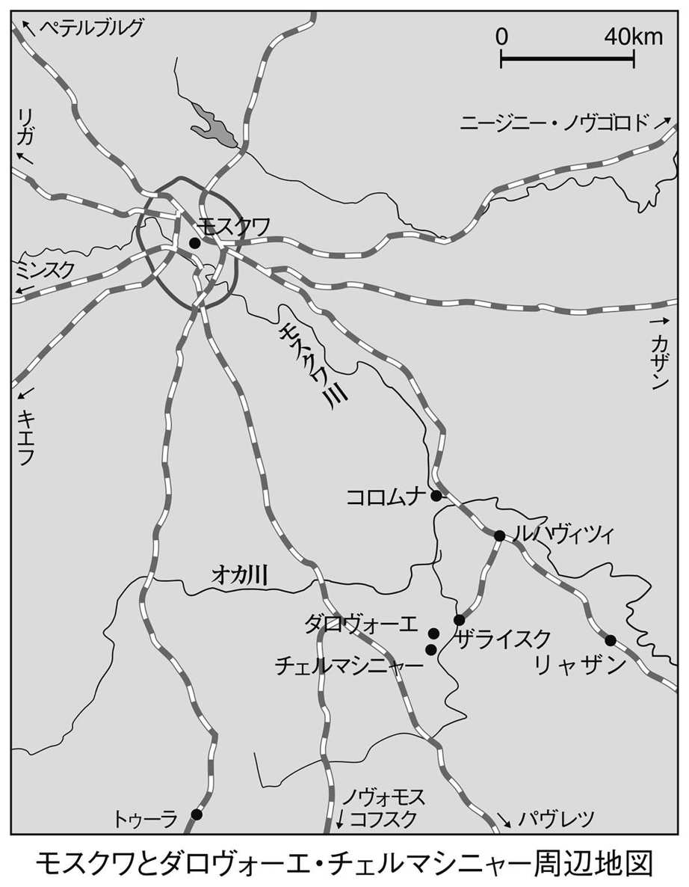
濃い緑の木立にすっぽり包まれた博物館の館長が、案内役を買って出たタチヤーナだった。彼女には、長年の経験を生かしたガイドのノウハウがあるらしくて、緑色に塗りあげたログハウス風の博物館の前を素通りすると、茫々と草が生いしげる果樹園へと私を導いた。
「ここでは、林檎や梨がたくさん採れて......」。両足にからみつく草を掻きわけ、バッタや蛙をはらいのけながら草地をぬけると、先ほど車で脇をとおった貯水池が茂みの間から見えてきた。
「フェージャはこの池でよく泳いだんです」
少年フョードルを「フェージャ」と親しみを込めて呼ぶ彼女の声を背に受け、ぐらぐらする渡り板の上で私は腰を落とし、ひんやり冷たい池の水に手を浸した。土の粒子が細かいせいか、透明といっても暗くよどんでいるのが分かる。
「あれがフェージャの森です」
草むらに戻り、博物館の裏手にある木立に向かって歩き出した私を、ターニャは息をはずませながら振り返った。
「ここで鬼ごっこをして遊んだんですね。私の夢はね、世界中の子どもに思う存分ここで遊んでもらうことなんです。自然の尊さを知ってもらうために」
兄ミハイル、弟アンドレイ、そして農奴の子どもたちと戯れる少年フョードルの明るい声が森の奥からこだましてきそうな気がする。
木漏れ日を浴びながら、「フェージャの森」を抜け、土埃の舞い上がる小道をさらに数分ほど歩くと、左手の草むらに、鈍色にひかる銅像が見えてきた。驚いたことに、それはモスクワのレーニン図書館前にある銅像と瓜二つのドストエフスキー像だった。作家の暗くこわばった顔だけでなく、湿った草地にどっかと居座った感じの銅像そのものが、草原の、開けっぴろげな気分とどこかそぐわない。
「ターニャさん、チェルマシニャーはここから遠いんですか」
焦燥がふと声に出る。
「ここから二キロ、あの森の左手のほうですね」
ドストエフスキー家の領地は、グロスマンが書いていた記述よりもはるかに美しく、たっぷりと緑に覆われた土地にあった。モスクワの博物館には兄のミハイルが鉛筆でスケッチしたダロヴォーエの風景画がかけてあったが、興味深いことにその絵には、池や草地やのどかにたわむれる牛たちの背後に、実際には存在しない山々が描きこまれていた。
うつむき加減のドストエフスキー像を見やりながら、私は思う。ダロヴォーエははたして、少年フョードルにとって「歓び」の土地だったのだろうか。罪を知らない三人の兄弟たちは、この世のいっさいの穢れをまぬかれ、天使のように無邪気に戯れていたのだろうか。それとも、その無邪気さの陰には、後に『カラマーゾフの兄弟』で執拗に描かれる、兄弟間の敵意や憎しみが隠されていたのだろうか。父に連れられ、兄のミハイルと訪れた最後の夏、後年、父親の影をとおして、原罪の地、汚れた土地として意味づけられる経験がここで生じることはなかったろうか。そもそも、『罪と罰』の隠された主人公スヴィドリガイロフの領地がこのダロヴォーエに設定された事実は何を意味しているのか。
あるいは、名優モチャーロフの演技によるシラーの『群盗』にえもいわれぬ興奮を覚えてから、少年フョードルの心に、ある強迫観念にも似た罪の意識が生じることはなかったろうか。「フェージャの森」で野蛮人ごっこに興じたという少年と、この領地に原罪の忌まわしい影をみる後年のドストエフスキーを、どのような糸で結びつければよいのか。
「この村で大火事があって、ほとんどの家が焼け落ちたのに、ドストエフスキー家だけが焼けなかったんです。それは、この樫の木のおかげです。でもフェージャはこの樫の木が大嫌いだったようです」
「樫の木が大嫌いだった」というタチヤーナの一言から、少年フョードルの心のわだかまりがちらりと顔をのぞかせたような気がする。そのわだかまりとは、樫の木と強烈な父権との同質性のようなもの......。思えば、初期の中篇『家主の妻』に樫の木のモチーフが出てくる。吹雪の夜、樫の木のある主人公の家の近くの工場が火事に見舞われ、その騒ぎのなかで父親がタタール人に殺される話は、ダロヴォーエでのこの火事のことが影を落としていたのかもしれない。
凝りにこったタチヤーナのガイドぶりも、「現場」を見たいとはやる私にはまだるっこく、私の受け答えも、両足も、おのずと彼女を急かすような感じになる。私たちは暗く湿った裏庭を迂回するようにして、ようやく博物館の表玄関に向かった。
「ここにある椅子は家族が使っていたものなんです。農奴は椅子を使う習慣がありませんからね。このペチカ、とても小さいでしょう。なんといっても別荘ですからね、地主といってもさほど大きな家に住む必要はなかったのです」
仄暗い部屋にひんやりと沈んだ空気が残暑のほてりを心地よく鎮めてくれた。およそ二十畳ある奥の居間には、威厳に満ちた美しいザライスクを描き出したカンバスがタペストリーのように掛けられていた。
「ドストエフスキー一家は、ザライスクまで馬車で買い物に出かけて行ったんですよ」
ドストエフスキーにとって、ザライスクは、丘の向こうに広がる未知の憧れの土地ではけっしてなかった。ダロヴォーエのこの小さな屋敷にしても、父ミハイルにとって隠れ家であり、悦楽の園でなかったとだれが言い切れよう。当時、少年フョードルが、後に『地下室の手記』で言及される「初夜権」という、およそ時代はずれのしきたりを父親が行使し、その事実をどこかでひそかに知るような体験に遭遇したことはなかったか。一九八一年に旧ソ連で出たセレズニョフの伝記『ドストエフスキー』によると、妻マリヤの存命中、この領地からモスクワの自宅に三人の女の子が引き取られたが、二番目に若いカチェリーナは「情熱的な娘」で、思春期に入った子どもたちの性的な関心の的になったという。しかし彼女に関心を抱いたのは、子どもたちだけではなかった。
「少年フョードルはすでに、このカチェリーナに対する父親のわざとらしい厳しさのかげに、子どもからすれば侮辱的な、大人の好奇心が隠されているのを感じていたし、ある時、母親は家出を試みたこともあった（２）」
セレズニョフのこの記述がほのめかす事実はあらためて解説するまでもない。私たちがもはや知ることのないドラマが、歴史の闇のむこうで演じられていたのである。やがて、母親が結核で亡くなり、飲酒に耽りだした父ミハイルがこの屋敷で行った悪行については、断片的ながらも資料が残されている。たとえば、カチェリーナというこの「情熱的な娘」は、主人を殺したとされる農奴の一人エフィーモフの娘で、ミハイルは彼女に身ごもらせ、生まれた赤ん坊をほどなくして死なせている。これらの事実を、少年フョードルがまったく知らなかったという保証も、彼にとっての心の傷にならなかったという保証もまたない。私の妄想は際限なく広がる。
チェルマシニャー
腕時計を見ると、すでに三時を回っている。このペースだと、旅の最大のハイライトを見逃すかもしれない。運転手のミーシャは何も不平めいたことはいわないが、あとで法外な料金をふっかけられてはたまらない。
案内役のタチヤーナを急かし、道に迷いながらようやく辿り着いたチェルマシニャーは、丸太造りの家が十数軒立ちならぶ小さな別荘地の趣きをなしていた。『カラマーゾフの兄弟』の世界が一挙に目の前に迫ってきた。とはいっても、ドストエフスキーが実際にこの小説の舞台に選んだのは、大ノヴゴロドからおよそ八十キロ南にあるスターラヤ・ルッサという、かつて鉱泉地として知られた由緒ある町だった。ドストエフスキーは、その町に、スコトプリゴニエフスク（家畜追い込み町）という、風変わりな名を与えて実名を避けているのだが、何とも面白いことに、その町から十何露里か離れた地点にチェルマシニャーという架空の村を設定し、一帯の森林をカラマーゾフ家の財産ということにしている。カラマーゾフ家の料理番スメルジャコフに父親フョードルの殺害をそれとなく唆した次男イワンが、その結末を確かめることなく、一時身を隠そうと考えるのがこのチェルマシニャーである。ところが、イワンは、父殺しというひそかな欲望の実現を見届けることなく、急遽、モスクワに旅立ってしまう。私はここに『カラマーゾフの兄弟』の原点をなぞる重要なテーマの一つが小さく露出していると見て、彼のモスクワ行きのもつ象徴性についてあれやこれや考えをめぐらせてきた。そしてこのモチーフは、ドストエフスキーが四十年ぶりにこのチェルマシニャーの地を踏んだときに浮かびあがったものではないかとひそかに想像していた。父親の殺害現場を訪ねた彼は、あの時、遠いペテルブルグで自分が何を感じ、考えていたかを、脳裏にくっきりと甦らせていたにちがいない......。
チェルマシニャーの住人からすれば、それこそ傍迷惑な訪問であることはまちがいなかった。私に言葉をかける勇気がないのを見透かしたかのように、案内役のタチヤーナは、庭先で仕事をしている中年女性に思い切りよく声をかけた。女性は、戸惑う様子もなく、重そうに腰をあげてから、斜向かいの家を指さした。ここではどうやら、ドストエフスキーは今なお昔なじみの隣人らしい。
ピョートル・ミハイロヴィチ・メーリホフ──。九十歳を越えるこの老人は、白いヤニをいっぱいに溜めた両目を宙に泳がせながら、革命前後に、ドストエフスキー家の子孫からロシア語の読み書きを習ったと自慢そうに話しはじめた。
「ドストエフスキーの父親は、どこで、どうやって殺されたのですか」
タチヤーナのぶっきらぼうな問いにも、老人は少しもひるむ様子を見せず、まるで台本を読むような律儀さで答えはじめた。
「わしが聞いた話はこうだ。殺しを企てたのは、チェルマシニャーに住む農奴たちで、全部で三人。父親が楡の木のそばを通りかかったとき、三人がいっせいに襲いかかった。証拠が残るのを恐れたか、殴ったりはしなかったから、外傷はなかった。三人は、ウオッカを一瓶用意しておいて、それを主人の口に流し込んで布切れを詰めこんだ、と......」
百七十年前の事件を、まるで目撃者のような自信たっぷりな口ぶりで語る老人の姿を見るうちに、私は一瞬、巫女の声に耳を澄ましているような錯覚を覚える。
「ピョートル・ミハイロヴィチ、その楡の木というのはどこにあるんです？」
「それがもうなくなった。戦後まもなくのことだが、このあたりの森がぜんぶ伐採されてな、その時あった楡の木も伐りとられてしまったのさ」
老人の脇に立って、興味がてらに話を聞いていた娘さんが口をはさんだ。
「あとでそのあたりをご案内しましょう」
その時私はふと、ドストエフスキーが晩年に『作家の日記』に遺した小品「百姓マレイ」の話を思いだした。
「おじいさん、昔このあたりには狼が出たんですか」
「出たね。何年か前にも一度、狼が出てきて撃ち殺された」
私たちは車には乗らず、メーリホフ老人の娘の道案内で、ドストエフスキーの父親が殺されたという、かつて楡の木があった雑草地に向かってそぞろ歩きをはじめた。
第一部 若き魂の刻印
第一講 楽園追放
【事件と証言１】 ファイル「領主ミハイル・ドストエフスキー殺害事件」（一八三九年）
謎に包まれた真相
一八三九年六月六日（推定）、モスクワから南に約百五十キロ離れたトゥーラ県の領地で、ドストエフスキーの父ミハイルが複数の農奴によって殺された。今日、殺害の状況をしめす司法当局の資料や遺体解剖の所見など、大事な記録が残されていないため、かなりの部分を推量や証言に頼るしかないが、ドストエフスキー家に代々語りつがれてきた話によると、父親の遺体には暴行のあとを示す外傷はなかったとされている。ソビエト時代に入ってまもない一九二六年に、「赤い畑」紙が行なった聞きとり調査では、一家の領地ダロヴォーエに住んでいた農奴の言葉をとおして、九十年前の事件が次のように伝えられている。
「主人が門のなかに入ったとたんに、三人がいっせいに相手に襲いかかった。もちろん、殴るようなことはしなかった。証拠を残すことを恐れたからだ。彼らはアルコールを一瓶用意しておいて、それを全部旦那の咽喉に流し込んだうえ、布切れを詰めこんだ。そのため旦那は窒息死してしまったのだ」
もっとも、残されている証言、伝聞、噂などは、かなり内容が入り乱れ、はっきりしたことは何一ついえないというのが実情のようである。近年では、父親の死因は農奴がしくんだ偽装殺人ではなく、たんなる脳卒中の発作でしかなかったという新説まで出され、真相はますます藪の中に遠ざかってしまった。今後、これまでの説を覆す新資料が出される可能性はまずなく、したがって私たちの興味は、ドストエフスキーがどこまで父親殺害の実態とその背景となった事情を知っていたか、という点に絞られてくる。
ソビエト時代を代表するドストエフスキー研究者の一人レオニード・グロスマンが編んだ年譜から、そのあたりの事情を少し詳しく浮かびあがらせてみよう。
「惨殺の原因としては、地主に対する一般的な反感のほかに、個人的な怨みもあった。共犯者としてイサーエフとエフィーモフの名が挙がった。イサーエフの娘アクリーナは一八三六年以前、十歳か十一歳の頃からドストエフスキーの家に奉公していた。非常な美人であった。ドストエフスキーの父は母の死後もこの娘を離さず、医療の仕事の手伝いをさせていた。エフィーモフの姪カーチャも早くから奉公に来て、ドストエフスキー家の子供らと一緒に生活していた。母マリヤ・フョードロヴナは、この子が十四歳の時に小間使いとして引き取った。情熱的な娘であった。母の死後、父は十六歳になるカーチャを近づけて子どもを産ませたが、子どもはほどなく死亡した」
愛する母親を二年前に失い、父親と遠く離れてペテルブルグに生活するドストエフスキーが、事件の真相にどこまで通じ、それをどう受けとめていたかという問いは、彼の作品世界に潜在する親殺しのモチーフをどう読みとるかという問題と密にからみあっている。今日のドストエフスキー研究でも、その辺りのくわしい事情はあまり解明されていないが、よく知られている「定説」が一つここにある。当時、ペテルブルグの工兵士官学校に在学中の彼が、父の死の知らせを受けて、心神喪失を伴う発作に見舞われたという娘リュボーフィ（エーメ）の証言である。この発作は、ドストエフスキーを終生苦しめることになる「癲癇」のもっとも初期の現れと見ることができるものだが、リュボーフィの証言そのものの信憑性に疑いを投げかける向きも少なくない。ただし、父親の殺害からこの時期の彼が受けた衝撃については、実際に彼と交友のあった同時代人の一人スヴォーリンが、「何か恐ろしい、けっして忘れることのできない苦しい出来事が子どもの頃に起こって、その結果が癲癇だった」と書き、また、医師で友人のヤノフスキーも「フョードル・ミハイロヴィチは、ほかでもない少年時代に、ある陰惨で重苦しい経験をしている。それは、成長期に影響を与えずにはいられぬような、その人の性格に刻印を押さずにはすまされぬようなものだ」と証言している。
フロイトの分析
かねてからドストエフスキーに強い興味を寄せ、とりわけこの事件のもつ異常性に着目した精神分析学者がジークムント・フロイトである。フロイトは一九二八年に「ドストエフスキーと父殺し」と題する論文を書き、ドストエフスキーにおける癲癇の発作およびこの事件にまつわる彼の一連の行動様式を解きあかすにあたって、持論である「エディプス・コンプレックス」の公式を適用してみせた。フロイトの考えによれば、少年フョードルは、ライバルでありかつ支配者である父親を憎み、その反面、強者である父親を賛美し、模範にしたいというアンビバレントな感情に苦しめられていた。しかし、ライバルたる父親を亡き者にしたいという願いは、父親から下される罰、すなわち、去勢に対する恐怖によって抑圧されていた。そして、その父親が農奴によって殺されたことで、図らずもその願いが現実化したため、まるで自分が犯人であるかのような錯覚にとらわれたというのである。さらにフロイトは書いている。
「ドストエフスキーの発作は、十八歳のときのあの震撼的な体験、すなわち父親の殺害という事件を経てのち、はじめて癲癇という形態（けいれんをともなう大発作の型）をとるにいたった」
そしてこの癲癇の発作においては、瞬間的に訪れるエクスタシー（アウラ）のあと、激しいけいれんをともなう意識の喪失に襲われ、その後にしばらく鬱の状態が訪れるという。
「発作の前駆症状においては、一瞬ではあるが、無上の法悦が体験されるのであって、それは多分、父の死の報告を受け取ったときにかれが味わった誇らかな気持ちと解放感とが固着したものと考えていいだろう。そしてこの法悦の一瞬の後には、喜びの後であるだけに、いっそう残忍と感ぜられる罰が、ただちに踵を接してやってくるのが常であった（１）」
フロイトはさらに、少年フョードルの心に深く根を下ろしている罪の意識や、後年現れる浪費癖、賭博熱などいくつかの異常な行動様式にも同じ視点から光を当てている。
これらフロイトの分析を待つまでもなく、母親に対する少年フョードルの執着はきわだって強いものがあった。ソビエト時代の文学研究者エルマコフは、『作家の日記』に収められた短編「百姓マレイ」も、前のフロイト的な観点から読みとくと、一つの興味深い仮説が導き出されてくると述べている。母親のお遣いの帰り道、チェルマシニャーからダロヴォーエへと急ぐ少年フョードルの耳に突然「狼が来る！」という声が聞えてくる。少年は恐怖におののき、野良仕事をする百姓めがけて一目散に走り出した。「こんなところにどうして狼なぞいるもんかね」と、百姓は少年をやさしくなだめ、節くれだった土だらけの手で少年の頬をなでる......。エルマコフによると、少年が耳にした「狼が来る！」という叫び声は、それまでにも彼が経験してきた幻聴の一種だったが、少年の体を金縛りにするほどの恐怖に満ちた狼の幻想とは、母の助けとなることで喜びに満たされる自分に、復讐者として襲いかかる父ミハイルのイメージに重なるものだという（２）。
さらに父殺しのテーマとの関連で扱わなくてはならない問題が一つある。それは自慰行為である。フロイトは同じ論文で、後年の作家をむしばむことになる賭博癖に、彼の幼年時代における自慰行為の影響を見ている。私の知るかぎり、自慰のモチーフは、『悪霊』の草稿に一度かぎり見られるだけだが、この行為が少年にもたらした意味はけっして小さくなかったと見られる。フロイトは書いている。「抗しがたいほどの誘惑、二度とすまいという神聖な、けれど一度として守られたことのない強い決心、魂をとかすような快感、およびわれとわが身を台無しにしてしまいつつあるという良心の呵責」──。自慰をとおして経験される快楽と罪深さの意識とは、アダムとイヴを楽園から追放した禁断の実であるとともに、はじめての罪、はじめての「死」の経験となった。そしてその快楽の「罪」は、家族という聖なる共同体から少年を引きはなし、潜在的には父殺しに繫がるなんらかの意味を付与したことだろう。しかしこれは、むろん、仮説の域を出るものではない。
今日、フロイトおよびフロイト派の研究者の見解に対して、否定的な立場をとる研究者は少なくないのだが、六十年におよんだドストエフスキーの生涯が、「エディプス・コンプレックス」の稀にみるモデルを呈示していることは否定できないだろう。また、作家を生涯にわたって苦しめた癲癇の発作が、しばしば父親の死をめぐるトピックや事件と結びついて生じている事実も見のがしがたい。社会学者の作田啓一は『カラマーゾフの兄弟』における父子関係を例に挙げ、次のように書いている。「フロイトの理論枠組を避けて通る側のほうに、むしろ弁解の義務が課せられる（３）」と。これから追々紹介するドストエフスキーの生涯において、癲癇の発作がどのような状況やモメントと結びつきをもって生じているかは、大いに私たちの興味をそそるところとなる。ともあれ、フロイトの存在も、フロイトの理論も知らなかったドストエフスキーは、父親の殺害と癲癇の発作を結びつけている見えざる謎を、ひたすら直感にしたがって論理化し、表象化するほかに手立てはなかった。
父親の殺害と癲癇の発作──、それはまさにドストエフスキー文学の根本に大きな空白をうがつミッシングリングである。彼の小説において、癲癇の発作は時として二重性をおび、暴力的に人間をねじ伏せる力のメタファーとなり、ある時はまた、万物調和という美しい夢の尽きることのない泉ともなった。そしてこの二重性こそ、ドストエフスキーの小説の基本構造をなぞる二つの力と呼んでも過言ではないのである。
父殺しの普遍性
ドストエフスキーの最後の大作『カラマーゾフの兄弟』では、癲癇のモチーフと絡めながら、この父殺しのテーマが正面に据えられている。証言台に立ったイワン・カラマーゾフは、父殺しの嫌疑をかけられ、絶体絶命の窮地に立った長男ドミートリーを救おうとして声をあげる。
「親父を殺したのはあいつで、兄なんかじゃありません。あいつが殺し、私が殺すように唆したんです。親父の死を望まぬものなんてどこにもいませんよ」
「あなたは正気ですか、それとも？」──裁判長は思わずそう口走った。
「正気に決まっているでしょう。しかも卑劣なくらいに正気なんです。あなたや、ここにいる犬どもらみんなと一緒ですよ」──そう言って彼はやにわに傍聴席を振りかえった。「親父を殺したくせして、びっくりしたような顔をしている」と彼は、あからさまに軽蔑の色を見せながら、歯軋りした。「お互いにしらを切りやがって。大嘘つきめらが！ みんな親父の死を望んでるんだ。蛇が蛇を食っているだけさ......。親殺しじゃなきゃ、みんな腹を立て、いまいましい気持ちで家に帰るのさ......。たいした見世物だ！」（第四部十二編）
前に引用したイワンのセリフを引きながら、「世界の文学にあって、エディプス・コンプレックスをこれ以上にあからさまに自覚した例はおそらくない」と断言しているのが、比較文学研究者として知られたアリフレード・ベームだった。そのベームが、幼年時代のドストエフスキーの経験をめぐって次のような推測を記している。
「もしもドストエフスキーが幼年時代、父親が惨たらしい怒りを爆発させる現場を一度ならず目撃していたと仮定し、それを、虐げられ不満もいわずにずっと耐え忍んでいる母親への熱い愛に結びつけるなら、後に、ドストエフスキーの想像力のなかに、《心理的な固着》によって、〈弱気〉のイメージと、か弱い女性を断ちがたい鎖で縛りつける、残酷で尊大な夫のイメージが生み出されたこともうなずけるだろう（４）」
だが、『カラマーゾフの兄弟』は、そうしたフロイト流の読みを超えた、はるかに重大な罪の刻印を帯びている。すなわち、父殺しの罪の意識に覆いかぶさるようにして彼を襲ったもう一つの罪、敢えていうなら、『旧約聖書』のカインとアベルに、さらには『群盗』におけるカールとフランツになぞることのできる「兄弟殺し」の罪である。しかし、あらかじめ述べておきたいのは、この兄弟殺しのテーマが、父殺しのテーマの派生体としてあることである。なぜなら、大いなる統率者、支配者たる父親の死の後にくるのは、当然のことながら、母性を占有してきた父権をめぐる兄弟同士の争いだからである。しかし、母性をめぐる幼い兄弟同士の争いも、母親がすでに他界しているとすれば、おのずから意味が異ってくる。その空位の母性を埋めるものとは何か？ 「欲望」の実現によって逆にあからさまになった母の地位を埋めるもの、いやおうなく観念化されざるをえない母性に代わるものとは？
兄弟殺し、あるいは宙づりにされた母性回帰がどのような内実をともなうものであれ、一八三九年六月に起こった父親の殺害は、ドストエフスキーの十代をあらゆる意味で締めくくる事件となり、また、彼が作家として独り立ちするために、汲めどもつきぬ想像力の源となった。さらに言葉を重ねるなら、その事件は、ドストエフスキーに、執拗に一つのことを語りかけていた。すなわち、父親の死に自分は深く責任がある、自分に幸福になる資格はないのだということを。お気づきのようにまたしてもフロイトである。ここで明らかになるのは、ドストエフスキーの人生と小説が、ある巨大な原型をなぞっているという事実である。講義形式による本書の叙述もまた、このフロイトの読みを反復的に肯定することになる。だが、本講義の狙いはむしろ、この作業を突きつめることによっていかにフロイトの読みから解放されるか、という点にある。
最近刊行された浩瀚なドストエフスキー百科事典から「癲癇」の項目を開くと、そこにはドストエフスキーが父親の死の知らせと同時に癲癇の発作に見舞われたという「事実」への言及はない。事典の性質上、不確実な記述はできるだけ避けようとの狙いだろうが、これからの講義では、ある意味で、娘リュボーフィが残した「回想」がすべての議論の出発点になる。その立場がたとえどれほど脆弱であれ、その「回想」をないがしろにすることによって失われるもののほうが、はるかに多いと信じるからである。
さらには、たとえば「去勢」という概念一つをとっても、それがすでにフロイトの文脈をはるかに超えて、ロシアにおけるユートピア主義の伝統の根元を明らかにするものであるなら、ドストエフスキーにおける「父殺し」のテーマも根本からその文脈を分かつことになるかもしれない。たとえばアレクサンドル・エトキンドは、フロイトのなかに「隠喩」としてしか存在しなかった去勢がロシアの土壌において「物質化」され、新しいユートピアを築くための人間身体の「変容」の行いとなると考える。ドストエフスキーがかりに世界の変容を夢見るとするなら、それはとりもなおさず、「去勢」の現実化の是非をとおして見ることになるだろう。去勢とはとりもなおさず、自然に対する文化の「頂点となる勝利」なのだから（５）。
【伝記１】 出生から作家デビューまで（一八二一～四六）
出自、生い立ち
ナポレオン戦争の終結からほぼ十年を経た一八二一年十月三十日（新暦十一月十一日）、モスクワ市の北の外れにあるマリヤ貧民施療病院（現在、国立結核療養所）でフョードル・ドストエフスキーは産声をあげた。十八世紀に入るまでこのあたりは、極貧、浮浪者、犯罪者、自殺者たちの墓が犇いていたというから、住環境としてけっしてよい土地柄ではない。現在、病院の敷地内にはかつてドストエフスキー一家が住んでいたというレンガ造りの平屋の官舎が博物館として保存され、一般にも公開されている。
父ミハイル・アンドレーヴィチは、モスクワ医科大学を卒業後、主任軍医としてしばらく陸軍病院に勤務したが、まもなくモスクワの新市街（現在、ドストエフスキー通り）にあるこの病院に赴任してきた。まだ三十歳を少し越えたばかりの若さながら、父ミハイルにはすでに人生の辛酸をなめつくした苦労人の面影があった。ナポレオン戦争もいよいよ大詰めに近づき、ボロジノでの決戦をひかえて野戦病院に送られた彼は、絶望にくれながら、負傷兵士たちにメスをふるいつづけた。
ロシアでは、このナポレオン戦争を「祖国戦争」と呼ぶならわしで、この時代は、犠牲とヒロイズムがすべての価値を支配した時代である。若い兵士たちは、国家のために傷を負うことを願って出陣し、相次ぐ戦火の合間にすら一時の歓楽にうかれることなく、ヨーロッパやロシアの未来について思索に耽り、議論を戦わせた。祖国戦争の数か月の間にロシア社会は数十年もの成長を遂げた、と文学史家のロトマンは書いている。この戦争は、ロシア人の心に広く終末観を招き寄せたことでも知られているが、同時代の詩人アレクサンドル・プーシキンもそれに大きく感化された少年の一人だった。後に彼は手紙のなかで次のように書くことになる。
「今後は死者も、勝利者も歴史に属して──二十八歳、もぎ取られた手、心寛やかなる目的！──なんという羨ましい運命だろうか（６）」
しかし、ドストエフスキーの父ミハイルは、そうした若者たちのヒロイズムに背を向ける徹底したリアリストだった。たとえ英雄として迎え入れられようと、四肢の自由を奪われた男たちに、どのような未来があるというのか。命を落としたほうがまだましではないか。そうした深いペシミズムがミハイルの心に焼きついていたのではないか。あるいはそれこそが、医師たる彼の現実感覚だったのかもしれない。そして、その意味では彼もまた戦争の犠牲者だったのである。
病院から家庭にもどった父親は、人一倍熱心に子どもたちをしつけ、夕食が終わると、子どもたちに歴史書や聖人伝を読んで聞かせるのが日課となった。そればかりか、子どもたちを預けた寄宿舎でラテン語の教育がないことを知るや、自分から一緒に本を広げ勉強を始めるほどの熱の入れようだった。また、子どもたちが「自由思想」に染まることを恐れて、病院内の患者たちと交わることを厳しく禁じ、彼らの行いを監視していたという。
伝記作者の多くは、母親のマリヤ・フョードロヴナに特権的といってよい好意的な記述を与えている。それによれば、モスクワの富裕な商家の出であった彼女は、音楽や詩にも秀でた心優しい穏やかな女性で、猜疑心の強い夫ミハイルの蔑みにも根気よく耐え、夫と家族への誠実な愛を捧げとおしたとされている。『新旧約聖書からとった百四つの物語』を教材にして丁寧に読み書きを教えてくれた母の姿は、幼年時代の記憶にひときわ鮮やかな陰影を刻みこむことになった。少年フョードルが、母親への思いを一途に深めていく背景には、兄弟姉妹が多く、親の愛に十分に甘えることのできなかったことが理由の一つとして挙げられる。しかし母親からすれば、ひどい飲酒癖におかされた夫の世話で手一杯なうえ、結核の病におかされた身では、子ども一人ひとりの身にどこまで神経を払うことができたかは疑問である。学生時代のドストエフスキーを回想して友人ヤノフスキーはこう書いている。
「当時、彼は私に、少年時代のつらくて喜びのない環境について多くを話したが、母親や妹たち、兄のミハイルについてはいつも敬虔な思いを語ったものだった。父については絶対に話したがらず、親父のことは訊かないでくれと頼み、弟のアンドレイについても多くを語りませんでした（７）」
シラー『群盗』──原罪の起源
病院をぐるりと囲む金属の塀に仕切られ、菩提樹がうっそうと茂る官舎内で過ぎた幼年時代は、あまり変わりばえしない毎日だったが、それでも時には道化師や漫才師、犬や猿などが登場する田舎芝居に好奇の目を光らせることがあったらしい。まもなく少年は、ドイツ古典主義の世界に出合い、強い感動に見舞われる。作品に溢れるドラマティックな愛憎や、自由への憧れ、博愛主義は、理想に燃える少年の心を熱いほてりで包んだ。
「十歳の時、わたしはモスクワでモチャーロフが登場するシラーの『群盗』の舞台を観たが、その時に受けた強烈な印象が、わたしの精神に非常に実り豊かな影響を与えたと断言できる」
『群盗』がドストエフスキーに与えた影響、いや、この戯曲が、彼の文学的出発点となっていることに言及している研究は少なくない。だが、後年の彼の文学に現れる「原罪」というテーマとからめて言及した例はあまり多くない。『群盗』から経験されたものの内容を問うことは、彼の文学の根源へと遡る重大な意味を帯びており、本講義でのライトモチーフの一つといってもよいものである。極端な言い方をするなら、とりわけドストエフスキーのように、自らの過去を語ることにおおむねストイックであった作家の場合、作品の内容やディテールから伝記上の事実を類推するといった手法も欠かせなくなる。『カラマーゾフの兄弟』におけるドミートリーとイワンの鬼気迫る愛憎のドラマ、ドミートリーが「燃える魂の告白」で見せる「喜びの賛歌」、さらにはフィナーレでアレクセイと子どもたちが高らかに謳いあげる「連帯」のシュプレヒコール──。これらのモチーフがすべてシラー文学を源泉としていることは疑いないが、しかしそれらは互いに際だったコントラストをなしている。シラーが懐深く抱いた兄弟愛の理想、それとはうらはらに、その理想を根本から挫く何かを、十歳の少年フョードルは『群盗』に見ていたにちがいない。血縁を乗り越えての兄弟愛は、『カラマーゾフの兄弟』のフィナーレで謳いあげられた最高の理想だったが、その実、現実に血のつながった者同士の敵意こそは、ドストエフスキーの内面に深く鋭く突き刺さった棘でもあった。
それにしても『群盗』にはドストエフスキー文学のエッセンスともいうべき重要なモメントが数多く隠されており、今後、講義のなかでも再三言及することになるので、この場を借りて、簡単にその内容を紹介しておこう。
老伯爵フォン・モールの長子であるカールは、気高い理想に燃える若者だが、一時の無軌道を悔いて父親に謝罪の手紙を送ったところ、邪な心をもつ弟フランツにそれを利用される。フランツは、廃嫡処分を知らせる手紙を父親に代わって送り、父親を幽閉したあげく、カールの恋人アマーリヤに言い寄る。実情を知らないカールは、自分を見捨てた社会への復讐を誓って盗賊団の首領となり、故国に戻って弟フランツと対決する。他方、アマーリヤをついに手中にできず、罪の意識にかられた弟は首を吊って死に、幽閉された父フォン・モールは憤死する。アマーリヤとの念願の再会を果たしたカールは、盗賊団の首領としてそれまで行ってきた悪業ゆえに、彼女と添い遂げることができないと思い、彼女の望みでアマーリヤを刺し殺す。
一人の女性を愛する兄弟、このモチーフの根源性については、後年の大作『白痴』や『カラマーゾフの兄弟』を論じる際に着目することにしよう。だが、ここであらかじめ注目しておきたいのは、『群盗』の第五幕、神を憤らせるいちばん重い罪は何か、という弟フランツの問いに対して牧師モーゼルが告げた回答である。
「一つは父殺し、もう一つは、兄弟殺しです」
わずかに十歳を過ぎたばかりの少年フョードルに、歴史的な背景をも含むそのセリフの意味するところが、どこまで理解できたのか、疑問がないわけではない。だが、ドストエフスキーの文学は、この二つの罪をめぐる想念を動力とし、あるいは反転させながら、『カラマーゾフの兄弟』という極点へといたる。ヴィリモントという研究者は、カチェリーナを介した長男ドミートリーと次男イワンの争いに（『カラマーゾフの兄弟』）、アマーリヤをめぐるカールとフランツの葛藤をみた（８）。思えば、ドストエフスキーはおそらくこの戯曲を非常に特殊なかたちで経験し、根源の亀裂ともいうべき体験を彼の内面に知らず知らず刻みつけていったのではないかと思われる。第一に、アマーリヤという女主人公への圧倒的な感情移入である。一八六一年に雑誌『ヴレーミャ』に発表された「詩と散文でつづるペテルブルグの夢」には、この幸薄いアマーリヤが、ほとんど妄執のように彼の脳裏にまといつき、処女作『貧しき人々』の誕生に一役買っていたことを暗示する文章が出てくる。さらには、兄弟間の秘められた葛藤という問題である。父ミハイルは、長子に自分と同じミハイルを与え、三男には、祖父の名アンドレイを授けた。ドストエフスキーに与えられたのは、母方の父の名前だった。小説は、こうして、伝記の表面にはけっして浮かびあがることのない事実を次々と暗示する。
幼年時に生じた出来事は、しばしばその人生を決定する。たとえば、仮に次のような空想を膨らませることもできよう。父ミハイルは長子を偏愛するといった事実はなかったろうか。かりにそうであったとして、弟フョードルはそれを、どのような目で見つめていたのか。『群盗』という恐ろしい物語の存在を知った後で、彼はみずからのフョードルという名前を（あるいは自分がミハイルではないという事実を）、『群盗』のフランツに重ねながら、呪いのように引きずることになったのではないか。ドストエフスキーの後の小説において、フョードルという名に二度にわたって与えられた呪いは、彼の内面の傷を深く暗示するものでなくてはならない......。そして何より、不在となった母の地位を埋めるもの、絶対的な母性の代替となるものは、何であったろうか。ドストエフスキーが『群盗』の女主人公アマーリヤへ寄せる執着は何を意味するだろうか。アマーリヤこそは、不在の母性の代替となった存在ではないだろうか......。
楽園追放
さて、フョードルが十歳になった年、父は銀貨一万二千ルーブルをはたいてモスクワの南東百五十キロにあるトゥーラ県の外れに領地ダロヴォーエを手に入れ、さらに翌年には、その隣り村のチェルマシニャーも買い取った。官舎内で単調な毎日を送る少年にとって、領地の村で母や兄ミハイル、弟アンドレイと過ごす夏休みは何ものにも代えがたい喜びであり、朝から戸外に飛び出しては、農民たちの畑仕事に目を凝らし、いろんな遊びを考え出して、のびのびと時を過ごすことができた。フョードルが大好きだった遊びの一つに、「野蛮人ごっこ」がある。菩提樹の林のなかで服を脱ぎ、刺青のように絵の具を塗りたくり、手製の弓や矢で襲撃の真似事をする、ごく他愛のない子どもの遊びである。ドストエフスキー家の領地は、目立った森や川もない、四方、原野の広がる平坦な土地であったが、終生、途絶えることのない大地への憧れには、ダロヴォーエで過ごしたこの夏の思い出が深く息づいていた。
もっとも、フョードルには、そうしたのびやかな性格とはうらはらに、一種の「ヒステリー」を病む、孤独で癇の強い少年としての一面があり、病いが高じると、時として失声状態に陥ることもあった。暗闇を恐れ、狼を怖がり、生きながらにして埋葬されるという妄想も味わった。
十代の後半、ドストエフスキーはいくつかの試練に立たされる。一八三七年二月、母マリヤが結核でこの世を去り、それにともなって兄弟は別々に育てられることになった（母親の死に際してフョードルは、咽喉カタルを患い、突然の失声症に見舞われた）。父はモスクワでの病院勤めをやめ、ミハイルとフョードルの二人をペテルブルグの陸軍中央工兵学校に入学させるため馬車でモスクワを出発した。フョードルはこの初めての長旅のなかで、一つの強烈な印象に出合う。後に、彼が『罪と罰』の創作ノートのなかで「はじめての個人的な傷」と呼ぶことになる事件である。高慢ちきの伝書使いが、御者の頭をこぶしで殴ると、御者がなおいっそう馬に鞭を入れる。少年フョードルはこの光景を個人的な「恥辱」として意識した。
一八三九年六月六日（推定）、父ミハイルが、チェルマシニャー村の森の外れで泥酔死を装った巧妙な手口で殺害された。アルコール癖が高じ、癇癪を起こしては相手かまわずステッキでなぐり、農奴の若い娘に手をつけ、一説によると、初夜権まで行使するほどに横暴だったミハイルは、日頃から農民の恨みを買っていたのである。ザライスクから検死にやってきた医師は、これを自然死として処理し、一件を落着させた。その後、「チェルマシニャーとダロヴォーエの領主は農民に殺された」「女子が原因だ」といった噂が囁かれ、ついには当局の耳に及ぶところになって再び検死が行われたが、噂を裏づけるような証拠は見当たらず、裁判は見送られた。しかし、それらの噂はやがてフョードルの耳にも届き、その心にぬぐいがたい傷を残した。だが、そうした父親に対して彼が抱いていた感情の正体はいまなお謎である。そもそも十代の終わりまでに彼が一人で書いた手紙はすべてが母親宛てとなっており、父親をめぐる言及もいちじるしく少ない。父親宛ての手紙が兄ミハイルと連名で書かれていることも、フョードルの屈折した内面をうかがわせている。だが、父親の死は彼の文学的な想像力を刺激してやまなかったのか、『領主。父は殺された』と題するドラマを構想するまでに発展する（ただしその内容がどのようなものであったのかは分からない）。また、ダロヴォーエで父親が犯した罪と、その帰結に少なからず通じていたことは、後年、彼が計画することになる大長編『偉大な罪人の生涯』のメモ書きのなかに明らかになる。父親はアリフォンスキーと名づけられている。「カーチャを慰みものにする。母はカーチャのために我を忘れる」「村で好き放題したがためにアリフォンスキーを農民たちが殺すこともありうる、少年がその証人となることも、そして──」。
工兵学校在学中にフョードルがペテルブルグから書き送った手紙はわずか四通、うち兄宛ての手紙に数か所、父親に対する言及がみられる。あまりにも理想とかけ離れた父親に対する軽蔑とかすかながらも憐れみとが顔をのぞかせる。
「親父はまったく奇妙な性格をしています。（......）ねえ、兄さん、親父はまったくの世間知らずですよ。（......）おめでたい無知だ。なのに、この世のことに深く幻滅している」。
しかし、フョードル自身も、そうした父親からもらい受けた血をどこかで深く意識していたのだろうか。同じ手紙で彼は書いている。
「どうやら、それは、ぼくたちに共通する定めのようですがね」
結果からの推論というかたちでドストエフスキーの青少年時代を意味づける作業を行ってみよう。とりわけ、『カラマーゾフの兄弟』の父殺しにからむ兄弟間の遺産相続や金銭にまつわるいくつかの問題に、若いフョードルの経験の反映をみることはできないだろうか。なぜ、ドストエフスキーはあれほどまでに金にこだわったのか。父親の死が、フョードルの心にもたらしたものは、何よりも監視からの解放であった。父なるものの支配とは、道徳であり、フロイト流にいえば、去勢の恐怖である。同時に父の死は、遺産の分与にまつわる金の問題といやおうなくぶつかることを意味した。子どもの世代に、とりわけ兄弟間にしばしば計り知れない傷をもたらす遺産相続の問題をめぐって、幼い三男アンドレイは別としても、兄弟の対立にからむ何かがたとえかすかでも生じることはなかったろうか。父親の死後に残される最初の試練とは、遺産をめぐる兄弟間の葛藤である。それをドストエフスキーはどう乗り越えていったのか。
もっともドストエフスキーの伝記作家たちは、異口同音に、兄との友愛に満ちた関係を描き出している。だが、理想とはつねに影によって際立たせられたものではないか。兄弟同士の争いという経験は、それがつねに楽園追放という神話の影を引きずるだけに、何がしかの重大な意味をドストエフスキーにもたらしたのではないか。類推を込めてあえていうが、父親の死に遺産相続の欲望をからませるイワンの原型がここにあると見ることは穿ちすぎだろうか。イワンが次男であることの意味も、一つはそこに由来してはいないだろうか。もちろん、イワン・カラマーゾフとドストエフスキー自身の関係は、のちに詳しく述べるように、より存在論的な意味に彩られているのであるが......。
シラー体験
さて、工兵学校での生活は、味気のない地形学や築城術の修得と、軍事教練に明けては暮れる苦しい五年間だった。といっても娯しみがまったくなかったわけではない。夜のささやかな時間を読書にあてることができるのは、何よりの楽しみだった。この時期、彼は、プーシキン、ゴーゴリといった同時代のロシア作家たち、シラー、ゲーテ、ホフマン、ユゴー、バルザック、ジョルジュ・サンド、クーパー、デ・クィンシーらを、手あたり次第に読みあさっている。
ところでドストエフスキーが学ぶ工兵学校は、ドイツ人、ポーランド人、ロシア人がそれぞれ三分の一ずつ占めるかなり特殊な成立ちをもっていて（ニコライ一世は一八二五年のデカブリスト事件以後、ロシア人をあまり信用しなくなった）、そこに醸し出された雰囲気は一種独特のものがあった。入学者のレベルも高く、体罰その他の逸脱を厳しく戒める模範校として知られたが、一八三九年の三月に、学校内で「手紙では説明できないようなこの上なく恐ろしい事件」が起こり、五人の海軍準士官が兵役に出されるという騒ぎになった。事件の詳細は知られていないが、それがために肉親に宛てて書く手紙がすべて第三者によって開封され、あるいは宛先に届かないという事態にいたった。「事件」が外に漏れるのを恐れた学校当局の判断だったらしい。
また、工兵学校に学ぶ仲間たちの「趣味」も特筆に価するものがあった。セレズニョフの書いた伝記には次のような興味深い記述がある。「またある者は、〈神の人々〉、すなわち、ミハイロフスキー城にその巣窟の一つを接木した鞭身派一派の伝統を引き継ごうとしていた。踊ったり、円陣を組みぐるぐる回りながら歌ったりする儀式について、学校内の多くの人々が話題にしていた（９）」。
しかしこの時期のドストエフスキーにとって何よりも特筆すべき出来事は、今日、題名のみで知られる二編の戯曲『マリー・スチュアート』と『ボリス・ゴドゥノフ』に手を染めていることである。兄ミハイルが催した文学の夕べで彼が自作を朗読したのは、一八四一年、二十歳の年であった。問題はこの二つの作品が抱えているドラマの中身である。史実にもとづくこれら二つの作品がいかなる視点で書かれていたかは想像するしかないが、とりわけ興味をひくのは、『群盗』の作者であるシラーもまた『マリー・スチュアート』という有名な戯曲を残している事実である。ドストエフスキー研究者のグロスマンは、この時代の彼の文学体験を「子どもじみた試作の域を脱してはいなかった」としているが、「過去の偉大な性格をもった人間に具体的な形をとって現れた、罪悪で奪った主権と僭称の問題に心惹かれたのだろう」と見ている。グロスマンの解釈は、たんにこれら二人の歴史的人物の生きざまを大まかになぞっただけのものだが、『ボリス・ゴドゥノフ』は「強い個人が全体の幸福の名においてその手を血で汚す権利、責めさいなまれた子どもの苦しみの上に多数の幸福を築きうる可能性、僭称者が奪った権力の価値」を、『マリー・スチュアート』は、「二人の女性による仮借ない闘争をとおしての、そしてその結果、一人が断頭台に送られることになる玉座の争奪戦」「激しい憎悪に駆られた二人の女主人公の競り合い」を主題とするものだったという指摘に、大きな間違いはない。それらの作品には、すでに、ドストエフスキー文学に結晶するもっとも根源的なテーマが露出していたのである。
『群盗』との出合いに始まるドストエフスキーのシラー体験をより決定的なものにしたのは、工兵学校時代の友人で、五歳年上のイワン・シドロフスキーだった。ロマン主義にかぶれる理想肌の詩人で、殉教者のように痩せこけた彼は、ドストエフスキーにとって願ってもない文学と人生の指南役となった。もしもこのシドロフスキーの感化がなければ、作家となるという彼の夢は十分に開ききることがなかったかもしれない。グロスマンによれば、シドロフスキーはやがて詩人の道を捨て、教会史の執筆に取りくみ、五十年代にはすべてをなげうって修道院に入っている。まさしく「激しい情熱と熱狂的な気性の人」だった。シドロフスキーとの交友でもっとも記念すべき思い出の一つが、ともに熱中してシラーを読んだことだった。そこで得られた体験はあまりに深く、シラーはやがて、言葉にするのもはばかられるほどに神聖な名前と化していく。兄ミハイルに宛てた手紙を引用しよう。
「兄さん、ぼくがシラーを読んでいない、と兄さんは書いています。兄さん、それは間違いです。（......）ぼくの人生のこんな時期に、あの偉大な詩人を知ることぐらい、大きなことをしてくれたものはないと思うのです。（......）シラーの名は、ぼくにとって親しい、なにか魔法の響きとなり、あまりにも多くの夢を誘い出してくれるのですから。お兄さん、それらの夢は苦いものなのです。ですから、シラーについて、彼の作品から生まれる印象にあなたとは何も話さなかったのです。シラーという名前を聞くだけでぼくはつらくなるのですから」
「それらの夢は苦いものなのです」「名前を聞くだけでつらくなる」──、読みすぎとのそしりを恐れずにいうなら、自分の青春時代のもっとも大事な経験の一つであるシラーの読書を兄のミハイルにいっさい告げずにきたという事実は、フョードル自身の心の奥にわだかまる何かを、肉親である兄とシラーを共有することの恐れがあったことを、暗示するものではないか。兄ミハイルに対する過剰ともいえる「愛」の表現は、なんらかの罪意識の表れと見ることはできないだろうか。
父殺しという視点から見ると、『群盗』とならんで『スペインの王子ドン・カルロス』もまた、ドストエフスキーの文学に大きな影響をもったと見ることができる。そのあらましをここで簡単に紹介しておこう。カルロス王子は、いまや父王の后となったかつての婚約者エリザベートへの思いを断ち切ることができず、悶々としている。そこへオランダから戻った親友ポーザ侯爵は、カルロス王子の恋心と王妃の影響力、そして父王への秘められた謀反心を利用し、圧制にひしぐオランダの解放に彼を向かわせようとする。しかし、ポーザ侯爵の計画はあまりの性急さゆえに失敗し、自分の命とひきかえに王子を無事オランダに送り出そうと試みるもむなしく、王子は捕らえられ、宗教裁判にかけられる。
のちに『カラマーゾフの兄弟』に結晶する「父殺し」のテーマは、ドストエフスキーの原体験ともいうべき『群盗』とこの『ドン・カルロス』が大きな柱となった。同じ女性エリザベートを父フェリペ二世と子カルロス王子で争うという恋愛のテーマがそうである。第二幕二場のフィナーレでは、カルロスの胸を一瞬、父殺しの衝動がよぎり、「おお、聖霊たちよ、いまこそ俺を守ってくれ」と祈る場面がある。潜在的なレベルにおいては、父殺しのテーマと関わる『大審問官』の章でも、『ドン・カルロス』が意識されていたことは、十六世紀スペインという舞台設定もさることながら、登場する宗教裁判長の描写が驚くほど大審問官自身に似ていることが挙げられる（10）。先にも述べた同じ女性を父と争い、最後にはそれがために罪にかけられる子という設定は、この『ドン・カルロス』にも何らかの影響の源を見ることができるだろう。
放蕩、作家への道
理想主義者のドストエフスキーが禁欲主義者であったことはおそらく一度もなかった。ペテルブルグでのこの時期の生活は、父親の遺産や、定期的に送られてくる領地収入などもあって財布の紐も比較的緩やかだったらしい。極端に内気で人づきあいの下手な彼は、もっぱらビリヤード賭博に熱中し、同時代人の回想によると、四四年の二月、モスクワの後見人から送られてきた千ルーブルを、レストランでの食事とビリヤード、ドミノ賭博に使い果たした挙句、翌朝には五ルーブルの無心に行き、同宿の医師の度肝をぬいたというエピソードもある。しかもこれとまったく同じ愚行を、わずか三か月前に演じ、高利貸しに駆け込んだことがあったばかりだった。ドストエフスキーが小額の一時金を受けとり、領地と農奴に対する遺産相続権を放棄したのはまさにこの時期である。この時代の手紙は、兄弟間でお金の貸し借りがしきりに話題になっている。父親の存命中にはありえなかった弟の浪費癖が原因である。兄のミハイルは、金に窮した弟への援助を遺産管理人に頼んでいる。
「弟は千五百ルーブル紙幣の借りがあります。退職して返済できなければ、債務監獄に入れられることは火を見るより明らかです（......）五百ルーブル銀はたいした金額ではありません（......）ただ、これをもらっても先行きなお相続権を主張するかもしれないという心配があります」
ドストエフスキーの「放蕩」ぶりは、その年のドストエフスキー家後見決算書から一目瞭然である。子どもたちに郵送された仕送りの額のなかで、フョードルに対するものがずばぬけて多いのだ。兄ミハイルの七百ルーブルに対して、フョードルにはじつにその三倍半の二千四百十二ルーブルが送られ（弟アンドレイはわずかに百五十ルーブルだった）、全体の支出のじつに五割を超えている。後年のドストエフスキーの面影がここに揺曳する。博愛主義の夢と破局的な意志の激しい葛藤。思えば、この時期こそがドストエフスキー文学を培うもっとも稔り多い土壌であったはずだが、そこはもうわれわれの想像力にゆだねるしかない遠い神話時代である。
さて、工兵学校を出たドストエフスキーは、工兵局製図課に奉職したが、役所勤めに「ジャガイモのように飽きあきして」一年余りで職を捨てる。こうして念願の夢がかない、情熱のすべてを文学に傾けることができるようになった。だが、もちろんいかに「食っていく」かという切迫した現実問題もあった。退職してまもなく彼は手紙に書いている。「地獄に等しい窮地に陥っていることは、自分でもよく承知しています」。
しかし彼には、もちまえの語学力をいかし翻訳で食べていく自信があったし（実際に彼はバルザック『ウージェニー・グランデ』の翻訳を終えている）、どれほどの窮地に陥ろうと、注文に応じて書くようなまねはしない、という、したたかな作家魂もあった。むろん、それはやがて無残な挫折を強いられることになるのだがともあれ、当面の目標であり、ライバルである作家は、印刷全紙一枚で千銀貨ルーブルを稼ぎだすニコライ・ゴーゴリだった。
一八四四年一月、ドストエフスキーはネヴァ川のほとりで不思議な幻視に見舞われる。
「その時、もう一つ別の物語が目の前に浮かんできた。ある暗い貸間に、正直で、純潔で、道徳的で、上司に忠実な九等官、そして彼とともに辱めを受けた、悲しみに打ち沈む少女がいる。二人のそうした物語に、ぼくの心は深く引き裂かれる思いだった」
創造的啓示の貴重な瞬間だった。いま誕生しようとする小説の全容を彼は一瞬のうちにかいま見たのだ。ドストエフスキーはこの啓示にしたがい、失敗したら「首を吊る」か、「ネヴァ川に飛び込む」覚悟で、新しい小説の稿を起こす。ペテルブルグの下町に住む貧しい小役人と身寄りのない若い娘のほほえましい愛と、悲しい結末を描いた、往復書簡体の小説『貧しき人々』である。
推敲に推敲をかさねて仕上げられた原稿は、同宿の作家グリゴローヴィチの口ききで当時『ペテルブルグ文集』を発行していた詩人のネクラーソフに手渡された。ドストエフスキーに感動の一瞬が訪れる。「新しいゴーゴリ」の出現に有頂天になったネクラーソフは、朝早くグリゴローヴィチとともに彼の下宿を訪ね、処女作の成功を祝福した。
そしてその二日後、無名の文学青年は、批評界の大御所として知られるベリンスキーに引き合わされ、絶賛を浴びる。ベリンスキーは、繰り返し、ドストエフスキーにこう尋ねた。
「一体君は自分の書いたものがどういうものか、分かっているのですか？」
ベリンスキーは一切の誇張なく、ドストエフスキーの登場に狂喜し、ネクラーソフに向かってこの一作だけでも、ロシア文学全体に優に匹敵すると断言した。また、当時のペテルブルグにおける中心的なサロンの主人パナーエフは、ほとんど「父親のような愛情」をもってこの新人作家に接したとされる。その姿を多くの同時代人が目撃したが、作家のツルゲーネフもまたその一人だった。彼は、当時のベリンスキーが語った言葉（「かわいい小鳥だ。がしかし、その爪は鋭いんだ！」）を引用し、次のように書いている。
「この新人天才作家に対する、底から湧き起こるような父親の優しさにとらわれたベリンスキーは、まるで自分の息子のように、『坊や』のように彼に対していたのである」
ベリンスキーによる絶賛に舞い上がったドストエフスキーは、その喜びを兄宛てに綴っている。「兄さん、ぼくの名声が現在と同じ高みにまで達することは今後二度とないでしょう」。そして後年、「これは私の生涯のうちでもっとも感激的な一瞬だった。私は徒刑時代にこの時のことを思い出しては勇気を奮い立たせたものだった」と回想した。思えば、デビュー時の、度を逸したこの有頂天ぶりこそ、ドストエフスキーに不吉な将来を予言する暗雲だったのかもしれない。
【講義１の１】 父殺しとテロル
「憑依」の作家
ドストエフスキーは「憑依」の作家です。「憑依」とは、なにかにとりつかれる状態、あるいはなにかに乗りうつられる状態をさしています。ドストエフスキーの小説には、自分が作り出した登場人物の内面に入り込み、彼らの口をとおして自分の秘密を告白する、といった側面があります。いい換えると、彼の小説では、時として、物語の枠組みから外れ、驚くほどにパーソナルな動機が入り込み、作品全体を一挙に謎めいたものにしてしまうのです。これから十二回にわたる講義のなかで私が明らかにしたいと思うのは、作家が語ろうとして語りえなかった謎の部分ともいえるものですが、さしあたり、その謎を一言で集約するなら、「父殺し」に尽きるでしょう。
さて、十九世紀のロシア文学は、ドストエフスキーとトルストイという二人の文豪を世に送りだしました。彼らは、ともに競いあうかのように、小説という名の「怪物」を次々と産み落としていくのですが、怪物の怪物たるゆえんとは、何といっても、その、桁外れなボリュームにあります。しかし、この二人の作家は、世界の文学史に稀なほど対極的な世界観をもつ作家とみられてきました。十九世紀末の思想家メレシコフスキーは、そうした二人の個性を対比しながら、それぞれ次のようにタイプ化しています。すなわち前者は、肉を浄化し霊にいたった「霊の予言者」であり、後者は、肉を否定しつつ異教的な肉の世界に留まった「肉の予言者」であると。たしかに両者の間には、さまざまなレベルでの違いがあります。観念性あるいは象徴による思考といった面においてドストエフスキーは大いに際立っていましたし、人間観察の点からいえば、トルストイの目は驚くほど冷徹にその生理的側面をにらみ、小説のなかにそれらを描きとっていました。しかし、現代という鏡に改めて彼らの姿を映し出してみるとき、この二人の世界観にさほど大きな違いは認められないというのが真実ではないかと私は思うのです。小説という名の「怪物」を産んだ作家にふさわしく、二人は桁はずれに強靭な精神力の持ち主であり、人一倍行動力に富んでいたからです。だからこそ、霊と肉の分離を人一倍はっきりと見分けることができたとさえいえるのです（11）。
では、なぜ、十九世紀後半のロシアに、「怪物」の誕生は可能となったのでしょうか。彼らの代表作である『罪と罰』（一八六六年発表）や『戦争と平和』（一八六五～六九年）が書かれた時代は、世界の終末という連想すら招きかねないほどに混沌とした時代でした。農奴制を基盤とする社会が、西欧タイプの資本主義国家にむけて大きく飛躍を図ろうとし、その産みの苦しみのなかで、知識人も民衆ものたうち回っていた時代と形容することもできるでしょう。とりわけ、一八六一年の農奴解放令がロシアの歴史にとって運命的な事件となります。農奴解放以降、農村から解き放たれた農民が群れをなして都会に流れこみ、首都の顔は根本から歪み、階層分化の波とともに、貧困、売春、犯罪がはびこりだした時期だったのです。
二人の文豪には、それぞれ「雑階級」（ドストエフスキー）と「貴族」（トルストイ）という出自の違いこそありましたが、ロシア知識人としての誇りや、近代化のレールから振るい落とされた人々への愛、知識人であるということ、あるいは貴族であるという、出自の違いからくる民衆への「悔悟」という点にさしたる開きはありませんでした。そうして、彼らは、西欧かロシアか、革命か宗教か、といういくつもの対立を軸に、問題の解決の糸口を探りはじめたのです。しかもその議論は、おのれの身を切るような体験に裏うちされていましたから、「世界文学」としての普遍性へと速やかにたどり着くことができたのです。
父殺しとテロル
さて、「時代を越え、場所を越えて成長する作家」と評したのは、代表作『死霊』で知られる作家の埴谷雄高です（12）。歴史の節目に「周期的に」甦ってくるドストエフスキー熱について語った有名な言葉ですが、いま、この言葉に触発されて、私の記憶にはっきりと甦ってくる事件がいくつかあります。まず、一九六〇年代末に全国で起こった大学紛争です。過激派と呼ばれた学生に対し、一部の学生が、革命の理想と暴力、目的と手段のギャップをめぐって、しきりに『罪と罰』のナポレオン主義を話題にしていたのを記憶します。非凡人は大義のためなら、凡人を踏みにじることができるという考え方です。七一年の連合赤軍事件の際には、小説『悪霊』に描かれた革命結社の組織力学がいかに予言的な意味をもっていたかがジャーナリズムでも指摘されました。この事件については、これまでに何度かドラマ化され、話題にもなりましたから、ご存知の方も多いことでしょう。そして近年では、地下鉄サリン事件との関連で浮上した一連の議論が記憶に新しいところです。あたかもこの事件をきっかけとして、日本の文化状況が大きく変化し、個人的には、一つの大きなパラダイムが崩壊した、という印象を持っています。
では、グローバル化と呼ばれる空前の流動化の時代を迎えた私たちにとって、ドストエフスキーの文学はどのような意味を持ちえるでしょうか。明治の初めから百三十年余り、ドストエフスキーは近代日本の文化の歩みに欠かせない知識人、いや、同時代人とも呼ぶにふさわしい存在で、文学者のみならず、多くの若者の心をとらえてきました。広大無辺の北国に生まれ、六十年にわたる生涯を、苦悶と歓喜のなかで生きた、言ってみれば、かけがいのない魂の見本──。しかしドストエフスキーが、いかに「霊の予言者」であれ、二十一世紀の現代における人間のありようをすみずみまで予見できたわけではありません。
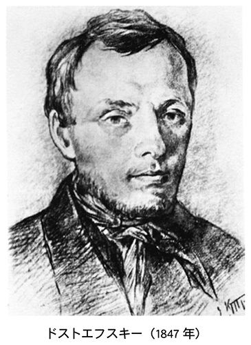
ドストエフスキーに現代の衣装をまとわせ、たとえ反面教師の姿をとることになろうと、もう一度、彼を、現代に連れもどさなくてはならない。私のなかでそんな思いが少しずつ高じてきたのは、現代社会におけるコミュニケーションのありように根本的な疑いを持っているからです。情報技術の発達によって、私たちのコミュニケーションの密度は驚くほど希薄になり、断片化しつつあるように感じます。トータルな存在として自分を認識したり、経験できる機会が少なくなりました。恋愛一つをとってもまさに水のごとし、というのが世の風潮のように思えます。他方、そうした状況を背に、私たちの身の回りには、鬱と呼ばれる病に苦しんでいる人がどれほど多いことでしょう。限りない価値の多様化と世代間の分断のなかで、ドストエフスキーが放った言葉がどれくらいのインパクトを持ち得るのか、あるいはドストエフスキーの描いた世界は、どこまで現代に通じるものを持っているのか。グローバル化のなかで見失われていく価値の源をもう一度見直したいという願いが私のなかにあります。さらに私は、まさに、グローバル化から目を背けようとするロシア的な精神性とは何か、ロシアは二十一世紀の未来に何を語ることができるのか、という問いかけも行いたいと念じています。ロシアを代表する哲学者の一人ベルジャーエフは書いています。ドストエフスキーを最後まで完全に理解することは、ロシアの秘密を解明するのに近い、ドストエフスキーの小説をとおして、ロシア精神の体系とロシアの悲劇の源を学ぶことができる、と。
最初に申しましたように、本講義の中心となるテーマは、「父殺し」です。なんと剣呑な、と眉をひそめる方もいらっしゃるかもしれませんが、私があえてこのテーマを選んだのは、ドストエフスキー文学の柱となったのが、まさに父と子の永遠の対立というテーマだからです。彼はこの対立の解決と救いを求めて模索しつづけました。父と子の対立は二つの側面において顕在化しています。一つは家庭の崩壊であり、もう一つは社会の崩壊です。自殺、幼児虐待、飲酒、売春、その他、ドストエフスキーが生きた十九世紀後半のロシアは、あたかも世界の終末を思わせるほど破局的な姿をさらしていました。とりわけ、晩年の十年は、皇帝権力に対するテロルの嵐が吹き荒れた時代です。皇帝は、国民全体にとってのいわば父親のような存在でした。こうした社会において、皇帝暗殺はまさに「父殺し」の一つの究極的な形態であったといってよいのです。そこで明らかになったのは、皇帝と父親によって虐げられた子どもたちの抵抗です。親による子殺しと子どもによる親殺しの恐るべき相克──。それがドストエフスキーの晩年でした。今日、私たちの時代を被っている無差別テロは、グローバル化という強大な遠心力にふるい落とされた人々の抵抗運動という側面があります。テロルの源はつねに絶望と孤立にあります。農奴解放後、資本主義の荒波に生きたロシアという一つの社会に、現代世界のグローバル化が重なっていきます。十九世紀後半ロシアの知識人たちも、その絶望の深さでは、現代人となんら変わるところはありませんでした。相次ぐテロルのまえで、ドストエフスキーが模索した救いとは何だったのでしょうか。
しかし、あまりにも話を急ぎすぎたようです。いま、皆さんの前に立っているのは、作家としてスタートを切ったばかりの、理想に燃える若々しいドストエフスキーです。前の頁の肖像画をご覧ください。残念ながら眉目秀麗というわけにはいかなかったようですが、しかし、燃えるような彼の目は、博愛の理想と自尊心に引き裂かれながら、世界とみずからの内面世界を見つめていました。最初に紹介するテクストは、デビュー作『貧しき人々』です。
【テクスト１】 『貧しき人々』（一八四六年）
物語は、小役人マカール・ジェーヴシキンと身寄りのない薄幸の娘ワルワーラの往復書簡の形式をとる。五十歳に手が届こうという初老のマカールにとって、日々の慰めといえば、中庭を挟んだ向かいのアパートに住むワルワーラに日記代わりの手紙を送り、惜しみない援助の手を差しのべることだった。それは、父親の娘に対する情愛のようでもあり、若く美しい娘に対する淡い恋心のようなものでもあった。しかし、所詮、雀の涙ほどの給金で糊口をしのぐ小役人には、たとえ援助といっても、おのずから限界がある。
物語の中心にワルワーラの青春を記録した手記が挟み込まれている。かつて、さる領地の支配人として仕えていたワルワーラの父は、主人の死とともに職を失い、妻子をしたがえてペテルブルグに上京するが、まもなく帰らぬ人となった。残された母親とワルワーラは、親戚筋にあたるアンナ・フョードロヴナのもとに身を寄せ、肩身の狭い毎日を送ってきた。いつしかワルワーラは、同宿の貧乏学生ポクロフスキーに思いを寄せるようになる。病気がちで、けっして愛想も良くはないが、無類の勉強家で、部屋に閉じこもり、読書に励んでいる。学生の父親は、冷たくあしらわれることを覚悟で、自慢の息子を訪ねては鬱陶しがられている。ある時、ワルワーラは、老人となけなしの金をはたき、学生の誕生日祝いにプーシキン全集をプレゼントする。だが、自分の気持ちを十分に伝えるいとまもないうちに、学生は結核で死んでしまう。やがてワルワーラの母親も内職の無理がたたり、この世を去る──。
ワルワーラを助けるべく奔走を重ねるマカールだが、滑稽なほどに純な二人のふれあいも、一人の男の登場によって荒々しく踏みにじられてしまう。ある日、ワルワーラの部屋をブイコフと名乗る男が訪ね、援助を申し出てくる。ブイコフは、女衒であるアンナ・フョードロヴナに紹介される薄幸な娘たちを次々と餌食にかけてきた。その彼が、かねてから目をつけてきたワルワーラを紹介するように言い含めてきたのだ。ワルワーラはブイコフの馴れなれしい態度におびえ、引っ越しの費用を融通してくれるようマカールに懇願するが、貧乏役人のマカールとしてはなすすべもない。マカールは、思いがけないミスが原因で上司の同情を買い、百ルーブルを手にするが、時すでに遅く、ワルワーラはブイコフのプロポーズを受け入れてしまう。結婚がいざ決まると、マカールはそれこそ自分を殺し、あれやこれや彼女のために忙しく立ち働くが、いよいよ出発の日、彼は途方に暮れたまま、差し出すあてのない手紙を書きつづるのだった。
【講義１の２】 楽園追放
「ぼくほど深くない」──リアリズムを超えて
「われわれはみな、ゴーゴリの『外套』から出てきたのだ」──、作家の道を志したドストエフスキーにとって、最大のライバルとはニコライ・ゴーゴリ（一八〇九～一八五二）でした。国民詩人アレクサンドル・プーシキン（一七九九～一八三七）亡き後、ロシアの文壇に君臨した自然派の作家です。しかしゴーゴリはそうした「自然派」と呼ばれるリアリストとしての側面と同時に、グロテスクな幻想性とアイロニーの才にめぐまれ、『鼻』『外套』といった短編小説のほか、戯曲では『検察官』、そして長編では『死せる魂』を残しています。『貧しき人々』を書くにあたってドストエフスキーがまず念頭に置いていたのは、ゴーゴリの『外套』のパロディ化ということです。十二歳しか年の違わないゴーゴリの圧倒的な人気に対し、どう自分を対置するか、諺を少しもじれば、廂を借りて母屋を取る戦略です。その一つの結実が、ゴーゴリ時代にはすでに時代遅れのものとみられていた書簡体小説というジャンルの選択にありました。彼の戦略は、もはや戦略たりえないものだったかもしれませんが、あえて書簡体を選ぶことによって、あるいはそうしたジャンルでしか最初の小説を書き得ないと認識することによって、歴史的な発見へと向かうことになるのです。複数の声、複数の意識が対立しあうドラマティックな構造としての小説の発見です。
ゴーゴリ文学の特徴は何よりも文体面での熱烈な調子にありました。歯止めがきかなくなったような、叙情的な告白。疑問や感嘆に彩られた美文調。起伏に富んだ律動的な文体。しかし、ゴーゴリとの類似は、たんに文体面だけに現れたわけではありません。固定観念にとりつかれ、病的にいらだつ主人公たち、社会の不公平に対する強いプロテストといった部分にも大きな共通点があります。ドストエフスキーは『貧しき人々』を書くにあたって、まずこのゴーゴリの、とりわけ『外套』から重要なヒントを得ました。主人公のマカール・ジェーヴシキンです。マカールは、『外套』の主人公アカーキー・アカーキエヴィチと同様、まったくうだつの上がらぬ貧乏役人ですが、どこか余裕が見てとれるようです。さんざん苦労して買った外套を一夜にして追いはぎに奪われる『外套』の主人公とは異なり、どこか覚めた部分があるのです。たとえば『外套』に描かれるシーンがあまりに残酷なのに腹をたて、思わずこんな感想を披瀝しています。
「何のためにこんなものを書くのでしょうか？ （......）いちばんいいのは、この哀れな男を死なせたりせず、外套がみつかり、将軍も彼の日ごろの行いを詳しく知り、自分の役所に配属させ、身分を引き上げて、それなりの俸給を与えてやるようにすればよいのです」
ジェーヴシキンの憤懣は留まるところを知りません。
「善人が荒野に置き去りにされているというのに、それとは反対の人々のところには、向こうから幸福が飛び込んでくるというのは、いったいどうしてでしょう」
小説と現実を混同した、なんとも、面はゆくなるような、素朴なヒューマニズムです。ゴーゴリの登場人物なら、けっしてこんなふうなやわな台詞は吐かないでしょう。そもそも、ゴーゴリの才能とは、登場人物を一種のモノとして、鋭く切り離すことのできる客観性にありました。グロテスクな笑いはそこに由来します。それに比べると、ドストエフスキーはセンチメンタルな感情もあらわに、貧しい人々への同情をさらけ出してしまいます。ロシアの思想家ローザノフは書いています。ゴーゴリが「魂を扼殺した」とするなら、ドストエフスキーは「魂を吹き込んだ」のだと。しかし、表向きの素朴さにだまされてはいけません。この作品には、ゴーゴリの目が届かない独自の世界が隠されていました。ドストエフスキーは自信ありげに書いています。「ゴーゴリはいきなり全体をとらえようとします。そのためにぼくほど深くないのです」
対話、二からの誕生
ドストエフスキーのこの不遜ともいえる自信ははたしてどこから来るのでしょうか。結論から先にいうなら、当時としては最新のイズムであった「リアリズム」の手法に対して、後にミハイル・バフチンが「ポリフォニー（多声性）」という概念で明らかにしてみせた手法上の啓示にあったと私は見ています。「全体をとらえる」とは、作家のゆるがない視点を、叙事的な視点のありかを物語っています。それに対して、ドストエフスキーの視点は限りない流動性に満ち、相対的な、複数性の原理が持ち込まれています。ドストエフスキーの発見は、先ほども述べた書簡体小説というジャンルにありました。すでにジャンルとしては廃れ、命脈も尽きたと見られていたジャンルです。そしてこのジャンルの甦りとともに、作家ドストエフスキーが誕生するのです。
まずは対話、すなわち二からの誕生です。しかしバフチンは、すでにこの二に、ドストエフスキーにおける文学の特質の一つである「ポリフォニー（多声性）」の萌芽を見、これを「コペルニクス的転回」とまで呼んでいます。
「ドストエフスキーは、作者および語り手という存在を、彼らの視点の総体、および彼らが主人公に与える描写、性格づけ、定義といったものすべてとともに、主人公自体の視野の中に導入し、そのことによって主人公の完結した現実をまるごと、彼の自意識の素材としてしまったのだ、と。ドストエフスキーがマカール・ジェーヴシキンにゴーゴリの『外套』を読ませ、それを彼自身を描いた小説であり、彼に対する《誹謗文書》だと感じさせたのには、それなりにわけがある。つまり彼はそのことによって文字どおり作者を主人公の視野に入れたのである（13）」
そしてバフチンは、ゴーゴリの「モノローグ的な立場」では明らかにできなかった「根源的に新しい立場」を、あるいはドストエフスキー自身が、「ぼくほど深くない」と断言できたその自信の背景にあるものを次のように説明するのです。
「つまり生きた人間を、当事者抜きで総括してしまうような認識の、もの言わぬ客体に帰してしまうことは許されない。人間の内には、本人だけが自由な自意識と言葉という行為をもって解明することのできる何ものかが存在しており、それは人間の外側だけを見た本人不在の定義ではけっして捉えきれないものなのである。『貧しき人々』において初めてドストエフスキーは、いまだ不完全で曖昧な形ながら、人間の内部にあってけっして完結しない何ものかを示そうとした。それはゴーゴリその他の『貧しき官吏たちの物語』の作者のモノローグ的な立場からは示しえないものだった（14）」
少々、先走った言い方をさせていただくなら、『貧しき人々』で甦ったジャンルの精神は、産みの親である書簡体小説そのものを乗り越え、さらなる変容を模索することになるのです。
しかし、ポリフォニー的な構造をもつドストエフスキーの新しさを見抜いたバフチンにも問題がないわけではありません。たとえばそれは、ゴーゴリの世界とドストエフスキーの初期の世界を「内容的に同一」であると見ている点です。しかし、内容と方法はけっして切り離して考えることのできないものですから、客観的かつ第三者的な記述と書簡体小説では、根本的に内容が異っていて当然なのです。モノローグとポリフォニーの世界の差は、たんに主人公と作者の関係だけに帰結できるものではありません。両者の間に横たわる断絶は、一目見ただけではわからないほど恐ろしく深いものとなるのです。
無垢の共同体
さて、『貧しき人々』の物語を少し離れた地点から眺めてみますと、意外に複雑な成りたちを持っていることが分かります。ツェイトリンという研究者によると、この時期、「貧しい役人」をテーマにした小説は、じつに百五十にも上ったといいますから、テーマそれ自体、さして目新しいものではありませんでした（15）。しかし、この小説は、感涙に咽んだ批評家ベリンスキーが考えたような、お涙頂戴もの、センチな博愛主義の物語ではなかったと私は思います。たしかに、読者から涙を振りしぼる術を、若いながらもドストエフスキーは心得ていました。しかし、彼の作家としての本能は、さらにその奥を見届けていたのです。
私がいまこの小説についてわからないと感じている二つの疑問を挙げてみます。
一、この物語は、なぜ、初老の小役人と十代の若い娘という不釣合いなカップルの物語として設定されたのか。
二、そもそもこのマカールの存在にどのような意味があるのか。
貧しい中年男と身寄りのない若い娘のほほえましい愛情、そこに強引に押し入ってくる金持ちの有力者──。ネヴァ川のほとりで物語のあらましを一瞬のうちにかいま見たドストエフスキーは「ぼくの心は深く引き裂かれる思いだった」と記しました。小説のプロットは骨太といえるほど明快ですが、作品全体の雰囲気はどこか謎めいています。しかし、処女作にして、こうした男女の関係を設定したドストエフスキーの意図がよく理解できません。同時代に流行した小説のもじり、ジャンルの反復にすぎなかったのでしょうか。おそらくそうではありません。この奇妙な設定の意味を明らかにすることが、ドストエフスキーの謎を解く最初の一歩になると私は考えています。
父と娘ほども年齢差のある二人の愛は、聖家族の理想形をなぞりながらも、なおかつ、ドストエフスキーがみずからの「告白」を行うために意図的にゆがめた男女の愛の姿なのだと私は考えるのです。小説は混沌のなかから生まれました。「ネヴァ川の幻影」と名づけられたものはけっして『貧しき人々』の啓示だけではなく、先にも触れた『群盗』に登場するアマーリヤの面影を宿した哀れな女性を主人公とするまた別の小説の構想も「幻影」の一つだったのです。そしてその混沌のなかから浮かび上がってきた物語とは、たがいに惹かれあう男女が、ある外部の力によって無理やり引き裂かれる物語です。物語それ自体として、取り立てて珍しいものではありません。しかし、彼はこの小説に、ある絶対的なものの弱さを、脆さを、あるいは現実の崩壊を描きこみたかったのだと思います。破れ、引き裂かれるものは、純粋に精神的な共同体のようなものでなくてはなりません。そこには一筋の汚れがあっても許されません。少なくとも肉欲と生理の汚れから絶対に自由な人々同士の、無垢なる者同士の共同体でなくてはならないのです。ワルワーラが一人の「生贄」として、いまだ穢れない肉体を持っているなら、当然、その相手も、穢れない精神と肉体の持ち主でなくてはなりません。再度、繰り返すなら、マカールに、ジェーヴシキン（この名の語源「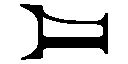」には「処女」の意味があります）が与えられているのは、たんに彼の女性性を強調したいがためばかりではなく、マカール自身が、むしろ、堕罪を知る前のアダムの、原初の、清らかな肉体の持ち主だからなのです。であるなら、ドストエフスキーがそのようなカップルを想定したということは、彼がそこに押し寄せてくる父親的な不浄の力、破壊的な力を前提としていたとしか考えられません。若いドストエフスキーには、性を徹底して罪悪視する傾向がありました。ですから、もっとも悲劇的なかたちで物語を作るには、まさに性の、大人の汚れに染まっていない二人の存在、ある意味で、「不可能な」カップルの存在が必要だったのです。
しかし、ドストエフスキーにおいてさらに悲劇的なのは、この「引き裂かれる」二人の物語が、憎しみも対立も生むことなく、小さなカタルシスとともにフィナーレを迎える点にあります。ドストエフスキーにおける父親憎悪は、あるいは父殺しのテーマは、支配者と被支配者の和解、悪しき父親との和解という現実の確認から出発するという、この奇妙なパラドクス──。
二人だけの「愛」に閉じこもろうとする主人公たちを、外側の力が一挙にこじ開けていこうとします。破局は、ブイコフがワルワーラを来訪する時期、八月四日から十一日にかけて訪れます。引越し資金を算段してほしいとワルワーラは手紙に書きます。金策に失敗し絶望にくれるマカール、途方にくれた彼は、不注意にも、ワルワーラに宛てた書きかけの手紙を落とし、人々の前で高々と読みあげられてしまいます。マカールは絶望にくれて叫びます。「私たちは二人とも破滅しました。二人一緒に、もう取返しのつかないまでに破滅したんです」。マカールはさらに、ウオッカを食らって失態を重ねます。ワルワーラは責めるような調子で書いています。
「あなたのためにどんなにつらい目にあっているのか、まだご存知ないのですね。......あいつは酔っぱらいとくっついているだなんて、いきなり声に出していうのですよ」
この事件をきっかけに二人の「愛」は、大きく下り坂へと向かうことになります。名状しがたい鬱の世界に取り込まれようとするワルワーラ。実存的とも呼ぶことのできる時間が彼女に訪れます。この時から、この物語は博愛の物語ではなくなるのです。つまり、何によっても救うことのできない孤立というモチーフが立ち現れるのです。
「何時間も何時間も、周りのいっさいがっさいに無感覚になって、今というものをすっかり忘れてしまうことがあるのです」
ドストエフスキーが自分の経験をワルワーラに投影しているのがわかります。彼女の「変貌」がこの鬱の経験によって前後に仕切られていきます。ワルワーラとマカールの「われ」と「汝」の関係性が、スキャンダラスなまなざしにさらされる。
ともあれ、勘のいい読者なら、この駆け出しの作家が何かを隠そうとしていることを感じるかもしれません。私が気になるのは、ワルワーラがなぜブイコフへの「生贄」として選び出されるのか、という問題です。スキャンダラスな影がこの物語の表面を蝕んでいきます。
「その男は、無理やりわたしの手をとり、頬を軽くつつきながら、きみはすごくきれいだ、頬っぺたにえくぼがあるのがとても気にいったなどといって......」
その男とはブイコフです。しかし、金満家の女たらしが結婚に踏み切るほどの娘であるなら、ワルワーラはそれこそ「玉の輿」にみあう十分な魅力の持ち主であるにちがいありません。そんなワルワーラを、わけもなく愛しているマカールのうちに、ドストエフスキー自身の隠された欲望がにぶく反映しているような気がするのです。
では、作家の隠された欲望とは何なのでしょうか。有力者ブイコフの名前は、「牡牛」（）を語源にもっています。獰猛な牛にたとえられたこの男は、ドストエフスキーの小説における最初の悪の体現者といってもよい人物であり、この男の、マッチョな権力と、その権力が小説全体に果たしている役割を理解しなければ、この小説のもつ恐ろしさを読みとったことにはなりません。
ワーレンカの運命
ところで、「ブイコフとはワーレンカの宿命である」と書いたのは批評家シクロフスキーでした（16）。田舎から出てきて、アンナ・フョードロヴナの家に住み着いたとき、彼女はすでにブイコフが仕掛けた罠に落ちたといえるのです。その「宿命」的な悲劇性が作家の心をはげしく揺さぶり、煽りたてていきます。都会の片隅に生きる貧しい人々は、そんな絶大な権力をもつブイコフを善行者として受けとめ、怒りに声をふるわせることもありません。他方、騎士＝救済者の役割を担わされたジェーヴシキンは、最後まで無力な姿をさらしつづけます。なぜなのでしょうか。それはジェーヴシキンとは、ブイコフの尽きることのない欲望の模倣者だからなのです。読みすぎを指摘したい向きもおありでしょう。しかし、弱冠二十五歳ながら、ドストエフスキーの本能は何かに気づいていたと思います。マカールは、永遠の羨望者であり、ワルワーラが結局はブイコフの権力に組みしかれるのと同じように、彼もまた権力に喜んで膝を折ることになります。敵対するものを許し、許すどころか、抱擁さえしかねない、ある曖昧さ──。ここに悲劇の根が、と同時にドストエフスキーの絶望があったとみてよいのです。では、ジェーヴシキンの模倣はどこから起こるのでしょうか。それは自己犠牲という行為にドストエフスキーが見ていた根本的な意味と深いかかわりがあります。悪と権力への屈服──、彼は、「博愛主義」という一方向のまなざしによって主人公たちが舐める屈辱の痛みに肩入れすることはありません。
『貧しき人々』には、ドストエフスキーが夢見ていた本来あるべき理想化された父親の存在はありません。庇護者としてふるまいつづけるマカールにわずかながらもそれは体現されています。ですからマカールとワルワーラの愛は本質において、父と娘の情愛なのです。そこには、のちに「偶然の」と名づけられる、ロシアに宿命的な家庭愛のかたちがあります。しかし、ドストエフスキーの脳裏では、この良き父に、悪しき父の像がつねに二重写しにされていました。ドストエフスキーは父親に、二つの分裂した姿を見ていました。相反し分裂するその姿が小説のなかに露出していきます。ドストエフスキーはおそらく理想的な父親像をマカールに託しながら、弱者たる自分自身をそこに重ね合わせていました。他方、悪しき父親を体現するのが、じつはワルワーラを苦境から救い上げるブイコフです。そう、物語全編に重くのしかかり、博愛主義の見本のような物語全体を押しつぶしかねない運命と悪のシンボル、ドストエフスキーの小説のもつ相対主義のシンボル──。ところが理想者たるドストエフスキーは、支配者であり、抑圧者である悪しき父ブイコフに真っ向から勝負を挑むことはありません。ブイコフに破滅の道を辿らせることもできません。コックスという研究者は次のように述べています。「暴君と犠牲者は一種独特の象徴的な関係をかたち作っている。それぞれが相手を必要としているのだ（17）」。では、なぜ、闘わないのでしょうか。闘えないのです。ドストエフスキーの主人公たちは最後まで、この種の闘いを回避していきます。この受身の姿勢はどこから来るかは謎ですが、問題なのは、感傷主義と紙一重のところにあるこのペシミズムです。
しかし現実にドストエフスキーはもっと恐ろしい真実に気づいています。『貧しき人々』を書いたドストエフスキーは、圧倒的な支配者の前でどうしようもない無力感にかられながら、それでもなお、まだこちら側に立っています。にもかかわらず、彼は、いくつものディテールを挟みながら、この物語を、より立体的な奥行きあるものに仕立てようと企てていました。恐ろしい真実とは、善と悪の相対性という考え方です。彼が恐れるのは、強者と弱者の抱擁です。それによって、ジェーヴシキンの自己犠牲は、美しい理想に留まることなく、一つの複雑な契機をうちにはらむことになるのです。それはすなわち、使嗾する神としての役割です。彼はなるほどゴーゴリの『外套』の主人公同様に、弱く無力な存在です。しかし、ワルワーラを嫁に送り出す彼の内面にきざしているのは、未来のドストエフスキーが執拗に追究する使嗾なのです。彼は、みずからの手で幸福を実現することを望まず、むしろ悪と欲望の側へとワルワーラを使嗾する存在でもあるのです。そうすることによって、自己犠牲の苦しみは、甘さへと転化できるのです。ここにはドストエフスキーの独特の心理的なメカニズムが働いています。もう一度言います。使嗾する神。後のスタヴローギンやイワン・カラマーゾフへと連なるこの役どころを、ジェーヴシキンからしてすでに立派に演じ始めているのです。
バフチンが指摘するように、彼の小説世界は、処女作からすでに多声的な成り立ちを持っていました。多声的であるということは、他者の意識の中に入り込む能力をも意味しています。彼が他者の意識に入り込むとき、小説の外部は一挙に謎めいたものに変わります。同時代の素朴な読者の目にはとうてい及ばない謎の世界。ドストエフスキーが向かいあっていたのは、物語ではなく、むしろ精神の謎であり、闇の部分でした。『貧しき人々』とは、二つのまなざしが交錯する場です。すなわち強者と弱者の二つのまなざしであり、その交差点にワルワーラの運命はあるのです。ドストエフスキーが、持たざる者、貧しい人々の悲哀を、ジェーヴシキンやワルワーラとともに分かちあおうとしていたことは疑いないことです。しかし、その目は、支配者が冷笑とともに見るもう一つの現実をも見通し、その悪を背後からひそかに抱き寄せてもいたのです。
第二講 引き裂かれた夢想家
【事件と証言２】 ファイル「ペトラシェフスキー事件」（一八四九年）
ユートピア社会主義から現実の革命へ
一八四九年四月一日、革命家ミハイル・ペトラシェフスキーの家で開かれていた秘密集会（ペトラシェフスキーの会）で、出版言論の自由と農奴制の廃止が宣言された。しかし、それから三週間後の四月二十三日未明、ドストエフスキーを含む会のメンバー三十四名は、皇帝直属の秘密警察（第三課）による突然の家宅捜査によって一網打尽となり、ネヴァ川のほとりにあるペトロパーヴロフスク要塞に収監された。
収監からおよそ半年後の十一月十六日、ペトラシェフスキーの会のメンバーに対する裁判は結審する。軍法会議はドストエフスキーに有罪の判決を下し、ゴーゴリに宛てたベリンスキーの書簡を朗読したこと、秘密印刷所の設置に協力したことをその罪状に挙げた。
無秩序と貧困にむしばまれた社会を根本から作り変え、理性と幸福にかがやく国をこの地上に実現させるために、すべての人間が一つに力をあわせなくてはならない。劇場、ダンスホールその他すべての娯楽施設から講義室、読書室をそなえた巨大な共産制共同住宅を築き、労働を新たに組織化する。人々はたがいに共感し、エネルギーを発しあうことで、労働にともなう苦痛は楽しみにとって代わるだろう。社会機構の新たな変容に伴い、地球ばかりか、宇宙全体のシステムや条件も改良され、全体的な幸福が導きだされるだろう......。
一八四六年の春、ドストエフスキーは、ネフスキー大通りで、空想的社会主義者シャルル・フーリエに心酔しその喧伝につとめてまわるペトラシェフスキーに声をかけられ、翌年の春から、彼の主催する「金曜の会」に顔を出すようになった。『貧しき人々』で一躍、文壇の寵児として知れ渡った彼が、そうした反体制的な会合に足を踏み入れるようになった背景には、彼の内心での大きな変化があった。
当時のロシア社会は、凶作、コレラの流行、火災の多発といった事態とあいまって、領主たちが農民に殺される事件が相次いで発生していた。ペトラシェフスキーの周辺に志を一つにする仲間たちが集いはじめたのは、一八四四年の前後とみられるが、その後、会の内部にいくつかの分派が生まれ、時とともに先鋭化していった。ロシアの研究者ベリチコフによると、ペトラシェフスキーの会に関わったメンバーはおしなべて、自分たちの境遇に不満をもつ「農民大衆のかもす気運を感じ」ていたという。会のメンバーは熱っぽい調子で議論していた。
「理想と願望が一般民衆の間に広まり根を張るようにしなければならない。全民衆が一つのことを願うようになれば、それは軍隊も止めることはできない」
「すべては民衆次第だ。民衆抜きではわれわれは動けない」
ドストエフスキー研究者の中村健之介は、これまでのドストエフスキー研究では、シベリア流刑が作家にもたらした体験の深さを重んじるあまり、ペトラシェフスキー事件が作家にとって鮮烈かつ深刻な経験の場であり、彼の人間観察にとってはオムスク監獄に劣らない「学校」であった事実が顧みられずにきた、と指摘している（１）。中村のこの主張を、「父殺し」という視点から補強し、ペトラシェフスキーの会に加わることが、作家にとっていかに強い覚悟を強いるものであったかを、あるいは、どれほど追いつめられた末での決断であったかを明らかにすることが重要である。さらにはそこでの言動が、帝政ロシアという社会的制度のなかで、どれほどに大きな逸脱として認識されていたかをも。それらの問いは、翻って、いったんは下された極刑という厳しい裁きに対し、彼がどの程度にそれを不条理と感じたかという問いの答えにもつながってくるはずである。
ペトラシェフスキーの会ははじめ、農奴制、裁判制度、出版事情など一連の社会問題、あるいはそれと関連して、ユートピア社会主義、無神論、検閲、家族制度などを自由に論じあう一種の勉強会だった。しかし、フランスでの二月革命によって時代は風雲急を告げ、そうした気分の切迫に押しやられるように、会は分裂し、魅力的な風貌をたたえたカリスマ的人物スペシネフの登場とともに、にわかに政治結社的な色合いを強めていった。それまでユートピア的社会主義の理想にのっとり、社会の自由化について論じあってきたメンバーたちが、堰を切ったように、その現実的な可能性をめぐって議論するようになったのである。議論の火蓋を切ったのは、ドゥーロフであり、彼は「悪の根源を指し示すことが、すなわち法と皇帝の悪を指摘することが、すべての人の義務である」と断言し、皇帝暗殺を仲間たちに示唆した。急進化しはじめた会の内部で、ドストエフスキーの「激情的な性質」や「アジテーターの才能」に注意が向けられるようになった。ドストエフスキーは、個人的な共感もあってスペシネフのグループに接近し、徐々に急進化を深めていく。次に引用するのは、ドストエフスキーの罪状にも挙げられたベリンスキーの手紙の一部である。
「現在のロシアで最も焦眉の国家的課題は農奴制と体刑の廃止であり、せめて現在すでにある法律の可能なかぎりの厳正な実施です。そのことは政府自身も感じています（政府は地主が自分の農民にどのようなことをしているか、また、毎年、農民が何人の地主を切り殺しているかを知っているのですから）。（......）教会とは位階制にほかならず、したがって、不平等の擁護者、権力への追従者、人間同士の博愛の敵、迫害者でした。今日も依然としてその通りであります」
ドストエフスキーが会で朗読したこの手紙は、ロシア正教会に対する徹底した批判につらぬかれ、神に仕える敬虔な民衆という通念をしりぞけ、将来における政府転覆をも匂わせるものだった。ペトラシェフスキーの会を内偵したスパイは、報告書にその内容をくわしく説明し、それに対するメンバーの反応を次のように記している。
「四月十五日。（......）ベリンスキーはロシアとロシアの民衆の現状を論じている。（......）正教はあらゆる宗教のなかで最も卑劣な宗教であり、常に権力の武器となり、世俗の権力に服従してきた。（......）ロシアの民衆は宗教的感情など持っていないし、神秘主義に走るほど愚かではない。（......）この手紙は、一同を有頂天にした。（......）要するに、全員が電気ショックを受けたかのようだった」
裁判のなかでドストエフスキーは、ベリンスキーの「誇張した考え」には同意していない、と述べているが、しかし、現実に彼が、ベリンスキーの「最小限綱領」や、ゴーゴリにみられる民衆の理想化に共感を覚えていたことは疑いえない事実である。そして、ペトラシェフスキーの会に参加した理由を述べるくだりでは、いかにもロシアの作家らしい、熱い真情を吐露している。
「文学がなくして社会は存在できません、それが地に落ちたと考えたのであります。（......）フーリエの空想的社会主義は、平和に関する体系であり、（......）それが人を惹きつけるのは、（......）人類愛を覚醒させるためであります」
死刑判決、または神の不在
十一月十九日に下された軍法会議委員会の判決文には次のように書かれていた。
「宗教と主権に悖る文学者ベリンスキーの奸計をめぐらす作品を、無断で流布せしめたかどにより、（......）官位並びに財産私有権を剥奪し、銃殺刑を科す」
十二月二十二日早朝、セミョーノフ練兵場に集められた二十一名の被告に対して、最高裁判所による死刑の判決が読み上げられた。ドストエフスキーは、ペトラシェフスキー以下の会のメンバー三名が、練兵場に打ち込まれた灰色の杭に縛りつけられ、銃眼にさらされるさまを目撃した。ところが、「撃て」の号令が下される直前、突如太鼓の音が鳴りひびき、皇帝による特赦文が読み上げられた。じつは、これはまったくの茶番であり、最終審は被告二十三名中二十一名に極刑をもって臨んだものの、受刑者の若さや社会的影響の少なさを理由に、皇帝に酌量を請願し、皇帝もまた慣例にしたがって「要塞懲役四年、のち兵役服務」への減刑を認めていたのである。
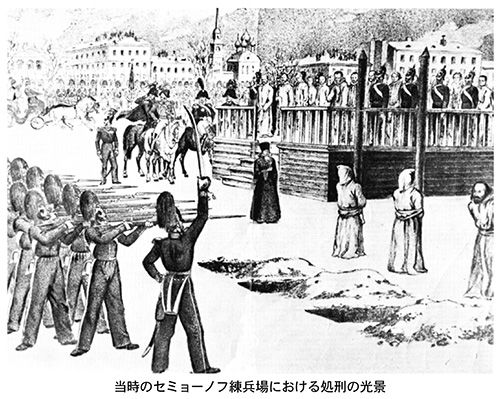
すでに何度も引用されてよく知られたエピソードだが、ここでもう一度、『白痴』の主人公ムイシキンがエパンチン将軍家の娘たちに語る内容を引用する。
「男はむさぼるように何度も十字架にキスをするのです。万が一のために忘れずに何かをとっておこうと慌てるみたいに、十字架にキスをするのですが、その瞬間、宗教的なものなんてほとんど意識していないのです。......それに、考えてもごらんなさい、最後の四分の一秒になってもそれは同じなんです。自分の頭を断頭台に乗せて待ちかまえている......。しかも、ちゃんと弁えている。すると、突然頭のうえで鉄の刃がすべり落ちてくる音が聞こえるんです。それはどうしたって聞こえますよ。もしぼくがそこに横になっていたら、わざと耳を澄まして、聞くでしょうね」
おそらくはこれこそ、ドストエフスキーがセミョーノフ練兵場で実際に向かいあった経験だった。むろん、彼は現実の「最後の四分の一秒」を知っているわけではなかった。ただ、一つの暴力のように降りかかってくる死を前にした死刑囚の心境は、すでにたんなる恐怖を超えていた。この恐怖を超えた地点で彼が見出したものとは、一種の四次元的ともいうべきリアリズムである。ムイシキンがこの図柄を、驚くほど即物的に「十字架と首」と名づけたのもそれなりの理由がある。
ドストエフスキーにおけるリアリズムとは何か。一口にいうなら、「時間とは存在と非存在の関係である」というドストエフスキーにおけるすべての価値観の原点にあるものである。まず、神の不在の感覚が訪れる。十字架にはいっさい救いがないということ、ガラスのように透きとおる意識が証明する神の不在──。セミョーノフ練兵場での経験は、ある悲劇的な予感を伴わずにはおかなかった。ドストエフスキーは、ギロチン台に立たされた男の、限りない意識の透明に身をおき、同時にまったく相反しあう意識のドラマに立ち会わされる。だが、解放の直後に訪れた感覚、それは「賜物」であり、「幸い」であり、恩寵としての生のなまなましい自覚をとおしての神の存在の感覚だったといえる。
一、神の不在の感覚（孤立） 二、神の存在の感覚（解放）
死刑判決──。その内容がいかに反体制的かつ不穏当だったとはいえ、たかが三通の往復書簡を朗読しただけで死刑判決というのは、常識的にあまりに過酷すぎる。ドストエフスキーのうちに、「罪と罰」の均衡、量刑の妥当性をめぐって根源的な疑いが生じたのはおそらくこの時期であった。特赦へのひそかな期待もあったかもしれない。しかし他方、死刑判決という事実は、それを正当とみる彼の内的なロジックとも深くこだましあっていた。なぜなら、ベリンスキーへの傾倒は、政府転覆、皇帝暗殺への願望と通じており、彼の意識に深い罪を自覚させていたはずだからである。原罪とはそのようなものであり、そこにも、罪と罰の均衡をめぐって、一筋縄では解けない不条理のモメントが介在していた。
セミョーノフ練兵場とは、ドストエフスキーにとってゴルゴタの丘だった。
死刑の直前、ドストエフスキーは横に立っているメンバーにこう語ったという。
「私たちはキリストと一緒になるのだ」
思えば、キリストとは、時間の「存在と非存在」の境界における、唯一の現実、唯一のリアリティであったのかもしれない。『白痴』の主人公ムイシキンにギロチンのエピソードを語らせ、「もし私だったら」とまで告白させたのも、まさに、その遠い反映だった。そしていったんはゴルゴタに立ったドストエフスキーは、数分の後に復活を遂げた。解放された彼が真っ先に書いたのは、まさにそのことであり、終生、変わることなく彼を訪れつづけるキリスト信仰とでもよぶべき感情は、つねに、ゴルゴタの受難者との自己同一化を意味していたのである。そしてこの時から、意識する、しないを超えて、磔にされたキリストの自己犠牲を、人類のために苦しむというその喜びを、彼は、つねに、神の不在という怜悧な認識と抱き合わせで検証していくのである。
【伝記２】 栄光と転落（一八四六～五〇）
一八四五年、ペテルブルグ
『貧しき人々』で一躍文壇の寵児となったドストエフスキーは、「栄光に酔っていた」。その頂点で、彼はとあるサロンの女主人に出会い、たちまち恋のとりこになった。兄ミハイル宛ての手紙に書いている。
「昨日、ぼくははじめてパナーエフの家に行き、どうやら彼の奥さんに惚れてしまったようです。彼女は頭がよくて、きれいで、おまけに親切で、信じられないほど率直なのです」
だが、ペテルブルグ中の作家、詩人、芸術家たちが出入りするパナーエフ家での彼の評判はすこぶる芳しくなかった。サロンでの驕りたかぶった言動はともかく、フェートやネクラーソフといった詩人たちの熱いまなざしを尻目に、「申し分のない美人」であるホステス役パナーエフ夫人への柄にもないのぼせかたが周囲の顰蹙を買ったのである。過剰なまでに他人の目を気にするこの駆け出しの作家は、人並み外れた興奮癖の持ち主だったらしく、当のパナーエフ夫人もすぐにそれに気づき、ドストエフスキーを「恐ろしく神経質で、感受性の強い青年」と書き、「自分を抑えることができず、作家としての自尊心をあまりにあけすけに押し出し、作家としてのその才能を過剰に評価していた」と回想している。
同時代人の多くが、この時期のドストエフスキーの驚くべき変身ぶりを異口同音に書いている。極度にシャイで無口だった男が、いつのまにか横柄な口をきくようになった、というのである。その尊大な態度は、兄に宛てた手紙からも間接的にうかがえる。
「とにかく兄さん、ぼくにはこれ以上ないくらいの輝かしい未来があるのです」
「第一位は、依然としてこのぼくです」
ドストエフスキーの興奮ぶりは、しかし、その背後にあった凄まじい金銭の浪費とも少なからず絡んでいた。『貧しき人々』はわずか百五十ルーブル銀で買い取られたが、彼の才能に注目した編集者は、やがて原稿代の前貸しという誘惑で彼をがんじがらめに縛りあげていった。
幸運は長続きしなかった。その後、発表された『分身』（一八四六年）、『プロハルチン氏』（同）、『家主の妻』（同）などの一連の中篇作品が、文壇のあらゆる方面から集中砲火に近い批判を浴びるにいたったのだ。まずドストエフスキーにとっては救いの神であり、恩人でもある批評家ベリンスキーが次第に彼に冷たい態度をとるようになった。ゴーゴリの衣鉢をつぐ「自然派」的なリアリズムを、ベリンスキーの敵対者たちは叩いた（２）。一方、社会正義のイデオロギーとリアリズムの一念に凝り固まったベリンスキーの同調者たちには結局のところ、自閉的で、観念的で、傲慢で、劣等感に苦しむ、現代にいう引きこもりの主人公たちのもつ存在の意味が理解できなかった。それゆえドストエフスキーのもつ「ロマン主義」的な要素を危険視したのも無理はなかった。もっとも、若い作家に対する周囲の冷たさは、ありあまるその才能に怖れをなしたライバルたちや、彼の才能をなんとか自分たちの陣営に引き込みたいジャーナリストたちのひそかな策略でもあった。このような状況のなかでドストエフスキーの金遣いは病的な色を帯び、わずか半年で四千ルーブルをも使い果たすほどであったというから、すでにこの時期に彼は、後年にも負けない破滅的な生活を生きていたことになる。
「いつか借金から抜け出します。日雇いで働くのは、不幸なことです。才能も若さも希望も、すべて台無しになります」
こうして、ドストエフスキーに対する不評は、文壇とジャーナリズム内部の複雑な駆け引きが微妙にからんだ結果であったが、当の書き手は、小説の主人公たちを地で演じるかのように、いったん失意に陥るとどこまでも落ち込む、「叩きがい」のあるタイプだったらしい。前出のベームは、この時期の彼の精神状態がいちじるしく悪化した原因をめぐって、一つに文学的栄光の崩壊を、一つに前のパナーエフ夫人に対する熱中を挙げている。「ぼくは実に陋劣な、嫌悪を引き起こす性質の人間です」「滑稽な唾棄すべき男です」「ぼくはこれほどつらい時を経験したことは一度としてありませんでした。（......）おまけに病気です。これはいったい何なのでしょうか？」。彼の絶望は留まるところを知らず、外国に行きたい、イタリアに行きたいという思いが募ってくる。彼は書いている。「遊びに行くのではなく、治療に行くのです」。「ペテルブルグはぼくとって地獄です。ほんとうにつらい、ここで生活するのがそれほどにつらいのです」。ドストエフスキーは自分のそうした興奮症を自分なりにも病的と感じていたらしく、兄のミハイルに宛てた手紙でも「ぼくには恐ろしい欠点があります。際限のない自尊心と功名心です」と書いている。そしてパナーエワに対する恋について、一八四六年二月の書簡でこう告白している「半端でなくパナーエワに恋をしていましたが、今はそれも消えようとしますが、しかしまだ分かりません。体調をひどくやられています。神経を病んでいて、瘧か、神経性の発作ではないかと思います」......。
ペトラシェフスキーの会に加わる
パナーエフ夫人のサロンを追われたドストエフスキーは、その後も、夢想家を主人公とする幻想的な作品や、弱者の心にひそむ高潔な輝きを悲喜こもごもに描く役人小説（『ポルズンコフ』と『弱い心』）、寝取られ亭主をテーマにした道化芝居風の小説（『人妻』、そしてこれを改作した『人妻とベッドの下の亭主』）を書きつづけていた。それらの小説では、幻想的なペテルブルグを舞台に、たがいにめまぐるしく反転しあう夢想家と道化たちの、一種の永久運動をおもわせる自意識の世界が描きとられている。さらにヨーロッパ中に革命の嵐が吹き荒れる四八年の終わりには『白夜』が、しばらくして、彼の最初の長編小説である『ネートチカ・ネズワーノワ』の連載が開始される。
だが、ドストエフスキーにとって最初の長編となるはずだったこの『ネートチカ・ネズワーノワ』は、突然の逮捕によって中断を余儀なくされる。いわゆるペトラシェフスキー事件である。四八年の秋から、ドストエフスキーは足しげくペトラシェフスキーの会に出入りするようになった。この会への接近は、フーリエ、サン・シモンらが唱える空想的社会主義に対する共感から起こったが、彼の心に脈うっていたのは、自分を冷遇し、敵対しはじめたベリンスキーに対するライバル心だった。当時、ベリンスキーは、なかば自嘲気味に「なんともひどい阿呆（＝ドストエフスキー）の将来に望みをかけた最初の批評家」と書くほどドストエフスキーを毛嫌いしていた。批評界の大御所の寵愛と後ろ盾を失ったドストエフスキーが受けた傷は計り知れぬものがあった。後にドストエフスキーは、『作家の日記』で、ベリンスキーとの出会いについて回想し、彼の賞賛に「恍惚となった」「自分の人生に荘厳な一瞬が生じた」と書き、「彼は私に嫌気がさしたが、私は熱烈に彼を受け入れた」と記すことになる。
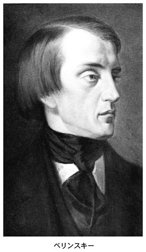
そのベリンスキーが、四八年五月に三十七歳の若さで夭折する。ドストエフスキーが二度目に癲癇の発作を経験するのは、この「師匠」の死を知らされた時とする説があるほど、その衝撃は大きかった。ジラールの解釈によると、そもそもベリンスキーに対する傾倒は、今はなき父親に対する裏切りであり、その傾倒そのものが父殺しとしての意味を帯びていたという。なぜなら、ベリンスキーがめざした究極の目標とは、政治的なレベルでの父殺しである帝政打倒にあったからだ。帝政打倒は、とりもなおさず、皇帝暗殺を示唆する。
ともあれ、ベリンスキーを失ったドストエフスキーは、なお、深くおのれの精神を縛り上げるような支配力をもつ人物を求めてやまなかった。ペトラシェフスキーの会への関与が深まっていくなかで、とくに注意すべき人物の一人にニコライ・スペシネフがいる。クールスク郡の地主の出で、当時まだ二十代の終わりながら、冷徹で不撓不屈の意志力をもった男。グロスマンによれば、「ロシア最初の共産主義者の一人」であり、長いヨーロッパ生活で得た広い教養と洗練された身だしなみが一同を圧倒したという。スペシネフは四〇年代の革命家のなかでも極左に属し、ペトラシェフスキーの会でも、神の存在を否定し、秘密印刷所の設置をとなえ、武装蜂起をめざす秘密結社の設立をくわだてていた。後に『悪霊』の主人公スタヴローギンのモデルとなるこの人物について、ドストエフスキーははじめ注意深く距離を置いたが、やがてその悪魔的な魅力に深く屈し、「ぼくのメフィストフェレス」と呼ぶまでになる。
一八四八年二月、フランス国王ルイ・フィリップが追放され、第二共和制が誕生する。革命の嵐はヨーロッパ各地に飛び火し、混乱を恐れたロシア政府もただちに治安体制をかためた。空想的社会主義の普及をめざすペトラシェフスキーの会も当然のことながら治安当局の監視下に入り、翌年の四月一日、会のメンバー二十三名が一網打尽となった。八か月にわたる拘留の末、ドストエフスキーは死刑判決を受けたが、前述のとおり、セミョーノフ練兵場で刑の執行の直前で恩赦が下った。
長時間、死の恐怖に曝されつづけた心理的ストレスが補償を求めないはずはない。たとえ「生還」の大いなる喜びによって償われようと、現実にそれは見えない「傷」として留まりつづける。十二月二十二日、練兵場から戻った彼は兄ミハイル宛ての手紙にこう書いている。
「今日十二月二十二日、われわれはセミョーノフ練兵場へ連れて行かれました。そこでわれわれ全員に死刑の宣告が読み上げられ、十字架に接吻させられ、頭の上で剣が折られ、最後の身仕舞いをさせられました（白いゆったりした上着）。それから、刑を執行するために、三人が柱の所に立たされました。三人ずつ呼び出されるので、ぼくは次に呼び出される組に入っており、残されたぼくの生命は一分以上はなかったわけです。兄さん、ぼくはあなたを、そしてあなたの家族を一人残らず思い浮かべました。最後の一分間、ぼくの頭にあったのはあなたでした、ただ兄さんだけでした」
「創造し、高遠な芸術生活に生きてきた頭、意識をもち、高遠な精神的欲求に慣れていた頭、その頭はもはやぼくの肩から切り落とされてしまったのです」
この生々しい、しかも謎めいた述懐は決定的である。しかし、この時期に書かれた手紙は、ドストエフスキーの内部に起こった「事件」の実存性そのものを正確に伝えていない。練兵場での経験のもつ意味を彼がしかと見定めるのは、それからじつに二十年後のことであり、このときの体験をはじめて小説の中で明らかにした『白痴』に、はしなくもその真実が伝えられている。
【講義２の１】 引き裂かれた夢想家
一、二、三、またはカーニバル
ドストエフスキーは夢想家です。いやロマンティストという言葉でいい換えてもよいでしょう。では、ロマンティストとはどのような人をいうのでしょうか。前回も引用したジラールによると、彼がロマンティストであったのは、『地下室の手記』を書いた時までのことであったということです（３）。ロマンティストとは、自分の肥大した自尊心によって突き動かされている人のことです。その意味で、じつに危険な存在なのです。この肥大した自尊心は、当然のことながら、他人（すなわち世界）と絶えずぶつかり、軋轢を生まざるをえません。ドストエフスキーがこの肥大した自我、すなわちロマンティストの悲劇に目覚めるのは、これからお話しする第二作『分身』においてなのです。
リチャード・ピースというイギリスの研究者が面白いことを書いています。ロシア人の生活やロシアの文化を貫いているのは二重性であるというのです。例を挙げると、二重窓、二重ドア、ロシア語の二つの動詞の体、双頭の鷲、モスクワとサンクトペテルブルグの二大都市、西欧派とスラブ派の対立などなど。こういった二重性がロシアの文学に反映しないとしたら、それは驚くべきことだ、というわけです。そこで、「分身」というタイトルですが、かつて邦訳では「二重人格」という言葉が当てはめられていたことがあります。もともとこれはドイツ語の「ドッペルゲンガー」から来たイメージです。「二重人格」という言葉を最初に用いたのはドイツ・ロマン主義の作家ジャン・パウル・リヒターですが、やがてこれを売り物にするようになるのが、作家のＥ・Ｔ・Ａ・ホフマンです。ドストエフスキーもホフマンの熱烈な読者でした。ところが、ロシアでは、「分身」の伝統はドイツよりも古く、十七世紀の文学にすでに存在していたとピースは主張しています（４）。
ドストエフスキーのデビュー作『貧しき人々』は、理想肌の小役人マカール・ジェーヴシキンが、みずからのヒューマンな理想に敗れる受難の物語でした。マカールとワルワーラの二人が体現していたのは一種の聖家族でした。ところがブイコフという権力者の登場によってその理想は打ち砕かれてしまいます。ドストエフスキーの小説において、この第三者、とりわけカリスマ的な力の介入による理想の崩壊というパターンは、ほとんど固定観念に近いものを帯びていくように思えます。
話は横道にそれますが、私はつねづね、ドストエフスキーの小説には物語をうごかす三つの動力＝歯車のようなものがあると感じてきました。それは《統合》と《分裂》、そして《闘争》です。『貧しき人々』に次ぐ第二作『分身』とは、統合された主人公の存在が、二つに割れる物語です。
ところが、興味深いことに、というか、厄介なことに、ドストエフスキーにおいてこの「分裂」は、一種の精神の高揚、いってみれば、「エクスタシー」の状態で起こるのです。「法悦」とか「脱自」とか訳される「エクスタシー」が、ギリシャ語源で「エクek-」（外に）＋「スタシスstasis」（立つ）の意味をもっていることはご存知かもしれません。シュテルンベルクというドイツのロマン主義研究者が、「エクスタシーのなかでは魂は肉体のドッペルゲンガー（分身）に姿を変える」と書いていますが（５）、まさにその通りなのです。つまり人間の魂が肉体から抜け出てしまう状態をいうわけですね。なんだ、それじゃ、死ぬことと一緒じゃないか、と思われるかもしれませんが、確かにその通りなのです。ドストエフスキーにおいて、エクスタシーの体験は二つのレベルで起こります。第一が、「癲癇」の発作時に現れる「万物調和」の感覚。これは一の歯車、〈統合〉の感覚です。第二が、自意識の灼熱です。つまり、エクスタシーの高まりと同時に、自意識の分裂がはじまり、その頂点で、もう一人の自我を孕みはじめる。これが二の〈分裂〉の感覚です。そうした動的な状態がドストエフスキーの小説ではなんども繰り返し現れてきます。そして肝心のドストエフスキーは、分裂した片割れの側に立とうとするわけですが......。
おそらく、この、精神のメカニズムを理解しなければ、ドストエフスキー文学のもつ醍醐味を経験したことにはならないかもしれません。では、第三の〈闘争〉はとお聞きになりたいでしょう。これについては後にくわしく触れます。あらかじめヒントを申し上げるなら、道化芝居、さらには父殺し、ということになるでしょうか。
一の歯車である〈統合〉は、俯瞰的な視点からとらえると、二つの側面が現れてきます。一つは、万物調和の感覚です。そして第三の〈闘争〉から第一の〈統合〉へと向かうプロセスこそが、バフチンのいう、「カーニバル」の言語ということになるのかもしれません。バフチンは「カーニバル」について次のような定義を行っています。
「カーニバルとはフットライトもなければ演技者と観客の区別もない見せ物である。カーニバルでは全員が主役であり、全員がカーニバルという劇の登場人物である。カーニバルは鑑賞するものでもないし、厳密に言って演ずるものでさえなく、生きられるものである。カーニバルの法則が効力をもつ間、人々はそれに従って生きる、つまりカーニバル的生を生きるのである。カーニバル的生とは通常の軌道を逸脱した生であり、何らかの意味で《裏返しにされた生》《あべこべの世界》（le monde à l'envers）である（６）」
そしてこのカーニバルにおいては、法則、タブー、制約が、また、世界のヒエラルキー的秩序と結びつく恐怖、畏敬、敬虔、礼儀といったもろもろの形式的なものが取り除かれ、人と人との距離が消え、自由であけすけな「接触」が力を得るのです。いやもしかすると、バフチンのいう「カーニバル」では、一、二、三、の動的なプロセスがすべて含まれるということになるかもしれません。では、エクスタシーとカーニバルはどう違うのか、といえば、それはもう歴然としていると思います。エクスタシーとはあくまでも個人の生命と感覚のなかで起きる興奮であるのに対して、カーニバルはあくまでも集団的な生命のなかに起こるものなのです。
ドストエフスキーの初期の小説では、全員が参加する型のカーニバル的な状況はまだ生まれていません。ただし、バフチンのいう「フットライト」、つまり、敷居を越えようとする凄まじいエネルギーが感じられるのです。初期の主人公は、そうしたカーニバルとはむしろ縁遠い地点にある非カーニバル的人間だし、第一、ドストエフスキー自身がかなりの内向癖でした。しかし、内側で灼熱する自意識というのは、潜在的にはカーニバル的な熱とさほど変わるものではないということです。極度の内向癖と、ビリヤード賭博の同居、それがもっとも端的にこの時期の彼の内面の熱を物語っているようです。ドストエフスキーの小説のポリフォニー化に向けて、さらには、カーニバル的世界観の誕生に向けて第一歩はすでに誕生していました。それは「分身」のテーマとパロディの手法においてです。バフチンにいわせると、「パロディ化とは、王冠を奪う分身を作り出すこと」です。この言葉は意味深長です。「王冠を奪う」すなわち、バフチンが多用する「奪冠」のモチーフがパロディに現れるなら、パロディとはまさにそれ自体が「分身」でもあるということです。
自意識をもたない人間などこの世に存在しませんし、その強度も個人によってさまざまでしょう。自意識の塊のような人物にはどこでもお目にかかれますし、私自身もかつてはそうでした。だからこそ、ドストエフスキーに興味をもったともいえるかもしれません。しかし、ドストエフスキーの小説には、私など足もとにも及ばない自意識のお化けが次から次へと登場するのです。ドストエフスキーはそういう人を、「夢想家」と呼んだり、「地下室人」と呼んだりするのですが、逆にまた、そうしたタイプとは逆の人物も登場し、これら「夢想家」や「地下室人」を責めさいなんでいるのです。みずからも大いなる夢想家だったドストエフスキーからすると、過剰な自意識に苦しまない人間こそ、羨みの的なのですね。ドストエフスキーは、カリスマ的人物に非常に弱いタイプの男でした。これは、他者に対する同化の力が異様なほどに強かったことを意味しています。
【テクスト２】 『分 身』（一八四六年）
主人公のゴリャートキンは、無能で臆病ながら、自意識と出世欲にむしばまれた下級官吏である。かつての恩人の一人娘であるクララの誕生日を祝う晩餐会が開かれることを知り、招かれてもいないのに会場におもむくのだが、玄関で従僕にすげなく断られ、裏階段からまんまと会場に入り込む。だが、恋するクララの前で大醜態を演じ、会場からつまみ出されてしまった。みぞれまじりのなか、失意のまま家路についたゴリャートキンの前に、自分と瓜二つの男が現れる。不安を覚えながら、翌日、出勤すると、昨晩の男が同じ職場に着任しており、名前が自分と同じゴリャートキンだと知らされる。その日、家路をたどる道で新ゴリャートキンに会ったゴリャートキンこと旧ゴリャートキンは、彼を自宅に招き、その哀れな身の上話を聞く。そして感極まって、「親身の兄弟のように暮らしていこう」と新ゴリャートキンにもちかけ、その夜は泊まっていくように勧める。翌朝、目を覚ました旧ゴリャートキンは、新ゴリャートキンの姿どころか彼の寝床さえないことに気づく。後悔の念にさいなまれて出勤した旧ゴリャートキンは、忙しそうな様子で職場を走り回る新ゴリャートキンを見つけ声をかける。だが、新ゴリャートキンはまったく取り合おうとしない。しかも新ゴリャートキンは、旧ゴリャートキンが作成した書類を横取りして上司に提出し、上司から寵愛を受ける。見かねた旧ゴリャートキンは上司に抗議するものの、上司はそれに耳を貸そうともしない。同僚に対し愛想を振りまき上司にうまく取り入る新ゴリャートキンを傍目に見ながら、旧ゴリャートキンは、自分に対する悪意に満ちた噂を流しているのはこの男だ、職場の皆がぐるになって自分を破滅させようとしていると思い込む。「私を救ってください」というクララからの手紙を信じ、馬車で彼女を迎えに行った旧ゴリャートキンは、思いがけず新ゴリャートキンに屋敷に招じ入れられ、集まった一同から歓待を受けるが、そこに姿を現した旧知の医者に連れられ、馬車に乗せられる。行き先は精神病院だった。
【講義２の２】 分身か、兄弟か──似た者同士の闘い
支配者と被支配者
同時代の批評家たちが下した評価とはうらはらに、ドストエフスキーはこの『分身』という小説を、『貧しき人々』の何倍もすぐれた価値をもつと考えていました。テーマの新しさという点は措くとして、この小説が、当時の読者よりも、むしろ作者自身により多く語りかけるものをもっていたからです。実際に彼は、一種特別のニュアンスを込めて、この小説を「自伝的」であると書いています。
たしかにデビュー作『貧しき人々』同様、この作品もまたニコライ・ゴーゴリの影響のもとに書かれました。ゴーゴリの『狂人日記』の主人公ポプリーシチンは、『分身』の主人公と同じ九等官ですし、勤務する役所の上司の娘に恋をするという設定もまったく同じです。その意味で、『貧しき人々』のジェーヴシキンとゴリャートキン氏は血を分けた兄弟ともいえるのです。しかし、ドストエフスキーはゴーゴリのたんなる模倣者ではありませんでした。理由はたんに、これまで指摘してきた手法上の問題だけではありません。ペテルブルグの貧しき人々に、〈権力〉という新しいモメントを与えたのはドストエフスキーの独創になるものです。〈権力〉への欲望も、じつは「語りえない何か」なのです。ジェーヴシキンとゴリャードキンの違いについて、ロシアの研究者ペレヴェルゼフが面白いことを書いています。
「ゴリャートキンはほとんど、無意識かつ本能的ではあるが、権力を獲得しようとして闘っている。前者（ジェーヴシキン）は、底辺に落ちるのを恐れ、後者（ゴリャートキン）は上層に這い上がろうとしている。（......）自尊心が権力愛という先鋭な形態に発達したために、人格の二極分裂がより深刻になっている（７）」
つまり、同じペテルブルグの小役人でありながら、権力の意識に目覚めたがゆえにゴリャートキンは分裂してしまうと、ペレヴェルゼフはいうのです。たしかに、理想に燃える心優しいシラー主義者にとって権力ほど誘惑的で危険な夢はありません。こうしてジェーヴシキンの延長上にゴリャートキンを置くとき、両者の間に介在するモメントの違い、後者の変身ぶりには目を瞠らされるようです。権力への欲望とは、逸脱の欲望でもあります。つまり、招かれざる祝いに押しかけていこうとするその逸脱のうちに、権力への欲望は兆しているのです。しかし、そこに、ドストエフスキーにとって一つの重大な発見があったことは見逃せません。
さて、ドストエフスキーにとって「分身」のテーマがもった意味とは、自己という存在の不確定性であり、さらには、もう一人の自己（alter ego）という存在の確認でした。では、そもそも分身が誕生するとは、どのようなことを意味するのでしょう。ここでも、私はやはりジラールの理論に強く惹かれます。
「自尊心の強い人間は、その孤独な夢のなかでは、自分はひとりだと信じているが、失敗にでくわすと、軽蔑すべき存在と、それを見下す観察者とに分裂する。そして自分自身にたいして《他者》となる。（......）軽蔑する観察者は、勝ち誇るライバルに限りなく接近する。いっぽう、（......）わたしは、この勝ち誇るライバルの欲望を模倣し、その結果、このライバルは限りなく自分に接近する。意識の内部分裂が深刻化するにつれて、《自己》と《他者》の境界が不明瞭になっていく（８）」
思うに、『分身』における理想的なライバル、すなわち、もう一人の自己と、現にある本来の自己との関係は一つ、理想化された自己（強者＝支配者）と貶められた自己（弱者＝被支配者）の関係以外にありません。この関係は、その後のドストエフスキーの小説で繰り返し変奏されていきますが、後者すなわち貶められた自己＝弱者から見る両者の関係は、憎悪とか抵抗とかのぎすぎすした関係ではなく、むしろそれを模倣しようとする欲求から生まれる関係です。これは『貧しき人々』においても同様でした。
しかし、じつは私がここに見るのも、シラーの『群盗』という原体験がもたらした余波です。分身のモチーフが、ドイツ・ロマン主義の作家ホフマンにその意匠を借りていることは事実であるにせよ、テクストの内部に隠されているリアリティの生々しさは、より原型的な神話に通じているように思えてなりません。
他方、新ゴリャートキン氏と旧ゴリャートキン氏との関係は、より端的な表現を用いるなら、死刑執行者と死刑囚の関係であり、カリスマとそれに魅了される凡人の構図でもあります。そしてその関係を支えるのは、マゾヒズムです。ドストエフスキーは書いています。「自分の傷を突っつき回すことが、ゴリャートキンにはなにやら深い快楽、性的な快感と見まごうものとなった」と。前回の講義で私は、『貧しき人々』のブイコフがジェーヴシキンの裏返された欲望のシンボルであると述べましたが、新ゴリャートキンもまた、旧ゴリャートキン氏がけっしてなりえない永遠のカリスマであり、それはまた、彼の裏返された自画像ともいえるものなのです。この関係はいずれ、今回のこの講義の最大のテーマである父と子の関係性へと大きく反転していくことになるでしょう。
しかし、分身のモチーフそのものについても言及する必要があります。分身とは、精神的ないし血縁的に一であったものが二つに割れた存在（ないし状態）を言います。ということは、源をたどれば、それら両者は兄弟の関係にあるということです。そして実際でもそうですが、この兄弟が、瓜二つである場合もあれば、そうでない場合もあるわけです。
そこで私はこんなふうに想像するのです。ドストエフスキーにとって分身のテーマとは、たんに文学上の手法としてあったわけではなく、そこにはシラーの『群盗』以来、彼のなかで強迫観念となり、妄執の色さえ帯びている敵対する兄弟という根源的なモチーフ、極言すれば兄弟殺しの動機があったのだと。『群盗』で提示された兄弟は、容貌、性格ともにかけ離れていますが、『分身』では、純粋にこのテーマがドストエフスキー自身の内面の問題に重ねあわされている、と。
では、二十代後半のドストエフスキーの作品に、「父殺し」の傷は、どのような影を落としていたでしょうか。ここは、おそらく皆さんがもっとも興味をもたれるところではないかと思います。「父殺し」の意味をどこまで拡大し、一般化するか、という厄介な問いはありますが、そこはひとまず棚上げにし、さしあたり、物語の筋立てにのみ限定することにしたいと思います。この問題を考えるうえで興味深い視点を提供してくれるのが、ドストエフスキーのなかでもあまり読まれることのない中篇小説『家主の妻』です。
【テクスト３】 『家主の妻』（一八四七年）
主人公オルドゥイノフは、ある日、教会堂で老人のそばで一心に祈りを捧げる人妻に目を奪われ、跡をつけてその住まいを確認した挙句、そこに間借りすることを決める。極端に夢見がちの主人公は、えもいわれぬ気分で町をさまよい、タタール人の屋敷番に主人である老人の職業をたずねると、こういう答えが返ってくる。「病気だ、神さまに祈って暮らしている」。
引越しがすむやオルドゥイノフは得体の知れない病におかされ、悪寒におそわれ意識を失う。目が覚めると、目の前に美しい人妻カチェリーナの顔があった。彼女は彼に「起きられるようになったら、兄妹のように生きていきましょうね」といい、彼がその手を唇に押し当てると、彼女の目からみるみる涙が溢れるのを見る。そして彼はふたたび気を失う。夢とも現とも判別しがたい世界をさまよいつづけ、明るい喜びに満ちた幼年時代の風景が目の前に現れるかと思うと、不可解な老人につきまとわれる夢を見る。
目をさました彼は、漏れくる光に導かれるようにして隣の部屋をのぞきこむ。すると、ベッドの上に病身を横たえる老人の話に時に微笑を、時に涙を浮かべて聴き入るカチェリーナの姿が見えた。そんな彼女の髪をやさしく撫でる老人。その胸に愛情をこめて倒れこむ彼女の姿を、彼は見てしまったのである。オルドゥイノフは閂のかかるその扉に体当たりし、彼らの寝室に突入する。銃をとり、彼に銃口を差し向けた瞬間、老人は癲癇の発作に襲われ、床に倒れふす。
翌朝、通りを歩いていると、旧友のヤロスラフに声をかけられ、彼の口から、家主のムーリン老人の過去を知らされる。かつてはヴォルガに何隻もの船をもっていたが、嵐で失い、親類に経営をまかせておいた工場も火事で焼失し、財産を失った。その後、お気に入りだった若い商人を殺害しようと企てた──。ムーリンは、宗教書を読み、神秘主義者で、予言の才があり、当局の厳重な監視下にあるが、他面、市の有力者とも深いつながりがある、等々。
そして自宅にもどり、ベッドに倒れふした彼は、目覚めとともに、再び目の前に彼女の姿を見る。美しい女主人は告白する。「わたし傷ものなの、（......）悪者がわたしを傷ものにしたの、あの人よ、わたしを堕落させた男......。あの人、こんなふうにいうのよ。自分が死ぬとき、わたしの罪深い魂を取りに来るですって。（......）わたしは死に価する罪を犯したなんていうの......」「わたしって呪われた娘ですもの、人殺しなのよ。母親に呪われたの。わたしって、生みの母親を殺したのよ......」
吹雪の夜、彼女の父親が管理する工場が火に包まれ、その騒ぎのなかで、ムーリンに殺された父親の死体が発見された。ムーリンが彼女を生ませた母親もすでに病で死にかけていた。幼いカチェリーナに身も心も奪われたムーリンは、攫うようにして彼女を馬に乗せ（「おれはもうおまえに魂も奪われてしまってるんだ」）、ヴォルガまでやってくる......。彼女と過ごす謎めいたムーリン老人は、じつはカチェリーナの夫にして実父でもあった！ 強盗、殺人の前科をもつタタール人占い師。彼はカチェリーナの母と密通して彼女を生ませ、父親を焼き殺し、娘を虜にしたのだ。
ある日、病床からめざめたオルドゥイノフは、カチェリーナに招待され、三人で食事をともにし、勧められるままにワインを口にする。老人も痛飲し、あげくの果て気を失ってしまう。オルドゥイノフに殺意がめばえるが、意識を取り戻した老人の目に居竦まされ、ナイフを落としてしまう。
この事件のあと、オルドゥイノフは引越しを決心し、翌日、友人のヤロスラフのもとに出かけていく。そこで彼はムーリン老人にでくわし、彼の口から慇懃に退去を求められる。老人はカチェリーナについていう。「頭が弱く短気者で、森の中で育ちまして、曳船人夫や工員連中のなかで大きくなったがさつ者です。そこへもってきて家が焼けましてな。母親が死ぬ、父親が焼け焦げになって生命を落とすというありさまで......よろしいですか、あの娘はどんな話をするか知れたもんではありません」「いつも色ごとしか頭になく、烈しい気性で、いい男のことばかり......。さよう、色男がほしい、そればかり考えておりまして、それでおかしくなったのです......」「ただ、わたしにとっては、あれはそれこそ大事な女なのだ。わしは自分の生命以上に、あれに惚れこんでおって、誰にも手放さんぞ。いまこそ分かったろうが」
引越しをすませたオルドゥイノフにとって、人生は「永久に色あせたものとなった」。その後、たまたま路上でヤロスラフに会ったオルドゥイノフは、彼の口から、ムーリン老人が住んでいたアパートで群盗の一味が摘発されたこと、三週間前に老人とその妻カチェリーナが故郷に去ったことを知らされる。
【講義２の３】 妄想の劇化、または幻想のなかの親殺し
「妄想の劇化」
「恐ろしくくだらない作品」──、これはベリンスキーが『家主の妻』について語った言葉です。ベリンスキーに限らず、同時代の批評家のほとんどがこの作品には否定的な評価を下しました。それもそのはずです。ドストエフスキーはこの作品で、いささか大胆すぎるほどのパーソナルな冒険を行っていたからです。私がこの作品に抱いた第一印象は、自分が抱いている固定観念を、登場人物たちに演じさせている、というものでした。そしてこの『家主の妻』は、講義全体のテーマとひときわ深く関わるきわめて重要な作品であるだけに、かなり詳しく内容を紹介しました。
では、この物語のどこに父殺しのモチーフは隠されているのでしょうか。女主人カチェリーナは、自分が「あの人」（ムーリン）の呪いに抵抗できず、ついには父母の殺害者たる男に身をまかせてしまった、まさにこの事実によって、親殺しの共犯者となるのです。少なくともカチェリーナはそのように自覚しています。しかもここで見逃せないのは、一見、極悪非道のムーリンが、あろうことか、癲癇を病んでいるというディテールです。『家主の妻』という作品は、読者の注意をほとんどひきつけることのない中篇で、ゴーゴリ小説のもじり（『恐ろしい話』）程度の扱いで片付けられることがしばしばでした。しかし私は、この作品に、何か計り知れない深さがあると考えてきました。ドストエフスキーははじめて胸元を開き、みずからの傷をそっと見せた、そんな印象があったのです。しかし、問題はこの女主人の「親殺し」の意識が帯びているリアリティです。しかもそのリアリティが、オルドゥイノフという、ドストエフスキーの分身であり、神経を病んだ人間の目を通してもたらされるという事実です。つまり、どこまでが現実で、どこからが夢の世界か分からないのです。すでにおなじみのベームという研究者は、この小説の構造そのものに徹底した分析のまなざしをむけ、筋の大半において、実際に起こったことと起こっていないことが混在している事実を明らかにしました。そしてベームは、『家主の妻』の物語を動かしている力を、オルドゥイノフが陥っている鬱の病そのものに見て、物語全体を「妄想の劇化」と名づけたのです。というわけで、カチェリーナの「熱い口づけ」もオルドゥイノフが「譫妄状態で実現された願望でしかない」と結論づけるわけです（９）。
ベームの指摘はなるほど説得力に富むものですが、カチェリーナの内面に対する積極的なアプローチが欠落しているように感じます。仮にオルドゥイノフに「妄想の劇化」を見るなら、カチェリーナの一挙一動にも、それと同質のものを予想してしかるべきではないか。つまり、彼女が、オルドゥイノフに語りかけた話の内容そのものも疑われてよいのです。どこまでが事実で、どこからが妄想なのか──。もしかすると、カチェリーナを苦しめている親殺しの意識は、たんなる妄想に発するものでしかないかもしれません。いや、彼女には虚言癖さえあるかも──。
けっして冗談でいうのではないのです。この『家主の妻』という作品がドストエフスキーにとって重大な意味をもったのは、ベームのいう「妄想の劇化」という、小説作法上の工夫だけではありませんでした。それ以上に、いやこの「妄想の劇化」と深くリンクしながら描きこまれているディテールこそ、ドストエフスキーにとってはたとえようもなく重要だった。このディテールとは、端的にいうなら、分離派に対する関心です。では、この「分離派」とは何なのか、これからしばらくそのお話をします。なんといっても「分離派」こそ、ドストエフスキー文学の背後にあるもの、あるいはロシア的なものの本質を考えるうえで絶対に疎かにできない概念＝キーワードの一つだからです（ロシア人はすべて分離派である、と書いたのは、ドストエフスキー研究者としても知られた哲学者ニコライ・ベルジャーエフでした）。
分離派への関心
ロシアは一般にロシア正教の国とされていますが、その実、さまざまな土着的な宗教が入りまじっていました。
十七世紀の中葉（一六五三～五六）、ロシア正教の写本の誤りを訂正したニーコン総主教は、従来の古い典礼をカトリック風に改めることで正教を世界化しようとしました。「改革」の主な内容とは次のようなものでした。
一、十字を切るときに二本の指ではなく三本の指にて行う。
二、礼拝は、腰までの礼にとどめ、ひざまづかない。
三、ハレルヤは二度でなく三度となえる。
四、十字架の形を、これまでの八端形から四端形に変える。
五、経机や教会の周囲を回る際には、東から西へではなく、西から東へまわる。
六、イエス・キリストの綴りを改め、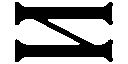ではなく、とを重ねる。
なんだ、そんなことか、ばかばかしいとお思いになる方もいらっしゃるかもしれません。しかし、ニーコン総主教によって進められたこの大改革は、父祖伝来の旧いしきたりを守ろうとする人々の抵抗に遭い、教会分裂を導くことになります。なぜなら、その背景にあったカトリック化、合理化、すなわち今でいう世界化こそが問題だったからです。つまり、分離派とはまさに反グローバリズムの戦いだったわけです。そしてこの教会分裂をきっかけにロシア正教会から分離していった人々は、「分離派（）」、あるいは「旧教徒（）」、「古儀式派（）」などの名前で呼ばれるようになり、他方、彼らは正教会を「反キリストの教会」と断罪したのです。
教会から離反した人々はやがて、教会容認派である「有僧派」と、教会否定派のより急進的な「無僧派」との二つに分かれて、さらにはそれぞれが時の流れとともに数多くの異端派へと分化していきました。そのなかで最大の派閥を誇ったのが、「鞭身派（）」と呼ばれる一派でした。コストロマー県出身のダニール・フィリッポフを始祖としてロシア国内にすみやかに勢力を広げたこの宗派は、みずからを「神の人々」と称し、十九世紀初頭には、非公式ながら、信者数百万人を数える一大勢力をかたち作りました。理由はいくつか考えられます。「ラジェーニエ」と呼ばれる鞭身派の儀式において、信徒たちは賛美歌を歌い、踊り、跳躍するというのが一般の慣わしでした。しかしとくに記念すべき集まりでは、深夜から明け方にかけ、腰まで体をむきだしにしたまま、タオルを巻いたもので互いを打ち、「われは鞭うつ、われは鞭うつ、キリストを探す」（ ,,）と唱えながら聖水盤の回りをぐるぐる回るのです。「鞭」と「キリスト（フリストス）」の響きが渾然と溶けあうなかで、信徒たちは徐々に法悦境へと昇りつめ、心義しい信徒たちの魂にはやがてキリスト、聖母、聖霊の魂が宿ると信じられていたのです。しかし、こうした儀式がやがては乱性交へと向かうのは当然のなりゆきでした。鞭身派は時とともにそれを許容していった様子です。というのは、鞭身派はもともと結婚を禁じ、結婚によって生まれた子どもを罪人、悪魔の慰み者とみなして、このセクトに加わった男子に対してただちに夫婦間の性交を絶ち、「兄と妹のように」生活することを義務づけていたからです。その代償は、儀式の際にあてがわれる「聖霊の妻」なる女性であり、この女性との性交は罪とはみなされなかったのです。その結果、女性の信徒たちはだれの子か分からない子を妊娠することがしばしばであり、信徒たちは生まれた赤ちゃんを「赤子イエス」であるとし「船」と呼ばれる共同体全体によって育てあげていったのです。父親が特定できないということは、聖母マリアの処女懐胎にも通じる面があるため、それなりの理屈がついていたのかもしれません。たがいの秘密を死守する目的からも鞭身派の集団はそれぞれが完全に独立していたとされています。彼らはサンクトペテルブルグで「最後の審判」が生じると信じ、それ以後の来世での生活を求めていたのです（10）。ともあれ楽しみの少ない農村で、鞭身派の集まりが一種のユートピアと同一視されたとしても仕方ありません。そしてこれに抗議し、コンドラーチー・セリワーノフを開祖として開かれたのが去勢派（）だったのです。ただし、儀式の内容そのものは鞭身派と大きく変わるところなく、踊りや歌を特色とするものでした（「おのれを去勢すれば、天国が購える」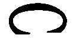,.）。そしてその教えの根底にひそむ遍在するキリスト、繰り返し顕現するキリストという考えも共通していました。また、鞭身派、去勢派ともに、人間の救済は、個人レベルでの神秘的な体験ではなく、集団的なレベルにおいて実現されると理解されていました。これが正教やカトリックと根本的に異なるところでした。しかし去勢派が鞭身派と根本的に異なっていた点は、去勢、すなわち、身体そのものの変容にまで至らなくては、ユートピア＝神の国は実現しないと考えられていたところにあります。彼らは去勢の手段として焼きごてを用い、それを「火の洗礼」と呼び、「去勢 は贖罪 なり」を合言葉の一つにしていたのです。去勢の方法はさまざまでしたが、一八一六年以降、去勢派の一部は「完全なる純潔と完全なる無関心」を手に入れる手段として男性に対してとくに第二段階の去勢を行うようになりました。すなわち生殖器全体を削除する方法で、彼らはこれを「完全なる洗礼」ないし「王の刻印」と豪語したのです。その結果、去勢派内部から、この「王の刻印」を罪悪視する「旧去勢派」と呼ばれる一派が誕生することになりました。
,,）と唱えながら聖水盤の回りをぐるぐる回るのです。「鞭」と「キリスト（フリストス）」の響きが渾然と溶けあうなかで、信徒たちは徐々に法悦境へと昇りつめ、心義しい信徒たちの魂にはやがてキリスト、聖母、聖霊の魂が宿ると信じられていたのです。しかし、こうした儀式がやがては乱性交へと向かうのは当然のなりゆきでした。鞭身派は時とともにそれを許容していった様子です。というのは、鞭身派はもともと結婚を禁じ、結婚によって生まれた子どもを罪人、悪魔の慰み者とみなして、このセクトに加わった男子に対してただちに夫婦間の性交を絶ち、「兄と妹のように」生活することを義務づけていたからです。その代償は、儀式の際にあてがわれる「聖霊の妻」なる女性であり、この女性との性交は罪とはみなされなかったのです。その結果、女性の信徒たちはだれの子か分からない子を妊娠することがしばしばであり、信徒たちは生まれた赤ちゃんを「赤子イエス」であるとし「船」と呼ばれる共同体全体によって育てあげていったのです。父親が特定できないということは、聖母マリアの処女懐胎にも通じる面があるため、それなりの理屈がついていたのかもしれません。たがいの秘密を死守する目的からも鞭身派の集団はそれぞれが完全に独立していたとされています。彼らはサンクトペテルブルグで「最後の審判」が生じると信じ、それ以後の来世での生活を求めていたのです（10）。ともあれ楽しみの少ない農村で、鞭身派の集まりが一種のユートピアと同一視されたとしても仕方ありません。そしてこれに抗議し、コンドラーチー・セリワーノフを開祖として開かれたのが去勢派（）だったのです。ただし、儀式の内容そのものは鞭身派と大きく変わるところなく、踊りや歌を特色とするものでした（「おのれを去勢すれば、天国が購える」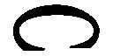,.）。そしてその教えの根底にひそむ遍在するキリスト、繰り返し顕現するキリストという考えも共通していました。また、鞭身派、去勢派ともに、人間の救済は、個人レベルでの神秘的な体験ではなく、集団的なレベルにおいて実現されると理解されていました。これが正教やカトリックと根本的に異なるところでした。しかし去勢派が鞭身派と根本的に異なっていた点は、去勢、すなわち、身体そのものの変容にまで至らなくては、ユートピア＝神の国は実現しないと考えられていたところにあります。彼らは去勢の手段として焼きごてを用い、それを「火の洗礼」と呼び、「去勢 は贖罪 なり」を合言葉の一つにしていたのです。去勢の方法はさまざまでしたが、一八一六年以降、去勢派の一部は「完全なる純潔と完全なる無関心」を手に入れる手段として男性に対してとくに第二段階の去勢を行うようになりました。すなわち生殖器全体を削除する方法で、彼らはこれを「完全なる洗礼」ないし「王の刻印」と豪語したのです。その結果、去勢派内部から、この「王の刻印」を罪悪視する「旧去勢派」と呼ばれる一派が誕生することになりました。
ちなみに、去勢派にかんする記述が歴史上はじめて現れるのは、一七七二年七月、場所はオリョール県です。当時のエカテリーナ二世が、「ある新しい種類の異端」の調査のために係官をオリョール県（この場所の名前はしっかりと記憶にとどめておいてください）に遣わしたのが、そもそものきっかけです。十九世紀になると、去勢派もまた勢力を増大させ、政府を脅かすような存在となり、時のニコライ一世は去勢派の信徒をシベリアに流刑にしたほどでした。興味深いのは、鞭身派も去勢派も表向きは、一般の正教信者以上に熱心に祈り、蓄財の一部を教会に寄進していたことであり、とりわけ去勢派は地上の肉欲を退けるかわりに、宝石や金品を崇拝して、蓄財に励むものが多かったとされます。ちなみに、「去勢する」（）と「貯蓄する」（）は同じ単語なのです。
国教である正教から分離した人々の数は不明ですが、ペトラシェフスキー事件で知られるペトラシェフスキーは一八四九年の取り調べの際に分離派の数をじつに七百万人とし、一八六七年に、革命家のオガリョフは、「ありとあらゆる政府の迫害にも関わらず、わが国では人口のほとんど半数のうちで分離派が保持されている」（一八九七年に行われた帝政期初の人口調査では、総人口は一億二千四百六十四万人であった）と書いています。これらの記録には多少誇張も含まれていると思われますが、内務省の調べによると一八二〇年代には少なくみつもって百万人がいたとされ、それが十九世紀末には二百万人近くに上っています。ドストエフスキーと同時代の一八五〇年代に行われた調査では、ヤロスラーヴリ県の三分の一が分離派であったとの記録が残されています。公式の統計と実数には大きな違いがあったと見られ、潜在的にはその数倍という恐るべき勢力を誇っていたのです。
去勢派と『家主の妻』
こうした分離派の運動に対して、ドストエフスキーがすでにペテルブルグの工兵学校時代から少なからぬ興味を抱いていたことが、セレズニョフの指摘で知られています。しかし、ドストエフスキーはこの『家主の妻』で、非常にあいまいながらも、ある強い意志と動機づけのもとに、このテーマを提示したのでした。
この問題に最初に注意を向けたロシアの研究者ヴォルギンは、『家主の妻』のムーリン老人とカチェリーナが「鞭身派」に属していると考えたのです（11）。もっともごく最近の研究では、彼ら二人が加わっていたのは鞭身派ではなく去勢派であったことが明らかにされています（12）。そこでは、「鞭身派」に対するドストエフスキーの曖昧な理解が、次のような理由に結びつけられています。すなわち、『家主の妻』の執筆時にあたる一八四〇年代、「分離派」のテーマは当局からおおむねタブーとされており、同時代の作家で分離派に詳しかったレスコフやメーリニコフと異なり、ドストエフスキーには十分な知識が与えられていなかった、というものです。しかも、一八四四年から四七年にかけてペテルブルグでは、「鞭身派」（「神の人々」）と「去勢派」（「白い鳩」）に対する当局の弾圧がはじまり、続々と逮捕者を生んでいました。内務省に通じている友人をとおしてドストエフスキーはその実態をくわしく知る機会を得ることができました。分離派のなかでも去勢派は莫大な富を築き、自分たちの屋敷に政府の役人や有力者を招待しては湯水のごとく金を用い、彼らの「行い」や「儀式」に対する黙認をとりつけていました。そしてペテルブルグにおける去勢派最大の拠点がこの『家主の妻』の舞台となり、じつはそこは、ドストエフスキー自身が住んでいた地区のすぐ近くにあったというわけです。
ですから、『家主の妻』が、ベームのいう「妄想の劇化」という手法によって箍をはめられながらも、異端派に固有の神秘的な気分を濃厚にとどめている理由は、歴史的な事実にも十分に適っていたわけです。しかもムーリン老人のモデルは、かつては盗賊団の首領で殺人鬼でありながら、後に改心し、叙聖された「聖人モイセイ・ムーリン」に由来するという説もあり、かりにこの説にしたがうなら、カチェリーナ一家を滅ぼした罪の改悛のしるしとして、二人は、去勢を受け入れたという筋書きも大いに考えられるのです。カチェリーナとムーリンは、ある時点から、あるいはそもそもの始まりから、性的な快楽の可能性をみずから絶ち、その抑圧のなかで、神への帰依をいやがうえにも深めていったのです。カチェリーナがオルドゥイノフにささやきかけた「兄と妹として」という言葉も、性的禁忌を暗示するものです。
先にも触れましたが、去勢派の儀式では、祈りと踊りのなかにあって高度のエクスタシーを得、世界の終わりと、イエス・キリストの再臨を願います。まさしく終末の世界ですが、そうした去勢派の儀式を考えるとき、『家主の妻』は非常に謎めいた力を帯びることになります。なぜなら、カチェリーナもまた、ムーリン老人を神のように崇めたてているからです。その意味で、彼らはまさに世界の終末という予感のなかで生きており、カチェリーナは最後の審判の際に救われることを祈りながら、現世の苦しみに耐えているともいえるでしょう。
では、ドストエフスキーにおいてこの「鞭身派」や「去勢派」に対する関心は、いったいどこから生じたのでしょうか。ひょっとすると、十代の彼が親しんだシラーとも、あるいは現に、ペトラシェフスキーの会をとおして接しているフーリエの理想とも関わりがあったのではないでしょうか。たとえば、ペトラシェフスキーの会で論じられたフーリエにおいて、一夫一婦制は廃せられ、「恋愛の自由」が唱えられています。
次に禁欲です。鞭身派の一部には、鉄の鎖や、斧の峰や、小刀などではげしく体を傷つける苦行者がいたとされていますし、去勢派はその「火の洗礼」にみられる強烈な自己否定によって、逆に救いがたい「自尊心と功名心」の権化を自覚するドストエフスキーを惹きつけました。同時に、ムーリン＝カチェリーナにおける支配者と被支配者の絶対的な関係性と、その枷を抜け出ようとする女性が発するエロティシズムそのものも......。性と権力をめぐる、幾重にも捩れた関係をドストエフスキーは彼ら二人に見たのです。そしてオルドゥイノフがひたすらその関係のなかに入りこもうとしたとき、彼をとらえたのは、じつは支配者たるムーリン老人（＝潜在的な父）との同化でした。ムーリン老人は、まさに、オルドゥイノフの模倣された欲望でもあったのです。そして彼ら三人が織りなす謎に満ちた三角関係は、二つの親殺しの三角形を、カチェリーナという女性を結び目として重ねあわせたものでした。オルドゥイノフは、老人の所有するナイフでムーリンを殺そうとする行為において潜在的に父殺しの下手人となり、母殺しの罪を犯したカチェリーナと同一化することになるのです。オルドゥイノフとカチェリーナが兄妹のように生きようと決意するとき、そこには、確実に親殺しの隠された絆が意識されていたといってもよいのかもしれません。
道化小説
さて、この時期のドストエフスキーは、すでに書き上げた小説を、あたかも厄払いしたいとでもいうかのように、一作ごとに作風を変えています。作家自身の気分や内面のロジックにそれなりに従ってはいたはずですが、同時代人の目に、かりにそれが才能のひけらかしと映ったとしても無理はありません。しかし、ドストエフスキーはもともと器用な作家ではありませんから、新しいジャンルに挑むといっても、一つの大きい枠組みのなかでそれぞれのテーマを見定めていったのです。夢想家の物語から、一転して道化小説の執筆にのめり込んでいくときも、そこには、彼なりの一貫した論理があったはずです。
では、なぜ、道化小説なのでしょうか。なぜ、よりにもよって、「寝取られ亭主」（コキュ）のテーマなのでしょうか。『貧しき人々』や『白夜』の美しいストーリーを知る読者には、なんとも解しがたい変身です。かくいう私も、若い頃はじつはたいそうロマンティストでありまして、こういう下世話な話を書くドストエフスキーが正直嫌いでした。ところがある時、ふと謎が解けたような気がしたのです。『白夜』タイプの夢想家と、コキュを演じる道化たちを結ぶ糸はそんなに複雑にもつれあっているわけではないのではないかと。だいいち、サーカスのピエロがそうだ、ひょっとすると、夢想家とピエロは一卵性の双生児なのかもしれない、と。
ドストエフスキーが描きだす人物をいくつかの系譜とタイプで見ていきますと、強者によってつねに辱められ、奪われつづける弱者の系譜とタイプがあります。マカール・ジェーヴシキン（『貧しき人々』）もその一人です。そういう存在はきまって「弱気」で自意識過剰な人物たちです。ところがドストエフスキーは、同情に満ちたまなざしで彼らの声なき声を代弁するどころか、ひたすら彼らを笑い飛ばそうとするのです。私としてはどうしても合点がいかず、一つ、先生に本音を聞いてみたい。先生、腹になにか隠していませんか、と。『他人の女房とベッドの下の亭主』なんて題名だけでもひどい話じゃありませんか。弱者をとことん苦しめ、羨ましがらせる強者たち同士が繰り広げている「痴態」とそれをなすすべもなく傍観する弱者──、こうしたシチュエーションを、先生はちゃんとイメージして書いておられるのですか。それがどれほど残酷なことか、分かっていらっしゃるのですか。たんに面白がっているだけだとしたら、ドストエフスキーの博愛主義も知れたものですが......。
それよりももう一つ大事なヒントがここに隠されているにちがいありません。すなわち、これらの道化小説に示されるマゾヒズムには、すでに、社会主義批判、功利主義批判、ベリンスキー批判が隠されている、自分自身の夢そのものに対する、ひそかな反抗がすでに宿っているという事実です。なんとも恐ろしい話ではあります......。
【テクスト４】 『他人の女房とベッドの下の亭主』（一八四八年）
冬のペテルブルグ、あるアパートの前に一人たたずむ青年。そこへ恰幅のいい一人の紳士が姿を現し、会話がはじまる。寝取られ亭主である紳士と寝取った色男の青年が、アパートの三階の一室までくると、突然、ドアがあき、第三の男が現れる。中からはなまめかしい女の声がする。ドアの前に立ち尽くす夫の姿を認めた妻はこともなげに「あなたでしたの」と言いはなって、夫と馬車に乗り込む。翌日、劇場に赴いた夫の頭に一枚の紙が落ちてくる。密会の場所を愛人に伝える女のメモ。見上げると、先日、アパートの前で会った青年をはべらせた妻の姿があった。秘密をかぎつけた夫は密会の場所に押し入るが、そこにいたのは家主の妻。しかも彼女の主人が帰宅した音が聞えてくる。寝取られ亭主はあわててベッドの下にもぐりこむとなんとそこには先客がいる。よく耳を傾ければ、三階の部屋から男女の怪しい物音。寝取られ亭主はスキを狙って飛び出すが、運悪くつかまってしまう......。
【講義２の４】 模倣の欲望
この時期のドストエフスキーが足しげく通ったペトラシェフスキーの会で、彼がふれたユートピアの理想とは、他人の愛に仕える「美しい奉仕者」となること、つまり他人のために喜んで犠牲になるという考え方でした。しかし、そこには、疎外される自分を結び目とした三角形の構造すなわち『分身』の解説でも触れた「模倣の欲望」ないしは「欲望の三角形」がしっかりと下支えしていたのです。そしてこの三角形こそは、ドストエフスキーの理想主義が惜しみなく発揮されるもっとも安定した関係であり、少し厳しくいえば、自己満足の場所でもあったのです。しかし同時に、ドストエフスキーは、「美しい奉仕者」の夢がいやおうなくはらむ欺瞞的な本質も目ざとく把握していました。三角形の崩壊を恐れる気持があったこともおそらく事実です。『他人の女房とベッドの下の亭主』という物語は、疎外された人間のマゾヒズムの物語であるだけでなく、意識家＝夢想家のはしくれたるドストエフスキー自身を根底から打ちのめす、悪しき父たちの物語としてイメージされていたと私は考えます。ドストエフスキーは徹底したロマンティストでした。しかし、彼は、自分のロマン主義からうまく逃げおおせる術もちゃんと心得ていたのです。
ドストエフスキーはこの時期、あたかも自分の発見をひけらかすかのように、この理想的な三角形を描いています。中篇『弱い心』にしても同じです。ある日、主人公は自分のフィアンセを親友に紹介します。親友は、一目で彼女にほれ込んでしまいます。親友は、それでも彼と張り合うことをよしとせず、二人の新居に同居させてほしいと願います。すると婚約者は三人で暮らすという提案を喜んで受け入れます。
この『弱い心』は、ある意味で、三の原理を一の原理へと移行させ、引き戻す典型的な物語でした。この時期のドストエフスキーにとってカーニバルとは、他ならぬ道化芝居であり、なおかつ、寝取られ亭主の物語りだったのです。なぜなら、彼は、はげしい嫉妬にさらされるときにもたらされるアイデンティティ、つまり自分が自分であるという強烈な自意識（それはとりもなおさず、闘争の原理となるのですが）を溶かし込み、もろもろの障害を解消させ、さらにはある仲良しの共同体さえ夢見ることになるのですから。しかし、この夢が果たしてどこから、どのような真摯な感情の裏づけを伴って現れてきたかは謎に満ちています。
ドストエフスキーにおけるこの三角形のありようを、「模倣の欲望」という観点から分析したのが、ジラールでした。問題はこの「仲良しの共同体」のもつ内実です。敵対しあうライバル同士はどのようにして分身関係を結ぶのか？ 先に引用した文章を少し解説したいと思います。自尊心の強い人間は、他人から孤立しているかぎり自分を唯一不可分のものとして認識できるのですが、いったん挫折に直面すると、自分を軽蔑すべき存在とそれを観察する存在へと分裂します。彼は自分に対して他者となります。軽蔑する観察者つまり私のなかの他者は、勝ちほこる外部の他者に接近していきます。他方、もう一人の自分は、勝ち誇るライバルの欲望を模倣し、その他者も私の欲望を模倣します。そして私の意識の分裂がはげしくなるにしたがい、私と他者の区別はあいまいになり、この二つの運動がたがいに同一の地点をめざして接近し、そこに分身の「幻覚」が発生するというのです。
では、なぜ、ドストエフスキーは、この三角形に立ち戻っていくのでしょうか。「寝取られ亭主」のテーマほど、理想主義者たる彼にふさわしくないテーマはありません。「美しい奉仕者」になることと、寝取られ亭主に甘んじることは別ものではないでしょうか。
そこで浮かびあがるのが、ドストエフスキーにおけるエロスの問題です。ドストエフスキーはすでに『貧しき人々』のジェーヴシキンに、寝取られ亭主の原型を見つめていました。では、寝取られ亭主は、寝取った男と寝取られた妻のエロスをどんな目で見つめていたのでしょうか。
ドストエフスキーにおいて、癲癇時に現れる「世界全体の調和」のエクスタシーが、夢想家の精神力の源であったように、寝取られ亭主のモチーフに立ちかえる作家の根源で息づいているのは、強者同士のエクスタシーから疎外される恐怖です。まさに嫉妬そのもの、あるいは闘争のエクスタシーです。しばしば指摘される父親ゆずりの猜疑心は、エクスタシーないし他人との精神的な同一化に対する過剰な期待とそこから疎外される恐怖であることはいうまでもないことです。ところが、ドストエフスキーには、もって生まれた、隠された武器がありました。私がさきほど申しましたロマン主義からうまく逃げおおせるすべ、すなわち、カタルシスという武器です。言い換えるなら、疎外される苦しみの頂点に現れる一種のマゾヒスティックな赦しです。妻を寝取られた弱気な主人公は、強者への憎しみや闘争心をどこまでも徹底することができません。三の動力、つまり三角関係における闘争的なエクスタシーを振り出しに、一に回帰させる統合の歯車が、ある時点から、ほとんど予定されたかのように、まるで目覚まし時計のように自律的に動きはじめるのです。
では、有名な『白夜』の物語はどうでしょう。皆さんは、イタリアとフランスの二人の映画監督の作品で『白夜』を楽しむことができます。ルキノ・ヴィスコンティとロベール・ブレッソンの二人です。面白いことに、ヴィスコンティの白夜は、雪の夜として想定されています。とても幻想的で、マルチェロ・マストロヤンニが主人公の夢想家を初々しく演じている。しかしここには、弱気な主人公像は描かれていません。マルチェロはあくまでも、凛々しく美しい、健康的な青年です。おそらくは、ドストエフスキーが描きたかった理想の青年像もそこにあったのかもしれません。しかし、ドストエフスキーの夢想家たちはみな傷を背負った存在です。
【テクスト５】 『白 夜』（一八四八年）
主人公は、極端にはにかみやで、年齢は二十六歳の小役人。しかしその心は、ロマンチックな美しい夢に彩られている。白夜の季節、ペテルブルグの住人がみな別荘へと急ぐある夜、運河のほとりでふとしたきっかけから十七歳の娘ナースチェンカと知り合いになる。二人は意気投合し、あくる日の夜も同じ場所でデートを重ね、自分の夢をとめどなく語りつづける。ナースチェンカは、目の悪い祖母との二人暮しのこと。若い間借り人と結婚の約束をしていたのだが、相手は出稼ぎに出てしまった。帰ったらすぐに連絡をするという約束だったが、すでにペテルブルグにいるのに何の音沙汰もない。打ち明け話を聞いたぼくは、彼女を心から愛しながら、彼女のためを思い、その男に手紙を届けてやる。最後の夜、ナースチェンカは決意し、ぼくに新しい間借り人として引っ越してくるように勧めるのだが、その時二人の傍らをその男が通りすぎ、彼女は、走り去ってしまう。
【講義２の５】 美しいコキュ
ドストエフスキーはこの小説で、道化小説の執筆によって失ったバランスの傾きを元にもどそうするかに見えます。主人公の心を満たしているのは、世界に対する悩ましい憧れ、ドストエフスキーの言葉を借りれば、「まるで阿片でも吸ったような、黄金色の、まばゆい、燃えるような幻影」です。そうした彼のひたむきで自己犠牲的な愛です。ドストエフスキーの心を高揚させた「新しいキリスト教としての社会主義」をいくぶん連想させるところがあります。コマローヴィチという研究者は、その感情を「一種独特な解釈をほどこされたキリスト教以外の何ものでもなかった（13）」と書いています。
しかしドストエフスキーはこの中篇でも『貧しき人々』以来の愛の力学を忠実になぞっています。恋人を奪われる弱気な主人公という設定です。同じモチーフが反復されるということは、ドストエフスキーにおける「傷」の存在を暗示するものです。この「傷」とは何でしょうか。何が主人公たちの心を争いへ向かわせず、意気阻喪させてしまうのでしょうか。
ここで注意すべきことは、『白夜』の青年の恋も、所詮は「道化」の愛に他ならないということです。「白夜」という白いヴェールを払いとってしまえば、この物語が、あられもない道化芝居に行き着くことは疑う余地のないことです。つまり、ドストエフスキーが処女作以後、一貫して描き続けている典型像は、つねに、「夢想家」と「道化」の二つの要素を併せもち、それらのどちらかということはなく、その配分と均衡のうえに成立しているのです。一言でいうなら、彼ら全員が、寝取られ亭主であるといってもよいのです。
では、なぜ、そうした道化的な主人公ばかりが前面に現れてくるのでしょうか。道化の道化たるゆえんは、犠牲となることを喜ぶという、その、たくましい精神性にあります。そこに社会主義の理想も関わってくるわけです。もしも夢想家が強烈な「エロス」を持ちえず、『白夜』の主人公が語るように「一種中性的な存在」であるなら、彼はどこまでも「コキュ」（寝取られ亭主）の存在に甘んじなくてはならないでしょう。少し先走った言い方になりますが、夢想家はいずれ、「コキュ」としての積もる恨みを、「父殺し」の情熱へと振り向けていくことでしょう。なぜなら、永遠に「子」であることを運命づけられている夢想家とは、フロイト的な図式をそのまま当てはめるなら、自分の永遠の母を、永遠に父に「寝取られた」存在なのですから。
さて、ドストエフスキーにおいて、『家主の妻』に次ぐ、二度目の父殺しは、『ネートチカ・ネズワーノワ』という未完の小説で現実化します。一般にはあまり知られない小説ですが、ドストエフスキーの心の秘密を解き明かす重要な作品の一つと私は考えています。
【テクスト６】 『ネートチカ・ネズワーノワ』（一八四九年）
主人公の少女ネートチカは、病弱な母親と高慢で自信家のヴァイオリニストである継父とともに、屋根裏部屋で貧しい少女時代を送っていた。自分が音楽家としての仕事に恵まれないのは貧困と妻のせいであると吹聴する継父にネートチカは愛着を覚え、母親が死ねば継父とともに屋根裏を抜け出し、幸福な生活が送れるようになると信じはじめる。しかし、ペテルブルグを訪れた高名なヴァイオリニストの演奏を聴き自らの音楽家としての無能さを痛感した継父は、突然の妻の死にも直面し、街をさまよった後に精神錯乱で死ぬ。
継父を追いかけて雪の中で意識をなくしたネートチカは、偶然ある裕福な公爵に救われる。公爵の家で新たな生活を始めたネートチカだが、孤児となった自らの境遇を実感し、病的な憂鬱の中での生活が続く。そんなある日、モスクワからペテルブルグの自宅に戻ってきた公爵令嬢カーチャに出会い、誇り高く自尊心の強いこの美少女に会うことに喜びを感じ、その想いはやがて激しい恋心へ変わっていく。カーチャもネートチカに強い愛情を覚え、二人は毎日抱き合い、キスを交わして、幸福な時を過ごす。しかし、カーチャはやがてモスクワに旅立つことになり、別離の時が訪れてくる。
公爵の義理の娘であるアレクサンドラ・ミハイロヴナのもとに引き取られたネートチカは、病弱な彼女に強い愛情を感じつつも、彼女の運命には何かしらの隠された秘密があるのではとの疑いを抱く。偶然に自宅の図書室の鍵を手に入れたネートチカは、ある日、図書室でアレクサンドラに宛てた昔の恋人からの別れの手紙を発見し、夫妻の隠された秘密を知る。さらに、その手紙の頭だけを読み、それをネートチカの恋人からのものと勘違いして、自分をなじるアレクサンドラの夫に対し、ネートチカはその手紙の全文を夫に読ませ、「私はあなたという人をすっかり知り抜いていますから」と告げる（未完）。
【講義２の６】 合わせ鏡のなかの孤児たち
ヴァイオリン弾きの父エフィーモフと母、そして娘ネートチカの三人が織りなすこのドラマほど、フロイトのいうエディプス・コンプレックスを露わになぞる作品も珍しいでしょう。ただしこの作品でも、親殺しのモチーフは『家主の妻』より屈折した形をとっています。主人公ネートチカにとって母親とは、愛する父親を死刑場に引き立てていく死刑執行者です。常識を超えた、狂おしい近親愛の底にはげしく息づいているのは、母親を亡き者にしたいという願望です。
「母が死んだら、私たちはもうこんな屋根裏部屋には暮らさない。お父さんはどこかへ連れていってくれるにちがいない。わたしたち二人とも、お金持ちで幸福になるのだ」
そして現実に母親は屋根裏部屋のベッドで息をひき取り、継父のエフィーモフは、妻の遺体とネートチカのまえで最期のヴァイオリンを手にするのです。しかしそこから奏でられた響きはもはや音楽ではありませんでした。
「ヴァイオリンの響きどころか、まるでだれかの恐ろしい声が、私たちのこの暗い部屋に初めて鳴りわたったのです」
芦川進一はこの「だれかの恐ろしい声」について次のように書いています。「それはネートチカに父の芸術の死を告げ、その父と娘による妻殺し・母親殺しの犯罪の成就を宣告する悪魔の勝鬨の声ではなかったか？」と（14）。自分たちが幸せになるための「たった一つの障害」だった母親の遺体を前に愛する父と二人になったネートチカですが、その彼女に襲いかかるのは、思いもかけない恐ろしい孤独です。
しかし、この作品にはじつはひとつの興味深い仕掛けが隠されています。自分が天才ヴァイオリニストであるかのような妄想に憑かれた父親のエフィーモフが、じつはネートチカの継父として設定されていることです。この仕掛けは、当時のロシアの一般読者に対する作家の配慮だったかもしれません。いや、こうした仕掛けは、むしろ近親愛ないしは親殺しのテーマが、ロシア文学の世界でそれなりに市民権を得るための一つの欠くべからざる条件だったのでしょうか。そのあたりのことについて、確かなことは言えません。もっとも、この小説では、後年の小説に現れるような第三者、すなわち主人公のひそかな願望を代行し、憎悪する相手を死にいたらしめるような謎の人物は登場しません。そこで、私が注目するのは、この最終稿（といっても未完に終わりましたが）には残らなかった草稿におけるディテールです。
ネートチカのひそかな願望に応えるかのように、母親は病いに倒れ、時を経ずして父親も誇大妄想による錯乱状態のなかで死にます。身寄りを失ったネートチカは、さる公爵のもとにひきとられ、そこでラーレンカというひとりの少年に出会うことになります。ネートチカと同様、幼くして両親を失い、公爵家に引きとられてきたこの少年は、両親の死に責任があるという孤独な、恐しい妄想に苦しめられているのです。問題はこのラーレンカという少年の存在です。
小説の執筆にあたってドストエフスキーが、「これはひとつの告白になるでしょう」と兄に宛てて書いている事実に注意する必要があります。フロイト派の文学者エルマコフは、ヴァイオリン弾きの父エフィーモフ（ ）の名に、ドストエフスキー自身の名前（e）と父称（）のイニシャルが含まれていることを指摘し、このヴァイオリストが遭遇する不幸は、『貧しき人々』で大成功を収めた後のドストエフスキー自身の不遇と挫折を物語っているといいます（15）。しかし果たしてそれだけでしょうか。私に言わせれば、ドストエフスキーのいう「告白」の意味はけっしてその程度に留まるものではありません。たとえば、主人公ネートチカ・ネズワーノワ（）が、「ネズワーナヤ（名づけられず、招かれざる人）」、しかも「ネート」（「否」）を含意するのも、作者のひそかな企みにもとづくものなのです。それはまさに、ネートチカをとらえている感情の恐るべき逸脱であり、あるいは逸脱への根源的な願望、芦川進一によれば、それは「あらゆる対象を前に、己を〈無〉とするまでのめり込んでいく情熱的な tabula rasa（白紙）」であり、「〈無〉にまで突き進まずにはいない情熱のラジカリズム」なのです（16）。思えば、それこそはまさにドストエフスキー自身の自画像ではなかったでしょうか。
）の名に、ドストエフスキー自身の名前（e）と父称（）のイニシャルが含まれていることを指摘し、このヴァイオリストが遭遇する不幸は、『貧しき人々』で大成功を収めた後のドストエフスキー自身の不遇と挫折を物語っているといいます（15）。しかし果たしてそれだけでしょうか。私に言わせれば、ドストエフスキーのいう「告白」の意味はけっしてその程度に留まるものではありません。たとえば、主人公ネートチカ・ネズワーノワ（）が、「ネズワーナヤ（名づけられず、招かれざる人）」、しかも「ネート」（「否」）を含意するのも、作者のひそかな企みにもとづくものなのです。それはまさに、ネートチカをとらえている感情の恐るべき逸脱であり、あるいは逸脱への根源的な願望、芦川進一によれば、それは「あらゆる対象を前に、己を〈無〉とするまでのめり込んでいく情熱的な tabula rasa（白紙）」であり、「〈無〉にまで突き進まずにはいない情熱のラジカリズム」なのです（16）。思えば、それこそはまさにドストエフスキー自身の自画像ではなかったでしょうか。
フランスの研究者アルバンは、『ネートチカ・ネズワーノワ』を書いたドストエフスキーはいまだに「未熟な作家」であり、「芸術というものが真実の置きかえ、あるいは変形であることを理解するに至っていなかった」、だからこそ彼は「みずからの秘密をむきだしのままで投げ込んだのだ」と述べ、次のように続けています。
「自分たちの弱さとともに、けた外れの十字架をも背負わされている子どもたちすべての先頭に位置するこのラーレンカは、フェージャ・ドストエフスキーが、その幼年時代の道程でになっていた十字架をではなく、まさに成人したドストエフスキーがになっていたはるかに骨身にこたえる十字架をその身に引き受けている（17）」
すばらしい洞察力です。アルバンの言うラーレンカの、いや成人したドストエフスキーの「はるかに骨身にこたえる十字架」の重さとは、一言でいって、作家内部にどこまでも居座りつづける親殺しの意識なのです。ラーレンカにはなく、ネートチカの意識下に深くねむる親殺しの願望、そしてラーレンカにはあり、ネートチカには欠落していた罪の意識、たがいに分身同士であるこの二人が合わせ鏡のように向かい合うとき、そこにドストエフスキーの内部に刻みつけられた十字架の意味ははっきりと像を結びます。二十代後半にある作家は、たしかに「告白」の誘惑と闘っていました。同時に彼を捉えていたのは、あるタブーの意識です。おそらくドストエフスキーは、読者に手の内を読まれる恐怖におびえながら、なんとか言葉巧みに読者を自意識の迷宮におびきよせようとしていたのでしょう。「未熟な作家」ドストエフスキーには、その手だてしか残されていなかったからです。
第三講 回心、神をはらめる民
【事件と証言３】 ファイル「マリヤ・イサーエワとの結婚」（一八五七年）
シベリアのロマンス
一八五七年二月、シベリア・オムスク監獄での四年にわたる徒刑を終え、マリヤ・イサーエワとの結婚に無事こぎつけたドストエフスキーを、癲癇の大発作が襲った。クズネーツクからの帰り道、バルナウールという町に宿泊したときの出来事だった。
「まったくだしぬけに癲癇の発作が起こり、妻を死ぬほど怖気づかせ、ぼくは悲しみと落胆で満たされました。これまでにかかったすべての医者の診断とはうらはらに、『まぎれもない癲癇』だ、と私に言いました。いずれこうした発作の際、咽喉の痙攣で窒息し、まさにそれがために死ぬはめになるかもしれない、と。（......）結婚するときに、ぼくは、これはたんなる神経性の発作だから、生活様式が変われば治まりますと請けあってくれた医者たちを完全に信じきっていたのです。自分はどうやらほんものの癲癇を病んでいるらしいと知っていたら、結婚などしなかったでしょう」
結婚と癲癇──、この二つの事実の間にはどのような溝、どのような環、どのような魂のメカニズムが隠されているのだろうか。引用した前の文面を文字通りに受けとることは危険である。ドストエフスキー自身、その発作がたんに「神経性」のものではないことを知っていたと見られるからである。ためしに、内的な「告白」としての雰囲気を濃厚に漂わせた『家主の妻』を思い出してみよう。悪虐の限りをつくし、美しい妻カチェリーナを手にいれたタタール人の夫ムーリンは癲癇の病に冒されている。なぜ、このムーリン老人にわざわざ癲癇の病など背負わせる必要があったのか。もちろん、ドストエフスキーはこの老人に「去勢派のキリスト」として他にぬきんでた資質と聖なる印を刻みつけたかったからである。しかも、作者は、ムーリンの「この上なくひどい癲癇」の症状を簡潔にしかもしっかりと描写していた。初期の小説のなかで、この『家主の妻』がことのほか重要な役割をになうのは、この「告白」にある。いずれにせよ、シベリアの町バルナウールで起こったこの癲癇の発作が、結婚までの二年間、作家の内面で繰り広げられた凄絶な闘いの結実として生じたことは疑いようがない。
四年近いオムスク監獄での徒刑を終え、中国国境に近いセミパラチンスクに赴任してきたドストエフスキーは、ここで大きなドラマに遭遇する。税関役人であるイサーエフの一家と近づきになったのだ。イサーエフは病弱のうえに手におえない飲んだくれで、しかも人一倍誇り高い男だった。そうした矛盾だらけの夫に仕え、不幸な運命を忍んでいるマリヤに、ドストエフスキーは強い哀れみを覚えた。掃きだめの鶴のたとえではないが、セミパラチンスクという辺境の土地柄を考えると、美しいブロンドでスタイルもよく、ナポレオン戦争時に捕虜となったフランス人を祖父にもつ二十八歳の彼女は、まさに奇跡としかいいようのない稀なる存在だった。ドストエフスキーの心は、夫のイサーエフに対しても強い哀れみの情が働いたが、その感情はアンビバレンツであった。そして、かつての父親に対する憎しみに近い感情が地金となり、小さく渦を巻いていた。あるいは闘争心が芽生えたとすれば、それはやはり強烈な自尊心の裏返しであったと見ることができる。フロイト的とあえていうことはしないが、その哀れみは一義的な感情というより、錯綜したアンビギュイティの発露であった。だからこそ、この「哀れみ」はやがて、はじけるような恋へと変じ、彼自身はその恋に全霊を支配されることになる。当時の手紙で彼は書いている。「この一年、ぼくは激しい興奮、深い憂愁と苦しみのなかですごし、まったく仕事が手につきませんでした」「この二年間、マリヤ・ドミートリエヴナとの関係が、僕の心の全部を占めていたのです」
やがてイサーエフは、セミパラチンスクの北五百露里の町クズネーツクに、待ちに待った転任を命じられ、一家とドストエフスキーとの別離が迫った。ヴランゲリの回想によれば「ドストエフスキーは子どものように大声を上げて泣いていました。（......）私たちはイサーエフ一家を見送りにでかけ、夜遅く帰りました。すばらしい五月の夜でした」。翌朝、自宅にもどったドストエフスキーは飲み食いせず、ひたすらパイプをふかすばかりで、悲しみをまぎらすためか、『死の家の記録』のノートに精を出すのだった。後にドストエフスキーは、ゲーテの『若きヴェルテルの悩み』について文章を書いていたときに、このセミパラチンスク時代をよみがえらせていたことだろう。
「自殺を前にしたヴェルテルは、この《美しい大熊座》を二度と見ることができないことを残念に思い、別れを告げる。（......）若いヴェルテルになぜこんな星座が大事だったのか？ それは彼が、この星座を仰ぐたびに、神によるこの神秘的な奇跡の深さが、彼の思考や意識や、その心のなかにある美の理想に勝るものではない、ということを意識していたからなのだ」
一人になったドストエフスキーは、みずからの境遇や、出口のなさを思いながら、サバイバルの準備に入る。「投げ捨てられた石のように」彼は孤独だった。彼は不得意を感じながらも、「ニコライ一世の死に寄せて」「皇后アレクサンドラ・フョードロヴナの誕生日に寄せて」といった頌詩を書き、郡の知事経由で首都に送ってくれるよう知人のヴランゲリ男爵に頼み込む。
イサーエフ一家がクズネーツクに移ってから約二か月後の八月、イサーエフが死んだという知らせが届き、ドストエフスキーはなかば狂乱に陥った。激情的な思いをつづる手紙を書きおくるが、やがて、新しい求婚者の出現を匂わせるマリヤの手紙が届き、「雷に打たれたように」消沈する。友人に宛てた手紙はこの時期のマリヤへの執着ぶりを綴っている。
「彼女はぼくの天使です。彼女を失うようなことがあったら、ぼくはだめになる。気が狂うか、イルトゥイシ河に飛びこむかです！」
思いあまったドストエフスキーは、マリヤに結婚を申し込むため、裁かれるのも覚悟でクズネーツクに赴く。『カラマーゾフの兄弟』のドミートリーをほうふつさせる行動力である。ところが、マリヤにはやはり亡夫の友人でヴェルグーノフという、当時二十四歳で雀の涙ほどの給料で働いている学校教師の愛人がいた。ヴェルグーノフは、彼女の一人息子パーヴェルを教える絵の先生で、マリヤよりも五歳若い。その事実を知ったドストエフスキーは、今度は、二人に対して驚くばかりの献身ぶりを示すことになる。「彼女は苦しむべきではないのです。もしも彼と結婚するなら、せめてお金を持たせなくてはなりません」「私は彼と仲直りしたのです。彼は私のそばで泣いていましたが、彼ができるのは泣くことだけなのです！」。まるで決められたように、一の歯車が動き出し、カタルシスがもたらされたのだ。もっとも、同時代人の回想によると、ヴェルグーノフはさして「危険なライバル」ではなかったともいう。恋の行方は、傍観者には分からない。そのたくらみをも含め、どんなドラマが隠されていたのか。ともあれ、そんなドストエフスキーにマリヤの心も動かされ、二人を両天秤にかけておよそ二年間、その決心を先送りしている。そしてついに、ドストエフスキーの破滅的な執念が勝利する。マリヤは、田舎教師の将来に見切りをつけ、将校の一番下である少尉補に昇進したドストエフスキーの可能性に賭けた。ヴェルグーノフは花婿の証人となった。ドストエフスキーの親戚たちはおおむねこの結婚には反対だったが、結婚の準備資金をセミパラチンスクに送った。
闘争の終焉、あるいは結婚という傷
クズネーツクでライバル二人はまことの騎士道的ロマンにふけった。顔を合わせ、ぼろぼろに涙を流しながらたがいを抱き、兄弟の契りを交わしあう。では、結婚がなぜ、ドストエフスキーの心に「傷」を残し、癲癇の発作という事態を招くにいたったのか。愛する人を自分の両腕に抱きとめ、勝者となったドストエフスキーだが、そもそも勝者は、夢想家たる彼が演じるべき役割ではなかったのではないか。そしてその勝利は、思いもかけず、みずからの世俗的な欲望にひそむ権力の確認となり、なおかつ、シラー的な理想主義の崩壊をみちびく毒を含んでいることに気づいたからではないか。
他に考えられる原因の一つに、後に一人の特異な思想家ニコライ・フョードロフへの共感を生むことになる一つの「タブー」がある。フョードロフにとって、父祖とは最高の価値を意味し、それゆえ男女の愛は、父祖の忘却を、いわば、潜在的な父殺しを意味する。セミョーノワの解説を引用しておこう。
「生者にとって最も恐ろしい罪は、自身の父祖を忘れ、彼らを存在の彼方に追いやり、存在への帰還の最後の望みを奪ってしまうことである」
つまり、マリヤへの熱中と、結婚はある意味で、父殺しを意味していたかもしれないということだ。ドストエフスキーがフョードロフの哲学に出会い、圧倒的な共感を抱くのは最晩年、すなわち一八七〇年代後半のことだが、ドストエフスキーのうちにすでに、フョードロフのそうした哲学を先取りする何かが存在していたことが、癲癇の発作という精神的、肉体的メカニズムから明らかになる。フョードロフの哲学は、まさに彼の父殺しの衝動と対極にある哲学であり、ある意味では彼が絶対に到達することのできない至高の境地だった（１）。ドストエフスキーの内心はフロイト的な父殺しに突き動かされていたが、彼の理想主義がめざしていたモデルは、フョードロフの祖先崇拝にあった。フョードロフとは、なべて理想主義者ないしシラー主義者がたどるべき一つの宿命だったといえるのかもしれない。
父親の死にともなう、しばしば「疑わしい」とされる癲癇の発作が、ある暗示的な符号に満ちているように、フロイト的な解釈をおびきよせる精神内部でのドラマがこの結婚にも見出せる。そもそもイサーエワとの結婚は、のちに長編小説『白痴』のプロトタイプともなる三角関係の争いの末に成就された。ドストエフスキーの恋愛においてつねに、第三の存在が絶大な権力を握るが、その第三の存在は、たとえどのような形に結びつこうと、みずからのエディプス的な願望の成就を阻害するものに他ならない。しかるに、イサーエワとの三角関係におけるヴェルグーノフは、その意味で理想化された父親となり、結婚による勝利はまさに父殺しに近い意味をもったのだ。ライバルを場外にほうりだし、勝利を得ることによって得られる喜びは、当然、三角関係の清算を意味する。だが、ドストエフスキーにとって、むしろ三角関係ほど心地よいものはなかった。なぜなら、闘争のなかのもっとも安定した姿だったからだ。あらかじめ阻害されてあることが、ジラールのいう「模倣の欲望」すなわち三角形的欲望の前提となるが、じつはこの三角形こそが、ドストエフスキーに高度の自己同一化をもたらすもの、彼の欲望と自己犠牲の双方のリアリティをもっとも生々しく体感させる場を約束するのである。ところが、ドストエフスキーが結婚に見出したのは、いや、父親の代理者をおしのけて成就された結婚の幸福そのものが、じつは父殺しだった。彼はまさに三角形の清算によってはじめて子としての自立をかちえ、子としての懲罰を忍ばなければならなかったのである。
だが、イワーエワとの結婚がもたらした「傷」はまた別の側面を持っていた。すなわち彼自身が闘争のエクスタシーと無関心の間ではげしく揺れ動いたことである。ライバルを場外に放り出してまもなく、ドストエフスキーの愛情に急激な冷えこみが襲った。自己犠牲の精神に裏うちされた理想主義は、結局、憐れみによってしか実現できない。そして憐れみにはもはや闘争のエクスタシーはない。神の視座からの、強者＝勝者の思い上がった冷静さしかない。イサーエワとの恋は、その始まりから終わりまでの全プロセスにおいて（冷え切ったフィナーレも含めて）、後のアポリナーリヤとの恋におとらぬ深い傷をもたらした。それは、先にも引用したマリヤの死の直後にしたためられた貴重な手記がこの上なく明瞭に物語っている。マリヤとの愛のなかで彼は支配者と非支配者、権力者と犠牲者という立場をなんども往復することになった。それは、その後ドストエフスキーがある意味で癲癇と同じように苦しみつづけた精神と感情のパラドクスそのものだった。そして彼の愛の本質は、まさに被支配者となり、犠牲者の立場に身を落とした時にこそ闘争的性格を帯び、もっとも熾烈な耀きを帯びるところにあったといってよい。その意味では、第四の傷として次講で挙げるサド・マゾヒズムの発見とも大いに関わりがある。
【伝記３】 シベリア流刑（一八五〇～五九）
旅立ち
セミョーノフ練兵場から戻ったドストエフスキーは、兄ミハイルに宛ててその生々しい肉声をこう伝えている。「生きるということは、ぼくたち自身にあるので、外的なものにあるのではない」、「将来、ものを書いてはならないことになったら、ぼくはダメになってしまいます。それくらいなら、十五年監獄に閉じ込められようと、ペンをもてるほうがましです」。したたかなもの書き根性といわなくてはならない。しかしそれ以上に、「生きる」ということが「ぼくたち自身にある」という言葉こそは彼の思想的転向の予言でもあったといえる。つまり、大切なのは、頭で拵えた、上っ面な思想ではなく、生きているという感覚そのものということだ。いずれにせよ、死刑をまぬがれて間もないドストエフスキーのこうした言葉には、彼がいかに生きることと書くこととを一体化し、溢れるばかりの想像力が彼の内面を満たしていたかを物語る。
一八四八年十二月二十四日、ドストエフスキーは他の二人の囚人とともにシベリアに旅立った。重さ十フント（約四キロ）の足枷が軋るようになり響きつづけていた。ペテルブルグの南西に広がるノヴゴロド県では荒涼と凍てついたヴォルホフ川を望み、そこからは、モスクワを大きく迂回するようにして、黄金の環で知られるヤロスラーヴリ県を通過した。ここでも、囚人たちは足枷の鈍い痛みに耐えながら、銀一色に覆われた美しいロシアの地方都市を仰ぎみることができた。そこからやがてニジェゴロド県、カザン県を行き、ヴャトカ、ペルミを経て、翌年一月九日に第一の目的地トボリスクに到着した。厳寒をついての約二週間の旅程だった。トボリスクでは、転送用の獄舎に入れられ、じめじめした地下室に閉じ込められた罪人たちの姿を見届けた。道連れの一人は、あまりの悲惨さに絶望し、みずから命を絶とうとしたほどだが、ドストエフスキーは驚くばかりの生命力を発揮し、友人を励まし、一同に生きる力を分け与えたという。
トボリスクの町で、ドストエフスキーは思いがけない出来事に出合う。今を去る二十五年前、農奴制の廃止、立憲政体の実現などを要求して反乱を起こし、シベリアに流された十二月党員（デカブリスト）の妻たちの慰問を受けたのである。この時彼女たちから贈られた福音書（受刑中に許された唯一の書物）を彼は後生大事に保存し、死の直前に彼が枕元で手にしたのも、ドストエフスキーとともに困苦を耐えて、ぼろぼろに変わり果てた皮装のこの聖書だった。
トボリスクで六日間の休養を与えられた後、ドストエフスキーの一行は再び、最終目的地オムスクに向けて旅立った。行程六百四十キロ、零下三十度の極寒をついて、三日後の一月二十三日に一行は目的地に到着する。
「思想や信念は変わるものなのです」
オムスク──。西シベリアの南部のステップ地帯にある町で、イルトゥイシ川とオミ川の合流地点に位置している。十八世紀のはじめにロシアの要塞として建設され、その後は、穀物の積み出しを中心とする商業の町として栄えた。
これから四年間、このオムスクの外れにある監獄でのドストエフスキーの生活について、私たちはかなり詳しく知ることができる。彼はここで社会の奈落をつぶさに見聞するとともに、底辺に生きる民衆の逞しい姿をその目に焼きつけることになった。中期の代表作で、ここオムスク監獄での生活をつづった『死の家の記録』（一八六〇～六二年）がその証となるが、幼児殺しのガージン、タタール人青年アレイ、不屈の意志力と大胆さをひめた刑事犯オルロフら、そこに登場する人々が、後年のドストエフスキーの長編小説にもたらした光彩ははかりしれない。
この「死の家」での苦しい生活のなかで、ドストエフスキーが精神のよすがとしたのは福音書である。何よりもドストエフスキーを苦しめたのは、彼がこれまで抱いてきた理想主義が、ロシアの大地から遊離し、孤立しているという実感だった。彼は徐々に、民衆がよりどころとしている精神の何たるかを考えはじめるようになるが、それこそまさに「信念の更正」というにふさわしいドラマである。ロシアの民衆を通しての復活──。彼は確信に満ちた様子で手紙に書いている。「私が知ったのはロシアそのものではないとしても、私はロシアの民衆を深く知ったのです」「思想や信念は変わるものなのです。人間全体も変わるものです」
オムスク監獄を出たドストエフスキーは自信に満ちていた。
「私はこれまで時代の子、不信と懐疑の子でした。それどころか（私にわかっています）、棺おけに蓋をされるまで、そうだろうと思っています。私は、この、信じたいというやみがたい思いに実におそろしい苦悩を払ってきましたし、現にいまも払っているのです」
その彼を一つの重大な啓示が襲った。
「キリストより美しい、深い、好感のもてる、理性的で、雄々しい、完全なものは何もないと信じること。（......）もし誰かがキリストは真理の外にある、と私に証明してみせたとしても、そして事実、真理がキリストの外にあるとしても、私は真理とともにあるよりも、キリストとともにあることを望むでしょう」
ドストエフスキーの信念の更生の核心をつく言葉といってもよい。「死の家」が、同時に、彼の観念の狂気を癒す大いなる湯治場となったことをこの言葉は裏づけている。兄のミハイルに書いている。「もしも、ぼくがまだ相変わらずヒポコンデリーで、癇癪もちで、猜疑心が強いと考えているとしたら、ひどい間違いだ。そんなものはかけらもない」。一方、自分の無信仰が、キリスト教への哲学的関心によって和らいだとも彼は書いている。思えば、シベリアでのこの回心は、呪縛的な父ベリンスキーからの解放を意味した。ペトラシェフスキーの会で、熱に浮かれたように彼の手紙を朗読した自分は、たんに西欧的知性を、表層の部分で模倣し、あるいはそれに取りつかれていたのではないのか。母なるロシアの懐にうごめく民衆への回帰を通して、彼は、西欧という、みずからの思想上の父を殺し、キリストという永遠の父と、大地という永遠の母を獲得したともいえるのかもしれない。オムスクでの四年間は、ドストエフスキーを観念という狂気、永遠のヒステリーから救った。
サバイバルを賭けて
一八五四年、四年間にわたったオムスク監獄での刑期を務め上げたドストエフスキーは、中国との国境に近い田舎町セミパラチンスクの国境大隊に配属された。今日、セメイと改名されたセミパラチンスクは、カザフスタン北東部にあってオムスク同様ロシアの要塞として建設された。周辺は肥沃な農業地帯が広がり、やはりイルトゥイシ川に臨む。一兵卒とはいいながら、監獄での生活とは比べものにならない自由な生活がここには待ち受けていた。同じ年の秋には、国事と刑事担当の地方検事としてヴランゲリ男爵がこの町に赴任してきた。ヴランゲリ男爵との親交は、知的な好奇心に苦しむ彼の生活を一新し、大きな刺激と慰めをもたらしてくれた。ドストエフスキーはペテルブルグから取り寄せた書物をむさぼるように読み、旺盛に手紙を書き、小説の構想にふける余裕もでてきた。しかしその傍ら、彼は、乏しい有り金を叩いて、当時セミパラチンスクの町ではやっていた賭博に熱中している。オムスク監獄からの解放は、父親の死が彼にもたらした解放ときわめてよく似た性質をもっていた。
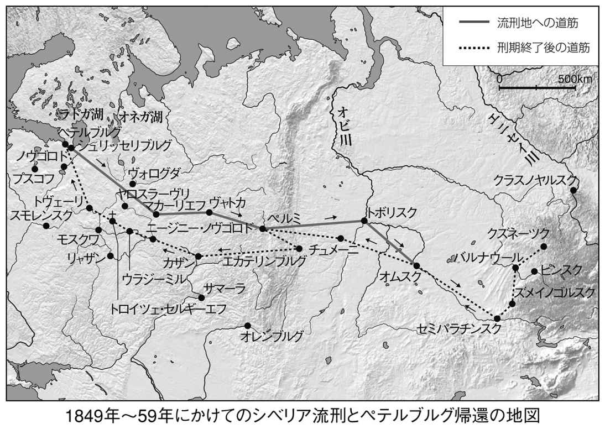
セミパラチンスクに到着してまもなく、ドストエフスキーに運命的ともいえる出会いが生まれる。相手は税関役人の妻マリヤ・イサーエワである。飲んだくれでうだつの上がらない役人の妻に対して、ドストエフスキーのうちに強烈な感情が芽生えた。おそらくそこには、一種の思い上がりにも似た憐れみが隠されていた。ところがやがて一家との別離が訪れ、二人は新しい赴任地クズネーツクに出発する。そしてそれから二か月後にイサーエフ急死の知らせがドストエフスキーのもとに届き、しかもマリヤに新しい愛人ができたらしいことを知らされる。イサーエフの死によってにわかに欲望の虫にとらえられた彼は、裁かれるのを覚悟で単身クズネーツクに乗り込み、愛人ヴェルグーノフとすったもんだを演じた挙句、ついにマリヤの承諾を勝ちとることに成功する。
一八五七年二月、クズネーツクの町で二人は結婚式を挙げた。証人となったのは、ヴェルグーノフだった。娘リュボーフィによると、結婚式の前夜、花嫁は元の愛人である「ろくでもない家庭教師」のもとで一夜をともにしたという。さらに二人の新婚生活は散々なスタートを切ることになった。結婚式を済ませ、クズネーツクからセミパラチンスクに戻る途中、ドストエフスキーを激しい癲癇の発作が見舞い、新妻のマリヤを死ぬほど驚かせたのである。
この時期、彼は、ペテルブルグへの帰還を求めて、アレクサンドル二世に直訴している。「私の病気はますます悪くなっていきます。発作を起こすたびに、私は記憶や想像力、精神力、身体の力を失うかのように思えます。私の病気の終わりは、衰弱、死ないしは発狂でしょう」。首都への帰還をいち早く実現するには、それなりの資力がいる。兄や知人に宛てた手紙を満たしているのは、シベリアに発つ前の、あの、文学一点ばりの、燃えるようなロマンティックな思いはなく、金の無心や懇願、本の売り込みといった実務的な内容である。ドストエフスキーは確実に変貌していた。
シベリアの地にあって、ドストエフスキーは小説の執筆からまったく手を引いていたわけではない。皇帝宛ての手紙で彼は、軍籍離脱やペテルブルグへの帰還のほかに、執筆活動の許可をもとめていた。皇帝直属第三課（秘密警察）の命令でいっさいの私的な文通を禁じられていたミハイルからもようやく「釈明」の手紙が届き、送られてくる雑誌をむさぼるように読む。自分のいないロシア文壇で今何が起ころうとしているかを正確に把握しようとしていたのだ。ペテルブルグとモスクワの両主都では、レフ・トルストイはさておき、ツルゲーネフ、ゴンチャローフ、ネクラーソフ、サルトゥイコフ・シチェドリンといった旧知の作家、オストロフスキーのような新進の劇作家たちが急速に名声を確立していた。他方、ドストエフスキーは、オムスクでの流刑地での三年以上もの年月の間にすっかりものを書く習慣を失っており、実際にペンを握ることができるようになってからも、何らかの作品を完成させることはできず、書くものすべてが草稿や走り書きの状態にあった。そのなかには、むろん、将来に『死の家の記録』として形をなすメモも入っていた。五六年の十二月、兄ミハイルに宛てて、「自分の文学的名声は過去の名声ではない」と信じてほしいと述べ、「七年間に材料はたくさん溜まった」と書いている。
そしてついに一八五九年三月、少尉の位を得て、退役許可が下ったドストエフスキーは、モスクワの北西百六十キロの町トヴェーリでの居住を認められ、六月にセミパラチンスクを出発する。ただし、皇帝直属第三課による監視は解けず、「ドストエフスキーが選定したトヴェーリ市の居住先を秘密監視下に置くこと、サンクト・ペテルブルグとモスクワ両県への立ち入りは禁止のこと」と秘密文書には記されていた。
希望に満ちたはずのトヴェーリでの生活でマリヤの病状は悪化し、ドストエフスキーは毎夜、彼女の傍らに付き添ったが、熱い恋はとうに終わっていた。一説によると、かつての恋人ヴェルグーノフはイサーエワを追ってこのトヴェーリまでやってきたという。その事実を、ドストエフスキーは果たして知っていただろうか。それはともあれ、このトヴェーリで彼は、ヴランゲリ男爵に首都ペテルブルグへの転入許可を得るために奔走してほしい旨を書き、他にも有力者の後押しがあって同年の十二月に無事ペテルブルグへの転入を果たしている。
ところでこのシベリア時代の終わりに、ドストエフスキーは、二つの長編小説に筆を染めている。一つは『伯父様の夢』であり、もう一つは『ステパンチコヴォ村とその住人』である。「検閲をひどく気にしながら」書かれたこれら二つの作品は、今日ではあまり読み返されることがないが、とくに後者は、「回心」後はじめて着想された小説ということもあり、表向きの明るさ、分かりやすさとはうらはらに、非常に複雑なサブテクストを内にしのびこませた作品、あるいは作家の本心がたくみに覆いかくされた作品という点で、見逃すことのできない重要な位置を占めている（ただし『伯父様の夢』が先に完成した）。皇帝権力による監視はしぶとく続き手紙はすべて開封されていたので、ドストエフスキーにしても、自分の小説に対する干渉を当局がやめないだろうことは容易に想像できた。
【テクスト７】 『ステパンチコヴォ村とその住人』（一八五九年）
ステパンチコヴォ村に住む退役軍人のロスターネフ大佐は、無類の好人物である。早くに溺愛していた妻に死なれ、癒しがたい思い出のなかに生きていたが、遺産相続によって農奴六百人を数えるこの村の大地主となり、八歳になるイリューシャと十五歳の長女サーシェンカを連れて村にやってきた。ところが、彼の屋敷はやがて文字通りの「ノアの箱舟」と化してしまう。というのも、将軍未亡人である彼の母親と、その母親の大のお気に入りで、なにゆえか「神秘的な尊敬」を払われている食客の道化的人物フォマー・オピースキンのわがまま放題となってしまったのだ。このフォマーの許しがなければ愛する息子の誕生日の祝いもできない始末である。フォマーの増長ぶりは日増しにひどくなり、ロスターネフばかりか下僕たちにたいする虐待にも及んでいく。村の住人を侮蔑しきった彼は、「私は、オルフェウスのように土地の気質を和らげるが、ただし歌でではなく、フランス語でだ」と豪語し、孤児の下僕ファラレイを教育しようとするのだがうまくいかず、「ばか者」呼ばわりする。ただし、愛娘のサーシェンカ一人だけはこのフォマーに抵抗し、その「罪」を暴き立て、幼いながら決闘を挑む気でいる。物語は、このロスターネフと家庭教師のナースチェンカとの間に結婚話が持ち上がったところから急展開する。かねてから二人の関係を汚らわしいと感じていたフォマーは、ありとあらゆる手をつくして妨害し、二人の秘密をばらそうとする。不本意の極みに立たされたロスターネフは、フォマーを玄関口から突き落とし、屋敷から追い払う。しかし、所詮、コップの中の嵐。耄碌した母親のたっての願いで、再びフォマーを屋敷に連れ戻すことになる。フォマーもなにやら自分で悟ったらしい。そしてまもなく、フォマーはロスターネフや村人たちの愛情と気遣いに守られながら、ついに幸せな死をとげる。
【講義３の１】 奪冠と二枚舌
カーニバル──明るさの正体
『ステパンチコヴォ村とその住人』を書き終えてまもなく、ドストエフスキーはある手紙のなかで、かなり欠点はあるけれど大きな長所もあって、「自分の最良の作品です」「もし読者が私のこの小説に冷たくしたら、きっと絶望してしまうでしょう」と書いています。前作の『伯父様の夢』の執筆で一時は中断を余儀なくされたものの、およそ二年の時をかけてじっくり仕上げただけあって、作品の出来映えにはそれなりに自信があり、実際に首都ペテルブルグでの成功を非常に気にかけていました。しかし、一般読者そして批評家の反応はおおむね冷たいものでした。不評の理由の一つとして挙げられるのは、雑誌に発表された際、ドストエフスキーの名前フョードルが明示されなかったため、読者の一部には、兄のミハイルの作品と勘違いした向きも少なくなかったことが挙げられます。
しかし、なんといっても驚くべきなのは、この小説全体に溢れかえる牧歌的ともいえる明るさ、バフチンが前作の『伯父様の夢』と比べて「ずっと深く本質的」とみなしたカーニバル化、その猥雑な世界です。受難の十年間を感じさせないその明るさの理由とは何でしょうか。作家自らが述べていますが、ゴーゴリやコジマ・プルトコーフの小説や詩のパロディとしてあることも疑えないでしょう。また、流刑からの解放によってもたらされた精神状況も当然考えられてしかるべきでしょう。しかし、他方で、『伯父様の夢』と同様に、過剰に検閲を恐れていたため、意識的に作りだされた明るさと考えられないこともありません。なによりもこのロスターネフの無類の好人物ぶりに驚かされます。ドストエフスキー百科事典を編纂したナセートキンという研究者は、「ドストエフスキーの世界に登場するすべての善良で無私無欲な登場人物のなかでもっとも善良」と書き、ただし「病理的な好人物（２）」と書き添えているほどです。
といっても、この好人物が小説の主人公というわけではなく、かつて「真理のために」苦しみを受けたことがあり、モスクワでも一時は文学をやった過去のある、今は五十に手が届こうという文学崩れ、自称預言者にして道化のフォマー・オピースキンに多くの関心が委ねられていくのです。フォマーは、結局は何ひとつなしえずに、ついには将軍一家にあたかも宮中道化のような役回りで居候させてもらうのですが、その道化がいつのまにか村全体に君臨する王に変貌してしまう。バフチンは次のように考察しています。
「ステパンチコヴォ村の生活はすべて、かつては居候の道化で、いまではロスターネフ大佐の屋敷の無制限な独裁者となったフォマー・フォミチ・オピースキンを中心に、つまりはカーニバルの王を中心に回っている。したがってステパンチコヴォ村の世界は一から十まで、くっきりと鮮やかなカーニバル的性格を帯びている。それは正常な軌道から逸脱した生活であり、ほとんど《あべこべの世界》である（３）」
私の頭のなかに、「無制限の独裁者」、「あべこべの世界」という言葉によって連想されるテーマが行き交います。すなわち、父殺しのテーマです。バフチンが好む「奪冠」という概念こそ、その本質に通じているのでないかとさえ思えるほどです。ところが、この、『ステパンチコヴォ村とその住人』の世界は、バフチンのとらえた「あべこべの世界」をさらに転覆させる独自の仕掛けをはらんでいるのです。
では、そもそも、作家の道をはずれ、生活苦から食客になりさがったフォマー・オピースキンとはだれなのでしょうか。そして、その、とどまるところを知らぬシニシズム、傲慢、支配欲はどこからくるのでしょうか。自尊心とコンプレックスのなかで堂々めぐりをするこの未来の地下室人をドストエフスキーはどう見ているのでしょうか。フォマーの口ぐせは、何より「哀れなフォマーは侮辱されています」であり、自分がほんとうに尊敬されているのかどうかを知りたいと願って、逆に暴君のように振舞い、相手を迫害し、屈従を強いる。ドストエフスキーは口を極めるようにして、フォマーの性格を描写しています。「まったく無価値で、きわめて小心な、社会から間引かれた人間、誰にも必要がなく、まったく役に立たず、醜悪きわまる爪はじき者のくせに、自尊心は限りなく強く、しかもその病的なまでに苛立つ自尊心をせめていくらかでも正当化しうるようなものは、まったく何ひとつ賦与されていない人間」──。
白い牡牛の夢
物語のなかで、特に興味を引くのは、中間部に出てくるファラレイという美しい少年のエピソードです。生まれ落ちるが早いか両親に死なれ天涯孤独となったファラレイは、ことのほか美しい容貌ゆえに将軍夫人の格別の愛着にあずかり、下僕として屋敷に住みこむようになりました。ところが、フォマーにはそれがどうしても気に入らず、なかば嫌がらせに少年にフランス語を習わせようとするのです。ロシア語の読み書きさえろくにできない少年にとってフランス語など高嶺の花、暇さえあればカマリンスカヤという民族舞踊に熱をあげるばかりです。フォマーは少年を「白痴（ばか）」呼ばわりしますが、しかし、ドストエフスキーがこの少年に見ていたのは、「聖痴愚」の面影でした。
さて、このファラレイ少年を悩ましているものが一つあります。その悩みとは、毎晩のように彼を訪れてくる「白い牡牛」の夢です。少年は、禁じられてもかまわず、毎朝、それをフォマーに話に行くのです。フォマーはそんな「百姓じみた」夢は見るな、もっとましな夢、貴婦人の夢でも見ろと命令します。
「寝床につくとき、ファラレイは涙ながらにそのことを神に祈り、あの呪わしい白い牡牛を見ることなんかないように長いこと考えるのだった。だが、人の願いというのは裏切られやすいものだ。翌朝、目をさますと彼は、またしても一晩中、あの憎むべき白い牡牛が夢に出たまま、美しい庭を散歩する貴婦人など一人も夢に現れなかったことを思い出してぞっとするのだった」
毎朝、自分のところにやってきては、白い牡牛の話を聞かされるフォマーは、ファラレイのそうした無礼な振舞いに怒り、そのことを言い立ててロスターネフをいびり、お付にしておくべきではないと言い張ります。フォマーの怒りを案じた女中頭は、フィラレイからその不吉な夢を払おうと、聖水を振りかけてやったりするのですが、いっこうに効き目はありません。
『ステパンチコヴォ村とその住人』は、全体として地味な小説ですが、奥行きは意外に深いのではないでしょうか。何よりも安定した筆致にそれがあります。ゴーゴリ風の、突き放したユーモアもさることながら、狂気じみた猜疑心のとりこになる道化のフォマーが暴君となるというプロセスに、一つの政治のドラマを読みとることもできると思います。しかし、この小説が研究者の関心を集めてきた理由の一つは、前に紹介したこのエピソードにあります。そして、その謎を解き明かしてみせたのが、ロシアの研究者ロトマンでした。フォマーのいたぶりの対象となるファラレイは、「子羊のように善良で温厚である」とされています。その彼が、痛めつけられるのを承知で、フォマーに聞かせる「白い牡牛」の夢の意味するところとは？ ドストエフスキーがこの「白い牡牛」の夢を通して暗示しようとしていたのは、独裁と地下室のテーマなのです。住人たちがこの話に聞きとったのは、たんなるロシアのおとぎ話でしたが、おそらく作家崩れのフォマーは、たぶん、その隠された意味に気づいていたにちがいありません。だからこそ、怒ったのです。
ロトマンによれば、ドストエフスキーは、このエピソードに、旧約聖書のなかの「ダニエル書」のモチーフを仕掛けていました。ダニエルとは、バビロニアの王ネブカドネザルによって、紀元前六〇六年にエルサレムからバビロンに移された捕囚の一人でした。そして「ダニエル書」との関連で浮上するのは次のような類似点なのです。
一、ネブカドネザルはユダヤから連れ帰った子どもたちから美しく健康な少年を何人か選び、彼らの名前を改め、教育を施し、バビロニアの慣習と宗教を学びとらせようとした。その一人ダニエルはそれを厭い、それがために迫害を受けた。
二、ネブカドネザルは忌まわしい夢をなんども見るが、しばしばその夢を忘れ、バビロニアの賢者たちにそれを語らせては夢判じを行わせた。しかし彼らは王を失望させ、殺される。そこでダニエルに白羽の矢が立ち、ダニエルはその夢をみごとに復元したあげく、解読し、王朝の衰勢を物語る。やがて王に知恵がもどり、自分の傲慢を悟り、支配は復活し、王朝はよりいっそう高く聳えたつことになる（４）。
テクストをもう一度読んでみると、この物語がどれほど「ダニエル書」のエピソードを正確になぞっているかがわかるでしょう。ダニエルはもちろんファラレイです。少年ダニエルは、美しく、ことのほか踊りを好んでいました。ドストエフスキーは、ステパンチコヴォ村に君臨する食客、そのとどまるところを知らない傲慢の持ち主であるフォマーをネブカドネザル王に重ねることで、その来るべき未来を暗示したといえるのです。ダニエル＝ファラレイの夢は、じつはネブカドネザル＝フォマーの夢でもあるのです。ロトマンによれば、フィナーレでのフォマーの死は、その権力の崩壊を映し出してみせた、つまり、ファラレイの夢は、じつは、フォマーの速やかな死をも予言するものだったと述べています。
では、「白い牡牛」のイメージはどう関わっているのでしょうか。「ダニエル書」では、草原で草をはむ牡牛にネブカドネザルがなぞられています。しかし、謎の夢に出てくるのは動物ではなく、純金の頭をもつ、巨大な、光り輝く、恐ろしい外観を持った彫像なのですね。夢のなかでその彫像が粉々には壊されるわけです。つまり王朝の崩壊です。
ロトマンによれば、この「ダニエル書」は、ヨーロッパの文学に多く転用されたモチーフであり、ロシアでも中世の詩人や劇作家がなんどもこのモチーフを使用してきました。しかし、ドストエフスキーにとっては、それはむしろ、ヴォルテールへの関心とのかかわりのなかで浮上してきた問題意識でした。グロスマンによると、シベリア時代の終わり、ドストエフスキーは友人にヴォルテールを送ってくれ、と懇願しています。果たしてそのなかに、ヴォルテールの有名なおとぎ話「白い牡牛」が含まれていたかどうかは確かめられません。ともあれ、ヴォルテールは、聖書とギリシャ及びローマ神話、さらにはエジプト神話を重ねながら、ネブカドネザル王に「白い牡牛」のイメージを重ねあわせたのです。「ネブカドネザルはしばしば自分の夢を忘れた」と登場人物に語らせることで、まさに死や破滅も恐れぬ彼の傲慢を表してみせたのです（５）。
ここで一つの問いを提示しなくてはなりません。「白い牡牛」のエピソードは、たんに文学的な味わいに多少とも色をつけるスパイスでしかなかったか、あるいはいわゆる政治権力に対する二枚舌、ロシア語でいう「イソップ語」の隠された作為であったのか。
万事めでたしのフィナーレからして、政治権力と作家の自由をめぐる隠された論争といったレベルに引き上げるべき性質の問題ではないのかもしれません。しかし、この小説の執筆にあたって、彼が極度に検閲を意識していたことを考えあわせても、みずからの舌の裏に毒を忍ばせていたことは疑いようのない事実です。フォマーに夢を告げるファラレイの役割は、まさに、プーシキンの『ボリス・ゴドゥノフ』に登場する「聖痴愚」に酷似していきます。では、フォマーを玄関口から突き落とし、屋敷から追い出したロスターネフとは、何者なのでしょうか。彼は、神なのでしょうか。無類のお人よしぶりに、あるいは、当時の皇帝をイメージしていたのでしょうか。
道化にもモラルがある
ドストエフスキーは曖昧さを許容する人間でした。プラスにもマイナスにも極端にぶれながら、最終的には針は常に中心を求めていたといってよいでしょう。ですから、シベリアでの「回心」をそれなりに明らかにしながらも、内面の奥深くにわだかまる迷いを表出せざるをえませんでした。検閲の目を意識しつつも、そうせざるをえなかったのです。では、ドストエフスキーはこの作品の執筆が危険だとはみなさなかったのでしょうか。それとも、これによって、自分の「回心」を公けにできると考えたのでしょうか。見方は分かれると思います。たとえば、自称預言者であるフォマーには、非常に厳しいモラリストとしての一面が現れています。若いナスターシャとの結婚をもくろむロスターネフの邪魔に入り、ついには玄関から突き落とされるフォマーですが、ロスターネフとの和解の場面で、自分の高潔さをこれみよがしに語るシーンがあります。
「あなたの抑えがたい色欲への欲求を知っていましたし、その色欲をたとえ束の間でも満たすためならすべてを犠牲にしかねないことも分っておりましたから、わたしは、この世にもまれなる清らかな娘の行く末を思い、にわかに、恐怖と不安のどん底に突き落とされたのです」
フォマーのこの言葉は複雑です。放蕩よりもむしろ結婚を罪悪視した分離派のまなざしさえ感じ取れるようです。いや、父的存在に対する警戒の念に近いものさえ、と同時に、性愛そのものに対する作家自身の根本的な懐疑さえ感じとれるのです。この視点から見るロスターネフは、別の顔をしています。それは、彼のようなお人よしにおいても、日常の愛が情欲の悪意に反転しかねないこと、他方で、尊大な自尊心にずたずたに切り裂かれ、他者への屈服を求める横暴な食客にも、人知れずヒューマンな感情が宿っているかもしれないこと、そうした相対主義的なまなざしのあかしです。ですから、当然、この視点からみるフォマーも顔つきが変わってくるのです。すなわち、シラー主義者のなれの果てである、ドストエフスキー自身の面影です。フォマーがフランス語に拘泥するのもその証と考えてよいでしょう。そしてそこには、あらたに「地下室人」としての相貌さえ浮かびあがってくるようにも思えます。そのフォマーも、最後にはようやく角が取れ、ロスターネフとそのいいなずけの結婚を寿ぎ、仲人役の立場に立ちます。そして、このフォマー・オピースキンの死をどうとらえるか、という点でも意見は大きく分かれるでしょう。
「フォマー・フォミーチは、いま、将軍夫人の傍らの墓に眠っている。その上には、哀れっぽい引用やら賛辞やらを一面に鏤めた白い大理石の高価な記念碑が立っている。エゴール・イリイチ（ロスターネフ）とナースチェンカは散歩からの帰り道にときどき教会の墓地に立ち寄っては恭しくフォマーに膝を折るのである」
まさに、プッサン風のスラブ・アルカディアの世界です。先ほども述べましたが、フォマーをネブカドネザルになぞらえたロトマンは、フォマーの死を一つの罰、一つの宿命ととらえました。結びの冒頭に、帰還した「フォマーの勝利は完璧かつゆるぎないものとなった」とあり、道化の王は再び村に君臨するのですが、その命脈はとうに尽きています。
二枚舌、または偽装された道化芝居
幾重にも偽装された道化芝居──、『ステパンチコヴォ村とその住人』を一口でまとめるとしたら、このような言い方ができるかもしれません。この偽装の深みに、ドストエフスキーの本心はしまいこまれているのです。ただし、彼に本心といえるものがあったとしての話です。しかし、率直な印象を述べるならば、この小説には、やはり、権力への嫌悪と権力へのノスタルジーという双方の力が同居し、微妙にバランスをとっているように思われてしかたありません。それとはまったく逆に、限りなくお人よしの地主であるロスターネフにロシア皇帝を、食客であるフォマーに宮廷道化たる自分を重ねあわせようとする意図も感じられます。フォマー・オピースキン（）の命名にその意図が込められているのかもしれません。もともと、フォマーとは、トーマスのロシア語名です。聖書に詳しい方ならご存知でしょう。キリストの復活をしかと信じられず、その胸元の傷に触れた「不信心者」トマスです。ドストエフスキーはみずからの自虐と懺悔をこの十二使徒の一人になぞらえていました。ロシア正教の国家であるロシアにあって、彼は不信心者として生きました。これは、「無類の好人物」である皇帝に対する懺悔でもあります。フォマーとドストエフスキーのダブルイメージは、次のような語感によっても裏づけられるはずです。すなわち、グラフォマーン・オピースキンすなわち書記狂オピースキン。しかも、オピースキンとは「ものを描く人」の意味ではありませんか。ここにみる懺悔とは、このように言い換えることができるでしょう。不信心者たる私は、いや、そもそも作家などというものは、帝政ロシアの食客にして道化にすぎない、だからその思い上がった男をどうぞ許してやってほしい、という意味です。この時、ロスターネフには、さまざまな意味づけが重ねられていくようです。皇帝ないしはキリストとしての意味づけです。
しかし、同時にこのフォマーは、少なくともファラレイから見るかぎり、恐るべき暴君です。ドストエフスキーは彼の見る夢をとおしてネブカドネザルを連想させるという裏技まで披露してみせました。食客とネブカドネザルというアンビバレンスをとおして垣間見ることのできる姿とは何でしょうか。察しはついたことでしょう。そうです、ロスターネフとフォマーの分身関係、あるいは共犯関係なのです。これは恐るべき二枚舌です。そしてこの分身関係がはらむ曖昧さとは、じつは父なるものの観念が、いや、善と悪が、往々にして反転しやすいことをドストエフスキーが見抜いていた証ととらえることができるのです。この認識に立つかぎり、ドストエフスキーは永遠にゆれ動かざるをえなくなります。そしてここに、バフチンのいうポリフォニーの誕生がある、といっても過言ではないのです。
【テクスト８】 『死の家の記録』（一八六〇年）
アレクサンドル・ゴリャンチコフ──。妻殺しの罪でシベリア流刑となった一貴族の死後、監獄生活を綴った記録が発見された。悪臭ふんぷんたる死の家で、多くの罪人との共同生活を強いられ、敵意と侮蔑にさらされて生きる。頭を半分剃られ、寸づまりの囚人服に着替えさせられた主人公の一日が始まる。そこには鉄の鎖で縛られた徒刑囚がロシアの隅々から、あらゆるタイプの犯罪者が集められてきた。殺人鬼、密輸業者、贋金作り、幼児虐待者、強盗......。老朽し、今にも崩れ落ちそうな木造バラック、狭い寝板の上で三十人ほどの男が寝起きする。だが、そこに展開していたのは、思いもかけず自由な生活だった。自由と強制のパラドクスをめぐって、独特の洞察が加えられていく。凶悪犯を二度と立ち上がれないようにするには、「労働を徹底的に無益で無意味なものにしさえすれば、それでよい」。流刑地には、それこそありとあらゆる種類の犯罪者がひしめいている。主人公は書いている。
「すでに述べておいたことだが、数年の間、私はこれらの連中と一緒にいて、ほんの少しの悔いのしるしも、犯した罪に対するわずかな苦悶の色もみたことはなく、彼らの大部分は心のなかで自分は絶対に正しいとみなしていた。事実そうなのだ。......監獄やら強制労働のシステムが犯罪者を矯正できないことはいうまでもない。......監獄やら強制的な労役が犯罪者のなかに育てるのは憎しみであり、禁じられた快楽への渇望であり、恐るべき軽はずみだけである」
主人公はこうして、監獄内のスケッチとともに、個々の囚人たちの来歴をさりげなく紹介しながら、日々の移ろいを記録していく。第一に風呂場のシーン、第二にクリスマスでの芝居、第三に病院内での出来事がそれぞれ叙述の流れに大きなうねりを築いていく。また、物語の中途には、「アクーリカの亭主」と題する、エピソード風の独立した章が設けられている。ドストエフスキーのその後の人物造型に圧倒的な影響力をもったと思われる罪人たちを紹介しておこう。
スシーロフ──主人公の身の回りの面倒をこまごまとみる農奴出の青年。「非常にみじめで、まったく人のいいなりで、いじけきり、われわれのだれ一人なぐったわけでもないのに、まるで叩きのめされたような若者だった」。シベリア護送中に、赤いシャツ一枚と一ルーブリ銀貨一枚で、「特別監房」行きの囚人仲間の一人と刑期を交換し、身代わりになる。「この事実がどれほど不思議なものに思えようと、現にそのとおりで、私の時代にもまだシベリアに護送されていく囚人たちの間でりっぱに存在し、伝説に包まれ、ある形式で定められていた」。
ガージン──残酷この上ない連続幼児殺しのタタール人。怪力の持ち主で、ヘラクレスもどきの頑丈な体、ばかでかくて醜悪な頭部をもつ。獄内では酒屋を営み、貯めこんだ金を年に一度叩きつくし、猛烈な暴れ方をみせる。「私はともすると、目の前に大きな、人間の身の丈ほどもある化け物のような蜘蛛を見ているような気がした」「人の話だと、彼は何よりも幼い子どもを切り殺すのが好きで、それもたんに快楽を得るためだった。どこか適当な場所に赤ん坊を連れて行き、はじめはおびえさせ、いたぶり、この哀れな幼い生贄の恐怖や震えるさまをたっぷり楽しんだうえに、ゆっくり、じわじわ、舐めるような快楽を味わいながら切り殺すのである」
アレイ──ダゲスタンから来たタタール人の若者。兄弟六人して、富裕なアルメニア商人を待ち伏せし、護衛と商人を皆殺にして金品を奪った。アレイには情状が酌量され、四年の徒刑が下された。主人公は彼に新約聖書を教科書がわりにしてロシア語の読み書きを教えた。「この少年が監獄内での生活をとおして、あれほどに柔和な心を保ち、あれほどにきびしい誠実さと、素直さと愛らしさを育て、荒んだり、堕落せずにいられたか、想像するのもむずかしい。......彼はまるで処女の娘のように、純潔で、監獄内での忌まわしい、破廉恥な、汚らしい行為や、不当な暴力行為をみると、その美しい目に怒りの火が燃え上がり、それによってますますその目は美しくなるのだった」
Ａ（アリストーフ）──根性の腐った、低劣きわまるスパイと密告の常習者。元貴族。獄内の動きを逐一密告し、当局の庇護を受けている。入獄する前、Ａは、ペテルブルグで淫蕩にふけるため、罪のない人々までも巻きこんで密告を繰りかえし、十年のシベリア流刑となった。「この男は、人がどこまで堕落し、卑劣になれるか、苦労も後悔もなしに、人がどれほどまでどんな道徳的感情をも殺すことができるかという、もっとも嫌悪すべき例である」「私はこの汚らわしい男を一つの現象として思い出すのである。私は何年か、人殺しや極道ものや札付きの悪人とともに過ごしてきたが、このＡほどの完全な精神的堕落と、手のつけられない堕落と、恥知らずな低劣さにはお目にかかったことがないと断言できる」。
ペトロフ──強制徴募の少年兵あがりで、全囚人中、もっとも向こう見ずで、命知らずと恐れられる。軍事教練の際、自分をなんども殴ってきた連隊長を、散開した兵士たちの目のまえで刺殺した。監獄では、鞭刑に呼び出された際に少佐の殺害をたくらむ。「しっかりとその気になりさえすれば、彼はまよわずに逃亡したにちがいない。ペトロフのような連中を分別が支配しているのは、彼らがそういう気にならない間だけである。じっさいこの地上に彼らの願望を妨げるようなものは何一つとしてないのだ」。
オルロフ──逃亡兵あがりの強盗。「彼は顔色一つかえずに老人や子どもたちを斬殺してきたという世にもまれな悪人で、おそるべき意志の力と自分の力を誇りにしている男だった。彼は多くの殺人の罪を問われ、列間鞭刑の宣告を受けたのである」「断じて私はいうことができるが、わが人生において、わたしは一度も、オルロフほどに強い、鉄のような性格をもった男をみたことがない」「彼のなかに見ることができるのは、計り知れないエネルギーであり、行動の欲求、復讐の欲求、自分で決めた目的を成し遂げたいという欲求だった」「私が彼の良心にさぐりをいれ、何がしかの悔いを見つけようとしていることに気づくと、彼はさも軽蔑しきったように傲慢な態度でじろりとこちらを一瞥するのだった」。
【講義３の２】 回心、神をはらめる民
流刑地のカーニバル
シベリアの「死の家」での生活が、三十代のドストエフスキーに徹底して教えたのは、近代西欧の合理主義的な哲学と、その上に培われたロマンティックな理想主義には大きな限界があるということでした。といっても、皇帝権力によってなかば暴力的に挫折させられたペトラシェフスキーの会の理想は、そのまま空しく潰え去ったわけではありません。信念が滅びるときは、一挙ということはありません。潮の満ち引きのように、緩急のうねりを繰り返しながら、消滅していくのです。他方、ドストエフスキーのうちに、悪の本能ともいうべきものを目覚めさせたのがやはり「死の家」であったことは疑いのないことです。流刑地がいかに彼の精神を浄化に導いたとはいえ、そこには一種の美化が働いていたことは間違いなく、流刑地の罪びとたちと枕を並べて生活しながら、彼は、悪の本質を考え、悪に対する想像力を研ぎ澄ましていったと考えるのが自然だと思います。『死の家の記録』でのドストエフスキーは雄弁です。しかし、現実は果たしてどうだったのでしょうか。彼はそれまで、犯罪ないしは悪を、ロマンティックな想像力のプリズムを通して見つめてきたにすぎません。小説のなかのいわば「彼岸」での出来事だったのです。シベリアに流刑となるまで、彼が小説のなかで犯罪を扱った例は、わずかに『家主の妻』の一編です。しかも、そこに描かれた犯罪は、ゴーゴリの幻想小説からの強い影響もあり、伝説と事実の境界線にさながら蜃気楼のようにゆらめく世界でした。しかし「死の家」で、彼は、犯罪と犯罪者の赤裸々な真実を目の当たりにすることになり、『家主の妻』の主人公たち、ムーリンとカテリーナの面妖な世界にひそむグロテスクを、まさに現実にわがものとしたのです。
『死の家の記録』は、全体で二部からなっています。第一部では、オムスク要塞監獄での生活の一部始終が、すなわち作業場やイルトゥイシ河岸での苦役、さらに囚人たちの外貌から一挙一動が描かれています。監獄で迎えるはじめての朝、乱痴気騒ぎ、囚人仲間の身の上話など、リアリズムの極地ともいうべきみごとなスタイルで描かれており、ドストエフスキーの並々ならぬ描写力をうかがわせるものです。作者の目は、やがて、監獄生活での一か月から、徐々に叙述の幅を広げていきます。第二部は、残りの数年間の出来事やエピソードをコラージュ風につなぎ合わせたもので、時間的な脈絡は必ずしも定かではありません。最初の一日、最初の一か月とここでもまた時間的な視界が広がるにつれ、描写もより一般化されたものへと転じていきます。アングルを変え、見慣れた光景を異化し、さらに新しい光のもとに照らし出す手腕はなかなかのもので、ドストエフスキーの小説が確実に一つの成熟を迎えつつあることを示しています。このリアリズムの手法への傾斜は、彼が初期の、ゴーゴリ風の幻想とアイロニーを捨て、叙事的な作者へ変貌しつつあることを暗示するもので、この作品が発表当時から高い評価を受けたのもうなずけるでしょう。また、用いられている文体も、じつに多層的であり、ロシア全土から集められた囚人たちの方言は、まさに多声的かつポリフォニックな響きをかなであっていきます。
作品全体を貫くテーマは一つです。自由とは何か──。ドストエフスキーはその草稿に、「希望に燃え、生活と信仰の意欲に満ちた人間が、監獄に入ってきたためしは、いまだかつてない」と書いていますが、彼の目はおそらくその一点を見つめていました。ところが、『死の家の記録』に描かれた世界は、囚人たちの生態といい、犯罪のエピソードといい、驚くべき明るさに満ちています。その光源を探るうちに、私たちは自由というもののもつパラドキシカルな本質に気づかされます。抑圧のなかでこそしぶとく光を放つ自由、闇と光のコントラストのなかにこそ自由の本来の輝きはある。ドストエフスキーはあたかもそのように言いたげです。印象的なのは、ドストエフスキーと同時代の作家ツルゲーネフが、「ダンテ風」と呼んだ「浴場」のシーンです。
「浴室の扉を開け放ったとたん、地獄に落ちたかと私は思った。想像していただきたい。奥行き、間口ともに十二歩ぐらいの浴室にともすると百人、いや、少なくとも八十人ぐらいの男が一度に詰めこまれるのである。というのも囚人たちは全体で二回に分けられたのだが、われわれの班は全部で二百人ちかくがこの浴場に連れてこられているからである。目を刺すような蒸気、煤、どろどろした湯垢、足の踏み場もない狭苦しさ。（......）体を洗うものはわずかだった。庶民はお湯や石鹸で洗うということをほとんどしない。彼らはただ恐ろしいまでに蒸気で蒸され、それから冷たい水をざぶんと浴びるのである。それこそが蒸し風呂というものなのだ。棚の上で五十束ほどの白樺の枝がいっせいに上下していた。だれもかもが気が遠くなるまで体を叩くのである。蒸気が絶え間なく送られてくる。それはもう熱いなんてものではなく、まさに地獄の釜であった。床をひきずる足枷の鎖の音にまじって、大声やら笑い声が轟々と響き渡るのである。（......）囚人たちの剃った頭と、真っ赤に茹った体がいよいよ醜く見えた」
自由の不在がもつ意味を、つまり自由がない以上、個人の存在はありえないということの悲劇的な意味を、一種のカーニバル的な明るさとともに描きあげた小説は、少なくとも十九世紀文学を見るかぎり、他にありません。
「死の家」でドストエフスキーが経験した犯罪者たちとの出会いは、人間に対する彼の観察力をいやがうえにも研ぎ澄ましていきました。それまでの彼が、世界に同化する力を持ち味としてきたとすれば、今、彼に要求されているのは、世界を徹底して見ることです。ゴーゴリ風のロマン主義から新たな次元のリアリズムへの移行は、同化から対象化、対象化から思索への道のりを示唆しています。ドストエフスキーの記述は、オムスク監獄の丹念な描写から、自由さらには個人といった理念の助けを借りた社会心理学的な洞察へ、そこからさらに、善と悪をめぐる形而上学的な探求へと、徐々に深まりを見せていきます。
オルロフとキリスト
ドストエフスキーは、じつに素朴な視点から、囚人たちを善人と悪人のカテゴリーに分類しています。善人の典型として彼を魅了するのは、アレイというタタール人の若者です。他方、彼が口をきわめて罵るのは、貴族出身のＡ（アリストーフ）という密告屋です。「卑劣さ」と「悪」との間には、計り知れぬほどに深い溝があるようです。人を密告することは、「悪」を超えた「悪」といってよいものなのです。少し先走りした言い方をすれば、このテーマは、『カラマーゾフの兄弟』の中心をも貫く規範となるのです。そしてこの「卑劣」と際立ったコントラストをなしているのが、絶対的な強者としての殺人犯たちです。悪のエッセンスを体現する「強者」の存在たちに対する、ほとんど異様とも思える肩入れには、カリスマに対するロマンティックな待望のようなものさえ見てとれるほどです。その代表的人物ともいうべき一人に残酷このうえない幼児殺しのガージンがいます。「私はともすると、目の前に大きな、人間の身の丈ほどもある化け物のような蜘蛛を見ているような気がした」という言葉は暗示的です。というのも、後年の大作、『罪と罰』のスヴィドリガイロフや『悪霊』のスタヴローギンを描写する際に、「悪」とサディズムのシンボル的なイメージとして、この「巨大な蜘蛛」のモチーフが何度も用いられるからです。
モチューリスキーは、こうした犯罪者との出会いはドストエフスキーの精神生活にとって「決定的事件」となり、過去の信念はカルタの家のように崩壊した、と述べています（６）。そうです、ルソー主義も、ヒューマニズムも、ユートピア思想も、すべて滅びたのです。しかし、一挙にと言うことはできません。ほんとうの意味での転向というのは、やはり、成熟と醸成の一つの結実なのです。では、ドストエフスキーは理想主義の廃墟からどこに向かうのでしょうか。『死の家の記録』の最終章で彼は驚くべき結論を披露します。
「ここまできたら、もう何もかも言っておかなくてはならない。たしかにここに暮らす民衆は並外れた人々だった。ことによったら、わが国の民衆全体のなかでも、もっとも才能あふれる、もっとも強力な人々かもしれない。だが、この力づよい人々がむざむざと滅びてしまったのだ。異常に、不法に、取返しもつかないかたちで滅びてしまった。では、だれの罪なのか」
ここにもたしかに美化があると私は思います。しかし、これはけっしてレトリックではありません。この発見こそは、ドストエフスキー文学のよりいっそうの深化を約束する動力となったものだからです。流刑地に葬られた犯罪者を「もっとも才能あふれる、最も強力な人々」と言ってのけるにはたいへんな勇気がいります。では、ドストエフスキー自身はその「強力な」人々のなかの一人だったのでしょうか。
そもそもここでいう「才能」とは何でしょうか。才能とはあくまでも肯定的な何かに向けて発揮される創造的な力ではないでしょうか。しかるに「死の家」の才能たちとは、むしろ力の観念そのものであるように思います。では、彼らのなかで最大の才能の持ち主とはだれか。もしも問われたら、私は迷わずに刑事犯オルロフと答えるでしょう。自分の力をどこまでも確信し、良心のかけらすら感じず、平然と人を殺しつづける「彼岸の公爵」──。このオルロフこそは、ドストエフスキーが後に「地下室人」と呼ぶ自意識家たちが、永遠の羨みと、恐怖の念をささげるカリスマです。オルロフを前に、ドストエフスキーの博愛主義的な幻想はたちまちのうちに凍りつきました。流刑地でオルロフと向かい合った彼は、もしかすると、ゴルゴタの丘から生還したキリストを意識していたかもしれません。ポメランツという研究者の興味深い指摘を紹介しましょう。
「それ以来、ドストエフスキーは、自分の主人公のほとんどそれぞれに、刑事犯オルロフの特徴をみ、オルロフをしかとみすえ、視線を放さず、オルロフ自身の目をも伏せさせるキリストを探しもとめるのだ（７）」
そう、ドストエフスキーにとっては、オルロフとキリストが世界の相反する二極として存在している。もしもそう仮定するなら、その二極の対立の図式は次のようなものになるかもしれません。カリスマ的な強者としての悪と、理想主義者たる善。であるなら、悪の担い手であった民衆にもはや社会主義もユートピアも無用となります。しかし、彼ら民衆に共通するものがあります。それは「才能」です。理想主義時代のドストエフスキーであれば、オルロフを憎しみの対象とすることに躊躇いはなかったでしょう。しかし、今の彼は違います。彼はまずその力の現前そのものに驚きの目を瞠る。「美しい」と感じる想像力がある。彼らには、上からの力づくの矯正は意味をなしません。狂気と才能を隔離し、封じ込める流刑地は人間を救済しえない。革命などもってのほかだ。肝心なのは、キリストに究極の理想をみる「ドゥホーヴノスチ」（霊性）の力です。西欧の合理主義に立脚した革命の理想をもってしては民衆は救えないということです。キリストの名において魂を変革しなくてはならない......。
第四講 地下室の誕生
【事件と証言４】 ファイル「『エジプトの夜』公開朗読事件」（一八六一年）
「われらがサド」
一八六一年、ドストエフスキーは雑誌『ヴレーミャ（時代）』五月号に「ロシア報知に答える」と題する一文を発表し、プーシキン最晩年の未完の小説『エジプトの夜』について興味深い言及を行っている。『エジプトの夜』はロシアに来たイタリアの詩人が、社交界の席上、人々の求めに応じて即興詩を朗読し、大喝采をもって迎えられる話である。一夜の歓楽のために自分の命を投げだす男がいればその男に愛と快楽の限りを授けようと宣べたクレオパトラの逸話に基づき、プーシキンはこれを倒錯的なエロティシズムで満たした小説に仕立てようとしたが、早世によってその願いは断たれた。
当時、この小説が人々の関心を呼んだのは、ウラルの町ペルミに住むエヴゲーニヤ・トルマチョーワという五等官夫人が人前でこの小説を朗読するという「椿事」が起こり、その話題を中央の雑誌が面白おかしく取り上げたことから、女性解放をめぐる一大センセーションに発展したためであった。「婦人解放事業は開始された。ロシアの一婦人、五等官夫人がクレオパトラの姿で公衆の前にあらわれ、『命を賭して彼女の一夜を購うべし』と朗読した、しかもその朗読たるや！（......）彼女の大きな目は、時には燃え輝いたかと思うと、時には光を失って消えた......（ああ、実に素晴らしかったにちがいない！）彼女の顔は、あるときは優しい情熱的な表情を、ある時は、焼けつくような、またある時は、仮借ない峻厳な、ある時は誇り高く挑むような（！）表情を浮かべて、たえず変わった。命を賭しての一夜を購うべしというクレオパトラの句に続く詩句『そして侮蔑の視線を自分にあこがれる男たちにめぐらす』は、実際に、侮蔑と意地悪い嘲りの表情で朗読された......」
しかし、ドストエフスキーがこの事件に惹きつけられたのは、女性解放の是非をめぐる議論ばかりではなかった。論文の後半を読むと明らかになるが、作家は、クレオパトラという一人の退廃的な女性の魅力のなかに、あるいはたった一夜の快楽のためにおのが命を投げ出そうという男たちのマゾヒスティックな快楽願望に、同時代のロシアの精神的荒廃に通じる何かを感じ、やがてはイエス・キリストの登場に道を開かざるをえない終末の気配を見たのである。
「未来には何一つないため、いっさいを現在から求めなければならず、人生をひたすら日々のもので満たさなくてはならない。すべては肉体へ消え、肉体の快楽へと投げ出される。そして手に入らない至高の魂の印象を満たすため、感官を刺激しうるありとあらゆるもので自分の神経を、自分の肉体を刺激するのだ。もっともグロテスクな嗜好、このうえなくアブノーマルな現象が、しだいにごくありふれたものになる。自己防衛の感覚さえ無くなってしまう。クレオパトラとはこうした社会を代表する女性なのだ。クレオパトラにとってはもはや退屈であるが、この退屈が彼女のもとにしばしば訪れる。よりグロテスクなもの、よりアブノーマルなもの、底意地の悪い何かなら彼女の魂を目覚めさせることができよう。いまや彼女にはつよい印象が必要なのだ。彼女はもう愛と快楽のすべての秘密を知り尽くしてしまったので、彼女の前ではサド侯爵さえおそらくは赤子のように思える」
ドストエフスキーはさらに書き添えている。「クレオパトラの美しい体には、暗い、ファンタスティックな、恐ろしい毒蛇の魂がひそんでいる──それは蜘蛛の魂だ。そのメスは、オスとの交わりにおいてオスを食い尽くすのだ」と。
ドストエフスキーはこのクレオパトラ論を、高級官吏の妻の「やりすぎ」を非難するストラーホフ、カトコフらの保守派知識人に同調するつもりで書いたわけではなかった。彼の立場はむしろその反対だった。すでに『死の家の記録』で人気作家となったドストエフスキーは、女性解放をめぐってはいまだフーリエ主義者らしい進歩的一面を残し、「解放はキリスト教的な人間愛や、たがいの愛のために自己を啓発することに通じる」との信念を披瀝していた。そのため彼は、経済的政治的なレベルでの女性解放を必至と考えるチェルヌイシェフスキーからもつよい支持を得ていた。
そのドストエフスキーが、この事件から三年後に『地下室の手記』を著したとき、その変化はすでに彼自身の文学的なマニフェストの域にまで達していた。クレオパトラが生きた「野蛮な時代」を現代に照らし、「かのクレオパトラは......自分の女奴隷の胸に金の針を突き刺し、彼女たちが叫び、身もだえるのを見てよろこんだという」と書き、それがついには、愛の本質をめぐって次のような哲学を披露するとき、ドストエフスキーの変貌は決定的なものになった。彼の思想的な右傾化は、既存の右翼的なモラルとは根本的なところで一線を画していたかもしれない。彼は、フーリエ主義者、ユートピア的社会主義者としての過去の自分に対してサド擁護者として立ち回り、女性解放論においては、同じくサド擁護者としてチェルヌイシェフスキーらに同調するのである。
「私はついに愛することができなかった。というのは、繰り返していうけれども、私にとって愛とは、暴君のようにふるまうこと、精神的に優位に立つことを意味していたからだ。私はこれまでずっとそれとは別の愛を想像することもできず、時として今でも愛というのは、愛する対象から、暴君のようにふるまう権利を自発的に授けられることだと考えている。地下室でみる夢のなかでも、私は愛を闘争以外の何ものかと考えたことはなく、つねに憎しみからはじめて、精神的な征服に終わるのが常だったし、しかる後に征服した相手をどうするかなどは考えることもできなかったのである」
「われらがサド」とアイロニーを込めてドストエフスキーを呼んだのは、ライバル作家のツルゲーネフだった。そこには多少の誇張もあったにはちがいない。しかし当のドストエフスキーからすれば、作家として、ツルゲーネフよりもはるかに研ぎ澄まされたメスによって人間精神を腑分けしてみせようと決意しただけの話である。たしかに、他人を苦しめる行為には、否定しようのない快楽があり、他方、苦しみを受ける行為にもまぎれもない悦楽が潜んでいる。この、悲しくも否定しようのない事実を直視するなら、苦しみ、蔑みを受けるものを助ける人道主義者の理屈は立ちにくくなる。博愛主義や社会主義の理想とは、そもそも、苦しむ人間を哀れみ、救済しようとするイデオロギーである。ところが、苦しむ人間が、そこに快楽を発見し、居直るとしたらどうだろうか。しかも博愛主義や社会主義のイデオロギーが、そもそも、暴力の肯定というモメントを内にはらむものであったとしたら......。
強者のロジック、弱者のサバイバル
サドないしサドの文学の存在をドストエフスキーがいつ知ったかについては、今のところ確かめられない。それに対し、ザーヘル・マゾッホの文学は比較的速やかにロシアに浸透した。初期のマゾッホはロシアの分離派に強い関心を寄せており、翻訳者は、ゴーゴリやツルゲーネフに並ぶロシアの（といってもウクライナはガリツィアの）作家として彼を紹介している。一八七六年、雑誌『事業』に初めて翻訳が出て以来、続く十年間に十七回もロシア語で出版されているという事実が何よりも当時のマゾッホ人気を裏づけている（１）。
歴史的事実はどうあれ、かりにサド・マゾヒズムの発見を「傷」とみるなら、そして、その発見がドストエフスキーの精神になんらかの爪あとを残したとするなら、それなりに十分な理由がなくてはならない。思うにドストエフスキーにとってこの傷は、いわば進行性の腫瘍のようなものであり、鋭利な刃物による傷ではなかった。だから「発症」の日付を特定することはむずかしく、冒頭にあげた一八六一年の『エジプトの夜』公開朗読事件もごく便宜的な指標にすぎない。
もっとも、前に述べたように、若いドストエフスキーを身も心もとらえたシラー風の博愛主義やフーリエ流の社会主義の崩壊というプリズムを通してのみ、サド・マゾヒズムの問題を語りつくすことはできない。サディズムとマゾヒズムのどちらの発見が先かという問いも、ニワトリか卵かの議論に終わる可能性がある。しかし、さしあたり、次のことは確実にいえるように思う。かりにマゾヒズムがドストエフスキーの体質にどこか深く巣食うものであったとしたら、彼にとってより大きな痛みをもたらしたのは、まちがいなくサディズムである、と。マゾヒズムが弱者のサバイバルであるなら、サディズムは強者の論理であり、哲学である。「愛とは、愛する対象にたいして、暴君のように振舞う権利を進んで提供すること」──。ドストエフスキーの小説にしばしば現出する三角関係の構図には、マゾヒスト（弱者＝子）とサディスト（強者＝父親）の和解というモチーフが顔をのぞかせる。マゾヒストの心を高揚させるのは、博愛主義である。そして、そうした精神の高まりに刃物のように襲いかかるのが、サディズムなのだ。若いドストエフスキーにとって、サディズムとマゾヒズムはとうてい同質のもの、表裏一体のものではありえなかった。ところが、その認識にもやがて決定的な変化が訪れてくる。
ドストエフスキーがサド・マゾヒズムに言及するのは、『地下室の手記』が初めてではなかった。『死の家の記録』（一八六〇）でも、オムスク監獄での体罰の残酷さにふれる文章のなかに、虐げる快楽のテーマがより直接的な熱を帯びて語られている。
「今はどうか私は知らないが、ごく最近にも、自分の生贄を鞭打つということに、サド侯爵かブレンヴィリエ夫人を思わせるある何かを感じてきた紳士たちがいた。思うに、その感覚には、甘さと痛さがないまぜになってこういった紳士たちの心をしびれさせる何かがある。......暴君とは習慣である。暴君は発展によって授けられ、ついには病いと化してしまう」
『死の家の記録』にしても『虐げられた人々』にしても「他人に対して体刑を認めるという権利」は「社会を避けがたい崩壊へとみちびく、申し分ない要因である」という語り手の考えに示されるように、サディズムを許しがたい悪、絶対の悪とする立場に大きな違いはなかった。ところが、『地下室の手記』に至ってその視点に驚くべき変化がきざし始める。ドストエフスキーはここで、サド的な放蕩児がいだく理想や虐待する人間の快楽という視点から、虐待される人間の快楽というトピックに話題を転じ、受身の快楽をことさら強調してみせることで、暗に虐待する人間の快楽を正当化するという戦法をとるのだ。
「『おあいにくさま、歯痛にだって快楽はあるさ』と私は答える」
サド・マゾヒズムの源泉
他方、ドストエフスキーは、サド・マゾヒズムの問題をたんに個人の快楽にかかわる問題としてだけでなく、ロシアの風土に根ざした社会的宗教上のテーマへと発展させていった。後年の『罪と罰』『白痴』『悪霊』『カラマーゾフの兄弟』に現れる分離派（わけても鞭身派や去勢派）への執着がそれを物語っている。第一講でも紹介したが、ドストエフスキーはすでに十代の終わり、ペテルブルグの工兵学校に在学中から、分離派につよい関心を寄せていた。また、『死の家の記録』では、オムスク監獄で出会った温良なヴォローノフ老人に分離派教徒の面影が印象深く描かれている。先ほども触れた分離派（とくに鞭身派）とマゾヒズムとの関わりについていうなら、一八七六年に雑誌『事業』にザーヘル・マゾッホの書いた論文「分離派とマゾヒズム」が掲載されていることも注目に値しよう。分離派のなかで最大の信者数を誇った鞭身派の集まりでは、信徒たちはたがいの体を鞭でたたきあい、法悦の境地に昇りつめていったといわれる。マゾヒズムのもつ苦痛と快楽の両義的性格は、この宗派が尋常ならざる広がりをもった理由の一つである。他方、鞭身派の教義を否定するかたちで生まれた去勢派も、性的器官の切除という苦行を引き受けた。小説では『白痴』に登場するパルフェン・ロゴージン、『カラマーゾフの兄弟』に登場する料理番スメルジャコフにその影が揺曳している。
もっとも、ドストエフスキーにとってマゾヒズムは、苦痛の快楽といった一義的な意味にとどまらず、宗教的なエクスタシーから自己犠牲の喜びにいたるまで、さまざまなレベルで肯定的なニュアンスを深めていった。マゾヒズムのもつそうした振幅を武器として、ドストエフスキーは、同時代の革命家たちの頭でっかちなユートピア思想をやり込め、揺さぶりにかけたのである。
ドストエフスキーがマゾヒズムに見た最大の意味はおそらく恋愛感情にあったと思われる。彼が、マリヤ・イサーエワ、ヴェルグーノフとの三角関係に見たのは、疎外されることによって得られるエクスタシーの存在だった。まさにマゾヒズムである。恋の勝者となり、この疎外から救われることはむしろエクスタシーの消滅につながった。癲癇の発作時に経験される「全世界の調和」の感覚が、一切の理想的帰結であったとするなら、ドストエフスキーにとっては恋愛もまた、そうした感覚の創造によって霊感を与えられねばならない。ところが現実はそうではなかった。勝利によって愛は終わる。少なくともマリヤ・イサーエワとの愛は、理想主義の破綻と一体化した。勝利は究極的なものと位置付けられたのである。逆に後年のドストエフスキーがアポリナーリヤ・スースロワという「宿命の女性」との愛に見るのは、勝利は束の間であり、むしろ闘争の始まりであるという認識である。そして闘争は、不断の苦しみの連続であるということである。文字通り、サド・マゾヒズムによる精神愛だった。Ｅ・Ｈ・カーは書いている。
「もしアポリナーリヤ・スースロワが恋愛を支配と残忍へのサディズム的情熱として解したとすれば、ドストエフスキーのほうはまた恋愛というものを、近代的術語でいえばマゾヒズム的ともいうべき、苦痛への情熱、女によって苦痛をなめさせられる喜びと考えたのである。......また彼女は、残虐に対する欲望と苦痛に対する欲望、すなわちサディズム的なものとマゾヒズム的なものとは、性的衝動の交互的なあらわれであることを彼に悟らせた（２）」
ドストエフスキーは、『白痴』の草稿で、まさにサディズムの象徴ともいうべきクレオパトラのイメージを、このアポリナーリヤをモデルにしたナスターシャ・フィリッポヴナに重ねあわせていたのである。
もちろん、サディズムの快楽も、マゾヒズム同様に一義的ではありえない。サド的放蕩児の系譜には、ブイコフ（『貧しき人々』）、ムーリン老人（『家主の妻』）、ワルコフスキー（『虐げられた人々』）に始まり、スヴィドリガイロフ（『罪と罰』）、スタヴローギン（『悪霊』）、父親フョードル（『カラマーゾフの兄弟』）らが名を連ねる。彼ら「悪」の系譜におけるその意味についてはおいおい触れるが、あらかじめ結論めいたことを述べておくなら、ドストエフスキー文学の深化のまことの動力となったのがまさにこのサド・マゾヒズムの発見にあったということだ。
彼がのちに、一八七三年の『作家の日記』でロシア国民のもっている本質について次のように書くとき、それはなんという説得力をもって響くことだろう。
「思うに、ロシア人のもっとも大事な、もっとも根源的な精神的欲求とは、苦痛の欲求である。......みずからの苦痛をロシア人はあたかも享楽しているかのように見える」
【伝記４】 混迷の時代（一八六〇～一八六四）
ペテルブルグへの帰還
シベリアでの八年間を終え、ドストエフスキーがペテルブルグに戻ってくるのは、一八五九年十二月のことである。彼が首都を不在にした十年間、ロシア社会は劇的な変貌を遂げつつあった。約二年間におよんだクリミア戦争にロシア軍は屈辱的な敗北を喫し、帝政ロシアの弱体ぶりと後進性をさらけ出す結果になった。時代をリードする知識層にも変化が現れていた。文化のにない手は貴族階級から雑階級と呼ばれる社会的により下位にある人々へと移っていった。ドストエフスキーが足枷をひきずりペテルブルグを後にしたとき、「革命」はまだ対岸の出来事でしかなかったが、およそ十年を経て、それはいまや此岸に飛び火し、抜きさしならぬ現実性を帯びはじめていた。世論は、農奴解放という重大な歴史的予感に沸きたっていたが、社会主義の思想を武器とする次世代の知識人たち、わけてもゲルツェンやチェルヌイシェフスキーらは、上からの農奴解放が生ぬるい懐柔的方法であるとして、断固これを退ける構えを見せていた。
クリミア戦争での敗北によって国内は経済的矛盾の増大とともに社会的不安が強まっていった。そうした状況に鑑み、アレクサンドル二世は、貴族たちの反対を押しきって農奴制の廃止に踏みきる。しかし、解放された農奴は、たんに人格的に解放されただけで土地は与えられず、他方、領主農民には土地の所有権が認められたが、同時にきわめて不利な償却条件を強いられた。しかも従来の農村共同体を礎とした閉鎖的な縛りがかかったため、独立した自営農民となる道は閉ざされ、多くの農民が都市に流れこんで流浪の民となった。「飢えと放浪への解放」と農奴解放を皮肉ってみせたのはナロードニキの思想家ゲルツェンである。
農奴解放、それに伴う法体系の整備、裁判制度の改革は、帝政ロシアが欧米並みの近代国家を実現するためには不可欠の条件だった。農奴解放令の制定に先立って、法律関係の雑誌が雨後の筍のように出版されはじめたのも、そうした気運をいち早く察知したジャーナリズム界の反応だった。一八五八年に兄ミハイルによって発刊された雑誌『ヴレーミャ（時代）』は、その後弟フョードルが編集に関わるに及んで大判の月刊誌に衣替えした。「土壌主義」を標榜する『ヴレーミャ』は西欧派とスラブ派の融合をめざすどちらかといえば保守系の雑誌だったが、裁判制度の改革に対してはロシアを不死鳥にたとえ、「灰の中から甦るだろう」と改革に寄せる期待を語っている。雑誌には監獄体験者の回想が定期的に掲載され、囚人の人権迫害にも強い関心を寄せた。創刊号に「幽閉及びヴェネツィア監獄からのジャック・カザノヴァの脱獄」を掲載し、これを「人間の意志の勝利」とたたえているのがその現れといえるだろう。ドストエフスキーは同じ号に、シベリア徒刑をもとにした体験記『死の家の記録』を載せた。また、同時代の作家のなかでとくに注目を惹くのが、ニコライ・レスコフの中篇『ムツェンスク郡のマクベス夫人』である。封建的な一商家の女主人が下男との情事に溺れ、義父、夫、息子までも殺害し、ついにはシベリアに向かう道で入水自殺する話だが、人間の業の深みをどこまでも詩情ゆたかに描くその小説がドストエフスキーを惹きつけたものも、元はといえば、犯罪の底にうごめく民衆の豊かな「才能」だったのではないだろうか。
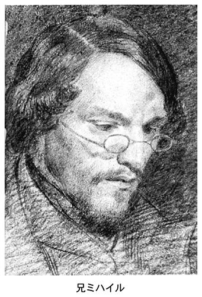
犯罪への関心
ペテルブルグ帰還後のドストエフスキーが犯罪に寄せた関心を忖度するうえでとくに興味深いのは、一八六一年から翌年にかけて『ヴレーミャ』が取り上げたフランスとドイツでの一連の刑事事件の紹介である。シリーズで連載されたこのコーナーは、ドストエフスキーが編集に加わってから実現した企画の一つで、読者の反響も上々だった。国内に溢れる改革ムードにもむろん後押しされたにちがいない。しかし、シベリア帰りのドストエフスキーの脳裏にいまだ新しい記憶のほてりが、そうした好奇心の背景をなしていたことも疑えない。このコーナーで問題とされたのは、社会における裁判の役割、人間の責任能力、暴力に対する国家の権利、死刑、裁判における証拠の役割、そして誤審などといった問題である。ドストエフスキーの小説は、こうして法の根幹に関わる問題を考えぬくなかで、はるかな深みを獲得していったと考えられる。
「死の家」でさまざまなタイプの犯罪者を目にしたドストエフスキーは、ロシアの犯罪とヨーロッパとくにフランスの犯罪の違いに強い興味をそそられた。というのも、彼は犯罪のなかに民衆の力を、民衆のなかに神を見ていたからである。紹介された七つの事件はいずれも、パリで出版されたＡ・フキエによる裁判・判例集から採られている。裁判の記録が、しばしば扇情的な作用をもつことを警戒したフキエが、読者の教育をあてこんでみずから編んだ書物だった。フキエがことのほか関心を寄せたのが、量刑をめぐる問題であり、とりわけ、死刑を宣告された囚人たちの心理状況を詳しく扱っている点にその特色があった。恐怖に満たされた囚人たちの心理状況こそが道徳的な教訓となって人々に大きな影響力を与えると考えたのである。
シリーズの最初に取り上げたのは「ラセネール裁判」である。十九世紀初頭のフランス社会を震撼させたこの事件は、巧妙きわまる残酷さで知られた強盗殺人犯ラセネールの特異な人物像に関心が集まった（一八三五年に死刑判決を受けた）。教育も才能もあるラセネールは、審理の過程で、自分は「社会の犠牲者」であり、意識的な復讐者である、社会の不正との戦いの理念に鼓吹されたものであり、それどころか、自分は詩人であり革命家であるとして、自分の犯罪を正当化した。殺人は飲酒と大差ない、時間が与えられればヴィクトル・ユゴーの『死刑囚最後の日』に劣らぬ立派な本が書けると豪語し、断頭台の露と消えた。ドストエフスキーが関心をもったのは、ある種の理論が人間の意識や行動におよぼす影響力だった。ここにはすでに『罪と罰』の執筆にいたる一つの道が暗示されている。裁判は、たとえ犯罪者をとりまく劣悪な環境にその犯罪の遠因があるにしても、犯罪者個人の責任は免れえないという判断を下している。しかし、ラセネールの死刑を描き記しながら、ドストエフスキーは強い憐れみを感じ、社会がみずからの安心立命を確立する手段である死刑制度に異議を申し立てている。
次に注目を引くのは、夫殺しの罪を問われた「ラファルジュ夫人事件」。記事は、裁判に提出される証拠によって犯罪を立証することがいかに困難で、科学がいかに脆弱であるかを実証しようとする。過去の裁判は、「真実を滅ぼす」拷問による自白から成立していた。新しい裁判制度のもとでは、科学的方法が導入される。だが、そもそも日進月歩するのが科学であり、科学的知見そのものが相対的である以上、誤審の生じる可能性は否定できないとドストエフスキーは主張している（３）。
他の残りの事件では、誤審および陪審制度の是非が議論の的になっている。陪審制は、個人の信念に基づくものであるので、先入見によってすり替えられる恐れがある、そうした場合、裁判官は真実と主観を区別することができない。なぜなら事実は信念を形成しえず、先入見が事実を選びだすことになりかねないからである。それゆえ物証が不可決のものとなるが、結局のところ、科学によって犯罪を分析することは不可能であると主張する。ここでの思索は『カラマーゾフの兄弟』の「誤審」で大きな威力を発揮することになった。
『ヴレーミャ』はこの刑事事件シリーズで大いに人気を博し、続く『エポーハ（世紀）』でも法律コーナーを設けようとしたが、検閲当局は、専門誌と競合するという理由からそれを認めなかった。『ヴレーミャ』と『エポーハ』のいずれにも共通するのは、刑事事件であれ、国家による死刑の適用であれ、人間に対するいかなる暴力も否定するという立場である。『ヴレーミャ』は、西欧には倣うべき裁判制度があるという常識をくつがえし、子どもの禁固刑を認めているイギリスの例を引きながら、ロシアは、力に対する法の勝利という自らの道を発見するだろうと述べている。
他方、『エポーハ』は、司法改革を行うための一連の指令を歓迎しながら、過去の裁判の欠点を挙げている。そのうちの一つが、証拠理論のもつ不整合性である。証拠理論の本質とは「実際には無限に変化していく事実に公式をまとわせたいとする願望」であるとし、求められるのは、陪審員の内的確信のみであると主張する。この主張は、後年の彼が、『作家の日記』で意欲的に発表する裁判関連のエッセーにおいてさらなる発展を見ることになった。ともあれこれらの記事は、ドストエフスキーがいかに犯罪に通じ、そして客観的事実や、科学性といったものにどれほど強い不信のまなざしを注いでいたかを物語っている。
アポリナーリヤ・スースロワ──宿命の女
『死の家の記録』でペテルブルグの文壇に復帰するや、たちまちにして大きな人気を回復したドストエフスキーであったが、私生活面で必ずしも潤いのある毎日を送ることができたわけではない。シベリアの地で燃え上がった恋は速やかに色あせ、ドストエフスキーの心にはただ憐れみだけが形見のように残された。結核を病む妻マリヤは、ドストエフスキーの高ぶった博愛の精神と、失速した感情の犠牲者であった。闘争のなかに、奪われるという予感のなかでしか高揚を見いだせないマゾヒストは、心身ともに病みはて嫉妬心をむきだしにするマリヤとの結婚生活に疲れ果てていた。一八六二年の春、重篤に陥ったマリヤは、医師の勧めにより、黄金の環の町の一つとして知られる古都ウラジーミルでの保養に旅立った。ヨーロッパ旅行を前にしてドストエフスキーは彼女に付き添った。
ドストエフスキーは一八六二年六月、憧れの地ヨーロッパを初めて訪れている。流刑地から戻ってまもない元国事犯に旅券が発行されるというのは異例であるし、ドストエフスキーにしてみれば大変な僥倖だった。旅券を発行した当局が、どのような意図を隠しもっていたかは分からない。ともあれ、ドストエフスキーをパリで待ち受けていたのは幻滅であり、「聖なる奇跡の国」はじつは墓場でしかなかった。なぜ、幻滅が彼を襲ったのか。ストラーホフ宛の手紙で彼はこう述べている。
「パリは退屈きわまりない都会です。確かに目を瞠るようなものは数多くありますが、それがなかったら全くのところ、退屈のあまり死んでしまうかもしれません。フランス人ときたら、へどがでそうな国民です。（......）フランス人は、もの静かで慇懃ですが、イカサマ野郎であり、彼らにとってはすべてが金なのです」
この最初のヨーロッパ旅行中、彼は、富をゆるぎない価値の根底にすえる現代の西欧文明に根本的な不信感を抱き、「夏の印象をめぐる冬の随想」を書いている。
帰国してからも憂い事は尽きることがなかった。妻マリヤの病状は日増しに悪化を辿っていった。そんなある日、アポリナーリヤ・スースロワという作家志望の女性が『ヴレーミャ』編集部に現れ、たちまち彼の心を虜にする。旺盛な好奇心と先進的な思想をもち、ペテルブルグ大学の公開講演会に足を運んでは、作家たちの話に耳を傾ける知的な女性だった彼女は、他面、農奴という出自にするどく屈折した意識を隠しもつ女性だった。彼女はペテルブルグの作家のなかでも、ひときわ崇高な受難者の影を背負うドストエフスキーに魅せられ、この作家のためならすべてを投げ出しても惜しくはないとまで空想する。彼女は回想する。「ごく若かった頃、私は美というものに注意を向けたことがなかった。（......）私の初恋の男は、四十歳だった」。ドストエフスキー研究者サラスキナによると、二人が出会った経緯についてドストエフスキーもアポリナーリヤも何一つ言及しておらず、日記にすらそれを暗示する記述はないという。
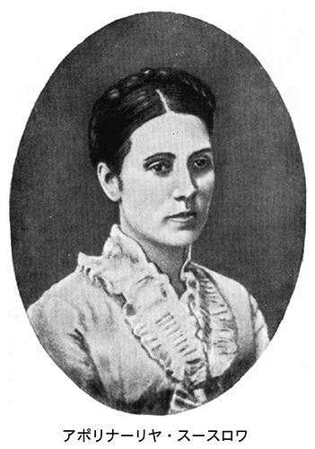
二人の関係は、しかし、その始まりとともに不吉な様相を見せはじめた。二十歳ほども年の差のある女性を扱うすべを知らず、作家としての名声をかなぐり捨て、ひたすら忘我的な快楽に走ったためである。アポリナーリヤは当時の書簡に書いている。「ご立派な、お忙しいお方のようにあなたは振舞った。どこかの偉いお医者さまか哲学者が『月に一度はぐでんぐでんに酔っ払う必要がある』とおっしゃっているからそれに従わねばならないのだとかいって（４）」。ドストエフスキーのエゴイズムが、妻マリヤとの愛をとおして経験された自己犠牲の裏返しであったことは容易に想像できる。アポリナーリヤはそうした作家の暴君的な態度に傷つき、受難者の幻想はついえ、やがて強い反抗心を目覚めさせていった。
一八六三年は、ドストエフスキーが、精神的にも経済的にも窮地に陥った年である。五月、雑誌『ヴレーミャ』は、ポーランド問題をめぐってスラヴ派の論客ストラーホフが寄せた論文（「宿命的な問題」）が検閲に触れ、「国民の感情を侮辱する」非国民の雑誌であるとの烙印のもとに、発行停止の処分を受けた。これを不服としたドストエフスキーは、出版界でも空前の成功を収めた雑誌を復刊させるために奔走し、万策を尽くしたがこれは不首尾に終わった。
八月、ドストエフスキーは病床の妻を残し、二度目のヨーロッパ旅行に出る。外国旅行は、表向き、癲癇の診断と治療を兼ねるものであったが、しかし事実上はそれとはまったく別の目的を隠しもっていた。パリで、ドストエフスキーより一足早く旅立ったアポリナーリヤと落ち合い、イタリア旅行を企てていたのである。ところが、パリに向かう途中、彼はヴィスバーテンでルーレットの誘惑に負け、悪いことに、ビギナーズ・ラックの例えどおり五千フランの儲けを得てしまう。恋と賭けの勝利──。「つねに自制力を保ち、勝負のどんな局面でも、興奮しないことです」。この言葉には、勝利に有頂天となった彼の気分が伝わってくる。だが、そうした彼の奢りをあざ笑うかのように、パリに着いた彼を恐ろしい事実が待ち受けていた。華やかな都会での寂しさに耐えかねたアポリナーリヤは、彼がパリに到着する直前、サルバドールという医学生に身を任せたうえに棄てられ、失意のどん底にあった。事実を知らされたドストエフスキーは、そこはなんとか、持ちまえの忍耐力でのりこえた。悲しみにくれる彼女を宥めすかし、兄と妹としての関係を守るという約束を交わして、二人はパリからイタリアに向かう。屈辱と嫉妬の頂点で自己犠牲へと反転するマゾヒズム──。アポリナーリヤの、自分本位の態度の前に彼の心は安らぎを忘れていたが、じつはそのエゴイズムをこそ彼は愛していたのかもしれない。なぜなら、アポリナーリヤのエゴイズムは、ドストエフスキーのマゾヒズムに正当に見合う資質であり、そこに透けて見えたのは、言わば、死刑執行者と死刑囚の関係だったからである。
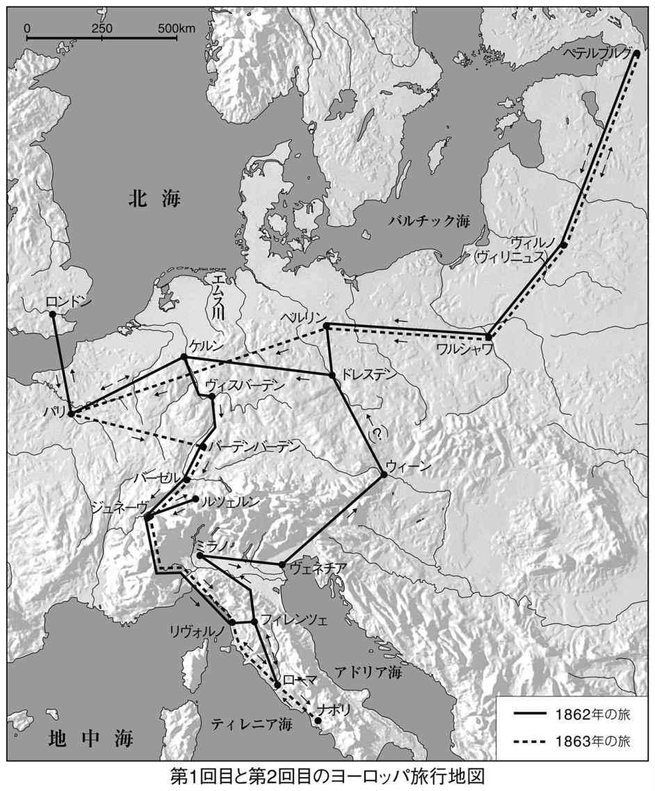
ともあれ、するどい屈折を内に隠しもつアポリナーリヤのイメージは、『白痴』のナスターシャ・フィリッポヴナ、『未成年』のアフマーコワ、『カラマーゾフの兄弟』のグルーシェンカなどドストエフスキー晩年の小説に現れる女性像に強烈な生命力を吹き込むことになった。
厄 年
借金に借金を重ねながら、二人三脚の旅を続けるドストエフスキーに賭博の情熱がふたたび息を吹き返してくる。アポリナーリヤと別れ、イタリアからドイツに向かった彼は、ベルリンに到着するや早々、温泉地で知られるバート・ホンブルグのカジノに出向いていった。ヴィスバーデンで儲けた金の一部はすでにモスクワの妻宛てに送っていたが、その一部を送り返してほしいと手紙に書いている。
半狂乱としか思えないこの自暴自棄ぶりはどこから来るのか。結局のところ、彼は何ものによっても満たされえない虚無の病に犯されていたように見える。その虚無がわずかでも満たされるには、アポリナーリヤに対する情熱を捨て去らなくてはならない。追いつめられることなくしては燃え上がることのない感情──。傲慢から劣等感へ、あるいは劣等感から傲慢へ一瞬のうちに反転する、焼けつくような心のメカニズムを、アポリナーリヤは冷静に読みとっていた。こうしてアポリナーリヤとの関係もついに破局を迎えるが、思えば、ルーレットへの情熱とアポリナーリヤへの愛は不可分の関係にあった。端的にいうなら「運命への二重の挑戦」（モチューリスキー）であり、破滅への意志である。妻マリヤに対する愛が、憐れみの情によって増幅されたシラー風の理想主義にあったとするなら、アポリナーリヤへの愛は、罪と苦痛、破滅への意志によって増幅し深化した愛であった。
厄年は一年で終わらなかった。一八六四年もまた不運が続く。前年の十一月にウラジーミルに療養中のマリヤがなかば危篤状態で再びモスクワに連れ戻され、夫の看護のかいなく、六四年の四月に帰らざる人となる。その三か月後、ドストエフスキーの「最大の援助者であり戦友だった」兄のミハイルが胆嚢出血でこの世を去った。しかもこの年の春に発刊された雑誌『エポーハ』は時代の変化に対応できず、一年を持ちこたえるのがやっとで廃刊となった。借財もじつに二万五千ルーブルに膨れあがった。シベリア時代の友ヴランゲリ男爵に宛てた無心の手紙で彼は書いている。「ああ、友よ、私は借金を払ってしまって、再び自分を自由なものと感じるためになら、何年であろうと喜んでもう一度懲役に行きます」。多少の誇張も含まれていたことだろう。しかしそれは偽らざる本音でもあった。だが、相次ぐ失意の底で一編のマニフェスト小説『地下室の手記』が生まれる。ドストエフスキー文学の「コペルニクス的な転回」とされる哲学的な霊感に満ちた小説である。二度にわたる外遊とアポリナーリヤとの愛を通して、「苦痛が快楽である」というテーゼを文学的な肉付けにおいて体現した作品だった。合理主義、理性の上に打ち立てられた社会主義は人間の本性と相容れない。「二二が四は死のはじまり」──。サド・マゾヒズムの発見はそれまでの彼の思想的な基盤を根本から覆すほど強烈な破壊力を帯びていたのである。
【講義４の１】 地下室の誕生
二つの繭
ペトラシェフスキー事件以後、いや、シベリア流刑以後、「世界全体の調和」というドストエフスキーのユートピアの夢を大きく挫いたのが、「民衆」の発見にあったことはいうまでもありません。西欧合理主義の結晶としての社会主義による革命、すなわち、西欧に起源をもつイデオロギーでは何も救えないという直観です。流刑は、作家自身の運命だけでなく、彼の小説が育んできた夢想家の運命をも変えてしまいました。夢想家は夢を見る特権を奪われてしまったのです。その例の一つを、シベリアで書かれた『伯父様の夢』に見ることができます。ドストエフスキーは、「新しいキリスト教としての社会主義」という理想に燃える一人の青年に託して、「ぼくは生活していたのじゃない。お高くとまっていただけだ」と語らせていますが、この「お高くとまっていただけだ」という言葉に、作家の本音が表れています。彼はそこに青春時代の理想との決別の意志を滑り込ませていたのです。また『ステパンチコヴォ村とその住人』で、わがまま放題の元道化フォマー・オピースキンを登場させたのも、「死の家」での体験が根底にあったからに他なりません。ですが、かといって、二十代に固く抱いた理想をことごとく拭いさったわけではありません。いわば、その記憶を重く引きずりながら、ペテルブルグに戻ってきたというほうが正しいのです。
流刑後の彼が、いまや戦闘的ともいうべきスタイルで文壇に復帰した作品が『死の家の記録』と『地下室の手記』の二つです。興味深いことにそれらはいずれも「手記」という形をとっています。バチーニンというロシアの研究者は、流刑後のドストエフスキーの作品は基本的に「告白的かつ伝記的性格をもつ」二つの繭、すなわち、社会的な繭と形而上的な繭から展開していったと述べています（５）。社会的な繭とは『死の家の記録』、形而上的な繭は『地下室の手記』であり、その後の彼の「犯罪小説」はこの二つの手記に含まれるテーマをめぐる作家のファンタジーであるというのです。しかし、『死の家の記録』と『地下室の手記』の間に、ドストエフスキーのもう一つの顔が現れてきます。やはり登場人物の手記という形をとっている点で大きくは変わらないのですが、しかし、これを犯罪小説と呼ぶことはできません。
【テクスト９】 『虐げられた人々』（一八六一年）
小説家イワン・ペトローヴィチによる手記の形式をとった作品。
イワンはかつてイフメーネフ家の世話となり、そこの娘ナターシャを愛していたが、彼女はイワンを捨て、父イフメーネフの制止をも振り切ってアリョーシャという純真無垢の青年のもとに走る。アリョーシャはワルコフスキー公爵の息子で、ナターシャの父はむかしその公爵家の領地で支配人をしていた。イフメーネフ老人はこの公爵から領地経営の件で訴訟を起こされたばかりか、息子を誘惑したと言いがかりをつけられ、絶望に暮れていた。一方、公爵は、息子アリョーシャとナターシャの間を裂き、息子を金持ちの伯爵令嬢カーチャと結婚させようとしている。
ある日、イワンはスミスという老ドイツ人の死に立会い、その孫娘でいまや孤児同然となった娘ネルリと出会う。そして彼女の告白から、ワルコフスキーの秘密を知らされる。告白によるとアリョーシャは、まだ若く金もなかったワルコフスキーが持参金目当てに結婚したさる商家の娘の子で、告白する当のネルリも、このワルコフスキー公爵に魅せられて駆け落ちしたスミス老人の娘が生んだ子だった。ネルリの母親は、この無慈悲な愛人のもとに走り、財産をすっかり奪われたあげく棄てられ、そのうえ女乞食に身を落として命を落とした。そしてワルコフスキーはこの娘をも棄て、富豪の伯爵夫人に鞍替えしたのだった......。
初めは幸せ満面のアリョーシャだったが、やがて父親と同じようにナターシャを棄て、新しい恋人カーチャのもとに走る。そのカーチャは、「人類への奉仕」の夢を語る、理想肌の娘だった。訴訟は公爵の勝訴で終わるが、問題の一万ルーブルをイフメーネフ老人に譲ると申し出る。ナターシャへの手切れ金だった。イフメーネフ、ナターシャともにその申し出をけり、老人は決闘を申し込むが、軽くいなされてしまう。薄幸の娘ネルリは、恋人に去られたナターシャとイフメーネフ老人を和解させるが、まもなく重い病気にかかって死ぬ。彼女のお守り袋には、母親の手紙が入っていて、ワルコフスキーがその父親であり、ネルリを引き取ればすべてを許すと書いてあったが、ネルリは母親を見捨てた父親を許せず、母親の遺言は実現しなかった。
そしてこの手記を書いているイワン自身も、ついにナターシャの愛を呼び戻すことができないまま、今は病床にあって死の訪れを待つばかりの身である。
【講義４の２】 無力な博愛主義
「敗北の報告」
ドストエフスキーが、大衆作家として大きな人気をかちとるきっかけとなった『虐げられた人々』は、ユートピア的な理想主義と、それに対する根本的な疑いを、ぎりぎりの天秤にかけて成立した小説です。中村健之介は、この小説を「博愛主義者ドストエフスキーの敗北の報告」として読めると書いています（６）。では、どのような意味で、この小説は「敗北」となるのでしょうか。
小説の語り手は、作家志望の青年イワンですが、このイワンの視線をとおして読み進めるかぎり、作品全体は、ワルコフスキーという一人のカリスマを彼方にみすえた博愛主義の物語といえるでしょう。しかし、『虐げられた人々』（原題は『卑しめられ、辱められた人々』）のタイトルが暗示するように、『貧しき人々』に通じる敗北主義が色濃く影を落としています。農奴解放後の社会の混乱を目の当たりにし、もはや自分の理想主義は通用しないという絶望もあったのかもしれません。いや、それどころか悪の権化たる強者への、一種倒錯した憧れと幻想は、この作品において頂点に達したかのような観さえあるのです。ただし、ブイコフ（『貧しき人々』）にはじまる強者の系譜は、この作品を最後に、その後、絶対的な力を喪失していきます。
『罪と罰』以後の小説に現れる悪の主人公たちを知る読者からすると、いま述べたような解説は、事実に即していないように思えるかもしれません。しかし『罪と罰』のスヴィドリガイロフ、『悪霊』のスタヴローギン、『未成年』のヴェルシーロフ、そして『カラマーゾフの兄弟』のイワン・カラマーゾフでは、ドストエフスキーはこれら強者像の造型に心を砕きながらも、同時にその破綻を描こうとしています。つまり作者自身の内的な同化ないし内面化の試みがそこに見られるのです。その点、ワルコフスキー公爵には弱さも、破綻もありません。一個の悪として完成し、揺るがないのです。むろん、この小説自体のもつ大衆小説としての体裁もあり、一般読者の興味を引くためにあえて類型化を施したと考えることもできます。しかし問題の本質はたんにそれだけで説明できるものでもありません。「虐げられた人々」が一様に嘗める、恐ろしい不幸の数々は、すべてこの公爵に由来しています。すべての不幸の生みの親という意味では、悪しき造物主にもなぞらえるべき存在です。しかも公爵はみずから手にした権力のなかで完全に自足しています。
もっとも、ここに一つの矛盾を感じないわけにはいきません。ワルコフスキーは語り手である美しいシラー主義者イワンを否定しています。シラー主義は、死刑判決、シベリア流刑という辛酸をなめた後のドストエフスキーにとっては、遠い、ノスタルジックな理想と化していました。それを全否定することはなくとも、その現実的な有効性に対しては根本的な疑いを抱いていました。ということは、ワルコフスキーには、少なくとも思想面では、ドストエフスキー自身の「回心」が反映されるはずだということです。そしてそれは次に述べる『地下室の手記』において決定的な一歩を踏みしめることになります。
ともあれ、ワルコフスキーの哲学に耳を傾け、ドストエフスキーのうちに生じた揺れを辿りなおさなくてはなりません。正義漢のイワンが、「何かの爬虫類か、巨大な蜘蛛」を思わせる公爵の話を吐き気を抑えながら聞きとおし、父の世代の堕落を突きつけられる場面です。
「私はかつて形而上学を学び、博愛主義者になったこともある」と語るワルコフスキーの「わが青春時代の黄金」の後に訪れてきた嵐のような放蕩──。しかしその彼はこうつぶやきます。「悪徳だの、放蕩だの、不道徳だのと非難されますが、ひょっとしたら、私が今悪いのは他の人間よりも率直だということでそれ以上のものではないかもしれませんよ。他人が自分さえ隠そうとするものを隠さないだけなのです」。そしてその自己露出の快楽について、「だしぬけに仮面を脱ぐ、このシニシズムには特別の快楽があるんです」と述べています。
ワルコフスキー公爵はついでに、社交界に君臨する「中世の僧院長」さながら冷酷無情かつ「じつはこの上ないというほど淫らな」さる若い貴族夫人との交情を面白おかしく物語り、彼女を次のように表現するのです。
「わたしの夫人ときたら、それはもうサド侯爵さえ彼女に指南を仰いでもよいというくらいに淫らでしたよ。でも、この快楽のなかでもっとも強烈で、もっとも刺激的、そして胸にぐぐっとくる点というのは、それが秘密であり、世間に対する厚かましい裏切りだったことです。（......）そう、あれは、悪魔の化身でしたよ。ですが、もうたまらなく魅力的だったのです。（......）もう、これ以上ないくらいの熱い快楽のさなかに、まるで有頂天になったように突然笑い出すんです。その笑いがなんであるかわたしにもよくわかっていましたから、一緒になって笑いましたがね......」
「くだらなくないもの、それは個性です。わたし自身です。すべてはわたしのためにある。全世界がわたしのために創られた」
「でも、いったいどうすればいいっていうんです。すべての人間的な美徳の底に横たわっているのが、もっとも深刻なエゴイズムであるということをたぶんわたしが知っていたとしたら。しかも、美徳が深まれば深まるほどエゴイズムもまた強くなる。自分自身を愛せよ。これこそ、わたしが認めている一つの掟なんです」
「ついでに申しますが、われわれのような手合いがどれほどしぶとい存在であるか、そのことだけでもごらんになるといいのです。なにしろ、われわれは模範的といってよいほど、異常なくらいにしぶとい存在なんです。そのことに驚かれたことはありませんか。つまり、自然そのものがわれわれを保護してくれているってことですよ、は、は、は！」
すべてをここまでえげつなくさらけ出されたら、理想主義者の出る幕はもはやありません。また、これらの言葉が、サド侯爵の著作を、あるいはその哲学を忠実になぞっていることは明らかです。イワンの「博愛主義」や「シラー主義」に対して、ワルコフスキーはじつは、非常に意識的に一つの哲学を対置させていた。そしてそれが「異常なくらいにしぶとい存在」であるときに、ドストエフスキーがこの小説に込めたペシミズムは、『貧しき人々』の絶望をもはるかにしのぐものとなるのです。あるいは、生命力を枯らし、次々と死の生贄となる「博愛主義者」たちのあまりの非力を思い浮かべるときに......。そもそも、この『虐げられた人々』というタイトル自体のなかに、その非情で、複雑なニュアンスは刻み込まれています。一方的な博愛主義の宣言ともいえる『卑しめられ、辱められた人々』という原題名の書物のなかに、まさに「敗北」が刻印されているという矛盾。
ネルリの親殺し
「虐げられた人々」の守護者たらんとする語り手イワンは、かつてのドストエフスキーの自画像そのものです。そうしたイワンの博愛主義にワルコフスキーは徹底した冷笑を浴びせかけることになります。この人物が、農奴解放後のロシア社会における政治的な反動と結びついているとした中村健之介の指摘は非常にするどい視点を含んでおり（７）、小説をその社会的な奥行のなかでリアルに見つめています。
ワルコフスキー公爵の特質は、何よりも金と快楽への飽くなき執着にありますが、しかし、ドストエフスキーがこの人物にかいま見たのはそれだけではありません。悪の権化である強者に対する異議申し立ては、理想主義者であるイワンによってはなしえず、その役割はむしろ、ワルコフスキーの私生児である少女ネルリにこそ振り当てられていると見るべきです。このネルリが癲癇病みであるというディテールも見のがしてはなりません。これこそ作品の謎を解く鍵です。改めて説明するまでもないでしょうが、この少女の内面に赤々と照らし出されていた憎しみの炎こそ、父殺しの衝動なのです。ドストエフスキーは少しずつ告白の比重を高めていきます。『家主の妻』では両親の死にまつわる自責の念に苛まれたカチェリーナが、この小説では親の死を切望する少女へと変形し、ついには憎しみという爆弾を手にすることになるのです。
大衆小説としての輪郭を際立たせ、一般読者の人気を勝ち得たいとの狙いもあったのでしょう。ドストエフスキーは、物語の登場人物を、勝者と敗者、善人と悪人を驚くほどくっきりと類型化して見せています。しかし時にその境界を驚くほど曖昧なまま置き去りにしていることも事実です。これまで指摘してきた「模倣の欲望」という図式をこの物語に導入することも可能です。しかし、語り手である夢想家イワンはすでにそれを潜り抜けた地点に生きています。それはアリョーシャの個性そのものに起因しているように思えるのです。
ワルコフスキー公爵の息子であるこの青年に、ドストエフスキーは独特のまなざしを注いでいます。快活明朗で嘘つきである素朴なエゴイストが、ワルコフスキーの養育のもとでどのような成長を遂げるか、読者には大きな関心となるところでしょう。このアリョーシャに、一八四〇年代の、社会主義的な理想を語らせたドストエフスキーは、自分が生きた青春時代だけでなく、社会主義の理想そのものに対するアイロニーを含ませたということができます。語り手イワンの目にアリョーシャは「意志というものがない」と映ります。しかし、その受身な態度はどこか不気味です。ナターシャは彼に母親のような情愛でもって接しますが、そこには、後に『白痴』で明らかにされる聖性の二重性とでもいうものがすでに影を落としていることに気づきます。アリョーシャの受動性にワルコフスキーの文字通り「分身」たる役割に見合うものがあるように感じられるからです。「意志をもたない」ナイーブなエゴイスト──、アリョーシャはその意味でも、エゴイズムの化身であるワルコフスキーの陰画といってよいかもしれません。「すべては私のためにあり、全世界は私のために創られた」と豪語するワルコフスキーですが、この公爵のこの哲学をもって、ドストエフスキーの悪のイメージは頂点に達した、と私は考えます。
【テクスト10】 『地下室の手記』（一八六四年）
全体で二部からなり、第一部は「地下室」と名づけられている。下級官吏である主人公の私は、わずかながらも遺産を手にして、長年の役所勤めを辞し、今は「地下室」と呼ぶアパートの一室にこもり、だれを相手とするのでもなく、手記をしたためている。
まず、「私」はこう書いている。「私は病んだ人間だ......私は意地の悪い人間だ。およそ人好きのしない男だ」。そして「諸君、あまりに意識しすぎるのは、病気である」。そしてその「私」が、強度に自分の屈辱を意識していると、ありとあらゆる意識の力でわれとわが身を責めさいなんでいると、それが最後にはえもいわれぬ快楽となると主張する。彼はさらに「歯痛の快楽」について、誇らしげに語る。「『おあいにくさま、歯痛にだって快楽はあるさ』、と私は答える。まるひと月、歯痛を病んだ経験から、私はちゃんと知っているのだ」。こうして、「私」は反問に反問を重ねながら、独自の哲学を披露していく。
「私」は羨みの念とともに直情型の健康者を否定する。そしてこの「直情型」の人間に、みずからの「無為」を対置しながら、「およそ直情型の人間ないし活動家が行動的であるのは、彼らが愚鈍で視野が狭いからである」と言い放ち、そこに同時代の革命家たちを重ね合わせていく。功利主義への徹底的な疑いである。そして「私」の哲学はつまるところ、次の一言に集約されている。「しかし、よく考えてみれば、諸君、二かける二は四というのは、もう生ではなくて、死の始まりではないのだろうか、すくなくとも人間は、なぜかいつもこの二二が四を恐れてきたし、私などはいまでもそれがこわい」。この合理主義の全否定から、やがて、チェルヌイシェフスキーの説く、合理主義のシンボルとしての水晶宮に対して、はげしい憎悪の笑いが浴びせられる。
第二部「ぼた雪にちなんで」の中心をなすのは、リーザといううぶな娼婦との出会いと別れの記録である。役所勤めを始めてまもない頃、人間嫌いの「私」は、あちらこちらでヒステリーまがいの悶着を重ねるのだが、ある日、とうとう寂しさに耐えかねて学校時代の同窓生シーモノフを訪ねる。そこではちょうど彼らの友人で、近々、将校として遠方に赴くズヴェルコフという友人を見送るパーティについて相談中だった。「私」は、持ち前の見栄っ張りと好奇心から、なけなしの金をはたく決心をする。だが、当日は勝手に待ち合わせの時間が変えられ、レストラン前で待ちぼうけを食ったあげくに小馬鹿にされ、ついに激怒してパーティの最中に尻をまくる。送別会が終わると、一同は花街に繰り出す予定だった。お金もない「私」は、喧嘩したばかりの相手に借金を申し込み、後を追うようにして女郎屋に駆けつける。そこで彼は「奇妙なくらいきまじめな感じ」の娼婦リーザと二人だけになり、柄にもなくまっとうな夫婦の愛や幸福について聞かせるはめになる。それから数日後、リーザが訪ねてくる。狼狽した「私」は惨めさのあまり冷たく突き放すが、彼女は「私」を理解し、両腕でひしと「私」を抱きおいおい泣き出した。「私」は、支配欲の虜となり、憎しみと愛に引き裂かれながら、彼女を抱く。興奮が鎮まった後の「私」は苛立ち、彼女に帰るように促すと、彼女は一言「さよなら」を言って部屋を出て行く。別れ際に彼は五ルーブル札を握らせる......。ところが、いったん彼女が姿を消すと、得体の知れない感情がこみ上げてくる。慌てて、彼女の後を追う「私」。通りは街灯の光のなか、ぼた雪が降りしきるばかりだった。
【講義４の３】 サド・マゾヒズムの二重性
功利主義批判
『虐げられた人々』の執筆から三年、ドストエフスキーの身にどのような災難がふりかかったかはすでに「伝記」で見たとおりです。ドストエフスキーは、同時代をとりまく状況を興味津々のまなざしで見守っていました。チェルヌイシェフスキーという同時代の革命家が『何をなすべきか』という小説で描いたのは、空想的社会主義の受け売りでした。「一切の行為は利得によって説明される」「人間はエゴイストである」「犠牲なるものはそもそも存在しない」──。ナロードニキの作家は、ヒューマニズムとは一見大きくかけ離れたするどい発見を誇らしげに書きましたが、それらの、あまりにあからさまな断定を前にして、さすがのドストエフスキーも怒りを禁じえませんでした。昔の自分が全身全霊で語り夢見てきた理想を、自分の手でむざむざと壊すことはできなかったのです。
地下室人がいま立ち向かおうとしている相手は、「世界全体の調和」であり、その割れ目からグロテスクな牙をのぞかせるニヒリズム、すなわち「二かける二は四」に象徴される功利主義の理屈です。人間の真実なんてものは、そんな算術で理解できるものではない。では、「世界全体の調和」と「ニヒリズム」との間に、はたして血縁は存在しないのでしょうか。ドストエフスキーを困惑させた問題はまさにそこにあったと思います。『地下室の手記』が直接にはチェルヌイシェフスキーへの反論として構想され、フーリエ流空想的社会主義への徹底したアイロニーが盛りこまれていることに気をつける必要があります。チェルヌイシェフスキーが小説の最後に描いたユートピア的な共同住宅「水晶の宮殿」を「鶏小屋」と罵倒し、同時代の思想家たちを「微妙きわまる快楽を解することのない野太い連中」と毒づいてみせた地下室人は、理神論はびこる十八世紀フランス啓蒙主義の時代に生き徹底して反逆的な態度を貫いたサド侯爵と、いや、『虐げられた人々』のワルコフスキー侯爵とほとんど踵を接しているといってよいのです。つまり、極限に意識過剰であるということが、たちまちにして放蕩の哲学に転化しかねないということ、つまり彼ら「放蕩児」と分身関係にあるということを物語っているかのようです。この二面性はじつは、青春時代のドストエフスキーそのものでした。そうはいっても、地下室人はけっしてドストエフスキーその人というわけではありません。一人芝居、ないしは、一人称で書かれた「ポリフォニー」とでもいうべきでしょう。ドストエフスキーは彼に好き放題に演じさせているというのが真実なのです。
地下室人は、地下室にこもりながらも一人前に経験を積んでいます。
「たとえば、もうどうしようもなく忌まわしいペテルブルグの夜更けに自分のねぐらに帰りながら、おれはまたしても醜悪なまねをしでかした、やってしまったことはもう取り返しがつかない、とことさらつよく意識し、心の中でひそかにじぶんをさいなみ、切りきざみ、しゃぶる。すると、その苦みがついにはなにか恥ずべき、呪わしい甘さに変わり、ついにはけちのつけようのない、ほんものの快楽に変わってしまうのだ。そう、まさしくほんものの快楽に！」
おそらく皆さんは、まさしく「病的だ」とお思いになるかもしれません。当人もこう自問しています。「ところで、ひとつ聞いてみたいのだが、自分の屈辱感のなかにあえて快楽を見出そうとする人間が、果して、多少なりとも自分を尊敬できるものだろうか？」
ドストエフスキーはこの地下室人を「今なお余命を保っている一世代の代表者」と少々皮肉をこめて書いています。つまり、過去の人種とすることで一歩後ろに引き、そこから徹底して攻撃をかけるというスタイルです。では、このマゾヒズムのなかに彼は何を見出していたのでしょうか。
個人です。個人の自由という問題なのです。個人はそこまで到達しうる、集団主義の理念のなかには組み入れられないという意味において、個人を否定できないと彼は主張する。その意味で、地下室とは個人のメタファーなのです。地下室と対比されているトポスは「水晶宮」、すなわち、地上のパラダイスであり、あるいは集団主義のメタファーです。地下室を、意識家すなわち弱者の要塞に見立てるなら、強者の要塞こそ水晶宮ということになるでしょう。しかし、水晶宮などというものは、つまるところ鶏小屋でしかない。人間の、人間としての苦しみや自由への希求を押しつぶす牢獄でしかない。ドストエフスキーはそう考えたわけです。
小宇宙としての自意識、サド・マゾヒズム理解の深化
ドストエフスキーが、功利主義の理念に抗戦するよすがとしたのは、他ならぬ「生活」です。『地下室の手記』において、彼は、生活を一つのマニフェストとして立ち上げました。『地下室の手記』とは、ドストエフスキー自身の内面の記録ですが、同時に「地下室」とは、個人がみずからを確認する場所なのです。地上の明るい光をさえぎる壁の厚さゆえ、自分が自分を見つめることのできる場所なのです。しかし私はこう思うのです。「私は病的な人間だ」と書く主人公は、ひょっとすると、いたって健康な良識の持ち主ではないのか、と。小説の第二部「ぼた雪にちなんで」で主人公が娼婦を相手に見せる矛盾した振舞いも、ある意味ではほほえましく、人間的ではないでしょうか。堕落の道から娼婦を救いたい、ヒューマンな態度で臨みたいと願う見栄っ張りな男が、結局は欲望に屈して娼婦を抱いてしまう。いったん欲望が満たされれば、そうした高尚な気持などどこかへ吹きとんでしまう。それに気づいて娼婦は出て行く。ところがいったん相手がいなくなると、にわかにその不在を思い知らされる。傲慢のなせる業です。まさに人間が生きています。
意識過剰がもたらす「病」とはいうけれど、いったい、どのような意味で地下室人は「病的」なのでしょうか。病的なのではない。彼が病んでいるのは、むしろもっとも健全な病なのではないか。健全な病などというのももちろん形容矛盾です。しかし、自意識というのは、同時に、一個の完全無欠な宇宙でもある。意識のなかでは、憂鬱と明るさ、偏狭さと寛大さ、エゴイズムと博愛主義、サディズムとマゾヒズム、誇りと屈辱、善良と悪意、自信と無力といったありとあらゆる矛盾する価値が宇宙的なバランスを保ち、苦しみながらも生活は維持されていきます。その意味で、地下室と地下室人は、まさに、ドストエフスキー文学の小宇宙となりうるものです。
さて、デビュー作以来一貫して流れるテーマ、強者と弱者のすさまじい闘いは『地下室の手記』でも続けられていきます。「意識の病」に苦しむことのない「健康な」強者の一人に、ズヴェルコフがいます。『貧しき人々』の強者ブイコフが「牡牛」に語源をもっていたのと同じように、ズヴェルコフは「獣」（）を語源にしています。この強者に対する「私」の敵愾心はあまりも激しく、強者を前にしてのあがきのむなしさに、読者のみなさんも絶望的な気分に陥るかもしれません。ところが、ドストエフスキーの世界において、絶望は、突然、文字通り、マゾヒスティックに反転します。この「反転」は、ある意味で、制御しがたい心の動きに苦しめられる地下室人の強みでもあるのです。
しかし、ドストエフスキーは地下室人の悲劇をあくまでも否定的に描いています。地下室人は、かつてゴリャートキン『分身』がそうであったように、「恋愛における永遠の失格者」（ペレヴェルゼフ）です。地下室人の愛は、引き裂かれているがゆえに矛盾し、調和を欠いているからです。相手に近づけば近づくほど、ますます強く排除しようとする、それが地下室人の愛です。なぜなのでしょうか。なぜなら、そこに支配の本能が働くからではないでしょうか。支配の本能とは、たとえかりそめにでも、その対象との絶対性の神話を作りだすこと、そして同時にその神話からいっさいの障害を取り除くことをめざすものです。支配の本能に遺されているのは、暴力と監視、そして独占しかありません。地下室人における矛盾とはおそらくそこまで辿りつくべき性質をはらんでいる。支配の本能は時として、父性愛、あるいは母性愛という名をとることもあるでしょう。しかしその愛は、細分化された意識、時として誇大妄想的な分裂をともなっているために、けっして一元的な調和がもたらされることはありません。かつての夢想家たちはその分裂に、自己防衛の本能と呼ぶべき力でマスクをかけてきました。しかし、ついにその夢想家が牙を剥いたのです。地下室人は永遠に三の動力、すなわち〈闘争〉、三の歯車に生きようとする夢想家です。では、その闘争を免れたとして地下室人にはたして救いはもたらされるのか、調和を得ることは、あるいは一に回帰することは同時に死でもあるのではないか──、ドストエフスキーの直感は、どこかでそのあたりの矛盾をも嗅ぎつけていたように思います。
ドストエフスキーにとってサド・マゾヒズムの問題は、『地下室の手記』以後、たんに人間の嗜虐的な性情といったレベルの問題を越え、人間の情念がはらむ宿命的な悲劇性への深いまなざしとなり、さらには神の存在を問うメタフィジックな問題へと普遍化されていきます。『罪と罰』のスヴィドリガイロフ、『未成年』のヴェルシーロフといった人物が、『虐げられた人々』のワルコフスキー公爵よりも一段と悲劇的な色あいを濃くするのも、作家のサド・マゾヒズムの理解がいっそう深まりをとげていく証とみることができるでしょう。
第二部 聖なる徴のもとに
第五講 観念という狂気
【事件と証言５】
ファイル１「ゲラシム・チストフ事件」（一八六五年一月）
一八六五年一月にモスクワで起きた連続老女殺人事件。犯人はモスクワの商人の息子ゲラシム・チストフ二十七歳で、八月、被告に対する軍法会議が開かれた。チストフは分離派教徒であった。犯行は夜の七時から九時にかけて行われた。ペテルブルグの新聞が伝えるところによると、遺体を発見したのはアパートの女主人の息子で、被害者はそれぞれ別の部屋で血だらけの死体となって発見された。アパートに鉄製の閂のついた長持ちから投げ散らかされた物品が散乱し、現金、貴金属が盗まれた。抵抗の跡は見られなかった。ドストエフスキーはこの事件の裁判記録を読んだらしく、『罪と罰』のプロットを構想するにあたってこの事件から大きなヒントを得たとされる。犯人のチストフが分離派教徒であった点も重大な意味を投げかけたと思われる。小説では、事件が実際に起こった季節と場所に大きな変更点が加えられ、一月のモスクワから、七月のペテルブルグへと舞台が移されている。
ファイル２「高利貸し商ベック氏殺人事件」（一八六五年九月）
一八六五年九月に起きた高利貸し殺人事件。犯人は十九歳のグルジア人青年で、ミケラッゼ公爵といい、略奪を目的として犯行に及んだ。犯人は、ベック氏とその賄い女性を殺したあと、自分の名前が書かれた伝票を破り、毛皮の外套と時計他の貴金属品をいくつか手にして逃亡したが、そのさい伝票を部屋に落とし、足がついた。ミケラッゼの部屋を家宅捜索した結果、暖炉の上から血糊のついた包装紙のほかいくつかの物品が発見された。公爵ははじめ自白を拒否していたが、数時間後、聖像のまえに跪き、泣きながら罪を自白したという。それによると、九月七日、公爵は前年十二月に質入れした拳銃を受けだすためにベック氏の家に立ち寄ったが、同氏より倍額にあたる十二ルーブルを要求されたため抗議したところ、同氏より「警察に突き出す」と脅された。公爵はそれに対し、病気が理由で受けだしが遅れたと詫び、薬莢と二ルーブルを上乗せし残りの四ルーブルは後日持参するからとベック氏を説得した。そこへ、賄い女のレオンチエワが現れ、薬莢の受け取りを拒むように仕向けたため、犯行に及んだ。ドストエフスキーは、『罪と罰』の主人公ラスコーリニコフが居酒屋「水晶宮」でお茶と新聞を所望する場面でこの事件に言及している。
ファイル３「アレクセイ・ダニーロフ事件」（一八六六年一月）
一八六六年一月中旬に起きた高利貸し殺人事件。犯人は貴族出身で、モスクワ大学の学生アレクセイ・ダニーロフ。退役軍人で、高利貸しを営むポポフとその女中であるノルドマンが殺害された。事件は『罪と罰』連載中に起こり、大きな反響を呼んだ。事件の裁判は長引き、新聞報道は六八年半ばまで続いている。公判は六七年二月十四日に開かれた。ダニーロフに対して有罪が宣告され、九年の懲役刑が下された。ドストエフスキーはこの事件に異常なほどの関心を寄せている。新聞報道でとくに話題になったのは、ダニーロフの並外れた美貌と教養、裁判での落ち着いた物腰だった。十一月二十二日、裁判は驚くべき事態に展開した。マトヴェイ・グラスコフという男が新たに犯行を名乗り出たのである。その後、ダニーロフによって罪を引き受けるように強要された彼は、ダニーロフは自分の父親と話し合いをもった後に犯行に及んだと証言した。他方、ダニーロフは、自分に結婚の意志があることを父親に伝えた後、「いかなる手段も逃すな、自分の幸福を得るには絶対に金を手に入れなくてはだめだ、たとえ犯罪という手段をとるにしても」というアドバイスを父親から受けたと述べた。
ファイル４「カラコーゾフ事件」（一八六六年四月）
一八六六年四月四日、元カザン大学生のドミートリー・カラコーゾフが、アレクサンドル二世の朝の散歩時をねらって夏の公園に紛れ込み、皇帝が四輪馬車の踏み台に登ったところで銃を放った。弾丸は逸れ、皇帝は難を逃れた。アレクサンドル二世が遭遇した最初の暗殺未遂だった。カラコーゾフは没落貴族の出で、ナロードニキ系の一派に属していた。彼らは「地獄」と称する秘密組織をもち、メンバーは毒薬とアジビラをたずさえ、皇帝暗殺の任務を与えられていた。八月三十一日、最高刑事裁判所は、二十五歳のカラコーゾフを、すべての身分を剥奪の上、絞首刑に処すとの判決を下し、九月三日午前七時、スモレンスク原で死刑が執行された。ある同時代人はこう証言する。「部屋へあわただしく駆け込んできたのはフョードル・ドストエフスキーだった。彼は色青ざめ、その顔色といったらなく、熱病にでもかかったようにぶるぶる震えていた。『皇帝が狙撃されたんだ！』と彼は、ろくに挨拶もせず、ひどい興奮に声を途切らせながら叫んでいた......」。ドストエフスキーはこの事件を『悪霊』の序文で触れる予定であった（「不幸な、目のくらんだ自殺者さえ、当時は自分の真理を信じていた」）。周知のとおり、『カラマーゾフの兄弟』（第二部）の主人公アレクセイ・カラマーゾフのモデルとなった人物の一人がこのカラコーゾフである。
【伝記５】 ペテルブルグの憂鬱（一八六五～六六）
彷徨の日々
農奴解放前夜の一八五〇年代末から六〇年代初めにかけて、首都ペテルブルグはあたかも一大犯罪都市のごとき観を呈していた。統計をみると、ドストエフスキーが流刑地にあった一八五三年から五七年までの五年間に犯罪率は二倍に膨れ、窃盗や詐欺もふくめて一年間の逮捕者の数が四万人に達している。当時、ペテルブルグの人口は五十万人弱であったから、成人の少なくとも十人に一人が警察の厄介になるという恐るべき事態が生じていたことになる。他方、飲酒や性風俗の乱れも、一般の犯罪に劣らず深刻な社会問題と化していた。『罪と罰』を執筆中のドストエフスキーが住むストリャールヌイ横丁は、道の両側にならぶ八軒のアパートに計十八軒の居酒屋が軒を連ねていたという。ソビエト時代のロシア、いや、現代のペテルブルグでも想像できない光景である。
ペテルブルグのこの異様な堕落は、周知のように、人口問題とも関わりがある。民俗学者、坂内徳明によると、人工都市ペテルブルグは、建都当初からいちじるしく男女比に差があり、十九世紀半ばまでほぼ七対三の割合で男子の人口が女子を圧倒していた。都市というマクロ的な観点から見るなら、女性はまさにこの圧倒的な男性社会にあって、当然のように性的ターゲットとなり、少なからず娼婦に身を落とさざるをえない状況が生じていた。また、統計が示すように、貴族、軍人、町人からなる社会の構造が大きく変化するのは、農奴解放前夜にあたる一八五〇年代からであり、農村から都市に流れこんできた農民が一挙に倍増する（１）。『罪と罰』ははじめ『酔っ払いたち』という構想のもとに進められた時期があるが、この時期の『ゴーロス（声）』紙には飲酒の破壊的影響を憂うる声が寄せられている。「飲酒は最近、この社会的不幸を否応なく熟慮させるほどに恐るべき規模となっている」
このような荒廃した都市の風景のなかに、シベリアから帰ってまもないドストエフスキーの姿を置いてみると、その鬱屈した心境がおのずから見えてくる。「死の家」は首都ペテルブルグの都心に現出している、シベリアの「死の家」にはむしろまっとうな生の息吹があると、ひそかに実感した瞬間があったのではないか。しかも、当時のドストエフスキーは、私生活面でどん底に近い状況にあった。マリヤとの結婚生活がうまく軌道に乗っているならまだしも、政府の方針転換による雑誌経営の行きづまりなど、運から見放された観のある彼の身の上に、次から次と災難が襲いかかる。そうした彼が、なかば自暴自棄に、都会の悪に足を踏み入れたとしてもなんら不思議はなかったかもしれない。「死の家」を出たドストエフスキーは、ペテルブルグの荒廃を前に、幾重もの欲望やジレンマに引き裂かれていたはずだ。一方に、それらの醜悪さに背を向け孤高のなかに生きたいという願い、他方に、否応なくほとばしりでる悪の欲望。ドストエフスキーを悪や犯罪へと限りなく誘惑したのはまさにそれであり、その誘惑こそが、彼の文学をどこまでも謎めいたものにしているのではないか。かつて、悪や快楽といった世界を彼は想像のなかで体験することができるだけであった。そして現実に、彼が、終末と呼ぶにふさわしい世界をペテルブルグに見たとき、心は大いに震えた。それはどこかしら、旧約聖書に出てくるロトの妻の心境にも似ていたことだろう。そしてその震えとは、地主貴族としての閉ざされた生活のなかにではなく、大都会の真ん中にあって、あの厭うべき父親を自分のなかに探りあてた瞬間でもあったのかもしれない。むろん、これは一つの仮説でしかない......。
『地下室の手記』の発表からしばらく、ドストエフスキーは傍目にも気の毒に思えるほどの絶望的な日々を送っている。一種の谷間にも似た精神的空白を埋めるために、彼は、複数の女性にアプローチを試みている。寄稿家アンナ・コルヴィン・クルコフスカヤとマルファ・ブラウンである。ただしその交渉の実態は明らかにされていない。とりわけ興味を惹くのが、後者のブラウンであり、六四年に雑誌の同人ピョートル・ゴールスキーによって紹介された後、二人の間には断続的ながら謎に満ちた交渉がつづく。ブラウンは学校を飛び出してから四年間、イギリス、スイス、イタリア、スペイン、フランスと股にかけて数奇な遍歴を重ね、ドストエフスキーと出会う二年前にロシアに帰国していた。しかし、二人の関係は、今もってドストエフスキー研究とりわけ伝記研究においても謎とされている。
妻マリヤの死
私生活面でこの時期のドストエフスキーに何よりも決定的な意味をもたらしたのが、一八六四年四月の妻マリヤの死である。マリヤの治療にあたった医師は、死を前にして彼女が半狂いの状態にあったと証言している。次に引用するのは、マリヤの死に際して、ドストエフスキーが手帖に書き込んだ走り書きである。遺体となってテーブルに横たわるマリヤに向かいあい、記録されたこれらの言葉は、ドストエフスキーの内部における「思想」の芽ばえを伝える重要なドキュメントである。恋と賭博という二重の闘争から解放された彼が、浄化と無私、冷静と沈思のきわみで見出した一つの絶対的啓示ともいえる。
「マーシャは卓上に横たわっている。私はマーシャとまた会えるだろうか」──そう書き出された文章はやがて人間のエゴイズムとキリストの理想との断絶という思いに結びつく。「キリストの戒律のままに人間を自分自身と同じく愛すること、それは不可能である。地上における個としての人性の法則がわれわれを縛る。自我がさまたげとなる。しかしキリストのみがよくなしえたが、キリストは、太古から人間がそれをめざし、また自然の法則によってそれをめざさざるをえないでいる永遠の理想である」
自我を滅ぼし、万人および各人に無条件にそれを献げることが最大の幸福であり、自我の法則はヒューマニズムの法則と融合するとドストエフスキーはいう。それこそが「キリストの楽園」であって、人類の歴史とは、その楽園へいたるための闘いの道にほかならない。では、成就された楽園の生活とはどんなものになるのか。そこでの生き物は「おそらく人間とも呼べないものであろう」。そして、そこにおける特徴とは、「娶らず、嫁がず、御使いのごとく生きる」ことにあり、生きるためのもろもろの「争い」は消え去るため、「時間」は消滅する。では、現在のわれわれが向かいあうこの「争い」と「発達」のプロセスは、そうした理想とどのような関わりがあるのか。そもそも、「おのれ自身のごとくいっさいを愛せよ」の理想は、人間の生そのものの現実と相反しているのではないか。
そこで彼が提起するのは、「キリストを地上の究極の理想として受けいれるか否か」という問いかけである。キリストの生が、あくまでもこの地上における理想であるなら、キリストの生ないし死へと向かってわれわれは前進できる。過去の偉大な人々の記憶を引継ぎ、受けいれることが人類の未来に寄与する大きな力であり、彼らが人類の手本となっていることを考えるなら、キリストはその最大の理想となり、「全的に人類のうちに入った存在」となる。人間はこの理想を達成することによってキリストのなかに入っていく。人間にとって罪とは、この理想追求を果たさないことを意味する。つまり、みずからの自我を犠牲として他に供さないことである。その時にこそ人間には苦悩が訪れ、その苦悩こそが、楽園での快楽（すなわち犠牲）と均衡を保つことになる。
ドストエフスキーはそう考えたのだった。一言で要約するなら、地上に生きるキリストの理想に人間の理想を見ることなくして、人間の生は根本から意味を失うという事態とのぎりぎりの和解であった。さらに彼は手帖にこう書く。「精神的な見本と理想は、わたしにあってはキリストだけである」。たとえばマリヤとアポリナーリヤの二人との愛の現実を、いわば統合的なかたちで意味づけるには、この地上におけるあくまでも人間的なキリスト像を提示することが不可欠だった。そしておそらくそれなしには、ドストエフスキー自身の生、いや彼の文学そのものも成立しなかったのではないか（２）。
「娶らず、嫁がず」
人道的な理想としての愛の破綻、失意と幻滅のなかでのマリヤの死は、おそらく予想された事態であったにちがいない。そして瀕死のマリヤを見捨てるようにして若いアポリナーリヤとの情事に走った彼が、その「解放」の喜びのなかで限界的な苦しみを耐え、見えざる戦いを強いられていたことを先の文章は暗示している。彼はおそらく、キリストへの信仰やキリストの苦しみへの同化によって、アポリナーリヤとの愛から生みだされる苦痛を耐え、克服できると考えたのではないか。マリヤの死は、たとえ一時的とはいえ、ドストエフスキーを浄化へ導いた。しかし、これらの言葉を、ゆるぎない信念ないし唯一無二の信仰告白と見ることができるか、といえば、できない。これらの言葉を、二重性の一面として留保する余裕をもたなければ、ドストエフスキーに対する理解はより充実したものとはならない。すなわち、ドストエフスキー自身の手帖それ自体を、ポリフォニーの一つの声として理解する必要がある、ということだ。だから、いずれにせよ、相対化は避けられない。かりに、この言葉を、「浄化の言語」と名づけることができるなら、限りない流動性のなかで生成するもう一つの言語、すなわち「闘争の言語」の存在をもう一方の念頭に置かなくてはならない。そしてそれら二つの言語の間には恐ろしいほどの断絶があったはずだが、そもそも文学の力とは、むしろ後者、すなわち、闘争の言語により忠実だったということである。
ドストエフスキーが、自我の欲求の完成をマリヤの死に見ていたことは疑いなく、そこには一つの重大なモチーフが発生していた。ドストエフスキーの小説において、マリヤの呼称は、聖母マリヤよりも、はるかに強くこのマリヤ・ドミートリエヴナと結びついている。『悪霊』に登場する跛の女マリヤ・レビャードギナも例外ではない。いや、例外どころか、むしろこの聖痴愚の女に、もっとも強烈に妻マリヤは投影されたといってもよい。なぜなら、マリヤは、ドストエフスキーのエロスにつきまとう罪の意識のシンボルでもあったからだ。さらに強いていうなら、自分自身の「ヒューマニズム」の実現、あるいは結実としてのマリヤとの結婚が性の歓びと十分な結びつきを持ちえた時代に彼は幸福でありえたが、本来的に闘争的であるエロスが消失したときに、彼はみずからのヒューマニズムの死を確認せざるをえなくなった。
ドストエフスキーにおいて、ヒューマニズムとは闘争の言語、そしてそこから生まれるエロスの代名詞でもあった。江川卓は、「娶らず、嫁がず」というマタイ伝の一句、とりわけ「嫁がず」にドストエフスキーが読み取っていたのは「犯さず」の意味であったとし、アポリナーリヤとの秘められた情事をその伏線に見たてるが（３）、この指摘はきわめて重要である。死せるマリヤの傍らでの手記という行為自体が、いわば、自己弁明の書としての意味をになっていたことは当然としても、その異様にシリアスな文体は、彼の精神的変貌をも予感させるほどに重大な暗示に満ちている。アポリナーリヤとの愛の終わりを確認するためには、そして、彼が最終的な変貌、すなわち後にみずから「第三の人生」と呼ぶところの道に入るには、みずからの内なる闘争的エロスの終焉を待たなくてはならなかった。そして現実にその終焉にいたる道のりは意外なほど長くなった。最後の鉄槌を下したもの、それは賭博なのだが、その長い道のりについてはまた改めて述べることにする。
『罪と罰』の誕生
さて、マリヤの他界につづいて、兄ミハイルもそれからまもなく急逝した。さらに雑誌『エポーハ』の廃刊と、不幸が重なった。巨額の借金を抱えた彼は、債権者から逃れるために、六五年七月の中旬、三度目の外国旅行に出た。まもなくアポリナーリヤが訪ねてきたが、彼はまたしてもルーレットに溺れ、なけなしの金を使い果たしたあげく、ライバル作家のツルゲーネフのみならず別れた恋人にまで無心の手紙を書くありさまだった。
六五年九月、ドイツ中西部の温泉地ヴィスバーデンで『罪と罰』の最初の稿が起こされた。世界文学史上に燦然たる光を放つこの小説の誕生を寿いだのは、ほかでもない、農奴解放後のロシア社会全体にうずまく混乱であり、私生活面のさまざまな危機、そして何よりも差し迫った破滅の予感である。この時期の手紙はことごとく無残な内容に溢れている。「ホテルを一歩も出られない。借金で八方ふさがりだ」「即金で三百ルーブル送ってくれるところがあれば、どこでもいいから契約したい」といった悲鳴のような手紙が友人たちのもとに届く。にもかかわらず、その一方で、小説の題材が「膨れ上がり、豊かになりました」と書いている。この断絶はどこか謎めいている。救い手は現れず、ホテルの支配人から、食事はおろか蠟燭の支給まで断られるという窮地に陥った。彼は金を無心する手紙をアポリナーリヤにも書いている。「動くと食欲を刺激するので、じっと坐って本ばかり読んでいる。君を強く抱きしめる」。「お願いだから、私の手紙は誰にも見せないでほしい」と訴えるドストエフスキーに、もはや、自尊心など望むべくもない。だが、そのどん底の瞬間こそが、世界文学史上稀に見る傑作『罪と罰』誕生のきっかけとなったのである。「ネコのような」生命力が発揮され、奇跡は宿った。正確には、九月七日の出来事である。
『罪と罰』執筆のきっかけとなったのは、『ゴーロス（声）』紙に掲載された一編の記事である。そこには、六五年一月にモスクワで起きた宝石商殺害事件で、二人の老婆を殺した犯人に対する軍法会議の裁判の速記録が掲載されていた。この事件にヒントを得た彼は、九月十日、雑誌『ロシア通報』の編集者カトコフに宛てて売り込みにかかった。
「これはある犯罪の心理学的な報告書です。事件は現代のもので、今年起こりました。大学を除籍された町人出の青年がひどく貧しい暮らしをしているのですが、軽薄で考えがぐらついているために、今はやりのとある奇妙な『未完成の』思想に取りつかれてしまい、自分の忌まわしい境遇から一気に脱出することを決意するのです......」
執筆は開始された。カトコフ宛ての手紙は、すでに物語の基本的なディテールを網羅し、主人公がついに自首せざるをえなくなるまでのプロセスが要約されている。
「神の真実が、世の掟が力を発揮し、ついに自首せざるをえなくなります。たとえ流刑地で朽ち果てようと、もう一度人々との繫がりを取り戻すために、彼はそうせざるを得ません......」
こうした要約にこそ、作者の真情は思いがけず現れるということだ。もっともここで注目したいのは、その次の文章である。
「さらに私の小説には次のような考えが示唆されています。すなわち、法律によって課せられる刑罰が犯罪者に与える恐怖感は、立法者が思っているよりもはるかに弱いものだということです。その理由のなにがしかは、犯罪者が自分から精神的にその刑罰を求めるということにあります」
すでにこの時点で、モスクワの事件は、ディテール上いくつもの変更が加えられ、主人公は二十三歳の元大学生に、舞台は厳冬のモスクワから「異常に暑い」七月のペテルブルグに移し変えられた。
一八六五年は、ロシア社会が深刻な危機に陥った年であり、酔漢マルメラードフの「貧乏は悪徳ならずといいますが、洗うがごとき赤貧となれば、これはもう悪徳ですな」という言葉も、主人公と金貸し老婆との間で交わされる金銭上のやりとりも、そうした状況を如実に反映している。毎年、逮捕者が数万人にのぼるペテルブルグは、善と悪の定めもつかぬ犯罪都市、黙示録の記述さえ思わせる終末のグロテスクな相貌を露わにしつつあった。ドストエフスキーは、主人公の思想殺人に強固な社会的心理的肉づけを行うために、都会に巣食う病弊を微に入り細にわたって再現してみせる。
六五年十月にロシアに帰国してからも『罪と罰』の執筆は続けられ、翌六六年から『ロシア報知』に連載が開始された。発表と同時に小説はたいへんな人気となった。自然が芸術を模倣したのだろうか、連載の開始からまもなく『罪と罰』をそのままなぞるような事件が起こった。六六年一月に、ダニーロフという貧乏学生が、高利貸しのポポフとその女中を殺害した。興味深いことに、裁判の途中、別件で拘留中のグラスコフという囚人が突然、自分が犯人だと名乗りをあげ、その後「自分はダニーロフにそそのかされた」と証言した。ドストエフスキーはその後、リアリストや批評家を批判し、マイコフ宛てにこう書いている。「わたしの観念論は、彼らのリアリズムよりもリアルです。彼らのリアリズムでは、現実の、実際に起こったさまざまな事実の百分の一も解明できない。しかし、ぼくらは、ぼくらの観念論によって、事実さえ予言したのですから」。
アンナ・スニートキナとの結婚
ドストエフスキーは連載の成功に大いに気をよくしたが、執筆中から一つの不安が念頭を去らなかった。それは、彼が三度目の外遊に旅立つ前に三千ルーブルの借金の肩代わりとして悪辣な出版業者ステロフスキーと交わした契約である。それによると、一八六六年十一月一日までにもう一編の長編小説をステロフスキーに提供する約束になっていた。契約の期限もいよいよ迫り、窮地に陥ったドストエフスキーは、友人の薦めにしたがって、最新の速記術を採用することを決心する。
速記の仕事を請け負ったのは、アンナ・スニートキナという当時まだ二十歳を越えたばかりの若い女性だった。スニートキナがドストエフスキー家に現れたのは、皇帝暗殺に失敗したカラコーゾフがスモレンスク広場で絞首刑となってから一月ほど経った十月はじめのことである。その夜の八時から『賭博者』の口述ははじめられ、その後二十四日間にわたって毎日規則正しく四時間ずつ作業は続けられた。原稿は、ドストエフスキーの誕生日の翌日、すなわち約束の期限にあたる十月三十一日に完成し、十一月一日、ステロフスキーのもとに届けられた。
執筆の過程で、親子ほども年の差のある作家と速記者との間に愛がめばえ、脱稿からおよそ一週間後の十一月八日、ドストエフスキーはアンナに結婚を申し込む。「私の大切なアーニャ、こういうことになったのだよ。私たちの運命は決まった。金はできた。だからできるだけ早く結婚式をあげよう」。アポリナーリヤ・スースロワとの恋、ヴィスバーデンでの賭博の体験にもとづいた『賭博者』の世界、そして口述筆記という行為そのものが、ドストエフスキーに強い満足をもたらしたのだろう。そこには、権力者と犠牲者のひそかな抱擁という、無言の高揚の瞬間があった。ドストエフスキーはこの小説で新しいタイプの地下室人を描くことになるが、彼は、地下室からの脱出を、犯罪の世界ではなくルーレットに求めた。しかしそこにも、地下室人の哲学、マゾヒズムの哲学は貫徹している。ジラールによれば、「ルーレットは、女性と同じようにルーレットに魅了された者、失うことを恐れる者を虐げる（４）」のである。
だが、この賭博癖が、ドストエフスキーにとってもう一つの暗い罪への解放をも意味していたことを忘れてはならない。賭博がドストエフスキーの精神に果たした役割については、すでに第一講でも触れたが、後に作家自身の筆によって一度かぎり言及される自慰のモチーフと賭博の関係について言及しておきたい。フロイトが「ドストエフスキーと父殺し」で書いている。「何度脱却しても脱却できないこの賭博癖、みずからを罰するよき機会となるこの賭博癖が、抑え切れない自慰衝動を変形して再現したものであるとすれば、それがドストエフスキーの生活においてこうまで大きな場所を占めているのもあえて怪しむに足りないであろう。なぜなら、われわれの知る限りあらゆる重症の神経症においては、幼年期および思春期の自慰行為の影響がかならず見られるからであり、これをみずから抑止しようとする努力と、父親にたいする恐怖とのあいだの関係は、すでにあまりにも周知の事実である（５）」
【テクスト11】 『罪と罰』（一八六六年）
ペテルブルグの安アパートの屋根裏部屋に過ごす元大学生ラスコーリニコフ。未来への希望を失い、はげしい鬱状態のなかで、彼は一つの奇怪な空想に耽っている。人間は凡人と非凡人に分けられ、非凡人は既成秩序を踏み越える権利を有する、歴史がそれを証明している、というのだ。たとえば、フランス国民にさえ莫大な犠牲者を出しながら皇帝になりあがったナポレオン。ラスコーリニコフは、自分が前者の選民に属するはずだとの妄想から、人の生血をすって生きる高利貸しの老婆アリョーナを斧で殺すことをたくらみ、実行に移す。だが、たまたまそこに現れた義理の妹のリザヴェータまでも道連れにしてしまう。リザヴェータは、センナヤ広場で露天商を営み、静かで無口ながら、どこか神がかりなところのある女性だった。
事件直後からラスコーリニコフは、思いもかけぬ不安と恐怖に襲われ、傍目に支離滅裂と見える言動をくり返す。やがて彼は、酒場で出会った飲んだくれの元役人マルメラードフの事故死の現場に居あわせ、その葬儀で、彼の娘ソーニャに出会う。こうして殺人者である彼と、娼婦として認定される「黄の鑑札」を受けたソーニャとの間に親近感が生じ、彼女の口から、殺されたリザヴェータから十字架交換を贈与されたほどの仲良しだったことを告白される。
ラスコーリニコフと同郷の一職人が自白したことから事件は急展開をとげるが、予審判事ポルフィーリーは、以前にラスコーリニコフが書いたとある論文から、彼が真犯人であることを見抜く。追いつめられたラスコーリニコフは、ついに金貸し老婆殺害をソーニャに告白する。すると、彼女は「ひざまずいて大地に接吻し、全世界に対し『私が殺しました』と言う」ように、そして自首して出ることを勧める。
ラスコーリニコフの告白は、ソーニャの隣に部屋を借りた淫蕩漢スヴィドリガイロフによって盗み聞きされる。このスヴィドリガイロフとの間には浅からぬ縁があった。ラスコーリニコフの妹ドゥーニャがかつて家庭教師をしていた先が彼の屋敷だったのだ。スヴィドリガイロフは、ペテルブルグで放蕩し、首が回らなくなったところを女地主マルファに拾われ、田舎で鬱々とした毎日を過ごしていたが、家庭教師ドゥーニャの弾ける若さに魅了され、誘惑したことがあった。まもなく、妻のマルファが死ぬと、ペテルブルグに出てきたドゥーニャを追ってやってくる。盗み聞きした事実を種に彼女をゆすり、ふたたび交際を迫るが、ついに思いをとげることなくピストル自殺をする。一方、ラスコーリニコフはソーニャの助言と予審判事の執拗な追及に屈し、ついにセンナヤ広場に出て口づけをし、警察に自首して出る。
裁判は、ラスコーリニコフの情状酌量をみとめ、八年の懲役刑を下す。ソーニャも彼の後を追って流刑地に向かう。シベリアの地にあっても、世界との断絶感、深い憂愁、鬱はなかなか癒えることはなかったが、ある早朝、不意に労役現場に現れたソーニャに出会ったラスコーリニコフは、彼女への愛情によって甦った自分を感じる。そして世界が終末を迎える恐ろしい夢の後で、不思議な甦りを経験する。それは「新しい物語」、すなわち、「一人の人間が次第に生まれ変わり、一つの世界から他の世界へと次第に移っていく物語」の始まりであった。
【講義５の１】 観念という狂気
はじめに観念ありき
世界文学史に燦然たる輝きを放つ傑作『罪と罰』は、何よりまず、言葉、すなわち観念から悲劇が始まります。はじめに観念ありき、です。言葉は、避けられない約束のように、宿命的な意味をもち、それを語った人間をがんじがらめに縛りあげていくのです。観念とは、言葉に対する一種の自己愛的な同化を意味し、その言葉＝観念はじつはその純粋さへの魅了と同じことなのです。言葉は裏切らないという信念ほど甘く美しいものはありません。ですから、『罪と罰』がいつまでも褪せることのない輝きを放っているのは、じつはその言葉＝観念がまるで幾何学や数学のように純粋だからだといっても過言ではないのです。
私が、ドストエフスキーと出会った最初の小説が『罪と罰』でした。この出会いに、ちょっとした因縁めいたものを感じています。中学校二年生の夏、あれは当時刊行が始まってまもない中央公論社版『世界の文学』の一冊でした。私はこの時、「憎悪」とか「悪寒」とかいった漢字をたくさん覚えた記憶がありますが、しかし、なんといっても、その時、私は完全にラスコーリニコフに憑依していたのです。『ネバー・エンディング・ストーリー』の主人公のように、書物に描かれた世界を、現実に限りなく近いものとして経験したわけです。ですから私はしばらくの間、警察に追われているような妄想にとらわれていました。
その後、大江健三郎の『壊れ物としての人間』というエッセーに出会い、小説における体験と現実における体験の落差について考えるようになりました。そしてこの小説をロシア語で読みあげたのが、大学三年の夏休みのことで、まるまる五十日かけて読み通しました。面白いことに、夏休み明け最初に授業があった九月十一日（今もはっきりと覚えています）、大学のキャンパスで出会った外国人の先生に「ぼくはこの夏『罪と罰』を読みました」と言おうとして、一言もロシア語が出てこなかった記憶があります。当時の私はひどい内向癖を病んでいたようです。それでもロシア語で『罪と罰』を読み終えることができたことは、私には大きな誇りでした。その後、私は『白痴』『悪霊』を原語で読みすすめていきました。
「いったんキリストをしりぞければ、人間の理知というのは驚くべき結果にまで到達することがあるものだ」──。ドストエフスキーはこの一言に自分なりの思想の全重力をかけていました。キリストの代わりに神でもよいでしょう。しかし、ドストエフスキーが現実的な力として最終的な砦としたのが、キリストの肉体であったのです。そしてこのキリストの化身ともいうべき人物が、ある時点からつねに作家の中心を占めることになり、作家は彼らにさまざまな試練をかけていくのです。その最初の相手が、ロジオン・ラスコーリニコフでした。まずそのことを念頭において、これからいよいよ始まる五大長編の世界にともに足を踏み入れてほしいと思います。
さて、読者をとらえて放さない『罪と罰』の魅力はどこにあるのでしょうか。今の私には、それはリアリティそのもの、言葉そのものの力であるとしか、答えられません。では、ドストエフスキーは、そもそもこの小説のモデルとなったゲラシム・チストフ事件のどこに衝撃を受けたのでしょうか。そこで、まず考えたいのは、金貸し老婆殺害を決意したラスコーリニコフの動機とは何かということです。私自身、貧乏学生でしたから、ラスコーリニコフの追いつめられた気持はわかります。三畳の狭い下宿で、お金もなく、つねに栄養失調気味で、それこそ眠りをむさぼった記憶があります。今の若い学生たちにはとても想像できないでしょう。現実と幻想があやしく交差するラスコーリニコフの屋根裏部屋が、「戸棚」や「棺」にたとえられているのも偶然ではありません。なぜなら、この小説に刻みこまれているテーマこそ、棺に横たわる一人の青年の死からの再生だからです。
「七月の初め、途方もなく暑い日暮れどきに、Ｓ横丁にあるアパートの住人に又借りしている部屋から一人の青年が通りに出ると、何かしら心に決めかねるといった様子でのろのろとＫ橋のほうに歩き出した。彼は階段で家主にうまく顔を合わせずにすんだ。その部屋は五階建ての高い建物の屋根の真下にあって、アパートというよりむしろ戸棚を思わせた」
ドストエフスキーは、ラスコーリニコフの「戸棚」に似た狭苦しい下宿が「棺」に似ていると、やがて母親に言わせることになります。「戸棚」にしろ「棺」にしろ、いずれも息苦しいことこの上ない場所です。しかし、ラスコーリニコフの再生が果たして可能かどうか、という問いに対する答えは、じつはこの「戸棚」と「棺」のイメージに刻印されている、といっても過言ではない。この問いについてはまた後ほど触れることにしますが、ともかく彼は、この「戸棚」から出て行きます。
では、この屋根裏部屋がいわゆる地下室と同じなのかというと、なかなか難しい問題です。位置的な関係を考えると屋根裏部屋と地下室はむしろ逆の位相にあるからです。この位置関係を忘れてはなりません。地下室とはうらはらに、たとえそれがどれほどみすぼらしくとも屋根裏部屋は建物全体の頂点にある。これは、じつに興味深いことです。頂点と悲惨の同居とでもいいましょうか。ナポレオン主義にかぶれた彼の精神性のメタファーとしてこれにまさる場所は考えにくいと思います。そして、さらに一つだけ言えることは、主人公の青年がいま、この息苦しい部屋を出て、地上に降り立とうとしている現実です。屋根裏部屋ではどのような妄想も赦されます。しかし、地上にいったん降り立てば、必ずしもそうはいきません。かりに、屋根裏部屋を地下室と同義にとるなら、そして、そこから出たいという意志の結晶が犯罪であるなら、これまでの地下室人たちを主人公にした小説はすべて、その意志が犯罪という一種の臨界点に達するまでの序章ということになります。ですから、屋根裏部屋と地下室では根本的に意味が異なるのです。犯罪は屋根裏部屋から来るのです。
では、地下室人とラスコーリニコフの違いはどこにあるかというと、それは肉体と観念の分離という点にあります。清水孝純は『道化の風景』のなかで、ラスコーリニコフがみずからの肉体を「観念の検証に捧げる」のに対して、地下室人は「意識の相対性の中に埋没し、そこから出ようとはしない」と書いています（６）。まさにそうなのです。ラスコーリニコフは天上から地上に出ることをとおして、初めて、独白の世界から対話の世界へ、さらには、カーニバルの世界へと押しやられ、いやおうなく自らの身体をさらすことになります。
ところでこの物語は、一つの観念、すなわち、ひとつの論文が出発点となります。事件に先立つ半年前に、主人公のラスコーリニコフは、新聞にある論文を発表します。並外れた人間は、人類を救う理想のためなら、法を「踏み越える」ことができるし、そうしなければならない、という内容です。
二つの基準、または屋根裏部屋人
ラスコーリニコフを捉えた「理論」とは、人間には非凡人と凡人の二つのタイプがあり、社会正義のためなら非凡人は「あらゆる犯罪を行い、いかなる法律をも踏み越える権利をもっている」というものです。非凡人と凡人のカテゴリーを強者と弱者の関係にスライドさせるならば、この「理論」の出自はさらにわかりやすくなります。弱者たる夢想家＝地下室人が強者に変身するための試練。ナポレオン主義と呼ばれるこの思想、ドストエフスキーが「未完成」と呼んだ選民思想の内実がそれです。現実にナポレオンは、陸軍士官学校を一年足らずで終え、わずか二十四歳で少将となり、王党派の反乱の際には同じフランス兵を虐殺して軍司令官の地位につき、エジプトに大軍を置き忘れ、モスクワ遠征では五十万の兵士を失いながらも、皇帝を退くことはありませんでした。つまり、ラスコーリニコフの理論は、ちゃんと歴史が証明しているというわけです。
では、ラスコーリニコフは果たして、強者、すなわちカリスマなのでしょうか。それとも弱者でしょうか。あるいは、強者たらんとする弱者なのでしょうか。ここで見逃してはならないのが、ナポレオン主義にかぶれるラスコーリニコフに、カリスマ的力を求めるドストエフスキーの心情が反映していることです。フォーキンというロシアの研究者は、カリスマ的人物の最初の試みがラスコーリニコフであるとし、周囲にはっきりと意識されるカリスマも、そのにない手自身にはかならずしもそれと認識されていない、ドストエフスキーの発見の一つとはそのようなものだと書いています（７）。カリスマの根本的な弱さを透視し、そのメカニズムと運命を描ききることが、作家のねらいの一つだったとも言えるでしょう。
しかし、問題は凡人と非凡人という「二つの基準」の考え方そのものにあります。なぜなら、そこには大きな矛盾と欺瞞が含まれているからです。ロシアの研究者カリャーキンは、こうして、二種類のカテゴリーで人々を差別化する主人公の「自己欺瞞」を徹底してついていきます。
「もしもラスコーリニコフが、リザヴェータに代わって復讐するために、その後リザヴェータのような女性たちを助けるために高利貸しの老婆を殺したいと思うなら、いったいなぜ彼はリザヴェータを殺すのか？（８）」
これがカリャーキンの根本的な問いかけです。人類を二つに分けるという行為そのものが、犯罪の根拠をなすものどころか、すでに犯罪ではないか、というわけです。そもそも、子どもをどうやって二つの基準に分けるのか、聖痴愚たるリザヴェータはどちらに属するのか。そしてソーニャは？ いや、母親は？ そうした問いかけのうえに、彼は「最後のもっとも恐ろしい問い」を投げかけるのです。もしもあの現場に、リザヴェータの代わりに、妹か、母親が居合わせたとしたら、彼は殺したろうか。つまり、「二つの基準」などまさに欺瞞そのものだというわけです。
個別に具体的な問いを重ねていけば、ラスコーリニコフの理論がいかに脆弱なものであったか、容易に理解できるはずです。彼の犯罪はまさに、肉親たちへの思いなど入り込むことのない、幾何学のように純粋な観念そのものにあったということです。最初から挫折は運命づけられていたのでした。
犯行後、主人公に襲いかかる悪夢や孤独は、「善悪の彼岸」に立つ非凡人どころか、一匹の「ふるえおののく生物」にラスコーリニコフを変えてしまいます。彼を苦しめるのは、得体の知れない感覚、自分が現に立っている大地との断絶感です。しかし、それはある意味で彼の宿命でした。屋根裏部屋を出たラスコーリニコフにとって、ナポレオン主義への同化、いや、ナポレオンとの同化はじつは、絶大な権力をもつ支配者との一体化をめざすものであったからです。それは父親との一体化です。であるなら、母なる大地は、そうした彼を拒まざるをえません。いや、ナポレオンという父なる観念に同化できるという能力こそ、おそらくドストエフスキーがもっとも危険視したものの正体なのです。ですから、母なる大地への帰還を呼びかけることによって、ドストエフスキーは同時に、ラスコーリニコフに地下室へ戻ることを要請していたとも考えられるのです。ここは非常に微妙なところです。
「犯罪を犯すことによって神になる」と書いたのは、フランスの哲学者カミュですが（『反抗的人間』）、神の、絶大な権力を手にいれ、法の外に立つことは果たして許されることなのでしょうか。屋根裏部屋人（とあえていいましょう）が永遠に実現してはならない願望。それはタブーに近いものであったはずです。なぜなら、神になるために必要とされるのは無関心だからです。では、ラスコーリニコフは無関心になることで、屋根裏部屋からさらに上へ抜け出ることを望んだのでしょうか。物語は、ラスコーリニコフのそうした意図を裏切り、むしろ彼の「共感」する力をことさら強調するかのようです。しかし、本質は変わりません。屋根裏部屋人とは進化した地下室人であり、天と地の中間をさまようべく運命づけられている。ドストエフスキーは、そうした屋根裏部屋人の心をむしばむメカニズムが無関心を願い、神に向かって限りなく近づいていく夢を孕んでいることをするどく見抜いていたのです。
復活の鍵
ラスコーリニコフの悲劇はおそらく私たちが考える以上に根深いものがあります。なぜなら彼は、金貸し老婆の殺害とリザヴェータの殺害とを区別しているからです。金貸し老婆の殺害にほとんど心の痛みを感じない彼は、やはり根本的に一線を越えてしまった人間ということができるのかもしれません。では、そうして一線を越えた人間はどうすれば、人間と法の内側に戻ることができるのか。作家としてドストエフスキーがこの小説に課した問いは計り知れぬ重みがありました。
ラスコーリニコフ復活の鍵をにぎるのが、娼婦ソーニャの存在です。自己犠牲そのものの化身といってよい彼女は、自己中心の観念に溺れ他者に君臨したいと願うラスコーリニコフとは、まさに対蹠点に立つ女性です。いわばソーニャは、ラスコーリニコフの破産した観念、西欧的合理主義と狂気がロシアの大地で人間的な再生をとげるための力、癒しの場として意味づけられている。しかも、彼女は娼婦という仕事に身をやつしています。娼婦とは、他者の全面的な権力のもとに絶えずさらされつづける弱者のことです。ですから、大地との断絶感に苦しめられるラスコーリニコフにとって、ソーニャは、自分が大地との絆を取りもどすための最後の命綱でもあったと考えられるのです。
しかしその救済の場は、現存のキリスト教信仰のなかにはありませんでした。ソーニャはラスコーリニコフに教会に行くことを勧めず、大地に接吻することを願います。たしかに、娼婦を生業としているソーニャにとって、教会での懺悔の祈りを勧めることは不可能でした。彼女はある意味ですでに世間から離反された存在でもあったのですから。しかし、社会の奈落まで落ちた彼女には、もっとも原始的な感覚としての信仰が残されていました。すなわち、「潤える母なる大地」という表現に見られる、ロシアの民衆に根ざした大地信仰。それは、教会を逃れた分離派の人々を深くとらえた信仰でもあります（９）。しかし、ナポレオンの化身として、屋根裏部屋から地上に降りたったラスコーリニコフにとって、大地への口づけほど屈辱的なことはないはずです。彼ははじめソーニャの勧めを歯牙にもかけることはできなかったと思います。それほどに彼を、屋根裏部屋の思想が、傲慢が蝕んでいたのです。
では、そうした二人が惹かれあう理由とは何なのでしょうか。そして二人の愛とはどのような（肉的な）リアリティを得ていたのでしょうか。私は長い間、かれら二人の関係を身体的にイメージすることができず、そのために、どこか『罪と罰』を抽象的であると感じてきました。
「愛は、それが必要なときに生まれる」とは、二十世紀の作家アンドレイ・プラトーノフの言葉です。ラスコーリニコフとソーニャの「愛」について考えるときに、いつも浮かんでくるのがこの言葉です。そもそもの「なれそめ」を考えてみましょう。ラスコーリニコフの老婆殺しと、ソーニャが売春婦として認定される「黄の鑑札」を受けたのが、ほぼ同じ時期であるというのは暗示的です。二人は、楽園を追われたアダムとイヴといってもよい。ラスコーリニコフはソーニャに向かってこういいます。
「きみも越えた（......）越えることができたんだ。胸に両手を押しあて、きみは滅ぼしてしまった（......）自分の命を（どっちみち同じことじゃないか！）。聖霊と理性によって生きることができたはずなのに、行きつく先は、センナヤ広場で......。でも、きみはそれに耐え忍ぶことなんてできはしない。もし一人ぼっちで取り残されたら、ぼくと同じように気が狂ってしまう」
このセリフには、『罪と罰』全体をつらぬく主題が露出しています。「罪」とは、神が定めた見えざるその一線を「越える」ことにほかなりません。ラスコーリニコフはみずからこの表現を用いることで、半ば本能的に深化された「罪」の意識を告白しようとしていたのです。言葉にならない、神の啓示としての罰。大地との断絶感は、また、神との断絶感でもある。では、彼は、自分が「越えた」という事実を、頭では理解しながら、果たして魂の揺らぎとして経験したのでしょうか。あるいは、魂の揺らぎというより、むしろ、存在それ自体をとらえる喘ぎのようななにかこそ、「罪」の自覚の証だったのでしょうか。かりにそうだとして、二人はどのようにして、愛しあうことができるのでしょうか。
殺人者と娼婦の愛──。常人の日常を踏み越えた経験の世界に、ドストエフスキーは想像力の垂鉛を下ろし、生命ないしは魂と同義語であるもっとも本質的なエロスを見いだしていきます。では、一線を踏み越え、人類の環から切り離された「共犯者」同士のエロスとはどのようなものか。そもそも娼婦であるソーニャにとってエロスとは何なのか。『謎とき『罪と罰』』で江川卓は、二人の間にやがて生じる性的な関係をテクストの網目から浮かび上がらせ、次のように書いています。
「二人の間に正常な性の関係が結ばれたことは、ラスコーリニコフにとっては、生の実感を回復するよすがであっただろうし、ソーニャにとっては、卑しめられ、そこに忍従しようとしていた自分を、ふたたび人間として取り戻すための手立てとなるものであった。ラスコーリニコフはこの行為によって、ソーニャを自分と対等の人間として扱ったのである（10）」
正直のところ、私にはこのような結論は下せません。殺人を犯したばかりの一人の男が、たとえどれほど追いつめられているとはいえ、相手が娼婦すなわち性を生業とする女性であることを知りながら、そうした行為に及ぶとはなかなか考えにくいのです。そこにはつねに罪の意識がつきまとっているはずです。かりにラスコーリニコフが分離派のはしくれであるとすればなおのことそうでしょう。あるいはひょっとして、『罪と罰』を執筆中のドストエフスキーは性などといった問題を頭から忘れさっていたかもしれない。しかしかりに江川の説が正しければ、本来的な喜びからたとえどれほど隔たったものであるとはいえ、行為それ自体によって得られた充実感は濃厚なものがあったことでしょう。なぜなら、ラスコーリニコフにしろ、ソーニャにしろ、二人が求めていたのは他者そのもののたしかな存在感だからであり、であればこそ、先に引用したプラトーノフのいう愛とエロスははじめて一つの結合をなして、強いリアリティと喜びをもたらしたはずだからです。しかし、後で述べることですが、ソーニャに割り振られた象徴的な意味から遡っても、そうした行為を想定することはむずかしいと思うのです。
母殺し
ところで先ほども引用したカリャーキンが興味深い指摘を行っています。ナポレオンの理論にしたがって老婆を殺し、「偶然に」リザヴェータを殺したラスコーリニコフは、母殺しであるというのです。
「ラスコーリニコフは、母殺しである。たとえ偶発的であるにせよ、世界の文学にこれほどの規模をもった母殺しの小説がほかにあるだろうか（11）」
私が初めて『罪と罰』を読んだときの印象がじつはこれに近いものがあって、カリャーキンのこの指摘にはとても驚かされました。この説の根拠は、母親のプリヘーリヤが息子の安否について何一つ尋ねようとせず、何か空恐ろしい別の物語を頭のなかで拵えていた、正気を失っていた、とあるエピソードの一節です。私が感じた母殺しは、何より、老婆殺害の直前にザライスクから届く母親の手紙が、なぜ主人公を犯罪から救いだせなかったのか、という疑問から来ました。しかも、老婆殺害後の彼は、母親と妹にはげしい憎しみを感じます。
「なぜ、いま、おれは連中を憎んでいるのだろう？ そう、おれは憎んでいる、生理的に憎んでいて、自分のそばにいることが耐えられない」
では、カリャーキンのいう母殺しとはどのようなものなのでしょうか。
まず、ラスコーリニコフとソーニャの関係を探るうえで問題となるのが、聖痴愚リザヴェータの存在です。主人公にとってリザヴェータ殺しは、一種の「誤算」でした。しかし作者は、その誤算が主人公の運命であり、業でもあったことを一つの象徴的なイメージによって示そうとします。リザヴェータとソーニャによる十字架交換のモチーフがそれです。当時のしきたりによると、この儀式は、社会の底辺に生きる人々の心の連帯を象徴するだけでなく、それを行う二人が、同胞の契りを交わしたことを意味していました。ドストエフスキーは、十字架を交わしあった二人の女性の、いわば血縁なき同一性といったようなものを、こうした細部で暗示していきます。リザヴェータ殺害を告白されたソーニャの子どものように怯える姿に、一瞬、リザヴェータの顔が二重写しになる場面に注目してみましょう。
「彼はソーニャを見ていた。すると不意に、その彼女の顔のなかにリザヴェータの顔を見たような気がした。あの時、斧をもってにじり寄ったときの彼女の顔色をまざまざと思い出したのだ」
ラスコーリニコフは、彼女が小さな手を前に差し出し、泣き出しそうな顔で、まるで「子どものような恐怖」を顔に浮かべた時の姿を思い浮かべるのです。
「かわいそうなリザヴェータ！ どうしてあそこであんな目にあったんだ！ おや、変だぞ、どうしておれは彼女のことを考えようともしない？ まるで殺さなかったみたいに」
ソーニャとリザヴェータの同一化という一種の錯覚をとおして、ラスコーリニコフははじめて自分が犯した罪の核心を察知することになります。少なくとも頭のなかでは。さらにいうなら、ラスコーリニコフは、ソーニャとともにある瞬間だけ、犯した罪の現実にたしかな生命感覚とともに隣りあわせでいることができるのです。これは大事なことです。しかもソーニャと同一化されたリザヴェータが、下宿の使用人ナスターシャとも親しく、自分のシャツを繕ってくれた女性でもあることを後に思い出すのですから。彼女は聖痴愚になぞらえた存在であり、金貸し老婆の妹とはいっても血のつながりのない義理の妹である点も、見逃せません。シベリアで彼が枕の下にしのばせておいた聖書は、そもそもリザヴェータがソーニャに与えたものでした。こうして、ドストエフスキーは、リザヴェータを、限りなく肉親にちかい聖なる存在として意味づけ、ラスコーリニコフに近づけていくのです。そこに現われるのは、新しい三角形、犯行後の彼が本能的に嫌った〈母──ドゥーニャ──ラスコーリニコフ〉の三角形に変わる〈リザヴェータ──ソーニャ──ラスコーリニコフ〉の三角形です。そして彼は象徴レベルにおいて母親を、現実レベルでリザヴェータを殺すのです。
『罪と罰』とは、このようにたんに金貸し老婆殺しの物語というより、母殺し、神殺しとしての意味をはるかに重くになったドラマなのです。リザヴェータを殺したという事実は、現に向かいあうソーニャを殺すということと同じ重さを含んでいます。カリャーキンも述べているように、現実にその可能性はありました。では、母親はどうなるのか、妹のドゥーニャは？ それとも相手が子どもであったなら。その意味で、聖痴愚リザヴェータに担わされた役割は限りなく大きなものになるのです。つまりリザヴェータは、彼女一人の肉体をまとっているのではなく、人類という集合的な身体そのもの、ないしはそのシンボルなのかもしれない。ラスコーリニコフは、みずからが殺したリザヴェータの肉体の普遍的な意味に気づきます。だからこそ、作者は、物語の終わりに、もう一度、ラスコーリニコフとソーニャの十字架（これはかつてリザヴェータが所有していたものです）を交換させるという象徴的シーンをはさむことで、リザヴェータとの和解を、すなわち、彼女の死に象徴された母殺しの赦しを暗示せざるをえなかったのです。ソーニャの糸杉の十字架を身につけたラスコーリニコフ。この場面は、『罪と罰』全体の縮図ともいえる大きな啓示に満ちているところです。
不条理、震えない心
ソーニャの勧めにしたがい、センナヤ広場で大地に口づけし、警察に出頭するラスコーリニコフ──。ここにあるのは〈母〉との和解というモチーフです。センナヤ広場とは、母なるロシアの大地のシンボルであり、大地への接吻を促したソーニャの肉体でもある。ラスコーリニコフは従わざるをえないのです。なぜなら、ソーニャに向かって「越えた」といい、「センナヤで」と一言言い差した彼は、この場所が彼女の「生業」の場所であること、リザヴェータ殺害の許しは、大地＝ソーニャの身体への口づけと通してしか実現されえないことを知っているからです。彼女とリザヴェータのすべての悲惨さのシンボル、それがセンナヤ広場なのです。
大地にキスをして立ち上がり、警察にむかって歩き出そうとしたラスコーリニコフの目にちらりと浮かぶものがあります。
「途中、あるひとつの幻がちらりと彼の目をかすめたが、彼はそれにさして驚くことはなかった。それはもうそうでなくてはならない、と予感していたのだ」
そこで彼はもう一度、広場の地面に身をかがめ、五十歩ばかり隔てたところにソーニャの姿を認め、こう感じるのです。
「今こそソーニャが永遠に自分から離れることなく、運命がどこへ自分を導いていこうと、世界の果てまでもついてくるに違いないとはっきり予感し、理解したのだった。彼の心は煮えかえるようだった......」
気づかずに読み飛ばしてしまいそうな部分ですが、ここに書かれている「幻」とは何でしょうか。「それはもうそうでなくてはならない」という予感とは何でしょうか。それは、聖化されたソーニャの幻影でしょうか。そうではありません。ドストエフスキーは「創作ノート」に「キリストの幻」と一言記しています。作家はここで、十字架を背負ってゴルゴタへと向かうキリストの像をどうしても重ねあわせたかったということです。ラスコーリニコフはそれを見るのです。なぜならキリストは、いうなれば、この地上における存在の最後の「意味」だからです。反キリスト、ラスコーリニコフを救えるのは「彼」しかいないからです。「精神的な見本と理想は、私にあってはキリストだけである」という言葉を思い出して下さい。そしてシベリアでのキリスト発見がどのようなものであったかを。
こうして、彼は八年という刑が下されることになります。この八年は、ペトラシェフスキー事件に連座し、作家自身が甘受した苦難（四年の要塞懲役、のち兵役服務）を正確になぞっています。ナポレオン主義という狂気とのはげしい闘争を生きぬいたラスコーリニコフですが、シベリアの地にあってもなお、希薄な存在感覚に悩み、虚けた姿をさらしつづけます。その姿は、罪に与えられる罰の意味、罪と罰の関係性そのものの不条理さを浮かび上がらせていきます。それは十五年余り前、セミョーノフ練兵場で彼を襲った不条理そのものです。彼はその時、皇帝権力を否定する手紙を朗読したというそれだけの事実によって死刑判決を受けました。果たして、罪の重さに正当にみあう罰の重さはあるのか。流刑地でのラスコーリニコフの虚けた姿は、屋根裏部屋で彼がひたすら培った観念の巨大さを、そして、その観念を一時期共有したドストエフスキー自身がシベリアで経験した「転向」の道のりの長さを暗示するものなのです。震えようとしない心、訪れてこない悔い......。死せるラスコーリニコフの絶望的な戦いがまさにここからはじまるのです。
「せめて、後悔がもたらされたなら。心臓を砕き、夢を払う、焼けるような後悔が。恐ろしい苦しみに耐えかね、首吊りや入水を思い描かずにはいられないような後悔が。ああ、どんなにそれを喜んだことだろう。苦しみと涙、それもまた命ではないか。しかし、かれは犯した罪を悔いてはいなかった。......ところが今、こうして監獄にあって自由の身となった彼は......かつての自分の行いが、運命的ともいうべきあの瞬間に思えたほどに愚かしく、醜悪なものとはまったく思えなかったのだ」
復活の可能性
さて、『罪と罰』を読み終えた皆さんに二本の映画を観ることをお勧めします。一本は、ごく正統派のドストエフスキー映画で、レフ・クリジャーノフという監督がメガフォンをとっています。リアリズムの手法に徹し正統派の『罪と罰』という印象を受けましたが、当時のペテルブルグの雰囲気がじつによく再現されていて、観る者を引き込みます。もう一本の『罪と罰』は、アレクサンドル・ソクーロフという監督による『静かなる一頁』という映画です。これは金貸し老婆を殺した後の主人公の心象風景を幻想的かつシュールなタッチで描いた作品で、クリジャーノフとは対極的に、徹底してディテールをそぎ落とし、いうなれば、主人公の「復活」のドラマを隠喩の手法を駆使して描き出していきます。ソクーロフの映画では、みごとの一言に尽きるほど『罪と罰』の内面世界が再現されています。黙示録を思わせる終末の都ペテルブルグ、ネヴァ川にたたずみ絶望に暮れるラスコーリニコフ、ペテルブルグっ子が次々と投身自殺する夢のシーンが衝撃的です。また、小説を読む手間を省きたいとお思いになられる方は、ぜひ、この映画で雰囲気を味わっていただきたい。
先ほども述べましたが、江川卓は『謎とき『罪と罰』』で、ラスコーリニコフとソーニャの肉体関係の存在にはじめて言及しました。二本の映画によって、そこにはまぎれもなく二つの男女の肉体があったことを感じ取ることができます。とりわけ、ソクーロフが描きだした『静かなる一頁』では、若い男女のごくありきたりな出会いが、そして目もくらむようなその瞬間が描きとられているのです。しかし、ソクーロフにしてなお、二人の間にある身体的なリアリティとしての愛は確認できなかった、と言えるのです。つまり、二人の性的な関係はまったく想定されていないということです。逆に、ソクーロフのカメラが撮しとった彼ら二人の、肉体存在としての動かしがたいリアリティは原作の精神を裏切っているかもしれない、とも。しかしソーニャにとっても、ラスコーリニコフは耐えがたい日常性からの脱出を可能ならしめる希望であったはずです。ソーニャは、ある意味で、殺人を犯した彼以上に絶望的といえる存在だからです。
この映画のなかで、ラスコーリニコフの「復活」を暗示する興味深いシーンにめぐりあうことができます。フィナーレに近いバンコフスキー橋でのシーンで、彼は、穴倉のようなライオンの彫像の腹のなかに身をまるめ、二人の女性を殺した手を、その金属の内側にしずかに這わせていくのです。いずれにしても、どうか二つの映画を見比べていただきたい。二人のラスコーリニコフ、二人のソーニャをしっかり目で経験していただきたいのです。
では、ラスコーリニコフに「復活」が約束されているのでしょうか。どのようなかたちで彼は、人類の環に戻ることができるのでしょうか。この問題は、ある意味で小説全体の生命に関わる部分ですが、ドストエフスキーは一つの暗示的なディテールでそれを締めくくることになります。恩寵は天からやってきます。あるいは、彼が口づけをした大地の深みからといったほうがよいかもしれません。
大斎期の終わりと復活祭の期間中、彼は病院に伏せることになります。入院の期間中、彼は世界が伝染病に侵される夢を見ます。
「アジアの奥地からヨーロッパに向けてひろがる一種の恐ろしい、かつて聞いたことも見たこともないような伝染病のために、全世界が生贄となる運命にあった。何人かの、ごく少数の選ばれた人々をのぞいて、人類はすべて滅びなければならなかった。（......）人体に食い入る一種の新しい旋毛虫、微生物が現れたのである。ところが、この微生物は、知恵と意志をさずかった精霊だった。で、その精霊を受け入れた人々は、たちまちのうちに悪魔つきのようになり、発狂するのだった」
善と悪の観念は見失われ、意味もない憎しみにかられて人々は互いを殺しあい、ついには火災が起こり、飢饉がはじまって、すべてが滅び去ります。
おそらく皆さんは即座に「黙示録」を思い出すことでしょう。そのような理解はもちろん間違っていないと思います。しかし、この夢には終わりが、期待される新たなる時の兆が示されていません。
「世界中で難を逃れることができたのは、わずか数人にすぎなかった。それらの人々は、新しい種族と新しい生活をはじめ、大地を更新し、浄化するという使命をさずかる、純潔な選民たちだったが、しかしだれ一人、どこにも、それら選民たちの姿を目にしたものもなければ、彼らの言葉や声を耳にしたものもなかった」
夢そのものの解説としては、いちじるしく逸脱しているとしかいえません。あまりにも論理が、辻褄が合いすぎているからです。しかし、問題は提示されている内容そのものにあります。これは、もちろん、ラスコーリニコフのナポレオン主義批判です。ラスコーリニコフは、夢のなかで、災厄を逃れた「選民」たちの一人に自己同一化することができたのでしょうか。そうは思えません。なぜなら、彼ら「選民」たちの姿をだれひとり「目にしたものがなかった」とドストエフスキーは書いているからです。
世界の没落のヴィジョンを、ドストエフスキーがこれほど率直かつ具体的に語ったのは後にも先にもこの一回限りです。ここには黄禍論に近いなにかがあります。興味深いのは、後にスタヴローギンやヴェルシーロフ、おかしな男の見る黄金時代の夢とおそろしく性質が異なるということです。なぜ彼は、黄金時代の夢を見ることなく、これほどに生々しい終わりの夢を見ることになったのでしょうか。あるいは、ドストエフスキーが癲癇の発作の際に見る夢は、時としてこのような、フロイトのいう「世界没落体験（12）」に近いものであったのでしょうか。
問題は次のように提示できると思います。一つは、ラスコーリニコフにおける「選民」思想の最終的な挫折が、夢のかたちで啓示されたということです。これは「天から」降ってきた一種の恩寵でもあります。そしてもう一つは復活と救済の呈示です。
ところで先ほど、恩寵は、ラスコーリニコフが「口づけした大地の深み」から訪れたと言いました。どのような意味でそうなのでしょうか。ドストエフスキーはラスコーリニコフの救済を、夢と癒しという二つのモチーフを軸に考えていたように思えてなりません。まず、ラスコーリニコフに重ねあわされた作家自身の問題です。
まず、夢とは何か。少なくともこの夢は、一種の病理的な意味を帯びているということです。私がこの夢の破局的な性質に注意を向けるのは、世界の没落が、ラスコーリニコフの一種の潜在的な願望としての意味を帯びているかもしれないと考えるからです。いってみれば、反キリストとしての彼の、破壊の欲望は夢のなかで成就されるわけです。しかし最終的に彼は「選民」の一人として生き残れません。そこに挫折が生じています。しかしこの願望は、一種のラスコーリニコフ自身の内面の「傷」のシンボルであるのかもしれません。ドストエフスキーが、どれほど、物語のプロットに内在するもの、あるいは物語のプロットそのものとの有機性を意識しつつこの夢を語っているかは、分かりません。この夢が、『罪と罰』という小説に不可欠にして不可分の意味を持つという、十分な認識のもとで挿入されたとすれば、この夢そのものがはらむ破壊性については十分な言及を必要とするでしょう。あるいは、この夢が、ドストエフスキー自身によって見られた、それゆえに、ラスコーリニコフの存在に覆いかぶさるようにして告白された作家の内面を表すというのであれば、私たちは、父殺しという根源的な傷に重ねあわされたラスコーリニコフ自身の内面の「傷」をも想定しなくてはなりません。
私はそこで一つの仮説を提示したいと思うのです。つまり、この旋毛虫の夢は、ラスコーリニコフの破壊衝動のシンボルではあるけれども、世界の没落と死の光景はおのずから彼の「傷」の癒しとならざるを得ないということ。その意味で、彼に救済が訪れてくるのであれば、それはまさに、世界の没落という、ある全体的な力への自己同化または屈服、すなわち「ゼロ」からの復活として理解されなければならない、つまり、この旋毛虫の夢にこそ死と再生のドラマが刻みこまれているということです。
しかしかりに、世界の没落ないしは全体の破壊によって一人の傷を負った人間の再生が可能になる、とドストエフスキーが考えたとするなら、復活ないし救済という内的なドラマはきわめて恣意的な偶然に支配されていることになります。言い換えると、復活がそうした一種の人類的なレベルにおける救済として存在するなら、もはや神の存在は不要です。そのことは、作家自身の体験にねざした永遠回帰的な感覚とも通じ合うものです。
朝の六時、ラスコーリニコフは、イルトゥイシ川のほとりに腰を下ろし、遠い向こう岸を眺めます。
「遠くの向こう岸からかすかに歌声が聞こえてきた。そこでは、溢れんばかりの陽を浴びたはてしない草原に、遊牧民たちの天幕がかろうじて見えるほどの黒い点をなして散らばっていた。そこには自由があり、こちらとは似てもにつかない別の人々が住み、時間そのものがまるで停止したかのようだった。まるでアブラハムとその家畜たちの時代がまだ過ぎ去っていないようだった」
アブラハムの時代を脳裏に浮かべたドストエフスキーは永遠の時間との一瞬の触れ合いを忠実に記録していたのです。ドストエフスキーはおそらくシベリアで感じることのできたこの束の間の希望を主人公に託すほかありませんでした。それは彼がフォンヴィージン夫人に宛てた手紙の内容とも正しくこだましています。つまり、実存的な生命の甦りをラスコーリニコフが経験する、いわばその延長上に救いはあるということですが、中村健之介によれば、永遠の時間の相と触れるというこの感覚こそ、ドストエフスキーが転向、あるいは、民衆への回帰と考えたところのものでした（13）。そしてさらに、おそらくは死刑場でのドストエフスキーが一つの啓示のごとく受け入れた生命への欲望（「生命はぼくたち自身の中にある」）は、たとえそれがどれほどメロドラマ的であれ、一つの救済の原理として提示しうるのです（「七年、わずかに七年！ 自分たちの幸福を感じはじめた頃、二人はときどき、この七年を七日と思いたい気持になった！」）。ドストエフスキーにとって、「大地の深み」から湧きおこるこの根源的ともいうべき生命の感覚こそは、それこそ神や宗教の名に代わるほどの重大な意味を帯びていたといえるのです。
テロルとしての老婆殺し
ところで、金貸し老婆殺害という周到に仕組まれた殺人は、ほとんどテロルと呼ぶにふさわしい行為です。計画殺人は、犯罪のなかでも最も重罪とされる罪です。すでに誇大妄想的な症状を呈しているラスコーリニコフにとって、金貸し老婆はナポレオン主義の実験のみならず、極限にまで肥大した悪の幻影としてありました。たしかに貧乏学生ではありましたが、だからといって、それは金に窮しての殺人ではありません。これはあくまでも思想殺人であり、その意味で現代風に「テロル」の言葉で置き換えることのできるものだったのです。では、テロルとは何でしょうか。相手に自らの存在を納得させる手段として、恐怖を演出することをいいます。
そもそも、恐怖とは必ずしも持続的な情動ではありません。ラスコーリニコフのテロルは、終末の時代において反キリストの登場を予感させるという意味においてテロルでした。そこで浮上してくるのが第一の問題、すなわち父殺しです。もしもナポレオン主義による金貸し老婆殺人をテロルとみるなら、その殺人のもつ意味は一気に歴史的な広がりを帯びるはずです。ロシアの研究者ベローフは、ロジオン・ロマーノヴィチ・ラスコーリニコフ（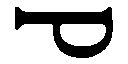）に、名前、父称、姓の取り合わせのもつ思想的意味を考慮しながら、「ロマノフ王朝（）の祖国（）を叩き割ること（）」と読み解いたのでした（14）。説得力のある字解きです。ここにいたって主人公の名に投影されているのは、もはやラスコーリニコフ個人ではありません。ラスコーリニコフが対決している相手は帝政ロシアであり、その象徴的な存在である皇帝ということになります。ドストエフスキーは、この『罪と罰』を書き、罪と罰をめぐる関係性の不条理に思いを凝らしながら、ある漠とした空想に浸っていたのではないかと私は想像するのです。権力の化身たる皇帝、すべての災いの源にして、民衆の大いなる父であり、かつ、悪しき父である皇帝を亡き者にしなければならない、という......。であるなら、ドストエフスキーは半世紀後の一九一七年のロシア革命まで見越していたということになります。しかし、小説においてその夢を託されたラスコーリニコフに下される罰こそ、リザヴェータ殺しという「偶然」だったのです。
テロルはいやおうなく第三者を巻き込みます。これは避けがたい真実です。ドストエフスキーはこの問題に非常に敏感に対応しています。リザヴェータの頭上になかば自動的に振り下ろされた斧の重さには、いっさいの人間的な感情が欠落していました（「おや、変だぞ、どうしておれは彼女のことを考えようともしない？」）。その空白の、その偶然によってリザヴェータは命を奪われました。ラスコーリニコフがもくろんだテロルは、まさに幾何学のような清潔さで成就されなくてはなりませんでした。「二つの基準」の論理に従っていたからです。
第二に、問題とされるのは、分離派とのかかわりです。ラスコーリニコフの名前が、ロシア正教会の異端派である分離派に発していることは再三指摘されています。小説が誕生するきっかけとなった宝石商殺害事件の犯人ゲラシム・チストフもやはり分離派教徒でしたし、ラスコーリニコフの代わりに罪を告白し、濡れ衣を引き受ける塗装屋のミコールカも分離派の一つ「逃亡派」に学んでいました。逃亡派の特徴は何より、反キリストの出現を、精神的な意味においてではなく固有の実在の人物になぞらえてきた点にあります。かつてはピョートル一世がそうみなされました。ミコールカがラスコーリニコフと同じザライスクの出身であるという設定は、彼ら二人の分身性とでもいうべきものを暗示しています。ここには、みずから苦しみを求め、神の世界に招かれたいとする分離派に特有の終末的想像力の影を見ることができるでしょう。ラスコーリニコフもその点ではミコールカに劣らない終末論者だったといえると思います。
すでに述べましたが、一八六〇年代のペテルブルグは、性とアルコールの地獄でした。たとえば、キリスト教的モラルにとって最大の悪の一つである「売春」という行為にも、当時の人々がどれほどの罪の重さを感じていたかわかりません。悪徳に満ち溢れるペテルブルグの荒みきった光景は、先ほど触れたソクーロフの映画『静かなる一頁』がじつにみごとに映像化しています。黙示録的、あるいは終末的という形容はたんなる表面的な修辞ではありません。トルストイが『アンナ・カレーニナ』で描き出した貴族たちの苦しみがおよそ意味をなさない現実──。ソーニャとリザヴェータにおける性が、分離派（鞭身派）と重層的にからみあっているという江川卓の指摘はきわめて重大な意味を帯びています。リザヴェータは、だれの子とも知れず妊娠を繰り返している女性です。ソーニャは「黄の鑑札」を受けたばかりです。神の裁きを待ち受けるソドム──。ペテルブルグとはそのような世界でした。そのなかで、ラスコーリニコフが一種の救済者たる役割を帯びてくる状況が克明に描き出されています。では、ドストエフスキーは、みずからの主人公が選びとった「テロル」の手法を心のどこかで容認していたのでしょうか。金貸し老婆殺害をどこか心の底で許し、リザヴェータ殺害はけっして容認しないという、一つの屈折した信念が、あるいはそれこそ「二つの基準」が、この『罪と罰』の世界に底流しているのは、ドストエフスキーの迷いを暗示しているように感じられます。
ラスコーリニコフの字解き
では、ラスコーリニコフと黙示録ないし分離派はどのような糸で結びついているのでしょうか。先ほど紹介したベローフに劣らない独創的な解釈を試みているのが江川卓です。江川は、頭文字ＰＰＰの図像的な特色に着目し、黙示録に登場する悪魔の数６６６の含意を発見しました（15）。これは世界的といってよい大発見であり、ぜひともロシアの研究者たちに知らせたいと思っています。『罪と罰』における父殺しというモチーフを考えるうえでも、ここには興味深い事実が示されています。なぜなら、ラスコーリニコフの身も心も金縛りにしたナポレオンは、ロシアの歴史においてつねに反キリストとしての影を背負ってきた経緯があるからです（いわゆるゲマトリア数値表でも６６６の数を与えられました）。
大軍を率い、帝政ロシアに襲いかかるナポレオンと黙示録の都市ペテルブルグに反キリストとして登場するラスコーリニコフ。神話的なダブルイメージを通してこの『罪と罰』を読むなら、この小説のもつ歴史的な奥行きはさらに深まることでしょう。しかし、ナポレオンへの傾倒は、ラスコーリニコフが神ないしは強者たらんと志したことを意味するものですから、その点でも彼は「僭称者」ないしは体制転覆者としての役割を背負わされていたことになります。
さらに一つ、もう少し控えめな解釈も紹介しておきましょう。ラスコーリニコフの字解きをめぐってロシアの研究者アリトマンが次のように書いています。
「ドストエフスキーはピョートル大帝をロシアで最初のニヒリストとみなし、ロシア教会が麻痺したのは、ピョートル以来のことと考えた。ピョートルの改革は知識層にニヒリズムを招き、人民大衆に分離をもたらしたのだった」
アリトマンはドストエフスキーが草稿の段階で、母のプリヘーリヤに次のようなセリフを語らせていることに注目します。「ラスコーリニコフというのは、立派な姓なんだよ。（......）ラスコーリニコフ家は二百年来の有名な家系でね」。その上に立って「ラスコーリニコフはどうやらほんとうに分離派出身のようだ」と書いているのです（16）。
アリトマンの意見は、江川の説を発展させるうえでも興味深い事実を示しています。『罪と罰』の発表の時期をめぐってドストエフスキーはかなりタイミングを意識していたのではないか、ということです。『罪と罰』は、一八六六年の一月から一年間、『ロシア報知』に発表されているのですが、なんという偶然でしょう。「二百年来」という言葉を改めて念頭に置き、発表年から二百年を差し引くと、なんと一六六六年という「分離」の年が浮上してくるではありませんか。一六六六年は、じつはロシアの宗教史にきわめて重要な役割を果たしている象徴的な年号なのです。何よりも、聖なるロシアが崩壊した年として意味づけられています。『信仰の書』を書いたザハーリヤ・コプイスチェンスキーは、この年に西欧から反キリスト＝悪魔がロシアにやって来るかもしれないと警告していました。そうです。悪魔の数六六六の烙印をその名に背負ったラスコーリニコフを主人公にした『罪と罰』とは、分離派誕生二百年記念の小説だったのです。
さて、アリトマンのいうように、かりにラスコーリニコフが分離派の一人であるなら、具体的に、どのようなセクトに関わっていたかが問題になります。反キリスト、ラスコーリニコフが、みずからの私的な欲望の追求という点でおどろくほど淡白であり、どこまでも無私無欲である点に注意してほしいのです。第一にヒントとして思い浮かぶのが、彼の身代わりとなって自首するミコールカです。予審判事のポルフィーリーはラスコーリニコフを追いつめる場面で、ミコールカについて次のように言うのです。
「で、ご存知ですか、やつが分離派だってことを、分離派どころか、まあ、たんにどこかのセクトに属しているって話ですがね。やつの一族にはなんと逃亡派がいたんですって。で、やつ自身もつい最近まで、二年間ほど、村のとある長老のもとで暮らし、彼らの宗教的なしきたりに従っていたんですよ。こういったことを、わたしはぜんぶミコールカの口とザライスクから来た同郷人たちから聞き出したんです。驚きましたね！ ただもう、砂漠に逃げだしたいとそればかりなんですから。狂信的なところがあって、夜になれば、神にお祈りし、《真理の書》とかいう古い本を読みふけっているんです。ペテルブルグが彼に強烈な影響を及ぼしたんですな。とくに女性ですよ。それに酒も。......そんな時に、あの事件がやってきた！ あれで、やつはすっかり怯気づいてしまい、──首を吊ろうとするわ、逃げ出そうとするわ！」
読者の多くはすでにご存知だと思います。ラスコーリニコフの身代わりに自首して出るミコールカは分離派のなかでも「逃亡派」と呼ばれる過激なセクトの一つに属していたのです。大事なのは、そのミコールカが首吊り自殺を試みたという記述です。はるばるペテルブルグに来て、日ごろ道楽で売春宿に通い、飲酒に耽ってきた彼は、塗装工として仕事をしていたアパートで起こった殺人事件に肝を抜かれ、それこそ反キリストが、悪魔が降り立った、世界に終わりが来たとみて、神の裁きが下る前に自らを裁こうと考えたのでした。つまり、反キリストの出現を予感させる凶悪事件が、眼の前でじかに起こったという事実に、体の芯から彼は震えあがったのです。
では、ラスコーリニコフはどうなのでしょうか。金貸し老婆はどうなのでしょうか。私はここに、去勢派信徒としてのラスコーリニコフを見たい気がするのです。彼もまた、高利貸しの老婆に世界の悪のシンボルを見るわけですが、彼の無私無欲ぶりは、異端派としてしかとらえられない部分があるからです。しかし、去勢派でなければならない理由は、その徹底した観念性と無私無欲以外に見出すことはできません。この問題はついに江川の『謎とき『罪と罰』』でも明らかにされることはありませんでした。ラスコーリニコフの出身地ザライスク郡は鞭身派が多くいた場所として知られています。ただし、私がここであくまでこだわるのは、一種の誇大妄想的な観念の暴走が、分離派のそれに置き換えられるだろうということです。仮にラスコーリニコフが、「二つの基準」に象徴される西欧かぶれの合理主義において反キリストとみなされるなら、むしろ分離派からも分離した人間という解釈を施さざるをえなくなります。それこそは狂気であり、ロシア人とロシア史の悲劇はまさにそこに宿るのです。
時間の喪失、父性との同化
では、『罪と罰』において父殺しの問題はどのような深層において捉えられていたのでしょうか。ラスコーリニコフの父親はすでにこの世に存在していません。そして父親の存在が言及されることもほとんどありません。ラスコーリニコフは大地から切り離された人間となります。しかしそれは、代々の家族の血から切り離されることでもあるのです。象徴的シーンの一つが高利貸しに出された時計です。家族的な血の継承性のシンボルである時計を質草に出してから（「父の死後に残されたたった一つの形見」）、彼は無時間のなかをさまよいはじめるのです。なんと彼は時計を持たずに犯行に乗り出すのです。父親の形見であるこの時計を質草に出すということは、「家族を捨てる」という行為を暗示しています。ロシアの研究者カリャーキンは父から授かったこの時計を、「家族のお守り」「家族の十字架」であるとし、時計の裏側に描かれた地球の像に着目します。「父から贈られた時計に刻まれた地球、それこそは時間と世界、そして《地球》における精神的かつ道徳的な指標なのだ。（......）この時計を何度も見た後で決断するのだ。この古い時計にしたがって生きることはできない。別の時間を、そう、別の《地球》を生み出さなくてはならない（17）」
「地球」を刻んだ時計を高利貸しに出すという行為は、世界から自分を切り離すことを意味しています。さらには、すべての血縁性、すなわち、父なるもの、あるいは家族なるものの否定のモメントをそこに読み取ることは容易です。犯行の前に、母親から手紙が届きます。それは試練でした。しかしそれすらも彼を犯行から救うことができなかったのです。
しかし、じつはラスコーリニコフには父親がいるのです。それは、ラスコーリニコフと対極的であり、かつ双生児のような悪の主人公スヴィドリガイロフです。彼はまさに成熟した視点ともいうべき存在で、この『罪と罰』の世界を対蹠点から穴をうがち、覗きこむ人物です。その犯罪は謎めいています。奇妙だ、謎だ、と読者が感じるとき、作家は確実になんらかの重大な告白を隠しているのです。スヴィドリガイロフには妻殺しの疑いがかけられています。しかも彼は幼女を陵辱し、死に至らしめている。その彼が、自分の屋敷で家庭教師をしていた若いドゥーニャを追ってペテルブルグまで出てくる。そしてたまたまラスコーリニコフの殺人をかぎ当て、それをゆすりの種にドゥーニャに交際を迫ります。スヴィドリガイロフは果たして妻マルファを殺しているのでしょうか。それについての決定的な言及はなく、可能性はフィフティ・フィフティです。そうだともいえるし、そうでないともいえる。殺意は十分にあったが、それを法で裁くことはできない。ドストエフスキー個人に照らし合わせるなら、病に臥しているマリヤに対する間接的な殺意（死の願望）がその心理的な導入をなしていたと思います。
スヴィドリガイロフの登場と、ラスコーリニコフに対する不審に満ちた親近感は、読者を謎に陥れる部分です。ここにドストエフスキーの重大な告白がある、と私は考えています。ラスコーリニコフが生まれた町は、塗装工のミコールカと同じザライスクでした。江川卓がこれまた天才的なひらめきを見せた発見です。スヴィドリガイロフ家に保母＝家庭教師として働いていたドゥーニャは、辱めを受けたショックで、雨のなか、十七露里の道をずぶぬれになってザライスクに戻ってきました。江川はスヴィドリガイロフ家が、ドストエフスキー自身の第二の故郷ともいえるダロヴォーエにほかならないことを突き止めました（18）。江川のこの発見によって、読者は『罪と罰』の迷宮から一歩出口に近づくことになりました。かりにスヴィドリガイロフの領地をダロヴォーエにすることに決意したドストエフスキーが、そこに彼と父親をダブルイメージ化する目的があったとするなら、スヴィドリガイロフが犯した罪は、父親の罪と重ね合わされるに違いありません。際立っているのは、幼女陵辱であり、その罪は、作家自身の父のそれを連想させるものです。では、スヴィドリガイロフの原像である父親を憎悪した（はずの）青春時代のドストエフスキーは、『罪と罰』のどこにいるのでしょうか。ラスコーリニコフその人でしょうか。もちろんそうではありません。不思議なことに、『罪と罰』では、父親を憎む作家の姿がどこにもないのです。これは驚くべきことです。たしかに、幼い娘と下男を自殺にみちびき、妹のドゥーニャを誘惑し、ペテルブルグまで彼女を追いかけてきた好色漢をラスコーリニコフは侮蔑し、その魔の手を払いのけようとします。しかし、まだ二十歳を出たばかりの元大学生である彼に、なぜか、スヴィドリガイロフを憎悪しきるだけの力がない。『虐げられた人々』にはいた作家の分身（イワン）が、この小説には存在しない。憎悪できない主人公の弱さが、すでに犯してしまった「殺人」によるものであった可能性があるにしても、そこではもはや父親（スヴィドリガイロフ）と子（ラスコーリニコフ）の対立は消えています。
スヴィドリガイロフのほうから接近が始まります。彼は、「同じ畑のイチゴだ」と言うのです。「だって、私とあなたはじつに近いところに立っているのですからね」と。これは何を意味しているのでしょうか。五十歳のスヴィドリガイロフが自信に満ちて解き明かすのは、犯罪における「良心の平安」という恐ろしい秘密ではないでしょうか。たしかにラスコーリニコフは冷静に目的を完遂させました。震えがくるのは、しばらく後のことです。深化された、存在論的な不安──。
先のカリャーキンは、このスヴィドリガイロフを、「ラスコーリニコフの一種の悪魔（19）」と呼び、『カラマーゾフの兄弟』におけるイワンと悪魔の関係になぞらえています。ちなみに、カラマーゾフにおける悪魔が、非常におしゃれな田舎紳士として描かれているのを見ると、ドストエフスキーはこのスヴィドリガイロフを想定していたとさえ思えるほどです。しかし、スヴィドリガイロフはよりカリスマ的な力に満ちています。
堕落した父スヴィドリガイロフという観念が主人公（あるいはドストエフスキー）を襲い、がんじがらめにしているにもかかわらず、ラスコーリニコフがやがてこの男に見るのは、まさにそのカリスマ的な力です。それはソーニャから得るべき魂の救いとは対極にあるものです。法を超えた力は、彼を、袋小路から強引に救いあげてくれる悪しき神デミウルゴスの恩寵です。そしてその時、ラスコーリニコフの脳裏を支配しはじめるのは、一種の同一性の確認ともいうべきものです。この構図は、たとえば、『虐げられた人々』のワルコフスキー公爵とアリョーシャの分身関係にもなぞることができるかもしれません。
では、ドストエフスキー自身の父親とスヴィドリガイロフの同一性はどこに見るべきなのでしょうか。それは、妻（＝母）殺しと少女陵辱です。少年フョードルにとって、結核で死んだ母親を殺したのは、他ならぬ父ミハイルでした。その父は、母親の死後、農奴の娘を手ごめにし、生ませた子を死なせます。またスヴィドリガイロフとドストエフスキーが分身関係を結ぶのは、ドゥーニャに投影されているアポリナーリヤ・スースロワの影においてです。さらにスヴィドリガイロフとラスコーリニコフはおそらくはドストエフスキー自らの堕罪において分身関係として意味づけられるのです。
ドストエフスキーが内心で「父」への変貌を感じたのは、シベリアから帰還して間もない時期のことだったと私は思います。すでに四十代に入り、マリヤ・イサーエワとの愛、アポリナーリヤ・スースロワとの恋を通して、彼は、情欲の地獄をかいま見ていました。その地獄に、シベリア帰りの、家庭の愛にすら潜在的な肉欲の罪を見る彼（＝フォマー・オピースキン）は傷ついたのではないでしょうか。自己犠牲や愛に傷ついたのではなく、情欲のもつ深さに、です。シベリアでの時間がドストエフスキーに決定的ともいえる「遅延」をもたらしたことはいうまでもありません。その「遅延」が人間的なマイナスの「成熟」を先送りし、だからこそ、彼は地獄と馴れ合うことのない柔らかい皮膚を保ちつづけることができたのです。しかし、彼にはもはや一方的な肩入れによって、あるいは感傷的な告白によって、夢想家の純真な夢を語ることはできませんでした。すなわち「子」から「父」への変貌を発見したとき、彼は、夢想家は例外なく堕落する運命にあるという、そうした絶望にも似た確信に捉えられていたのです。なぜなら、夢想家は、そのマゾヒズムにおいて強者＝権力者との一体化を夢見るのですが、彼らの夢の根底にあるものこそ、権力への欲望に他ならないからです（『分身』のゴリャートキンがその雛形です）。ですから、彼は、『地下室の手記』の主人公を、夢想家にではなく、徹底したリアリストとしてしか造型できなかったともいえるのです。そしてラスコーリニコフもまた、その両義性においてしか描き得なかったのです。その意味で『罪と罰』は、父と子の同一性の最初の確認の物語だったといえるかもしれません。
戸棚のなかの反キリスト
この小説の理念についてここで、もう一度、語らなくてはなりません。すなわち、ラスコーリニコフは復活できるのか、という問いです。今回の講義の初めのところで、私は、ラスコーリニコフの屋根裏部屋が「戸棚」に似ているという描写について言及しました。私は、スイスのバーゼルを訪ね、一枚の絵を見たときに、一つの「発見」に立ち至ったのです。その絵は、ハンス・ホルバインの「死せるキリスト」でした。横二メートル、縦三十センチのカンバスに痩身のキリストが身を横たえている姿を描いたものです。まさにそれは「棺」という以上に「戸棚」なのです。私は長い間、なぜ、屋根裏部屋が「戸棚」とイメージされているのか、不思議でなりませんでした。しかし、バーゼルの美術館でこの絵を見たとき、ドストエフスキーが「戸棚」によって何をイメージし、何を語りかけようとしていたかが分かったのです。端的にいってイエス・キリストです。そしてラスコーリニコフになぜ「分離する人々」という名が刻み込まれていたのかも、その時理解できたのです。
ドストエフスキーはすでに早くから、カラムジンの『ロシア人旅行者の手紙』をとおしてこの絵の存在を知っていたのですが、そこにはこう書いてありました。「十字架からはずされたキリストには神々しいものなど何一つ見えないが、死んだ人間としてはじつに自然に描かれている。伝説によると、ホルバインは、水死した一人のユダヤ人をモデルに彼を描いたということだ（20）」。しかし、カラムジンのこの一節だけで、ドストエフスキーが何らかの決定的な刺激を受けたとは考えにくい。そして、実際に彼がバーゼルでその絵と対面する前に、その図像の隅々にまで熟知していたと考えるほうが妥当なのです。グロスマンによると、ドストエフスキーはおそらく六〇年代の半ばに、「誰かの口から」この絵の話を聞いていたらしいとのことです（21）（その「誰か」とは、ホルバインに関心をもっていたジョルジュ・サンドと付き合いのあるツルゲーネフだったかもしれません）。いずれにせよ、おそらく、その「誰かの」印象にこの「戸棚」という比喩が用いられたのかもしれません。
従来の『罪と罰』研究には、次回の講義で触れる『白痴』のムイシキン公爵を、シベリアから戻ったラスコーリニコフに接続する考え方がみられますが、ムイシキン公爵をもしも復活後のキリストになぞらえることができるなら、ラスコーリニコフはまさにゴルゴタでの死から復活へと向かう三日間の生命を生きていることになるのです。フランスの作家アンドレ・ジッドや清水孝純はまさにそのようにラスコーリニコフを理解したのでした（22）。もしも彼らの考えに従うなら、ラスコーリニコフはまさに小説の冒頭から、キリストの影を背負っていることになります。ソーニャが住んでいる下宿の隣人がカペルナウーモウという苗字をもち、マグダラの隣町カペルナウムをあからさまに示しているのも、興味深いところです。キリスト＝ラスコーリニコフの登場をお膳立てするための神話化の意図と見てよいでしょう。あるいは、シベリアでの彼の「復活」の場面に、緑色のショールをまとって登場するソーニャに聖母の面影が宿っていることを考えても、ラスコーリニコフとキリストの二重像は否定できないと思います。ラスコーリニコフは「死せるキリスト」として登場しているのです。とすると、「戸棚」や「棺」のイメージに託したドストエフスキーの根本的な問いかけが、当然のことながら、はっきりと見えてくるにちがいありません。
しかし、むろん私のこの主張には何一つ論拠となるものがないことも事実です。しかし、バーゼルの美術館で、「この絵を見たら、復活の信仰をなくしてしまう人がいるかもしれない」と感じたドストエフスキーの直感はそれよりもはるか以前に存在していたと私は感じます。「死せるキリスト」としてのラスコーリニコフ──。しかし、ドストエフスキーは彼の復活の可能性をみずからの小説の執筆と平行しながら、考えつづけていったのです。そして私たち自身も、ラスコーリニコフの人間的な復活はどのようにして可能かという問題に対し、ひとまずこうしたキリスト教の文脈から離れ、それぞれの生身の想像力でもって答えなくてはなりません。ドストエフスキーがどう考えたかということも重要ですが、しかしこの問いは、すべての読者の前に永遠に開かれたまま残されているのですから。
【テクスト12】 『賭博者』（一八六六年）
「ルーレットの町」を意味するルーレテンブルグに滞在する「将軍」と呼ばれるロシア人は、マドモワゼル・ブランシュというフランス人女性との結婚を望んでおり、将軍の義理の娘ポリーナは、フランス人デ・グリュー侯爵に心惹かれていた。将軍の資産はすべて侯爵の抵当に入っており、彼はロシアに住む年老いた伯母の遺産だけを心待ちにしていた。物語の語り手である将軍家の家庭教師アレクセイは、ポリーナを熱烈に愛していた。
ある日、将軍の伯母が車椅子に乗り、ルーレテンブルグにやって来る。「あんたにはお金はあげないよ」と将軍に告げた彼女は、周囲の制止を無視してルーレットに没頭し、莫大な金額を失い、ロシアに帰っていった。将軍は、遺産を手にする希望を失った。将軍の資産の売却を決めたデ・グリュー侯爵は、その資産のうち五万フランをポリーナに返却すると申し出るが、ポリーナはこれを屈辱と感じる。事情を聞いたアレクセイは、ルーレット場に走り、奇跡的な大勝利を収める。大金を持ち帰ったアレクセイとポリーナは一夜を共にするが、朝を迎えたポリーナは、アレクセイから渡された札束を彼の顔に叩きつけ、部屋を出ていく。アレクセイは、将軍を見捨てたブランシュに誘われ、パリに向かう。二人は豪勢な生活を送るが、アレクセイの毎日は憂鬱だった。
将軍の伯母の死が近いと知ったブランシュは、将軍婦人になることを夢見て、自分を追ってパリに来た将軍と結婚する。お役御免となったアレクセイは、パリをあとにする。一年半余り後、放浪の賭博者となったアレクセイは、賭博の町ホンブルグで再会したルーレテンブルグ時代の知人アストリーから、「アレクセイに会ってきてほしい」というポリーナからの頼みで自分はここに来た、「彼女はあなたを愛していたんです」と告げられる。アレクセイは、「再び生まれ変わり、よみがえるのだ。私がまだ人間たりうることを、ポリーナに知ってもらいたい」と心ひそかに願うのだった。
【講義５の２】 傲慢の悲喜劇、「勝利」の意味
ルーレッテンブルグの狂気
講義の終わりに、もう一つ大事な小説についてふれておきましょう。
『罪と罰』を執筆中、ドストエフスキーは、悪徳出版者ステロフスキーとの契約を履行するため、速記術による最初の小説執筆を試みることになりました。未来の妻となるアンナ・グリゴーリエヴナとの縁を取りもった、二人にとっては記念すべき小説です。その小説が、彼のヨーロッパでのルーレット経験にもとづく『賭博者』でした。グロスマンによれば、ドストエフスキーはこの小説の構想をすでにシベリア時代に得ていたといいますから（23）、何かしら因縁めいたものを感じさせます。解放をまじかに控えて、彼は、二十代の自分がうつつを抜かした賭け事をひそかに思い返していたのでしょうか。
ドストエフスキー文学の特色の一つに、バフチンのいうカーニバル的気分があることはすでに述べましたが、このカーニバル的気分がはらむ矛盾をきわめて興味深いかたちで提示しているのが、この『賭博者』です。バフチンはこう書いています。「ルーレットはそれに関わるあらゆる生活に対して、都市のほとんど全体に対して、そのカーニバル的影響力を及ぼす。だからドストエフスキーがその都市をルーレッテンブルグと名づけたのも、理由のないことではないのである。圧縮されたカーニバル的雰囲気のなか、小説の主人公アレクセイ・イワーノヴィチとポリーナの性格が、その両義的、危機的、非完結的、エキセントリックにして、きわめて思いがけない可能性に満ち満ちた性格が明らかにされる（24）」。
つまり、カーニバル的気分のなかに、その神的な対等性のなかに、ありとあらゆる奇形が露出するということをバフチンは言っているのです。ドストエフスキーが小説に出てくる賭博の場面を、『死の家の記録』のなかの「風呂場」のシーンに重ねて「一種の地獄の描写」としたのも、当然のことでした。そしてその奇形性の一つの帰結が、ポリーナとアレクセイの成就せざる恋にあるのです。賭けに勝つということほど恐ろしいことはありません。なぜなら、それは神の幸運を一身に享けることを、あるいは人間が一歩神に近づくことを意味するからです。
ところで、ロシア文学史に現れた賭博のテーマといいますと、私たちになじみ深いところでは、チャイコフスキーのオペラで知られるアレクサンドル・プーシキンの『スペードの女王』があります。この『賭博者』も、当然のことながらその影響を受けることになりました。
これまでに何度も登場してきたベームという研究者は、ドストエフスキーの「ファンタスティック」な主人公の創始者は、この『スペードの女王』の主人公で「ナポレオンの横顔とメフィストフェレスの魂」をもったゲルマンだと書いています。そして『罪と罰』の主人公がそのロマンティックな魅力を失わないのは、その犯罪の源にあるのが人々への「憐れみ」からくる反逆だからだ、と述べています（25）。そしてこの『賭博者』においてはじめて、そうしたプーシキン流のロマンティックな主人公像は克服されたのだ、と。問題は次の場面です。すなわち、「心の支え」を求めてアレクセイのいるホテルを訪ねてきたポリーナに対し、有頂天になった彼はホテルに彼女を残したまま賭博場に駆けつけます。そして大勝利を得、二十万フランをたずさえてホテルにもどります。賭けに狂った男の強烈なエゴイズムが発揮される場面です。勝ちに眼がくらんだ彼の心に、ポリーナの心の痛みなど届くはずもありません。ベームにいわせるなら、圧倒的な金の力に支配された、無目的ともいえるこの傲慢にこそ、プーシキン的主人公の克服があるということになります。
「傲慢」の悲喜劇
もっとも、このアレクセイの傲慢には、いうまでもなく、アポリナーリヤ・スースロワとの経験が反映されていました。一八六三年の八月、病に臥すマリヤを置き、アポリナーリヤとのイタリア旅行を企てたドストエフスキーは、一足早く旅立った彼女を追ってパリに向かいます。ところが途中、ヴィスバーデンでルーレット場に立ち寄り、ビギナーズラックの例えどおり、五千フランの儲けを勝ち取るのです。その時パリで、アポリナーリヤはサルバドールという医学生に恋し、体をゆだねたあげく棄てられ、失意のどん底にあったのでした。アポリナーリヤが後に書いた『日記』を読むと、その時のドストエフスキーの感情がよく描かれていて面白いのですが、彼は意外にも冷静なのですね（26）。その理由はもちろんルーレットでの勝利の余韻にあったことはまちがいありません。彼は罪の意識を感じることによってアポリナーリヤに対し優位に立てたのですし、パリのドストエフスキーを訪れた「無関心」が、小説のエピソードに隠されているのです。
ベームは、ポリーナを置いて賭博場に走ったアレクセイは、ラスコーリニコフの犯罪におとらず重い精神的な罪を犯していると書いています。私の考えでは、それこそ傲慢の罪なのです。アレクセイはポリーナの苦しみなど眼中になくなります。たとえ一瞬であれ、相手の苦しみに対してまったく無関心となる感情、おそらくだれにでも経験があるでしょう。ドストエフスキーの脳裏では、ロシアに置き去りにしたマリヤの姿が揺曳していたにちがいありません。そしてパリに赴く途中、ヴィスバーデンで彼を賭博場に走らせたのも、あるいはこのマリヤに対する罪意識から逃れるためではなかったでしょうか。他者の苦しみに無関心な自分、そこにドストエフスキーは、再び神のまなざしを感じとってしまうわけです。ですから、それは当然のことながら、報いを受けることになります。ポリーナが憤然としてホテルの部屋を去ったのは、たんに五万フランで体を売った、という屈辱感からではありませんでした。それは、アレクセイの傲慢に対する作家自身の裁きでもあった。ベームはいみじくも書いています。
「ポリーナとの近づきの瞬間、かれにはたんに情欲があっただけで、この情欲を裏づける愛はなかった（27）」
そしてベームは、いわばその延長上に、まだ罪の何たるかを知らぬアレクセイのこの傲慢さのはるか延長上に、『悪霊』の主人公スタヴローギンがたどる傲慢の悲劇をみています。少し先走りすることなりますが、「告白」からの一節を朗読しておきましょう。
「それほどまでに自分のものにしたいと望んでいる女性を、実はまったく愛していないこと、今後もうだれを愛することもできないだろうこと、〔情欲以外には何もないだろうこと〕まで、彼は打ち明けたのです」
賭博者アレクセイ＝ドストエフスキーをとらえた狂気、その狂気のなかに現出するもの、それもやはり観念という名の狂気だったのかもしれません。
第六講 聖なるものの運命
【事件と証言６】
ファイル１「宝石商カルムイコフ殺人事件」（一八六六年七月）
一八六六年七月に起こった宝石商殺し事件。犯人のマズーリンは、モスクワでも名だたる商人一族の出で、父親の死後二百万ルーブルを相続し、モスクワ中心にあるミャスニツカヤ通りに母親と住んでいた。マズーリンは、「ぐらぐらしないように」紐で堅く縛ったかみそりで被害者を殺し、自室に遺体をかくまった。同日の夕刻マズーリンは、購入したアメリカ製の油布で遺体をくるみ、傍に二台の燭台と、俗にジダーノフ液と呼ばれる防腐剤の入った深皿を並べた。裁判の結果、マズーリンは徒刑十五年の判決を受けた。事件の発生はドストエフスキーがベルリンに発つ少し前のことだが、十一月二十九日付『ゴーロス』（三三〇号）で、おりしも彼は『白痴』の第二稿（最終稿）のプランを練り始めていたところであり、当のマズーリンがロゴージンのモデルとなった。『白痴』のフィナーレの場面でも事件のディテールが利用されている。
ファイル２「ベレゾフスキ事件」（一八六七年五月）
一八六七年五月、ポーランド人の革命家アントン・ベレゾフスキによるアレクサンドル二世暗殺未遂事件。パリの万博の開催にあわせ、取りまきと護衛に囲まれて会場を訪れた皇帝に発砲したが、失敗。皇帝は一週間後にパリを離れてベルリンに向かった。暗殺未遂が起こった後、パリの弁護士たちは街頭デモを行い、ポーランド市民とベレゾフスキを擁護するシュプレヒコールを挙げた。このデモについて、弁護士会は公的な処分を行うために特別会議を開いたが、決議はなされなかった。ベレゾフスキに対する裁判は七月初旬に行われ、弁護士団の強い同情もあって、死刑を免れた。ドストエフスキーはこの事件をドレスデンで聞き、強い衝撃を覚えた。妻のアンナはこう証言する。「......わたしたちはただちにロシア領事館に駆けつけることにした。夫は、《顔色をまるで失って》いた。彼は極度にとりみだして、途中もほとんど駆け出さんばかりだった。夫が今にも発作に襲われはしないかとわたしはひどく心配した（はたしてその晩に発作は起こったが）。（......）その場でわたしたちは、この陰謀にたいする自分たちの怒りの気持をあらわすために、領事館をおとずれた人にまじって署名したいと願い出た」
ファイル３「ウメツキー一家事件」（一八六七年九月）
一八六七年九月、ロシアのジャーナリズムを広く沸かせた幼児虐待および放火事件に関する裁判。両親から残忍な扱いを受けたために、オリガは、四度にわたって両親の家に放火した。両親はたえず金銭の問題で口論し、子どもたちへのやつあたりは日常的だった。二十二人の子どものうち、放火当時まで生き残ったのはわずか五人であった。双子の子どもたちは七歳になるまで口が利けなかったという。彼らはしばしば家畜小屋で眠り、食べ物もろくに与えられず暴行を受けたために、オリガは自殺を図っている。最後の放火の前、父親は、下男に蜂蜜を与えたという口実で彼女を棒で打ちのめした。オリガの母親は家を空け、可愛がっている長女の家に寝泊りしていたという。裁判では、陪審員はオリガを無罪とし、両親に有罪判決を言い渡した。当時ドレスデンにいたドストエフスキーはこの事件に衝撃を受け、『白痴』の構想のかなり早い段階でオリガの生い立ちをナスターシャ・フィリッポヴナのそれに取り込もうとしたが、最終的にそのプランは放棄され、事件そのものも『カラマーゾフの兄弟』第四部十一編で言及されるにとどまった。
【伝記６】 ジュネーブ・ドレスデン時代（一八六七～六九）
異国放浪
小説『賭博者』の速記を通してドストエフスキーと出会い、二度目の妻として迎えられたアンナ・スニートキナは、ペテルブルグ市立女学校から大銀メダルを授与された才女だけあって、癲癇の持病と闘いながら執筆にはげむ作家の内面に深入りすることなく、数々の苦境を二人三脚で乗り切っていった。速記術による執筆の手伝いのほかに、出版社とのこまごましたやりとりにも彼女の支えが大きくものをいった。もっとも、この再婚には、先妻マリヤの連れ子パーヴェルや兄の遺族たちの強い反対があったため、結婚式を済ませると二人は早々に外国に旅立たねばならなかった。金銭面では、『ロシア報知』の編集者カトコフへの無心が功を奏し、なんとか難局を打開できた。モスクワからアンナに書いている。
「金を払ってもらえるかどうかは相手の都合によるので、間違いなくとはいえないが、十中八九、六日か七日には君を抱きしめて接吻できるだろう。君の可愛い手と足に（君が接吻させてくれない足に）接吻するだろう。そしてその時、私たちの人生の第三期が始まるのだ......」
尊敬する作家との愛の巣を築きたい一心から、アンナもともに必死で金策に走り回った。ただしこのヨーロッパ旅行には、徐々に悪化の兆しを見せはじめる癲癇を治療する目的もあった。マイコフ宛ての手紙に彼はこう告白している。
「神経の混乱のためにしばし発狂寸前にまでなることがかなりあったのです」
しかし、当面の目的は、引きもきらない債務者から逃れることにあった。この時期、彼はいささかの自嘲を込めて、この債務者地獄を「第二の死の家」と呼び、「金を払えば払うほど債権者連中はせっかちになり、分からず屋になってくる」と書いている。
一八六七年四月、二人はベルリンに到着した。初めは三か月の滞在という心づもりだったが、滞在は延びに延びて、ついに四年の長きにわたる異国放浪となった。ドストエフスキーはこの間、ドイツ、スイス、イタリア、チェコの四つの国、合計十六の主な都市を転々としながら、『白痴』と『永遠の夫』の二つの小説を書き上げ、『悪霊』の執筆に入っている。異国放浪の間、ドストエフスキーは無事、債権者の取り立てを免れることができたものの、厄介の種は尽きなかった。ヨーロッパの各都市を転々とする彼には絶えず尾行がついていたからである。ヨーロッパに住む革命家たちの動静をうかがう目的で各地に配置された密偵たちからは、ペテルブルグにある皇帝直属第三課のもとに、ドストエフスキーの言動にかんする報告が逐一寄せられていた。当局が危険視する「有頂天のロシア人」（当時、ジュネーヴのロシア人知識人はそう呼ばれていた）たちの一人に、オガリョフと交友のあったドストエフスキーの名もあった。ヨーロッパ滞在中、彼ら革命家との交際に細心の注意を払ったドストエフスキーだが、同じ癲癇の病をもつオガリョフだけは別扱いだった。
数々の呪わしい記憶に塗り込められたヨーロッパを訪れたドストエフスキーは、小説の執筆や美術館めぐりの合間に、時おり熱に浮かされたように賭博場に足を運んでいる。ベルリンから列車でドレスデンに着いた夫妻は、その日のうちに、王立の絵画美術館（現在の「アルテマイスター」ことドレスデン美術館）を訪ね、ラファエロの「サン・シストの聖母」、ハンス・ホルバイン（子）の「聖母」、クロード・ロランの「アシスとガラテア」といった作品に接し、強い感銘を受けている。ラファエロの「サン・シストの聖母」は、ことのほかドストエフスキーの心を魅え、どこか悲しげな目をした美しい聖母のイメージを『白痴』のナスターシャ像に投影してみせた。他方、エーゲ海を舞台に、愛しあう二人の神話的な恋人たちを描いたクロード・ロランの絵を、ドストエフスキーはしばしば「黄金時代」の原画になぞらえ、癲癇の発作ののちに訪れるえもいわれぬ「万物調和の感覚」に深く通じあうものがあると感じていた。ドレスデンでの日々は、ドストエフスキーの心を深く安定させたらしく、「なかなか頼りになる町で、比較的安いうえに、知人もいる」と手紙に書いている（といっても当時ドレスデンに住んでいたロシア人は五百人程度に過ぎなかった）......。
ルーレットに狂う
ドレスデン到着からわずか二週間後の五月上旬、彼は一人ホンブルグに赴き、十日間にわたってルーレットに明け暮れている。到着した日の午後にさっそくルーレット場入りし、十時間通して賭けつづけたあげくに惨敗。時計、鎖などの金品を売り、ドレスデンで帰りを待ちわびる妻に「『罪と罰』をしのぐ新作を書く」と書いて金を無心する始末だった。「アーニャ、まったく誇張ぬきでいうが、私はこんなことはいやでたまらないのだ。こわいのだ。自分でさっさとと逃げ出したいくらいなのだ。君のことを思い出すとたちまち私の全存在が君のもとに飛んで行きそうになる」。「冷静に落ち着いて、読みを失わずに勝負するならば、負ける可能性はこれっぽちもないのだ」「浄らかなわが天使アーニャ。聖なる魂とは私のことではなく君のことをいうのだ。（......）私は何度も何度も手紙に接吻した。今の私にとって、ああいう手紙はまるで天からのマナだ。（......）生涯、限りなく君を愛す」。矛盾だらけの作家の内面をあられもなく浮かび上がらせる文面、というより、自制心を失いつくした男のおぞましい内面を伝えるドキュメントといってよいが、思うに、彼はこうして、どこまでも借りを作らなければ生きていけない男だったのだろう。フロイトによれば、ドストエフスキーは「勝負の場合、自分にとっての最大の関心事がほかならぬ勝負それ自体であることを知っていた。（......）彼にとっては賭博もまた自己懲罰の方法の一つであった」。
こうしたドストエフスキーの内面にかいま見えるのは、自虐的な言葉の底に地金のような光をたたえたある種のヒロイズムである。当時の書簡から浮かび上がる作家は、時として、道化芝居をみずから作り、みずから演じるといった倒錯の気配さえ漂わせているが、それでも彼は内面に執拗にわだかまる何かを殺そうとしていたのである。その何かとは、「傷」というありきたりな用語でしか表現できないもの......。
新妻をドレスデンに残したまま十日間賭けに没頭したドストエフスキーだったが、借りは金だけではなかった。妻のアーニャに対し、返済不能な精神的借りを作ることで、これからの結婚生活における変わらぬ愛を前借りしていたのである。他方、彼は率直に「代価を払わずに金を儲けるということは（いや全く何もしないでというわけではない、苦痛を支払うのだから）、何か人の心を苛立たせ悪酔いさせるものがある」と書いているが、彼がしびれるような快感とともに追い求めていたのはこの苛立ちであり、悪酔いでもあったろう。そこには、妻アンナとの生活の安定からもたらされるある罪の意識の存在さえ認めることができる。「代価」としての「苦痛」の奥には、アポリナーリヤ・スースロワとの愛の記憶が生々しくうずいていたし、その非日常的な時間への悩ましいノスタルジーもあったにちがいない。事実この間、スースロワとの交信も断絶的ながら続き、新妻アンナとはおよそ対極的な彼女を「愛するポーリャ」と呼びかけ、「相手に厳しく要求する君の性質」を尊敬する、とまで書いている。「私には分かっているのだ、君の心は生きることを要求せずにはいられないのだということが。ところが君は、他人を限りなく輝かしいものと思い込むか、さもなければ、たちまち、低級下劣なものと見なすか、そのどちらかなのだ。私は事実に即してこれを言っている。結論は自分で引き出したまえ」
過去の未練をすべて吹っ切ったかのように、昔の恋人の人となりを面と向かって分析してみせるドストエフスキー──、なんという変わり身の早さだろうか。しかし、その自信の背後でものをいっているのは何よりも妻アンナの存在感、彼女との生活がもたらしてくれる精神面での安定感である。アポリナーリヤとのやりとりは、おそらく心理的なゆとりのなせるものであったし、そもそも彼女との精神的なドラマをテーマとした『賭博者』の執筆を通じて知りあった相手であるなら、たとえ妻といえども勝手に割り込ませない、嫉妬されるいわれはないと踏んだのだろう。他方、当のアンナは、昔の恋人と夫の手紙のやりとりの事実を知り、大いに悲嘆にくれた。「手紙を読んで、私はあまりに神経がたかぶってしまい、一体どうしたらいいのか、まるで分からなかった。寒気がして、ぶるぶるふるえて、泣いてさえいた」。だが、自制心がまさった。
六月、二人はドレスデンを発ち、フランクフルトを経由してバーデン・バーデンに着くが、ここでもドストエフスキーは到着早々ルーレット場に足を運んでいる。ルーレット狂いは八月中旬までおよそ二か月間続いた。妻のアンナは絶望を隠しながら、野放図に荒れ狂う夫の姿を見守った。懇願、後悔、謝罪、そしてまた借金の無心──、ヨーロッパ放浪中に書かれた手紙の多くは、ルーレットに狂う作家の、読むもおぞましい引き裂かれた内面を曝け出している。あり金をはたき、一文無しとなってようやく熱から覚めると、はげしい自責の念と憂鬱が襲ってきた。賭博者として「最高度の慎重さ」をもってしても勝利を射止めることはできなかった。「ルーレットは、女性と同じように、ルーレットに魅了された者、失うことを恐れる者を、虐げる。ルーレットは幸福な人しか愛さない（１）」。にもかかわらず、「非人間的なまでに」冷静でいられることが「好きなだけ」勝つことの条件だと、うそぶくありさまである。ドストエフスキーは、無一文になるまで、すっかり打ちのめされるまでは賭博台を離れようとしなかった、という。ルーレットへの没頭は、アポリナーリヤとの生活を、そのめくるめく性と、おぞましい終わりの記憶をまざまざと甦らせるものでもあった。敗北という容赦ない力にさらされること、それは、彼のみずからも知らない傷を癒すための代償行為であった。ルーレットを通して、彼は、アポリナーリヤとの出会いによって刻みつけられた傷のかさぶたをはがし、その被虐的な痛みに浸ることでしか癒されないことを知った。そしてこのルーレット熱から覚めるとき、アポリナーリヤからのまことの（しばしの）解放が訪れてきた。再び、フロイトを引用しよう。「自分を罰することによって罪悪感が満足させられると、文学活動を妨げていた要因が力を失い、そこで初めて彼は文学的成功への道を少々前進しようという気になるのであった（２）」。
「死せるキリスト」を観る
八月、バーデンを経ち、スイスのジュネーヴに向かう途中、ドストエフスキーはドイツとの国境に近いバーゼルの町で下車し、市の美術館を訪れている。カラムジン『ロシア人旅行者の手紙』やジョルジュ・サンドの小説を通してかねてから強い興味をもっていた一枚の絵画、ドイツ・ルネサンスの巨匠ハンス・ホルバイン（子）の「死せるキリスト」を見るのが目的だった。白目を剥き傷だらけの骸のまま横たわるキリストの像を目の当たりにし、彼は尋常ならざる衝撃に打たれたとされる。アンナによれば、「フョードル・ミハイロヴィチは、その絵につよい感動を受けたらしく、打たれたようにその前に立ちつくしていた。......それから十五分か二十分たってもどってみても、夫は釘づけになったように元の場所に立ちつくしていた。興奮したその顔には、癲癇の発作の最初の瞬間に何度も見たことのある例のおどろいた表情が見られた」
「死せるキリスト」を観たドストエフスキーの心中を正しく推し量ることはできない。だが、その衝撃は彼がかつてセミョーノフ練兵場で向かいあった経験とどこかでこだましあっていたことだろう。死刑宣告以来、長年にわたって彼を捉えてきたキリストをめぐるひそかな思いが、この絵に一つの究極的なかたちで代弁されていると彼は見たのである。「こんな絵を見ていたら、信仰を失くしてしまう人だっているだろう」とアンナに語った彼がその絵に見届けたのは、信仰の可能性と不可能性といった形而上的な問題ばかりではない。腐臭さえ漂ってきそうな、あまりにも生々しいリアリズム──。突き出された細い顎、空をみつめる白目、四肢に現れた紫色の鬱血。死の全能性をなかば嗜虐的に描きあげたその絵は、ドストエフスキーに一つの重大なヒントと再確認をもたらすことになった。その再確認はまた、作家にとって、創造的な啓示の一瞬ともいうべきものとなった。
では、ドストエフスキーはそこに何を見たのか。神の不在である。聖なる存在に襲いかかる、有無をいわさぬ自然の悪意。それこそはキリストが命がけで闘った相手が、悪という神、あるいは自然というデミウルゴス的な神だったことをドストエフスキーは悟る。この、いわば無信仰の直観は、やがて『白痴』のイッポリートの告白や、『カラマーゾフの兄弟』のゾシマ長老の遺体から発せられる腐臭というテーマにも深く繫がることになる。さらには、バーゼルの町そのものが『白痴』の前史の舞台として意味づけられ、死から復活への、闇から光へといたるドラマのプロローグを形づくることになった。ドストエフスキーはさらに、『白痴』の主人公ムイシキン公爵が、癲癇の治療のために過ごしたスイスでの四年間にある二重の暗示を担わせようとしていた。すなわち四年間にわたった「死の家」での徒刑と、福音書に語られた四日間のラザロの死である。それゆえ、「死の家」から解き放たれたドストエフスキーが、あるいはシベリアで経験した三角関係のドラマが、この物語に反映されて当然であったし、その意味づけは幾重にも錯綜しながら、一つの究極的な謎を形づくることになった。
ヨーロッパ滞在中、ドストエフスキーはロシアからもたらされる情報を貪欲に吸収しようとしていた。その中には、「事件と証言」でも挙げた数々の凶悪犯罪もあったが、同時にロシア国内における宗教事情もまた関心の対象となったにちがいない。とりわけロシア国内での革命運動や、分離派に対する彼の関心も失われなかったと思われる。農奴解放の公布にともなう百花斉放の気分も手伝ったとみられ、一八六〇年代には分離派にたいする関心が広がり、ドストエフスキーがロシアを出る前年には、『祖国雑記』に「分離派における反国家的要素について」といった記事が載っている。同時代の関心は当然のことながら、彼の小説にも強く反映した。彼の関心がそれほどに強かったのは、まさに彼らを強烈に刺し貫いている終末論的な世界観ゆえであった。ドストエフスキーが当時ジュネーヴで出会った革命家のオガリョフは、一八六七年に「ありとあらゆる政府の迫害にも関わらず、わが国では、人口のほとんど半数のうちで分離派が保持されている」と書いている（３）。あまりにも宗教的であるがためにかえって反国家に向かうというこの矛盾は、社会主義への未練を棄て、正教会への回帰を深めようとするドストエフスキーにとって一種のアポリアとなった。『罪と罰』以降の彼を悩ましてきたこの問題は、次に『白痴』のなかでより精神的な深さを得て提示されることになる。
【テクスト13】 『白 痴』（一八六八年）
癲癇の治療を終えてスイスからペテルブルグに戻る列車のなかで、ムイシキン公爵は、浅黒い精悍な顔をした一人の若者に出会った。巨額の遺産を手にし、ペテルブルグでもひとしきり噂になったパルフェン・ロゴージンである。ペテルブルグに着き、遠縁にあたるエパンチン将軍家を訪ねたムイシキンは、将軍の書斎でとある女性の写真を手にとり、その凄絶な美しさに打たれる。その女性の名はナスターシャ・フィリッポヴナ・バラシコーワといい、将軍家に秘書として仕えるガーニャ・イヴォルギンとの間に縁談が進んでいるらしかった。ナスターシャは幼くして孤児となり、富裕な実業家トーツキーの養育を受けて育ったが、耀くばかりに美しく成長した彼女はやがて彼の慰みものになった。しかし、彼女は、堅固な意志と聡明さを身につけ、過去に刻まれた心の傷をするどく意識するばかりか、上流社会に巣食う不正や虚栄につよい敵意を抱きはじめていた。
ムイシキン公爵がエパンチン家を訪れたその日は、ナスターシャの二十五歳の誕生日にあたっていた。ガーニャとの結婚を思いとどまらせようと、ムイシキンは勇を鼓して夜会に出かけていく。思いもかけない公爵の出現と、その清い心に打たれた彼女は、横恋慕する百万長者ロゴージンが携えてきた十万ルーブルの包みを暖炉に投げ込み、火がまわった包みを素手で取りなさいとガーニャに命令する。一方、公爵は、「あなたは苦しみ悩んだけれど、地獄から清らかな姿のまま出ていらっしゃった」とナスターシャに結婚を申し込むが、彼女はそれを受け入れず、「子どもを台なしにするようなまねはしない」と言い残して、ロゴージンと去っていく。
二日後、公爵は、にわかに持ち上がった遺産相続のためにモスクワに向かい、半年ばかりそこに滞在する。ロゴージンも手下の徒党を引き連れ、モスクワに出発する。いずことも知れず行方をくらましたナスターシャがペテルブルグを去り、モスクワに発ったという噂が流れたのだ。六月初旬、久しぶりにペテルブルグに戻った公爵はロゴージン家を訪ね、自分が何も敵意を抱いていないこと、ナスターシャがモスクワに助けを求めてきた時も同棲などはしなかったと弁解する。ロゴージンは複雑な気持になるが、たがいに十字架を交換し、兄弟の契りを交わしあう。ペテルブルグに戻ってから半年、公爵の脳にふたたび癲癇の発作が迫りつつあった。
一方、エパンチン将軍家の三人姉妹の末娘アグラーヤは、ペテルブルグに飄然と現れたムイシキン公爵を「貧しき騎士」と呼び、ひそかに思いを募らせていた。将軍家の人々はみなムイシキンに心服してはいたものの、世間体をはばかって、二人の結婚を許そうとはしない。美しく驕慢で癇のつよいアグラーヤも、誇りと愛に千々に引き裂かれていた。そんなある夜、将軍家で開かれた夜会の席でムイシキンは大失態を演じるのだが、その姿を見守る彼女の目にはかつてない狂おしい愛が燃えさかっていた。
翌日、宿命的な恋敵同士がナスターシャの家に集まる。公爵に惹かれながらも、ナスターシャは自分の「穢れた」身のうえを思い、アグラーヤに彼を譲ってもよいと考えていた。ところが、彼女たち二人の間でなじり合いがはじまり、屈辱に耐えかねたアグラーヤは、公爵を残したまま外に飛び出してしまう。
二週間後の七月、公爵とナスターシャの結婚式の朝、ハンケチのように白い顔をして現われたナスターシャは、群集のなかにロゴージンの姿をみとめるや、「助けて頂戴！ 連れて逃げて！ どこでもいい、今すぐ！」と一声叫んで彼のもとに走りさる。ナスターシャの身を案じた公爵は翌朝、ロゴージンの家を訪ねるが不在を告げられ、あてどなく町をさまよう。そこに突然、人ごみからロゴージンが現われ、ムイシキンを自宅に誘う。ロゴージン家の寝室には白い布に覆われたままナスターシャが遺体となって横たわっていた。それから何時間かして大勢の人々が入ってきたとき、ムイシキンは熱病に臥すロゴージンの傍らに寄り添い、子どもをなだめすかすように頭や頬を撫でつづけていた。公爵にはもはや人の見定めがつかなかった。
ロゴージンは十五年のシベリア懲役を宣告され、ムイシキン公爵は再びスイスに送られた。一方、アグラーヤは、亡命したポーランド貴族と結婚したが、不幸な運命を辿った。
【講義６】 聖なるものの運命
「スフィンクスの公爵」
「小説を書くには、作者みずからがハートで実際に経験した、一つ、ないしはいくつかの強烈な印象を用意しておかなくてはなりません」──ドストエフスキーが常々口にしていた言葉です。今回の講義でこれから扱う『白痴』は、ドストエフスキーの過去の恋愛がある意味でストレートに投影された作品だけあって、「ハートで」体験されたものが、小説のなかでどう昇華され、意味づけられているのか、という伝記とフィクションの根幹にまつわる複雑な問題が浮彫にされてくるはずです。
この小説には、誕生のきっかけとなった事件がいくつかあります。第一に、ドストエフスキー自身がシベリア流刑時代に経験したマリヤ・イサーエワとの恋愛と結婚、第二に、小説の随所に鏤められた凶悪犯罪、そして第三に、ドイツのバロック画家ハンス・ホルバイン（子）の絵「死せるキリスト」との邂逅です。むろん、ドストエフスキーのいう「いくつかの強烈な印象」が、これらの三つに尽きるものではないことはいうまでもありません。たとえば、作家自身の持病である癲癇の発作や、セミョーノフ練兵場での経験も、この小説を動かす重要な動力の一つであることはまちがいないことです。
しかしこれから二回にわたる『白痴』の講義では、主にこれら三つのモチーフに問題を絞り、そこから集約される一つの重要なテーマを扱うにとどめたいと思います。一言でいうなら、なぜ、ナスターシャ・フィリッポヴナは殺されるのか、という問題です。
しばしば指摘されるように、『白痴』は中心に大きな空洞を抱えた小説であり、数限りない謎に満ちています。後に『未成年』を構想中、彼はこの小説について「最後まできちんと言い切らずにほのめかす、いかにも小説じみたかたち」といささかの反省の念をこめて書いています。そもそも作者であるドストエフスキー自身、この小説のもつ深さをどこまで理解していたか、あやしいと思えるふしさえあるほどです。ムイシキン公爵の意味づけひとつをとっても、ナスターシャ・フィリッポヴナ、ムイシキン、ロゴージンの三角関係の謎にしても、まったくといってよいほど一義的な解釈を許しません。ドストエフスキーが創作ノートに記した「公爵スフィンクス」は、まさにこの『白痴』全体を象徴する言葉ともいえるでしょう。ですから、ここでは、先ほど提示したテーマを扱うにしても、結論めいたことを話すのはやめ、むしろ、解釈の可能性がいかに多様であるかを示せれば、それでよいと考えます。
さて、若い時代のドストエフスキーは、必ずしも象徴的な思考にすぐれた作家ではありませんでした。むしろ、リアルな直感にすべてをゆだね、むきだしのまま素材を提示するタイプの作家でした。むろん、彼の論争を好む性格も夢想家としての資質も、象徴的な思考とは相容れないものでした。しかし、『罪と罰』の執筆によって大きなきっかけが与えられました。具体的な事件を小説に介在させることをもくろみはじめたとき、ドストエフスキーの「告白」への欲求は高まり、その高まりは、彼の象徴レベルでの思考を鍛えていきました。なぜなら「告白」は本来、彼自身にとって避けるべき禁忌だったからであり、その禁忌をおかすことなく告白するには、象徴による思考に頼らざるを得なかったからです。これは非常に興味深いパラドクスです。こうして、物語の内部に事件を組み込むという作業は、事件を象徴的に解釈するという作業にもなり、事件は「告白」をたくみにカムフラージュする隠れ蓑となりました。象徴的な思考がしばしば失いがちなリアリティ、あるいは物語が保たなければならないリアリティの感覚は、事件そのものが保証してくれたといっても過言ではありません。また、彼の、自己同一化への、たぐいまれな、果てもない能力がそれを保証していました。そして彼の象徴的な思考がもっとも力づよい粘りを獲得したのが、この『白痴』という作品でした。
一方で、象徴の名のもとに作家は果たして登場人物を自由に殺すことができるのか、という問いが出てきます。これは、前作の『罪と罰』にも等しく重くのしかかった問いでした。ラスコーリニコフの「観念」や「狂気」に、私たちは果たしてどこまで同化することができたでしょうか。私たちが今心すべきことは、象徴とリアリティという双方のレベルでこの小説が示している道筋をしっかり見定めながら物語を辿り直すことです。
『罪と罰』で、ドストエフスキーを深く悩ませていたのは、「復活」の問題でした。作家自身の生活に重ねあわせるなら、異国の地にあってなかば自暴自棄に賭博に身をやつす自分への根本的な疑いがあったのかもしれません。しかし、彼がその半生のなかで培ってきたキリストに対する強い同一化の思いもこの小説を底で支えた力の一つです。『罪と罰』のフィナーレで、ラスコーリニコフの人間的復活を限りなくあいまいにしたのは、やはりそこにキリストの影があったからだと見てよいのです。そう、今、ドストエフスキーが改めて立ち向かおうとしていたのは、信仰と不信仰をめぐるひとつの問いとともに、その信仰の源泉にあるキリスト自身の復活のテーマでした。ソロヴィヨフの言葉「もしもキリストが復活せず、カヤバが正しくヘロデとピラトが賢者であるなら世界は無意味であり、悪と欺瞞と死の王国であるだろう」に深く支配されていたのです。しかし、復活をめぐる議論に鋭い矛盾の刃を突き立てたのがキリストさえ一呑みにしかねない死、まさに自然の力です。同時にドストエフスキーは、キリストの死と復活に、終末の危機に瀕したロシアと、そのロシアを含む西欧の文化が模索すべき救済のテーマが集約されていると感じていました。こうしてドストエフスキーは、ついにキリストを正面に据えようと決意します。しかし『白痴』がそうしたはっきりした道筋に向かうまでにはあまたの紆余曲折を経ることになりました。準備された草稿をすべて破棄し、すべて一からといった労もいとわず、脳裏に溢れかえる構想を着実に育てあげていったのです。
もっとも、『白痴』の中心となる四人が織りなす物語をごく自然の感情として受け入れることができる人は、象徴レベルでのプロットの謎解きにわざわざ深入りする必要はありません。物語がはらむ熱とリアリティの厚みをどっしりと受け止めればよいのです。しかし、この小説を初めて読んだ大学一年生の私にとっては、すべては未知の世界の出来事でした。そのために、ただわけもわからず、強い女性不信に陥った記憶さえあるほどです。当時の私には、なぜ、ナスターシャが再三ロゴージンのもとへ走っていくのか理解できず、その謎めいた暗さにひたすらおびえていたような気がします。そして、実のところ、今も、恋愛小説としてこれほど危険で恐ろしい小説はないというのが正直な感想なのです。もしも、恋愛を知らぬまだ若い人々が、男女のつきあいをこのようなものとして夢見るとしたら、きっと不幸な結果しかもたらさないのではないかと心配です。なにしろ、この小説には、俗にいうストーカー問題を扱ったような趣きさえありますからね。今日風にナスターシャ・フィリッポヴナという女性とその死をとらえるなら、社会欄に時おりのぞく三面記事の一つとして割り切ることもできるでしょう。たとえば、強烈な嫉妬と支配欲にからめとられたやくざな男にさからい、あくまでも自由奔放をつらぬこうとした一人の女性の不幸な結末──。少なくとも、個々の謎めいたディテールにこだわらず、全体を大づかみに読みとおすとしたら、そうした理解でよしとすることができるでしょう。
しかし繰り返しますが、現在私が捉えられている根本的な疑念とは、この小説に描かれた愛に、作家自身の魂がどこまで共振できているのかということなのです。もしも同一化や共振があったとするなら、そこには必ずや、未経験者の読者の想像力ではとうてい届かない、現実の経験の深みから得られた、伝記的な裏づけをもつ啓示と確信が隠されているはずです。しかし、本来、小説とは得体の知れない生きものであり、産み落とされた世界が作家の意図を大きく超えてしまうことがある。「神の部分」とでもいうべき、高さと深さ。少なくとも現実に起こりうる恋愛のかたちとして読むには、この小説はあまりにも難解すぎるのです。
そこで読者は一つの決断を迫られることになります。つまりドストエフスキーの現実の体験に即したリアリティとして読むのか、あるいは小説全体を、一種の儀式、一つの象徴劇ととらえるか。仮に前者であるなら、私たちはドストエフスキーの伝記を改めてひもとき、その現実の深みへと想像力の垂鉛を降ろしていかなくてはなりません。そして仮に後者であるなら、ドストエフスキーの脳裏によぎるさまざまな思いを含め、その小説のもつ儀式性の意味や構図を、それこそ古典、神話、心理学その他すべての知識を総動員して、解き明かさなくてはなりません。
いずれにしても、この小説の主人公たちが紡ぎだす世界は、常識的に考えてとうてい尋常とはいえません。登場する主人公たちに対して、主人公のムイシキン公爵が、「狂人」という言葉を何度も用いるのも無理からぬことです。事実、この小説全体で、「狂気」を示す言葉は百か所以上用いられています。いや、正確にいうなら、この小説は、主要人物のほぼ全員が、狂気へと追い立てられていくプロセスを扱った物語ともいえるほどです。では、なぜ、そのような小説をドストエフスキーは思い立つにいたったのでしょうか、問題の一つがここにあります。あらかじめ答えを一つ示しておきましょう。ここに現出しているのは、黙示録ないしは終末観にからめとられた世界だということです。要するに誰もが生き急いでいる。ナスターシャ・フィリッポヴナからして『黙示録』の愛読者でした（「黙示録を読んでいたんですよ。まったくとてつもない空想をする女ですな、へ、へ！」）。終末の幻想が人々の心に疫病のように襲いかかるのです。思えば、バーゼルでドストエフスキーが接した絵には、ハンス・ホルバイン（子）の「死せるキリスト」のほかに、同じホルバインが残した「死の舞踏」の絵も含まれていました。それらを観ながら、ドストエフスキーの脳裏にふと、死神がのしあるく中世の都市とペテルブルグとが重なりあったとしても不思議ではないのです。そして小説には屍が累々と横たわっていきます。パヴリーシチェフ、セミョーン・ロゴージン、ナスターシャと彼女の両親、マリー、レーベジェフの妻、そしてイッポリート......。
人々は、差し迫った審判を前にみずからの行く末を探りあてなくてはなりません。そしてその終末の幻想を誘い出したのは、ほかならぬキリスト公爵ムイシキンの「再臨」であり、世界の貌つきは、この一人の聖痴愚の前で根本から変わったのでした。少し先走った言い方をするなら、『白痴』という小説は、『カラマーゾフの兄弟』における「大審問官」の章をある意味で具現しているともいえます。さらにいい換えると、終末の訪れに対するせっぱつまった感覚が、このドラマを成り立たせている力でもあるのです。ドストエフスキーは狂気の存在論的な意味にとりつかれていました（「キリストは存在する。なぜなら、彼がなければ、恐怖、狂気、死あるのみだからだ」）。では、キリストが存在しなければ、世界はどうなるのか。
救済者たるキリスト公爵の登場を、「レンブラント的な照明（４）」によって浮びあがらせるには、物語全体の書割として、黙示録のイメージは欠かせませんでした。ロシアの研究者エルミーロワによると、黙示録を触れ回る「反キリスト教授」ことレーベジェフをとらえているのも、やはりこの民間的な終末論であり、「キリストの復活なき黙示録」なのです。道化役レーベジェフの狂言回しは、終末論がしばしば流行した一種の中世的な気分を醸しだすのに大いに役立っています。われわれは、「第三の馬、黒い馬の時代に、秤を手にした騎士の時代」に生きているのです。精神を物質に売り渡した堕落の時代、黒い馬の後ろに見え隠れするのはまさに死、黙示録に現れる「青ざめた馬」なのです。
首都ペテルブルグに現出した黙示録の光景を彩っているのは、「黄金の牡牛」を崇めたてる資本家、金満家、高利貸し、投機家、山師、泥棒たちです。金と資本の力が、人間たちを調和的な一体性の輪から切りはなし、堕落の底に追いやっている。モチューリスキーは『白痴』について、「登場人物は残らず人殺しである──現実にしろ、可能性にしろ。神を恐れない人類は、死の旗じるしのもとにある」と書いています。思えば、その旗印を現実化してみせていたのが、「事件と証言」に示した、金がらみの凶悪殺人事件でした。ドストエフスキーは新聞を通してこれらの顚末を知り、ロシア社会の崩壊という危機感を募らせ、終末論的な想像力を刺激されたのです。しかし同じ殺人事件でも、ドストエフスキーをとりわけ黙示録的な恐怖に陥れたのが、商人スースロフ殺人事件ではなかったかと思います。「主よ、キリストに免じて許したまえ」とつぶやきながら、平然と相手を殺した男の出身地がムイシキンであるというのもどこか因縁めいています。そしてついに『カラマーゾフの兄弟』で全容を現すことになる根本的なテーマ、「神がなければすべては許される」が、ロシアの大地を覆う混沌の前にイメージされてきました。
創作ノートにみる『白痴』
さて、創作ノートの段階にみる『白痴』の主人公は、「強烈な情欲」をもち、「屈辱のなかに快楽をみいだす」癲癇持ちで、傲岸不遜な悪魔的人物として想定されていました。このイメージは明らかに、次作『悪霊』の主人公スタヴローギンを先どりするものです。また、ムイシキンとロゴージンも、当初は、一体化された人物としてイメージされていたことが分かります。つまり、『白痴』の物語も、主人公たちの原型も、はじめは一種のカオスとして誕生し、時とともに数限りなく分化していき、ついには「ほんとうに美しい人間」の誕生へとたどりつくのです。
他方、女主人公ナスターシャ・フィリッポヴナも、はじめはオリガ・ウメツキー事件の被告オリガをモデルとし、虐げられた少女の復讐というシナリオが想定されていました。こうしたタイプは、ドストエフスキーのこれまでの小説ではつねに脇役に甘んじてきた人物たちです。しかし、当初のプランで浮上したこれらのモデルたちは、進化し、変異しつづけるドストエフスキーの構想から徐々に淘汰され、消えていく運命にありました。どこかの段階で、作家の脳裏に、「ほんとうに美しい人間」のテーマをなんとか片づけなくてはならないという思いが働いたことを暗示しています。そのきっかけとなったのが、宝石商カルムイコフ殺人事件の記事でした。「長編の最終的プラン」とメモした日と、この殺人事件の日付がほぼ重なりあっていることに注意しましょう。黙示録の世界がロシアに現出しつつある、そこに新しいキリストが復活する、そして復活したキリストの人間的な可能性をとことん追究する──。ドストエフスキーは姪のソフィアに宛ててこう書いています。「この長編の主要な思想は、ほんとうに美しい人間を描くことです。これ以上に困難なことはありません。ことに現代では。すべての作家は、たんにわが国ばかりでなく、すべてヨーロッパの作家ですらも、ほんとうに美しい人間の描写にかかった人は、だれでも常に失敗してきたものです。......この世にほんとうに美しい人がただ一人あります。（......）キリストです」
しかし、「ほんとうに美しい」人物を、その深みにおいて描くことは果たして可能でしょうか。ドストエフスキーの言葉どおり、文学の想像力はえてして否定的なイマジネーションへと引き込まれ、失敗をくり返してきたことは疑うことのできない事実です。「光は闇に輝く」の喩えではありませんが、「ほんとうに美しい人間」が「輝く」には闇の存在も必要なのです。ドストエフスキーも、闇の誘惑にあらがいながら、「ほんとうに美しい人間」を類型的なタイプに貶めることなく、極度にナイーブで、しかもユーモア溢れる生きた人間として描きたいと念じていました。ドストエフスキーがその時脳裏に描いていたのは、「美しさ」そのものではなく、現代における美しさの運命といってもよいものでした。そこで彼が「美しさ」をより際立たせる陰影として、あるいは、公爵＝キリストのイメージによりいっそう人間的な肉づけを与えるために手繰り寄せてきたのが、セルバンテスの『ドン・キホーテ』でした。キリストとドン・キホーテの思いもかけない結婚──。余談ですが、私は今、ひそかに想像するのです。このアイデアは、そもそも、『白痴』を執筆する重要なきっかけとなったハンス・ホルバイン（子）の絵「死せるキリスト」に起源があるのではないか、と。ホルバインの絵に生々しく描かれたキリストの「骸」には、そして白目を宙に泳がせる目と、とりわけピンと立った髭には、かすかながらユーモラスな影が感じられる。『ドン・キホーテ』に見る挿絵にどこか通じるところがある、と。
ともあれ、ムイシキンの「美は世界を救う」という理想は、世の邪悪を退治すべく風車と戦い、力尽きるドン・キホーテの時代錯誤的な道化性と、あるいは彼の永遠の女性ドゥルシネア姫のテーマと深くこだましはじめたことになるのです。ドストエフスキーは先のソーニャ宛ての手紙でこう書いていました。
「彼（ドン・キホーテ）が美しいのは、同時に彼が滑稽である、ただそのために他なりません」。
もっとも、美と滑稽という二つの要素の結合は、たんなる思いつきだけのものではありませんでした。むしろ、作者ドストエフスキーからすれば、ごく自然な論理だったのです。夢想家に美を、犠牲者に道化という役割を割りふるなら、彼の初期の作品には、美と滑稽が一つに結合した例はいくらでもありました。処女作『貧しき人々』のマカール・ジェーヴシキンも、「ほんとうに美しい人間」の一人と、少なくとも一義的には捉えられるでしょう。ドストエフスキーの小説で、善良な夢想家がつねに自己犠牲を強いられ、あるいは自己犠牲にみずからを喜んで受け入れてきた例を思いおこせば足りることです。
しかしながら、いくつもの凶悪事件を、不吉なアクセサリーのように全身にまとわりつかせた『白痴』は、中世的な明るい笑いに包まれるどころか、深い悲劇性に満ちた「もっとも憂鬱な書物」となりました。それはおそらく、十九世紀後半のロシアが、その恐るべき混沌のなかで、一人の道化を道化たらしめる、あるいは一人を「ほんとうに美しい人間」たらしめる精神的な余裕を喪いつくしたからだ、ともいえるのです。
事件と物語
『罪と罰』以来、ドストエフスキーは小説作法上の大きな転機を経験しています。その転機をうながしたのが、一言でいうなら、事件への関心です。とりわけロシア国内で生じる凶悪事件にあえて自らの想像力を同化させつつ、それまで個人という枠のなかに閉じられていた世界をより広く社会に向けて押し開いていくのです。若い時代のドストエフスキーが向こう岸の出来事としてひたすら遠くに眺めるだけであった世界に、彼はみずから足を踏み入れようとしていました。あるいは、国外にあって祖国ロシアとの絆をいきいきと感じさせてくれるのは、犯罪記事しかなかったということでしょうか。ともあれ、ドストエフスキー文学における一つの系譜といってもよい「寝取られ亭主（コキュ）」のテーマを扱った『永遠の夫』もまた、新たに事件の予感をはらみ、確実にその転換点を刻んでいたのです。恋敵ヴェリチャーニノフを殺そうとした寝取られ亭主トルソツキーは、どこまでも屈辱と自己犠牲に甘んじる存在ではなく、「寝取った男」に対し堂々と殺意を抱くまでに逞しく成長しているのです。その意味で、夢想家＝道化＝寝取られ亭主という役どころに甘んじてきた主人公の系譜のなかで、トルソツキーはついに最後の主人公となり、「自制」からみずからを解放しようとするのです。
さて、この『白痴』について「血しぶきを浴びている」と書いたのはモチューリスキーですが、作品の随所に鏤められた殺人事件のモチーフは、避けがたく小説世界を厭世的な気分で満たしていきます。公爵みずから死刑の話をし、死刑囚の恐怖について語ります。第一編から、病死、殺人のエピソードが延々と語りつがれ、最終章にいたってついにイッポリートとナスターシャの二人の死を迎えます。そしてそれらの累々たる死骸の上に、ホルバインの「死せるキリスト」がさながら聖像画のように掲げられるのです。
さて、私がこれからお話ししようとするテーマは、ほぼ次の一点に集約されます。それは殺意の秘密です。ロゴージンはなぜナスターシャを殺さなくてはならなかったのか。殺人にいたるほどの情熱、あるいは自らの死に対する願望はどこから生まれるのか。
それらの謎解きに入るまえに、ドストエフスキーの次の言葉に注目しておきましょう。
「作品全体が、ほとんどその結末のために構想され、書かれたからです」（十月二十六日）「これまでの文学生活で、今、第四編のために立てている詳細きわまりないプランにおけるほどすぐれた、ゆたかな詩想は一つとしてありませんでした」（同）
ところが、そのドストエフスキー自身が、そのプランの実現に「十分の一」も成功したと思えず、なおかつ、「失敗したこの構想を今なお愛しています」と書いているのです。この小説に課されたハードルがいかに高かったかをそれらの言葉は物語っています。そして、小説全体がそのために構想された「結末」は、基本的に、次の二つのイメージから成り立っています。一つは、マズーリンという青年による宝石商殺しであり、二に、ハンス・ホルバイン（子）の絵「死せるキリスト」です。これら二つのモチーフを一つのカンバスへと融合させ、ナスターシャ、ロゴージン、ムイシキンの三人が織りなす「愛」の破局を描きだそうとしたとき、彼の脳裏を、目もくらむような恍惚の瞬間が訪れたのではないか、と私は想像を逞しくするのです。
白夜も終わりに近い季節、皓々と照りはえる満月、緑色の絹のカーテンに仕切られた薄暗い部屋のなかにぼんやりと浮かび上がるベッド。白いシーツに覆われたナスターシャの遺体。床の上に脱ぎ散らかされた白い絹の花嫁衣裳。枕元のテーブルに無造作に投げ捨てられたダイヤモンドの指輪。床に敷かれたクッションに横たわる二人の男。腐臭を抑えるための壜。ドアにかかるホルバインの一枚の絵......。
限りない謎をのみこんだまま、物語は終わろうとしています。『罪と罰』のフィナーレよりもはるかに暗く、絶望的です。もはや、この作品の恐るべき深さを測る術は、解釈の多様性を示すこと以外にありません。その意味で、『白痴』は永遠に開かれた書物ともいえるのです。
欲望の三角形と三角関係
知られるように、『白痴』の誕生をうながした原型の一つは、シベリア時代の作家が、未来の妻マリヤとライバルである教師ヴェルグーロフとの間で経験した三角関係にありました。小説には、そこでの苦しみや喜びが当然のことながら反映されています。では、仮にこの物語が、シベリアでの経験をある程度反復するものであるなら、ライバルのヴェルグーノフを退け、恋に勝利したドストエフスキーはどこにいるのでしょうか。すべての小説が自伝的であるというつもりはありませんが、しかし『白痴』には、伝記的な事実のみが解き明かしうる、そうした謎も含まれているのです。
しかし、ドストエフスキーのシベリアでの経験を念頭に置きながら『白痴』を読むと、両者の間のあまりの落差に愕然とします。伝記をとおして知ることのできる作家の内面などに、たいした真実はないとさえ思えるほどに。いずれにせよ、シベリアでドストエフスキーが演じた役回りは、パルフェン・ロゴージンに近かったと考えてよいでしょう。ところがそのロゴージンに対し、ドストエフスキーは、私たちの表面的な読みを根本から裏切るほどに深い陰影を施しているのです。
『謎とき『白痴』』を書いた江川卓は、ロゴージン、ムイシキンの二人がともに性的な不能者であったことを指摘することで、この出口のない悲劇の原因の一つを説明しました（５）。他方、ナスターシャが性的にきわめて豊かな経験者であるらしいことは、養父トーツキーとの関係を告白するくだりで十分すぎるほど説明されています。仮に江川の説に従うとして、ドストエフスキーはどこから、そうした、出口のない不（可）能の物語を構想できたのでしょうか。あるいはそういう物語に仕立てることで、どのような意味の地平を浮かび上がらせようとしたのでしょうか。ムイシキンはもとより、ナスターシャを殺すパルフェン（「童貞」の意味があります）にとりわけ多くの謎が絡みついています。謎はロゴージンにあるのです。
恋愛小説のごく一般的ななりゆきを重ねあわせるなら、次のようなかたちを想定するのが自然だと思います。ロゴージンはナスターシャに身も心も魅入られている。他方、ナスターシャはロゴージンには性的には惹かれても、精神的にはつねにムイシキンの側にありたいと願っていて、それがロゴージンを嫉妬させる。なぜならロゴージンはムイシキンの聖なる美しさに気づいており、またそれに魅了されてもいるからです。ですから、ナスターシャとともに過ごしている間、彼女を「所有」したい彼にとって、ムイシキンはつねに憎しみの対象となりますが、実際に面と向かうや、その聖なる力に感化されるのか、憎しみはゆるやかに溶解してしまいます。この単純極まりない力学が、『白痴』全体を動かす基本的なモチーフとして解釈できる。しかしこうした読みによって明らかになるのは、あくまで作家の個人史や作品を成り立たせている歴史的背景、さらには象徴レベルでの含蓄を抜きにした、いわば、小説の骨組みだけです。
事実、小説の細部は驚くべき事実を明らかにしています。ナスターシャの過去をめぐる記述一つをとってもそうです。ナスターシャは、性的な快楽を知りつくした女性とされており、それに対して、ムイシキンもロゴージンもまともに応えるすべを持ちあわせていません。にもかかわらず、彼女にはなぜか、選択肢はこの二つしかないのです。結婚の動機に思いをこらすと、気が狂ったとされるナスターシャは、一見、みずからの「復活」を願い、精神的な選択を行ったかのようにも見えます。しかし、その選択の現実は悲惨きわまりなく、彼女に取り返しのつかない結末をもたらす矛盾に満ちた事態になりました。なぜなら、彼女の欲望は、ムイシキンもロゴージンもひとしく寝取られ亭主にしてしまいかねないからです。彼女の欲望はそれほどに不吉であり、謎に包まれているのです。
物語は、一つの明確な道筋を辿っています。小説の冒頭部分、ペテルブルグ行きの列車のなかで、ムイシキンは自分の性的な無能をそれとなく口にし、ロゴージンはこの風変わりな青年を「そういう人間を神は愛する」と宣言します。その彼が、「街の女」と卑下するナスターシャに結婚を申し込み、そのうえで、さる遠縁の叔母から莫大な遺産を相続したと告げます。聖痴愚にひとしい存在としてムイシキン像は暗示されますが、彼がじっさいに辿る道筋は、むしろみずからの聖性を喪失していくプロセス、失墜のプロセスです。ムイシキンが遺産の相続を公言したその瞬間から、物語は破局に向けて急展開していきます。ドストエフスキーは注意深く書いています。
「まさにこの瞬間からナスターシャ・フィリッポヴナは気が触れたのだと、あとになって一同は主張した」
聖性を失ったムイシキンの最大の犠牲者となるのが、ナスターシャです。その理由は明らかです。ロシアの研究者イワーノフの指摘によると、ムイシキンは、聖痴愚として二つの禁忌を犯しています。一、お金を受け取ること（遺産の継承）、二、家庭をもつこと（ナスターシャとの結婚）。しかし、それにもまして問題となるのは、聖痴愚に許されていない「知恵」を望むことです（６）。これもまた禁忌の侵犯と見てよいでしょう。聖痴愚の使命とは、一に、まことの恭順を手に入れ、二に、まことの信仰を忘れた世界の罪を暴くことにあります。ムイシキン公爵は、たしかに現代のキリストとしてペテルブルグ＝ソドムに姿を現しました。ところが、彼は徹底して無力な姿をさらしつづけます。では、ムイシキンはなぜ無力なのでしょうか。ナスターシャからすると、それは、一つに、ムイシキンが、キリストではなく、偽キリストとしての顔を明らかにしているからです。つまり、ナスターシャは、彼をキリストとして十分に信仰することができなくなったからなのです。その分裂をもたらしたのが、結婚の申し込みと、その直後の、遺産相続の宣言です。ムイシキンにおける精神的なものと物質的なものの分裂は、ナスターシャの矛盾そのものでもあるのです。
カインとアベルの神話
さて、この『白痴』を考えるうえで注意しなければならないのは、その象徴レベルでの物語の進行と、事実レベルでの物語の進行です。最初に、象徴レベルでのこの物語の基本構造として注目したいのは、カインとアベルの神話です。殺されるナスターシャ・フィリッポヴナに「子羊apa e」を意味する「バラーシコワapao」の姓が与えられ、しかも彼女が物語の終わりで殺される運命にあるということ。さらに、やがては義兄弟の契りを結ぶことになる二人の男の友情と敵意（＝殺意）。これらの道具立てから、私はどうしても旧約聖書への連想を招き起こさざるをえません。
e」を意味する「バラーシコワapao」の姓が与えられ、しかも彼女が物語の終わりで殺される運命にあるということ。さらに、やがては義兄弟の契りを結ぶことになる二人の男の友情と敵意（＝殺意）。これらの道具立てから、私はどうしても旧約聖書への連想を招き起こさざるをえません。
第二編三、四章、ロゴージンの案内によってムイシキンが彼の家を訪れる場面を見てみましょう。ロゴージンがナスターシャとのいきさつを説明した後で、突然、ホルバインの絵が話題になります。ドストエフスキー自身がバーゼルの美術館で目にした例の絵です。そこで、ロゴージンはムイシキンに突然「あんたは神を信じているかね」と訊き、「おれはあの絵を見ているのが好きでね」と付け加えると、ムイシキンはだしぬけに叫んでこういいます。
「あの絵が！ そう、あの絵のせいで、他にも信仰をなくしてしまう人がいるかもしれない！」
続く場面でムイシキンは、宿屋に泊まった二人の百姓の間で起こった殺人事件に言及します。『白痴』執筆のきっかけの一つとなった「商人スースロフ殺人事件」です（「自分の友だちを、まるで羊でも斬り殺すみたいに一太刀で斬り殺して、相手の時計を奪ったそうだからね」）。こうして、ムイシキンに対する敵意がこのうえなく危機的な水位に達した瞬間、いわば一触即発の状況のなかで、ロゴージンとムイシキンは十字架の交換を行い、義兄弟の契りを交わします。ご承知のように、『罪と罰』では、ソーニャと殺されたリザヴェータがやはり義姉妹の契りを交わしあっています。また、シベリア時代のドストエフスキーは、マリヤ・イサーエワを争った当のライバルであるヴェルグーノフとやはり兄弟の契りを結んでいました。では、なぜ、十字架交換という象徴的な行為が、この危機的な場面に挿入されているのでしょうか。常識的には、ムイシキンに対する殺意からロゴージンを遮断するための行為と解釈するのが妥当でしょう。しかし、私がここで強調したいのは、この十字架交換にこそ、ナスターシャ殺しを解き明かす鍵の一つがあるということです。逆にこの十字架交換によって示された関係が、ナスターシャ殺しを必然的に導き出すのです。兄弟になるということは、二人が同じ母、同じ父を共有することを意味します。そもそも、創作ノートの段階で、ロゴージンとムイシキンはひとりの人物の二つの内面的個性として構想され、一種の未分化状態にありました。彼らのいずれにも、同じ二十七歳という年齢が与えられています。この十字架交換のあと、ロゴージンは自分の母親にムイシキンを紹介します（「かあさん、この人を祝福しておくれ、じつの息子と同じように」）。喪服をまとい白いキャップを被った母親は三本指で十字を切り（彼女はおそらく正教徒を演技しているのです！）、「愛想よく」ムイシキンにうなづきます。
ここに、カインとアベルの神話が鈍く投影されることになります。ドストエフスキーはこの『白痴』で間接的ながらもこの旧約聖書のエピソードを引用しています。「大昔から人殺しだった」の一言によってロゴージンの不吉な運命をさりげなく暗示するのです。意味するところは明らかです。仮にここにカインとアベルの神話をみるなら、当然、兄弟殺しのモチーフが前面に立ち現れてこなくてはなりません。そしてこの兄弟殺しのモチーフはきわめて両義的で曖昧です。というのは、ムイシキンみずから、しきりにロゴージンに「殺人」を唆しているように、つまり自分を殺すように相手を唆し、試練にかけているようにみえるからです。そもそもムイシキンは、死について語ることが大好きな人であり、残酷なゲームに見入る子どものように無邪気に、死にまつわるエピソードを撒き散らしていきます。それらの言葉は、人々の心をしだいに麻痺させていきます。私はそうした無邪気なムイシキン像に、なにかしら悪魔性のようなものを感じるのです。ステパニャーンという研究者によれば、レフ・ムイシキンの名「レフ（獅子、ライオン）」とは、キリスト教の象徴体系においては「復活」と同時に、悪魔の象徴でもあるのです（７）。
小説の冒頭に戻りましょう。ポーランドからロシアへと向かう列車のなかで、ロゴージンはムイシキンにむかって次のようにいいます。
「公爵よ、あんたはまるで聖痴愚みてえじゃねえか。あんたみたいな連中が神さまは好きなんだよな！」
性的に無垢なムイシキンに対するある種の羨望の入りまじった軽蔑をここに見ることができますが、「神に愛される」というモチーフは、たんに「聖痴愚」が神に近い、という意味をこえて、カインであるロゴージンの自意識に不吉な棘を突き刺します。この時ロゴージンが、みずからの「性」をめぐってどのような思いを駆け巡らせたかは謎です。
カインとアベルの神話の文脈からみて、何よりも注意すべきなのは、犠牲のもつ意味です。カインが力を尽くした「地の作物」を神は受け入れず、アベルの「羊の初子」を受け入れたのは、カインの努力が究極においてリンゴの実に象徴される人間の「知」の傲慢さに起因していることを神が見抜いていたからでした。カインの「地の作物」に対して神が求めたのは、アベルが流した子羊の血、聖なる無垢でした。アダムとイヴの裸体を覆うために生物の血を流した、そのまねびこそが神には貴重だったのです。神のために血を流すこと。その献身こそが......。
ロゴージンとムイシキンが交わしあう兄弟の契りとの関連で、いくつか推論を重ねてみたいと思います。まず、ナスターシャを殺すことの意味です。先ほども少し触れましたように、彼女の姓「バラーシコワ」が、「バラン（羊）」を語源とせず（この場合、姓は「バラーノワ」となります）、子羊を意味する「バラーシェク」から採られたのはけっして偶然ではありません。ロゴージンのナイフによって屠られるナスターシャには、アベルによって神に捧げられた犠牲の子羊のイメージと重なりあって当然なのです。では、神とは、カインとは、それぞれだれであり、ナスターシャはだれのための犠牲なのでしょうか。
旧約聖書の文脈に従うなら、ナスターシャはアベル＝ムイシキンによって屠られるべき存在です。しかし、アベル＝ムイシキンへのあまりに激しすぎる嫉妬に苦しめられるロゴージンは、神に愛されるために、アベルの行いを真似ようとしたといえるのです。こうして象徴レベルでのプロットでは、ロゴージンとムイシキンはつねに反転しつづけ、いわば原型ともいうべきもの、発生状態での像を一種のマグマ的な熱とともに維持しつづけるのです。
『群盗』の記憶、カールとフランツの神話
ドストエフスキーはしかし、聖書の神話を小説のなかでそのままパラフレーズしようとしたわけではありません。むしろ聖書の神話に含まれている複雑な意味を読み解きながら、そこから別の次元の神話を築きあげようとしていました。その意味で、ムイシキンは一義的にアベルにのみ擬せられる人物ではなかったのです。兄弟殺しという視点に立つとき、ムイシキン、ロゴージン、ナスターシャが織りなす三者の関係から、別の神話的な祖型も見えてきます。それは幼年時代のドストエフスキーを揺さぶったシラーの『群盗』です。
すでに述べましたように、『白痴』の構想の段階では、主人公の多くが一つの全体のなかに流動的に溶けあっていました。ドストエフスキーの想像力というのは、進化と分化のプロセスのなかでも、つねに統合をめざす一種の熱を帯びています。想像力の芽を大事にするといいましょうか。それは、何かを「告白」したいという強い衝動に似ていました。私がここで再び『群盗』を取り上げる理由は、『白痴』もまた、ドストエフスキーの傷、ドストエフスキーにおける想像力の核とでもいうべきものに通じているからです。『群盗』は、ドストエフスキーにとって一種の告解の場所なのです。
すでに第一講でも述べましたが、十歳で『群盗』に接したドストエフスキーを圧倒したのは、おそらく次の三点であったと私は考えています。
一、『群盗』は何よりもドストエフスキーにおける自己分裂の最初の経験でした。これはつまりフランツとカールの双方に自分を経験した、ということです。しかし、実際にそうであるように、弟である自分はよりフランツに自己同一化していたことは間違いありません。
二、ドストエフスキーは、モール家の財産を独り占めし、その主たろうとするフランツに、父殺しの動機を発見したということです。
三、カールに思いをよせる恋人アマーリヤの愛の絶対性です。フランツがどれほどの策を弄しても揺るがない愛、その絶対性に対するドストエフスキー自身のマゾヒスティックな悦びが感じられます。そしてその絶対性のシンボルないしは証として存在するアマーリヤがどのような最期をたどったかは皆さんご記憶でしょう。愛するカールの短剣で胸を刺される彼女に、少年フョードルはかつて、自分では説明できないロマンティックな想像力を掻きたてられました。疑うことを知らないお人よしのカールと邪なたくらみに蝕まれたフランツの闘いは、ドストエフスキーの世界の根源に息づく善と悪の対立であると同時に、まさに根源そのものでもあったのです。
モチューリスキーも指摘しているように、『白痴』の登場人物たちは、一様にみずからの死を予言する発言を行っています（８）。それはこの小説の、いってみれば儀式性を深く規定するものです。では、この儀式性のなかにドストエフスキーは何を見ていたのでしょうか。
物語の最後で勝者となったロゴージンと、花嫁を奪われたムイシキンの関係は、深い意味で両義的です。それはドストエフスキー自身の過去の記憶へと、とりわけシベリアでの結婚へと遡る伝記的な謎を秘めています。ムイシキンの敗北は、ある意味で、彼に対する罰のように見えます。なぜなら、ムイシキンがナスターシャと結婚しようとしたのは、何よりも憐憫の情だったからです。その結婚には世俗的な動機は見出せず、当然のことながら、性の歓びも約束されておりません。
にもかかわらず、ナスターシャとムイシキンの愛の宿命性、といって難しければ、二人の愛の絆の強さには驚くべきものがあります。アグラーヤに恋心を寄せながら、彼が最終的にナスターシャと留まるのは、その宿命性のゆえなのです。ムイシキンの決心は、表面的には「愛」に対して「憐れみ」が勝ったことを意味します。ムイシキンに与えられた「キリスト公爵」の役割からして、その選択は当然であったといえるでしょう。ロゴージンがどれほどの財力をもってしても絶対に断ち切ることのできない愛。そうした愛が、いわゆる「恋愛」の境界を越えていることはまぎれもない事実です。その愛の正体は謎であり、あるいはドストエフスキー自身にとってすら謎であったかもしれません。その謎を解き明かすヒントは、第一に、マリヤ・イサーエワとの愛のドラマにあると思います。結核の苦しみのすえに彼女が死を迎えようとしたとき、ドストエフスキーはこの「憐れみ」のもつ、強烈な反作用の力に圧倒されていました。そしてその本来の力は、同じ結核でこの世を去った母親への愛と多分に重なりあっていたにちがいありません。そもそも、マリヤ・イサーエワをめぐる三角関係のなかにも、『白痴』の原型となる狂気とカタルシスが隠されていました。物語から推し量ることのできる伝記上のドラマとは、またしても他者の死に対する願望です。マリヤの前に立ちはだかるイサーエフは病死し、新たな恋敵となったヴェルグーノフはドストエフスキーに膝を屈しました。ドストエフスキー＝ロゴージンは勝ち、ヴェルグーノフ＝ムイシキンは負け、なおかつ兄弟の契りによって新郎の証人となったのです。
分身と使嗾
では、ドストエフスキーはナスターシャの死によって何を暗示したかったのでしょうか。象徴レベルで考えるなら、ナスターシャを殺したのはロゴージン一人ではありません。ムイシキンはロゴージンに向かってこう言います。
「君の恋って憎しみと区別がつかないものなんだ。......もしも、その恋が消えてしまったら、もっとひどい不幸が起こるのかもしれない......」
それに対してロゴージンは次のように答えます。
「なに、この俺が斬り殺すってことか？」
私がここで指摘したいのは、ナスターシャはあくまで犠牲者だということです。ロゴージンの熱狂の前に立ちはだかるムイシキンこそ、彼の殺意の対象でした。そのことを知ってか知らずか、ムイシキンは唆すのです。未来を予言するということは、未来を現在へ導きいれることを意味するからです。ムイシキンは即物的な人間です。いや、少なくともその予言は、強烈な即物性に貫かれています。過去をなまなましく語り、未来をなまなましく予言する。それがムイシキンの言葉です。しかしいずれにせよ、ムイシキンの予言どおり、ロゴージンの恋は「消え」、「小羊」の名を負ったナスターシャが犠牲者となります。では、だれのための犠牲であり、生贄だったのでしょうか。儀式性という視点に軸足を置くなら、ナスターシャは儀式を司る祭司たるロゴージンへの生贄ではありえません。では、誰への？ 結論からいうなら、ムイシキンへの犠牲なのです。供儀を司るロゴージンとそれを受け入れるムイシキン。ロゴージンとムイシキンは、たがいの無意識を共有し、体現しあう人物たちです。しかし、少なくともそのようにみえる共同体の意識がロゴージンにはあります。なぜなら、ムイシキンはそれを許すからです。
ナスターシャにとってムイシキンは「キリスト公爵」であり、かつまた「光」でした。しかし、現実のムイシキンは、「キリスト公爵」としての役割を全うするにはあまりに世俗に汚されていました。遺産相続、結婚、いずれもキリストの聖性どころか、聖痴愚としての資格からも遠く隔たっていたのです。これこそはムイシキンの「生々しさ」の原因であり、帰結でもあったのです。
ところで、ドストエフスキーが『群盗』に見た悲劇とは、カールとアマーリヤの絶対愛は、現実を支配する法の妨げによって成就しえないというものでした。愛の絶対性、あるいはその不可能性に引き裂かれた物語に、少年フョードルの心ははげしく揺さぶられました。『群盗』を見た彼の絶望は、ムイシキンとナスターシャの愛の絶対性に対してロゴージンが感じた絶望に近かったはずです。しかし『群盗』では、実際にわが身を躍らせ、死を求めるアマーリヤを殺すのはカールであり、ムイシキンの役回りです。他方、『白痴』では、フランツの存在に近いロゴージンが自分に身を委ねてきたナスターシャを殺します。この物語の落差から見えてくるものとは何でしょうか。あるいはその落差が暗示する象徴レベルでのプロットとはどのようなものでしょうか。敢えて一言でいうなら、先ほどもふれた「分身」です。ナスターシャを殺したのはロゴージンではなく、ムイシキンであったということです。分身と使嗾──。
多少とも整理するなら、ナスターシャ殺しは、『群盗』とカイン神話の両面から次のように理由づけることができます。
一、『群盗』の文脈において、ロゴージンはムイシキンの意志の代行者であり、その場合、ロゴージン（）の名称は、角（ローグ）とナイフ（ノーシ）というアナグラム的かつ複合的な意味を帯びてきます。犠牲と死の願望にとりつかれたナスターシャ＝アマーリヤを殺すべきは神であり、裁き手であるムイシキン＝カールということになります。
二、旧約聖書の文脈では、次のような構図が浮かびあがってきます。すなわち、カインたるロゴージンは、神に愛されたアベル＝ムイシキンを殺そうとします。ナスターシャの姓バラシコーワの語源が小羊であることは暗示的であり、ナスターシャを屠るロゴージンは、一見、アベルの地位を占めるかのように見えますが、そうではありません。ロゴージンとは、アベル（＝ムイシキン）になりたいという願望にとりつかれたカインであり、その願望においてカインはアベルに同一化するのです。そしてこの場合も、ナスターシャ＝アマーリヤの殺害者たるカール＝アベル＝ムイシキンの三位一体の構図は十分に成立しうるのです。
『白痴』におけるムイシキンの、ある意味での犯罪性がこうして明らかにされていきます。ここで忘れてはならないのは、『白痴』の悲劇が、他ならぬムイシキンの純粋さゆえに起こるという事実です。ドストエフスキーはこの事実のもつ普遍的な意味に気づいていたのではないでしょうか。ムイシキンの純粋さに照らされることで、ナスターシャの魂に甦りが起こったことは確かです。しかし、その甦りは、本来、自らの死をもってしか成し遂げられない性質のものでした。まことの犠牲とは他ならぬナスターシャだということになり、ナスターシャの死を欲している真の殺害者は他ならぬムイシキンであるということです。
クルガーノフがいうように、「穢れなく純粋なムイシキンはナスターシャ・フィリッポヴナが文字通り自分の破滅に身を投げ出すように挑発する」のです（９）。そうなのです。現代の救世主たるムイシキンは、じつは人々を破滅へといざなう悪魔だった。使嗾する神ムイシキン！ けっして皮肉な読みではありません。ムイシキンは完全に無力どころか、世界の破滅をみちびく役どころを演じなくてはならない。それがムイシキン、いや、現代に甦ったキリスト公爵の運命です。とすれば、真のキリストはまだ誕生していないどころか、永遠に復活しないかもしれません。かくして偽キリスト、僭称者としてのムイシキンが招換するのは、他でもない次作『悪霊』の主人公スタヴローギンなのです。
死と生のギャラリー １ 死せるキリスト
チューリヒ──バーゼル
乳色の靄にやさしく包まれた山間の鉄路をインタシティがひた走る。クリスマス休暇最後の日曜日のせいもあり、どの車両にも乗客はまばらで、悠然と足を組み、朝刊を広げる乗客たちの姿は、休日の朝の東京と変わらない。寒の入りも近い一月上旬だというのに、車窓から仰ぐスイス北部の山々は思ったよりも雪が少なく、白いカンバスに所々色が混じっている。チューリヒ中央駅を出たのが九時過ぎ、時刻表にはドイツとの国境にあるバーゼルまで五十分とあったから、目あての美術館には、午前十時の開館にぴったり間に合うはずだった。
バーゼル行きの目的は、一枚の絵画にあった。
わずか二泊のスイス滞在では、バーゼルとチューリヒの両方をまわるのはとても無理だったから、この際、チューリヒでの観光はすべてあきらめ、バーゼル一本に賭けることにした。しかも、バーゼルでは、スイス最古といわれる大学のスラブ・ゼミナールに立ち寄る用事もある。
午前十時の開館というのがなんとも恨めしかった。時差惚けで大きく口を開けた早起きの時間帯を、なすこともなく過ごさなくてはならない。その朝、午前四時に目を覚ました私はホテルのレストランが開くのを待って階下に降り、赤のセーターを一枚ざっくりかぶっただけの受付の女性に、バーゼルに行きたい、十時頃に着きたいのだがと告げた。すると女性は、カウンターの引き出しからポケットサイズの時刻表を取りだし、該当する頁にボールペンで小さく丸を書いた。どうやらそこが都合のいい発車時刻らしい。差し出された時刻表を受けとり、眼鏡をはずしてのぞきこむと、バーゼルに行く途中の列車駅にバーデンの名がみえる。やはりこれも、時差惚けのせいだったのか、記憶が一瞬混乱した。バーゼルへ行く途中にバーデンがあるならしめたものだ、チューリヒの埋め合わせにもなる。でもいったいどういうことなのだろうか。ドストエフスキーはたしか、ドレスデンからバーデンへ発ち、そこからジュネーヴへ向かう途中、バーゼルの駅に降り立ったはずではないか......。
カウンター越しのやりとりに興味をもったらしいホテルのオーナーが、奥から顔をのぞかせる。
「それはバーデンバーデンですよ。バーゼルの北にあるドイツの町で、バーデン違いです」
少し重めの朝食を終えて部屋に戻った私は、すぐにパソコンで調べてみた。バーゼルからバーデンバーデンまでおよそ百五十キロ。行って戻れない距離ではない。しかしそうなると、スラブ・ゼミナールでの約束を反故にしてしまう......。
けっして清潔というわけではないが、座席の幅も余裕があり、すっきりしたデザインのインタシティの乗り心地はまずまず......というより、節約しながらの一人旅にしては贅沢すぎるほどだった。発車からしばらくすると、進行方向の右手にライン川の支流が見えてきた。線路とまるで戯れるように、遠のいては近づいてくる支流の風景に見とれるうち、すばらしい光景に目を吸い寄せられた。フードのついたトレーニングウェアをまとった中年とおぼしき男が、淡い朝靄を掻きわけるようにして、ひとり悠然とカヌーを漕いでいるのだ。ああ、何という贅沢な時の楽しみ方をスイス人は知っていることか......。
アルプスの山中に源を発するライン川は、アルザスの広野へとスキーさながら滑り下り、やがて、北へと流れを変える。バーゼルがその分岐点らしい。別れをつげるような思いで、遠ざかる白い山々を眺めているうち、『白痴』の一節が思い出されてきた。
「眼の前に光り輝く空があった。眼下に湖がみえ、終わりのない、明るく果てしない地平線が四方につらなっていた。長いこと見つめながら、苦しみに苛まれていた。この明るく果てしない空の青さにむかって両手をさしのばしながら、泣いたことを彼は今思い出した。彼を苦しめていたのは、これらすべてのものが、自分にはなんの縁もないという考えであった。......耳も聞えず、口もきけずに、苦しんでいたのである」
主人公のムイシキンが、癲癇をわずらい、ほとんど口もきけぬままに、スイスに過ごしはじめた頃を回想する場面である。同じ宿痾をわずらっていたドストエフスキーの、偽らざる心情告白だったにちがいない。
バーデンの町を越えると、ライン川の流れも少しずつ広くなり、レンガの家屋が密集しはじめるのがわかった。たっぷりと湿り気をふくんだ褐色と白のアンサンブルが目に心地よい。遠くに、悪名高いスイス銀行だろうか、少しばかりグロテスクで、落ち着いた町並みといちじるしく不釣合いな高層ビルと、大教会と思われるゴシック風の尖塔が見えてきた。いよいよ「入城」の時が迫ってくる。『白痴』のなかに、やはりこのバーゼルをめぐる印象深い場面がある。ドイツの町々を過ぎて、バーゼルの町に入ったときのムイシキン公爵の回想である。エパンチン家の三人娘を前に、彼は、スイスでの辛く悲しい思い出を語るのだが、そのくせ、話せるのが嬉しくてたまらないといった得意げな様子でもある。
「覚えていますが、私の悲しみは耐えがたいほどでした。泣きたいくらいでした。たえずびっくりしたり、心配がってばかりいました。目にするあらゆるものが無縁だという思いが、ぼくにひどく作用していたのです。（......）この闇から完全に目をさましたのは、よく覚えているのですが、バーゼルの町での夕暮れどきのことで、ちょうどスイスに入ったときのことでした。町の市場にいた驢馬の鳴き声がぼくを目覚めさせてくれたのです。（......）このことがあってから、ぼくは驢馬がとても好きになってしまったのです。それはぼくのなかにある一種の共感といってもいいものです。（......）そしてこの驢馬のおかげで、スイス全体が気に入り、それまでの悲しみがすっかり消えてしまったのです」
『白痴』における驢馬のモチーフは、聖書との関連からこれまで多くの研究者の関心を引いてきた。一般に驢馬は、白痴・道化のシンボルとみられ、しばしばキリストを象徴する動物ともされている。聖書では、「王」たるイエスは驢馬にまたがってエルサレムに「入城」するが、なぜか、このバーゼルの町がエルサレムになぞらえられている（「バーゼル」の語原が「王の町」であることを私が知ったのは、東京に戻ってからのことだった）。
掃き清められた駅頭のキオスクで地図を手に入れ、市電を待っている老人に「美術館はどこでしょうか」と英語で声をかけた。どのムゼウムかと聞き返されたので、ハンス・ホルバインの絵が見たいと即座に答えたのだが、私の英語の発音で、ドイツ系らしい、少し耳の遠い老人にホルバインの名前を伝えるのは難しかった。ドストエフスキーの名前まで交え、しばらく頓珍漢な会話を重ねてから、老人は合点した様子で軽く口をあけ、「それは、クンスト・ムゼウムのことだね」と頷きながら、嬉しそうに地図でその場所を探しはじめた。
「それならそこの市電に乗って、そう、五つ目で降りるといい」
市電は、細い路地をくねくねとうねりながら、坂道をすべり降りていった。「クンスト・ムゼウム」は、ライン川ほとりの坂の上にあった。
「死せるキリスト」
中庭の正面に見えるガラス張りの豪華なエントランスをカメラに収め、ブロンズの黒い群像を迂回するようにして玄関ホールに入ると、階段の脇にあるチケット売り場に、中国人らしい観光客の姿が見える。七、八名が黒い人だかりをなして、ガイドの指示を待っている様子だ。彼らが売り場から立ち去るのを待つ間、脇の売店で、絵葉書やスライド写真などを見ていた。やがて、売り場の前が空になり、中国人たちの後を追うようにして階段を上っていく途中、同じ黒い半コートを着た一人の中国人が、やにわに私のほうをふり向いてにやりと笑った。何事か、と思い、視線を斜めに落とすと、襟元に銀色の小さなバッジがついている。前年の秋、モスクワで手に入れたウラジーミル・レーニンのバッジを見て、どうやらその男は私を同じ中国人と見たらしい。
階段を上りきった私は、やみくもに館内を歩きはじめた。直感はあたっていた。立ち話をしている長身の学芸員に「ホルバインの絵はどこか、死んだキリストの絵は」と訊くと、男は、軽く左手の親指を立てて、方向を示した。そのホールにはさっきの中国人たちが何人かいた。私ははやる心を抑え、他のホールをひと回りしてから、戻ることにした。その間、回廊風の展示ホールで、バーゼルが生んだ世紀末の画家アーノルド・ベックリンの「死の島」（一八八〇年）と「生の島」（一八八八年）を見た。「死の島」は、ベルリンの美術館でも見た記憶があったが、ベックリンはどうやら同じテーマで数種類の絵を描き、その最初のバージョンを故郷バーゼルに残したものらしい。だがバーゼルの「死の島」は気に入らなかった。海と空のあわいも知れぬ、コバルトの青の下で神々と人々がのびのびと生きる「生の島」のほうによりつよい親しみを感じた。しかしここでも、ドレスデン美術館でみたロランの「アシスとガラテア」に似た暗さを思い出すことになった。ところがその時、一瞬、館内に小さくブザーが鳴り響いたような気がして、私はふと横を見た。人の動く気配はなかった。ブザーはまもなく止み、静けさが戻ってきた。
十六世紀前半のドイツ・ルネサンスを代表する画家、ハンス・ホルバイン（子）。アウグスブルグ生まれ、エラスムスの『愚神礼賛』のために描いた一連のイラストで知られる。イタリアに旅し、同時代のダ・ヴィンチやマンテーニャらに影響を受けて描いた「死せるキリスト」や「キリストの受難」、祭壇画「市長ヤコブ・メイエル一家とともにある聖母」、さらに、中世のアレゴリカルな主題を扱った「死の舞踏」で名声を博す。一五三二年にイギリスに移住した後、ヘンリー八世のもとで多くの肖像画家として活躍するが、さながら「死の舞踏」に魅入られたかのように、疫病の流行するロンドンにて客死した──。
直径五メートルほどの円形をなすホルバイン・ホールに入ると、私の目線の高さにいきなりその絵は現れた。ホルバインとドストエフスキーと三人だけになれるという静かな喜びがこみ上げてくる。五分ほど立ち尽くしていたろうか。悲しいかな、「この絵を見たら信仰をなくしてしまうかもしれない」とドストエフスキーが感じたほどの衝撃は訪れなかった。この絵との出合いに、過剰に期待をかけてきたせいもあるかもしれない。いや、たんにホール自体のあっけらかんとした明るさに気圧されただけかもしれない。私は、どうやら、ロゴージン家の複製画と同じように、天井の高い、陰気で湿っぽいギャラリーでの出合いを期待していたものらしい。興奮が起こらない分、私は素面でじっくりとその絵を観察することになった。原画との出合いは、それでもやはり圧倒的な強さをもっていた。棺の床板にかかる全身の重力のようなものは、アルバムではとうてい経験できない。長距離ランナーのように筋張った体は、とても水死体のスケッチのようには見えない。あるいは硬直と脱力の凄まじい戦いとでもいおうか。シーツにかけられた中指の先がその戦いの、最後の一瞬をかぎりなく繊細に記録している。
『白痴』のイッポリートが死を前にして語る言葉がある。
「その絵には、たった今十字架から下ろされたキリストの絵が描かれていた。思うに、画家がキリストを描く場合、十字架に架けられているのも、十字架から下ろされたのも、その顔に異常な美しさのニュアンスを添えるのが一般的である。（......）ところが、ロゴージン家にある絵には、美しさなどこれっぽっちもない。これは、十字架にのぼるまでの限りない苦しみ、傷、拷問、番人の鞭を耐え、十字架を背に歩き、十字架のもとに倒れたときに民衆の鞭を忍んだあげく、最後に六時間におよぶ（少なくともぼくの計算ではそれくらいになる）十字架上の苦しみに耐えた人間のまぎれもない死体なのだ。（......）そこにはただ自然があるばかりだ。（......）キリストの苦しみは比喩的なものではなく、現実のものであり、それゆえ、彼の肉体もまた十字架上で自然の法則に十分かつ完全に屈服させられたと、キリスト教会はすでに初期のころから決定していたことを、ぼくは知っている......」
イッポリートの描写は、この後、主にイエスの顔に与えられた打撲に向けられている。
「こんな死体を目のあたりにしながら、どうしてこの受難者が復活するなどと、信じることができたろうか？」──。
だが私の印象とは少しちがう。死の絶対性という印象は、白目をむいた頭部の描写にしかない。しかし、ドストエフスキーの脳裏を襲ったその問いかけは、彼の内部に巣食い、どのような力をもってしても排除できない不信の魔のようなものではなかったろうか。しかしなぜ、このイッポリートに、「腐臭が漂ってきそうな」とひとこと言わせなかったのか。批評家の小林秀雄が「ドストエフスキーの思想の動きが、通過する、恐らく繰り返し通過しなければならぬ」と書いた「最も危険な」その地点──。
墓・棺・戸棚
妻アンナの回想によると、ドストエフスキーはこの絵を見るために椅子を用いたという。夫の思い切った振舞いに、内心、ひやひやしていたらしい。当時、この絵がどのくらいの高さにかけられていたか正確には知るよしもない。『白痴』のなかでは、ロゴージン家の扉の上に掛けられているというから、ひょっとすると、それと同じ目線でこの絵を見たのかもしれない。いずれにせよ、彼はこの絵に衝撃を受けた。では、この絵のどこに衝撃を受けたのか。イエスの受難の惨たらしさを描いた絵なら、他にいくらでもあるではないか。グリューネヴァルトにだって、マンテーニャにだって凄まじいものがある。かつて、ブダペストで見た異端派の磔像は、水玉模様に全身が血まみれになっていて、ホルバインどころではなかった。それどころか、このキリスト像には、微かにだがコミカルなところさえ感じられる。顎ひげの突立ち方など、挿絵に描かれたドン・キホーテによく似ているではないか......。ドストエフスキーの脳裏に、〈死の絶対性〉という啓示が訪れたとき、彼は深い鬱のなかにあって、なんらかの強いバイアスがその印象を包みこんだとしか思えない。いずれにせよ、ドレスデンからジュネーヴへ向かうのに、わざわざバーゼルで下車したのは、カラムジンの『ロシア旅行者の手紙』やジョルジュ・サンドの批評をとおして、かねてからこの絵に興味があったからだが、彼がそれ以前にどこかでこの絵の複製画を見たことはなかったろうか。
検死官の目で、舐めるように観る。この絵のグロテスクな迫力は何よりもその白目にある。四肢にうがたれた釘跡も痛ましいかぎりだ。ただ、右手の甲の傷には赤く血が滲んでいるのに、右足の甲はまるで、何かが齧ったようにざっくりと口をあけ、しかも、そのなかから何か白いものが覗いている。蛆か。
ホルバインは何よりも死の観念を凝視した画家だった。バーゼルには、このホールのほかに「死の舞踏」で知られる一連の木版画を収めた部屋があるらしく（バーゼルでは私はこの木版画を見逃したが、かつて東京・上野の国立西洋美術館で見たことがある）、ドストエフスキーもそれを見ている。それにしても、ホルバインはなぜ不自然なまでに横長のカンバスにキリストの骸を閉じ込めようとしたのだろう。カンバスそれ自体が棺を象っているのは、形式上の遊びとしてなかなかのアイデアである。アルバムの解説には、ホルバインと親交のあったエラスムスの次の一節を図解したものとある。
「われわれの肉体は墓である。......胸は墓であり、のどと口は、墓の入り口なのだ（１）」。
なんというペシミズムだろうか。この絵は、文字通りの意味において「墓のなかのキリスト」なのだ。なぜなら、イエスの肉体もまた、墓そのものだから。
横二メートル、縦三十センチほどの、この息苦しい棺桶を見ているうち、ある小さな連想が浮かんできた。ドストエフスキーはバーゼルでこの絵を見る以前から、この複製画に親しんでいたのではないか。ロゴージンの家に飾られてあったあの複製画は、じっさいにペテルブルグのどこかに存在していたのではないか。そこに描かれているのは、棺ではない、マホガニー製の上質な衣装ダンスといった趣である。あるいは戸棚、引き出しといってもよい。「ある小さな連想」とは、『罪と罰』の冒頭で描かれるラスコーリニコフの屋根裏部屋である。このカンバスの息苦しさは、あの屋根裏部屋にどこか通じるものがある。ドストエフスキーがしきりにあの部屋を「棺」や「戸棚」に喩えたのは、あるいはホルバインのこの絵が念頭にあったからではないか。反キリストであるラスコーリニコフをキリストに見立てて......。
もうひとつの......
先に書いたように、ハンス・ホルバインはイタリアを旅行中、アンドレア・マンテーニャの作品に接し、大いに触発されている。マンテーニャの影響のもとで「死せるキリスト」も描かれているとする指摘がある。具体的には、ホルバインと同名の「死せるキリスト（ピエタ）」である可能性が高いが、当時、ミラノのブレラ美術館でドストエフスキーがこの「ピエタ」を見た可能性はあるだろうか。大いにある。というのも、このミラノ時代こそ『白痴』の執筆が頂点を迎えた時期だからである。もちろん、ドストエフスキーが別の美術館でこのマンテーニャの模写に接していた可能性もなくはない。ただし、調べたかぎり、それはドレスデンでもバーゼルでもない。
ところで、ヴァフテリという研究者が「写真としての小説」という『白痴』論で面白いことをいっている。ムイシキンがナスターシャの肖像写真に口づけしたのは冒瀆行為だった、というのだ。ヴァフテリが言外に示唆しているのは、じつは、ナスターシャの肖像写真のリアリズムとホルバインの生々しい「死せるキリスト」が、いずれも反宗教的な意味を帯びている、ということである。しかるに、ドストエフスキーが同時代のヨーロッパに見たのは、写真技術に象徴される物質主義の跳梁だった。ヴァフテリはそこからさらに踏み込み、『白痴』のフィナーレに影響を与えたのは、ホルバインの絵よりもむしろ、ドストエフスキーがミラノでおそらく見たであろうマンテーニャの「死せるキリスト」ではなかったか、というのである（２）。小説では、ナスターシャの遺体は二人の男によってかしずかれている。もしキリストの死とナスターシャの死を一種の鏡像のように反転させることができるなら、そこに現前するのは、キリストの遺体にかしずく二人の女性という構図でなくてはならない、それこそは、マンテーニャの描いた「死せるキリスト」ではないか──。ムイシキン公爵とロゴージンの二人を、聖母マリヤとマグダラのマリヤに置き換えるなら、なるほど『白痴』のフィナーレはたちまちのうちにこの絵に変容してしまう。ドストエフスキーがどういう理由からか強調しているシーツからはみ出た両足というディテールも、マンテーニャのこの絵を見れば、たちどころに納得がいく。
マンテーニャの「死せるキリスト」は、従来の磔図とはまったく異なる視点から描かれている。イエスの遺体を真横から描いたホルバインの絵に対し、マンテーニャのそれは縦に、すなわち足元から描かれている。ゴルゴタの丘の出来事になぞらえるなら、十字架の真下からイエスの体を仰ぎ見る構図である。これは、崇敬のしるしを暗示するものだろうか。だとしても、カンバスの中央にイエスの足裏を描くというのはどうみても異様である。異様なのはそればかりではない。ホルバインのイエスがそれこそ骨と皮ばかりの痩せさらばえた姿であるのに対し、マンテーニャのそれはマッチョなボリューム感にあふれ、死者の体温までが伝わってきそうだ。
では、ドストエフスキーはなぜ、男女の布置を入れ替えてまで『白痴』の物語をマンテーニャの絵にひきよせる必要があったのか。いや、『白痴』の物語にマンテーニャの絵をひきよせる必要があったのか。私にはその意味するところが見えてこない。そもそも私たちはなぜ、病にでも罹ったように「意味」をもとめなくてはならないのか。そんな苛立ちにも似た思いが胸のなかに迫りあがってくる。
私は「死せるキリスト」から離れ、同じホールに展示されている絵を一枚ずつ観察しはじめた。いずれの絵もドストエフスキー自身が目にしているものかもしれず、あるいは思いもよらぬ発見にめぐりあえるかもしれない。私の興味をそそった絵が同じホールにもう一点あった。「アダムとイヴ」──。この絵もまた、なんという翳りだろうか。同じホールで、「死せるキリスト」の対面に飾られている「芸術家の妻の肖像」もそうだが、ホルバインの絵には総じて喜びの光というものが感じられない。「アダムとイヴ」の絵も同じである。茶色の縮れ毛をした浅黒いアダムが、放心顔のイヴの、白くふくよかな肩に腕を巻きつけている。そのイヴの手には齧りかけの青リンゴがしっかりと握られている。なんとも不安定で、すぐにでも目を背けたくなるような構図である。アダムといい、イヴといい、美男美女というにはほど遠く、神々としての崇高さのかけらなど微塵もなくて、ごくありふれた一介の労働者といった趣である。おまけにイヴのかすかに開かれた口もとからは小粒の白い歯まで浮き出している。しかし何よりも私の目を奪ったのは、カンバス全体の印象というより、イヴの手ににぎられた青リンゴの噛み跡だった。観るものに見せびらかすかのように、ざっくりと口をあけたその奥に何か、黒いしみのようなものがみえる。酸化の痕に違いない。
ツィンゲンガーバーガーというホルバイン研究家によれば、「アダムとイヴ」の解釈において重要な役割を果たしているのは、十五世紀に人口に膾炙した『リンゴの死』という詩であるという。当時、「死」（mors─death）と「齧る」（morsus─bite）の地口がはやった。
「人間のリンゴの最初のひと齧りが、世界に死をもたらした」
そして彼女はこう書いている。
「『アダムとイヴ』の絵においては、リンゴに印された黒いしみが、腐敗ないしは虫の最初の痕跡かもしれない（......）神の似姿に造られた美は腐敗の痕と悪魔のしかめ面にとってかわられるのである（３）」
振り返って見ると、「死せるキリスト」の足の甲にも、同じように齧ったような跡が印されている。キリストの足にしのびよる腐乱の翳。あれもまた、ホルバインを呑み込んだ死の恐怖とペシミズムのシンボルだったのだろうか。
堕罪のシンボルとしてのリンゴ──。知るかぎり、リンゴの比喩を、ドストエフスキーがさほど好んで用いていたようには思えない。多くの場合、リンゴは木の実というより抽象的なイメージに変えられている。アダムとイヴの原罪のテーマさえ、正面からあからさまに持ち出すことはなかった。ただ一度限りの「リンゴ」の言及が、『カラマーゾフの兄弟』の第二部第五編「プロとコントラ」のなかにある。
「俺が、大人について語ろうとしないのは、大人はいやらしくて愛に値しないという以外に、大人には神罰もあるからなんだ。彼らは知恵の実（リンゴ）を食べてしまったために、善悪を知り、《神のごとく》になった。今でも食べつづけているよ。ところが子どもたちは何も食べなかったから、今のところは何の罪もない。......かりにこの地上で子どもたちまでひどい苦しみを受けるとしたら、もちろんそれは自分の父親のせいさ。知恵の実を食べた父親の代わりに罰を受けているわけだ」
思えば、この黄金時代の光景、とりわけリンゴの齧りあとに忍び寄る腐食の印を、アリョーシャはゾシマ長老の死体が放つ腐臭のなかに見ていた。それは、ドストエフスキーの想像力にひそむサド・マゾヒズムの影でもあると同時に、彼の魂から発せられた、もっともヒューマンな叫びでもあった。
「アダムとイヴ」との「対話」からふとわれに返った私は、もう一度、これを見納めにと「死せるキリスト」を振り返り、別れを告げるつもりでカンバスに近づく。恐ろしい衝動が襲ってきた。胸元の傷に、聖痕と呼ばれるあの部分に触れたい、という得体のしれない欲望。どうかしていたとしかいいようがない。一歩近づき、さらに一歩近づく。悪魔がささやきかける。「一生に一度だ！」。私は右手を静かに伸ばした。そして指先が、キリストの聖痕に届こうという瞬間、館内にしびれるようなブザーの音が鳴りひびいた......。
あたふたと美術館を後にした私は、呆然たる思いで出来事を振り返った。クロークの係員が小さく言いはなった「ドン・ビー・バッド」とは何の意味であったのか──。息を切らしながら、坂道を降りていくと、思いもかけず、目の前に大きな橋が見えてきた。ああ、ラインだ、と私は思った。だが、橋の手前まで来たところで私の足が急に止まる。二十年前、ヴォルガのほとりにあるレーニンの故郷ウリヤノフスクで経験したあの恐ろしい記憶が甦ってきた（あの時も私は意識のどこかで〈逸脱〉を犯していたのだ）──。でも、ここは西側の世界じゃないか──、そう言い聞かせて胸をなでおろしている自分がいる。私は恐る恐る橋に近づき、どっぷりと水を蓄えた流れを見下ろす。その時、不意にロシア語が飛び出してきた。「クトー・ヤー？（ぼくは誰だ）」。呪文のように執拗に攻め立ててくるその問いを振り払いながら、私は橋を渡りはじめた。耐えがたい思いでおのれの〈逸脱〉を呪い、一時も早く忘れようと願った。遠くに、この古風な町のたたずまいに似合わない白い高層ビルが鎌首をもたげている。私はふと、モスクワに旅立ったイワン・カラマーゾフを思った。恐ろしい。ドストエフスキーという呪い──。この風景だけはドストエフスキーも目にしていたはずだ。いや、会場の椅子を持ち出してまで「死せるキリスト」を間近に見ようとした彼もまた、どれほどあの聖痕に触れたいと願っていたことか。ああ、あの、信仰薄いトマス！
だが、何ひとつ慰めにはならなかった。ホルバインの絵の余韻などもういささかもなくて、私はただ、混乱したまま慌しく開いた地図の上に虚ろな目を泳がせるだけだった。ビーズを散らしたようなドイツ文字に埋もれたバーゼル大学のありかを探して。
参考文献一覧
●本書における作品（小説および『作家の日記』の一部）の引用はすべて個人訳による。訳出にあたっては、次の原典を使用した。
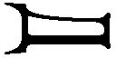,..:: 30.,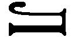, 1972-1990.
●「事件と証言」および「伝記」の執筆に際しては、前に挙げたアカデミー版のドストエフスキー全集の注、および次の八点を基本文献として活用した。そのうち五点の邦訳文献からの引用に関しては、個々の出典、頁数等を示していない。また本書のすべてにわたって小説のタイトルは新潮社刊『ドストエフスキー全集』にしたがい、人名、地名などに関しては全体の統一を考え、勝手ながら、若干、変更を加えさせていただいた部分がある。あらかじめお詫び申し上げるとともに、邦訳文献の訳者には心から感謝の意を表したい。
,. 2,.,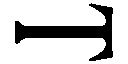, 2000.
.,,,., 1991.
グロスマン『ドストエフスキイ』、北垣信行訳、筑摩書房、一九六六年。
グロスマン編『ドストエフスキー全集』、別巻、年譜（伝記、日付と資料）、松浦健三訳、新潮社、一九八〇年。
ドストエフスカヤ『回想のドストエフスキーⅠ・Ⅱ』、松下裕訳、みすず書房、一九九九年。
モチューリスキー『評伝ドストエフスキー』松下裕・松下恭子訳、筑摩書房、二〇〇〇年。
中村健之介編訳『ドストエフスキーの手紙』、北海道大学図書刊行会、一九八六年。
●「テクスト」概要の執筆に際しては、主として次の文献を参照した。
.,.,.,, 2003.
プロローグ 父殺しの場所１
〈基本文献〉
ドストエフスキー『作家の日記』Ⅲ、『ドストエフスキー全集』、第十九巻、新潮社刊。
,-, 2000.
i..,-..,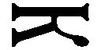, 2003.
.,,i,, 2003.
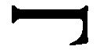.,,, 5, 2003.
木下豊房『ドストエフスキー──その対話的世界』、成文社、二〇〇二年。
中村健之介「『貧しい人たち』の村」、同『ドストエフスキー 生と死の感覚』、岩波書店、一九八四年。
〈引用文献〉
第一講 楽園追放
〈基本文献〉
ドストエフスキー『貧しき人々』、木村浩訳、ドストエフスキー全集、第一巻。
シラー『群盗』、久保栄訳、岩波文庫、一九八一年。
〈引用文献〉
（１） フロイト「ドストエフスキーと父親殺し」、フロイト著作集第三巻、高橋義孝他訳、人文書院、一九八三年、四一七～四二二頁。
（２） .,.....,, 1999, ctp. 362.
（３） 作田啓一『ドストエフスキーの世界』、筑摩書房、一九八八年、三三〇頁。
（４） .,.,..,.,, 2001,. 302.
（５） apaoo., Pycceopoc. Bopyr pyccooea,http://www.svoboda.org/programs/RQ/1999/RQ.25.asp.
（６） .,.,.:.-,-, 1995,. 24.
（７） .,, ─http://chulan.narod.ru/hudlit/dost/janovsky.htm
（８） .,,., 1984,. 197.
（９） .,,. 31-32.
（10） 井桁貞義「ドストエフスキーとシラー──問題設定のために」、同『ドストエフスキイ、言葉の生命』、群像社、二〇〇三年、一九二～九八頁。
（11） 亀山郁夫編『ドストエフスキー』、世界の文学、月刊百科、朝日新聞社、一九九九年。
（12） 埴谷雄高『ドストエフスキイ──その生涯と作品』、日本放送出版協会、二〇〇四年、十頁。
（13） バフチン『ドストエフスキーの詩学』、望月哲男、鈴木淳一訳、ちくま学芸文庫、一九九五年、一〇二頁。
（14） バフチン『ドストエフスキーの詩学』、一二一頁。
（15） 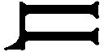., (),., 1923,. 7.
（16） シクロフスキー『ドストエフスキー論 肯定と否定』水野忠夫訳、勁草書房、一九六六年、四五頁。
（17） Cox G., Tyrant and Victim in Dostoevsky, Columbus, Ohio, 1984, p.85.
第二講 引き裂かれた夢想家
〈基本文献〉
ドストエフスキー『分身』『家主の妻』、江川卓、千種堅訳、ドストエフスキー全集、第一巻、第二巻。
同『白夜』『他人の妻とベッドの下の夫』、木村浩、小泉猛訳、ドストエフスキー全集、第二巻。
中村健之介「『女あるじ』小論」、『ドストエフスキー・作家の誕生』所収、みすず書房、一九七九年。
〈引用文献〉
（１） 「ペトラシェフスキーの会」をめぐっては次の二点を参照した。
ベリチコフ編／中村健之介編訳『ドストエフスキー裁判』北海道大学図書刊行会、一九九三年（なお、引用は訳者による「あとがき」五〇四頁）。
原卓也・小泉猛編訳『ドストエフスキーとペトラシェフスキー事件』集英社、一九七一年。
（２） 和田拓司「ヴィッサリオンの偶像」、『ドストエーフスキイ研究』、第二号、一九八五年、七七～八〇頁。
（３） 萩原俊治「わが隣人ドストエフスキイ」、『論集・ドストエフスキイと現代』、二〇〇一年、四〇一頁。
ジラール『地下室の批評家』、織田年和訳、白水社、七九～八〇頁。
（４） Peace R., Dostoevsky and the Concept of Many-faceted doubling,.:I:,..,.,, 2002, pp. 191-192.
（５） シュテルンベルク『デーモン考』、木戸三良訳、法政大学出版会、一九七四年、四五頁。
（６） バフチン『ドストエフスキーの詩学』、二四八頁。
（７） ペレヴェルゼフ『ドストエフスキーの創造』、長瀬隆訳、みすず書房、一九八九年、七三頁。
（８） Girard R., Critique dans un souterrain, Lausanne, L'Age d'Homme, 1976, p.66.
（９） .,.,.:.,. 275.
（10） 主として次の文献を参照した。なお、分離派関連の他の文献については参考文献一覧を参照のこと。
.,,.,, 1998.
（11） .,::,. 1991,. 265.
（12） ., (),http://www.rvb.ru/philologica/02/02dilaktorskaia.htm
（13） コマローヴィチ『ドストエフスキーの青春』中村健之介訳、みすず書房、一九七八年、一〇一頁。
（14） 芦川進一「ラーリャの謎──『ニェートチカ・ニェズヴァーノヴァ』の一ヴァリアントをめぐって」、文集『ドストエフスキイ』、第一号、七六頁。
（15） .,..., ctp. 412.
（16） 芦川進一「ラーリャの謎」、前掲誌、七四頁。
（17） Arban D., Dostoevski, Seuil, 1962.（なお、本文献は芦川進氏による試訳を利用させていただいた）
第三講 回心、神をはらめる民
〈基本文献〉
ドストエフスキー『ステパンチコヴォ村とその住人』、工藤精一郎訳、ドストエフスキー全集、第三巻。
ドストエフスキー『死の家の記録』、工藤精一郎訳、ドストエフスキー全集、第五巻、新潮社。
〈引用文献〉
（１） 次の二点を参照した。
セミョーノヴァ『フョードロフ伝』安岡治子・亀山郁夫訳、水声社、一九九八年。
中村健之介「ニコライ・フョードロフへの関心──死者の復活」、同『生と死の感覚』所収。
（２） .,...,, 2003,. 418.
（３） バフチン『ドストエフスキーの詩学』、三二七～三二八頁。
（４） ., (),. ,. 12,.-, 1996,. 73-75.
（５） ., (),. 75.
（６） モチューリスキー『評伝ドストエフスキー』松下裕・松下恭子訳、筑摩書房、二〇〇〇年、二一三頁。
（７） .,,.,, 1997,. 50.
第四講 地下室の誕生
〈基本文献〉
ドストエフスキー「《ロシア報知》への答え」、染谷茂、原卓也訳、ドストエフスキー全集、第二四巻。
ドストエフスキー『虐げられた人々』、小笠原豊樹訳、ドストエフスキー全集、第四巻。
ドストエフスキー『地下室の手記』、江川卓訳、ドストエフスキー全集、第六巻。
.,,.:,5, 1995.
Jackson R., Dialogues with Dostoevsky: The Overwhelming Questions, Stanford, Stanford University Press, 1993.
郡伸哉『プーシキン──饗宴の宇宙』、彩流社、一九九九年。
〈引用文献〉
（１） .,,.,, 1998,. 140.
（２） カー『ドストエフスキー』、松村達雄訳、筑摩書房、一九六八年、一〇六頁。
（３） この時期のドストエフスキーにおける犯罪に対する関心をめぐる記述は次の二点を参考にした。
., p,, y, 1975.
.,.... 1861-1863,., 1972.
（４） ドリーニン編『スースロワの日記』、中村健之介訳、みすず書房、一九八九年、一五～一六頁。
（５） .,:,.,., 2001,. 194.
（６） 中村健之介『ドストエフスキー人物事典』、朝日選書、朝日新聞社、一九九〇年、一二八頁。
（７） 同「『虐げられた人たち』の内と外」、同『ドストエフスキー・作家の誕生』、みすず書房、一九七九年、二〇八～二〇九頁。
第五講 観念という狂気
〈基本文献〉
ドストエフスキー『罪と罰』、工藤精一郎訳、『ドストエフスキー全集』、第八、九巻。
ドストエフスキー『賭博者』、原卓也訳、ドストエフスキー全集、第六巻。
江川卓『謎とき『罪と罰』』、新潮選書、新潮社、一九八六年。
作田啓一『ドストエフスキーの世界』、筑摩書房、一九八八年。
高橋誠一郎『『罪と罰』を読む──「正義」の犯罪と文明の危機』、刀水書房、一九九六年。
.,,., 7,., 1987.
〈引用文献〉
（１） ., 19,.,.-., 1957.（坂内徳明氏からデータをご教示頂いた）
（２） 以上の記述は、中村健之介「『未刊だったドストエフスキー』から──未来の、楽園の生の想像」（同『ドストエフスキー 生と死の感覚』所収）を参照した。
（３） 江川卓『謎とき『カラマーゾフの兄弟』』、新潮選書、新潮社、一九九一年、一四六～一四七頁。
（４） ジラール『ドストエフスキー──二重性から単一性へ』、鈴木晶訳、法政大学出版局、一九八三年。
（５） フロイト「ドストエフスキーと父親殺し」、前掲書、四二九～四三〇頁。
（６） 清水孝純『道化の風景──ドストエフスキーを読む』、九州大学出版会、一九九四年、十頁。
（７） .,,.:I:,..,.,, 2002, 158.
（８） .,,.:I,., 1989, ctp. 47.
（９） 井桁貞義「大地──聖母──ソフィア」、同『ドストエフスキイ──言葉の生命』、一一六頁。
（10） 江川卓『謎とき『罪と罰』』、二二三頁。
（11） .,,.:I,., 1989,. 34.
（12） フロイト「ナルシシズム入門」、フロイト著作集、第五巻、人文書院、一九六九年、一一一頁。
（13） 中村健之介「『罪と罰』の自然感」、同『ドストエフスキー──生と死の感覚』所収、二八頁。
（14） ベローフ『『罪と罰』注解』、糸川紘一訳・江川卓監修、群像社、一九九〇年、八二頁。
（15） 江川卓『謎とき『罪と罰』』、前掲書、四六～四七頁。
（16） .,,,,- y, 1975,. 44.
（17） .,,. 67.
（18） 江川卓『謎とき『罪と罰』』、九八～一〇〇頁。
（19） .,,. 54.
（20） .,,., 1987,. 208.
（21） グロスマン『ドストエフスキイ』、二九七頁。
（22） 清水孝純『道化の風景──ドストエフスキーを読む』、九州大学出版会、一九九四年、三一頁。なお、ジードの見解は、同書の注に引用されている（Gide A., Dostoevski, Gallimard, 1923, pp. 161-162）.
（23） グロスマン『ドストエフスキイ』、前掲書、二〇四～二〇五頁。
（24） バフチン『ドストエフスキーの詩学』、前掲書、三四四～三四五頁。
（25） ., (: ),.:.,. 96.
（26） .,,. 96.
（27） .,,. 97.
第六講 聖なるものの運命
〈基本文献〉
ドストエフスキー『白痴』、木村浩訳、『ドストエフスキー全集』、第九、十巻、新潮社。
新谷敬三郎『『白痴』を読む』、白水社、一九七九年。
江川卓『謎とき『白痴』』新潮選書、新潮社、一九九四年。
〈引用文献〉
（１） ジラール『ドストエフスキー──二重性から単一性へ』、六七頁。
（２） フロイト「ドストエフスキーと父親殺し」、前掲書、四二七頁。
（３） .,,.,, 1998,. 34.
（４） モチューリスキー『評伝ドストエフスキー』、三八五頁。
（５） 江川卓『謎とき『白痴』』新潮選書、新潮社、一九九四年、一八四～一八五頁。
（６） .,,,,,.,. 140-141. なお、本文中に示されたステパニャーンの指摘は、次の論文を敷衍したものである。.,.,-. y. 1993.
（７） .,,,,,. 148.
（８） モチューリスキー『評伝ドストエフスキー』、一九四～一九五頁。
（９） .,..,.,, 2001,. 33.
なお、本章は、次の論文を大幅に加筆補正したものである。
亀山郁夫「犠牲と欲望のドラマトゥルギー──ドストエフスキー『白痴』講義」、『スラヴ文化研究』、第三号、二〇〇四年
死と生のギャラリー １ 死せるキリスト
〈基本文献〉
中村健之介「『墓の中の死せるキリスト』に見たもの」、同『ドストエフスキー──生と死の感覚』所収。
〈引用文献〉
（１） Zwingenberger J., Holbein the Younger, London, Parkstone Press, 1999, p.126.
（２） .,.,, -., 2002, 57.
（３） Zwingenberger J., Holbein the Younger, London, pp. 128-130. なお「リンゴの死」の原文は次の通り。
A morsu primi hominis, qui veritae arboris pomum mordens mortem incurrit
〈注記〉
●なお、本講では便宜上、分離派の概念に種々の異端派も含める。分離派関連の記述は、次の資料を参照した。
中村喜和『聖なるロシアを求めて──旧教徒のユートピア伝説』、平凡社、一九九〇年。
●本書に掲げた三点の地図（モスクワとダロヴォーエ・チェルマシニャー周辺地図、１８４９年～59年にかけてのシベリア流刑とペテンブルグ帰還の地図、第１回目と第２回目のヨーロッパ旅行地図）は次の文献中の地図をもとに作成した。
ネチャーエワ代表編著『ドストエフスキー・写真と記録』、中村健之介編訳、論創社、一九八六年。
亀山郁夫──かめやま・いくお
●１９４９年、栃木県生まれ。東京外国語大学卒業、東京大学大学院博士課程単位取得退学。現、東京外国語大学長。ロシア文学・文化論専攻。未来派の詩人フレーブニコフの研究からロシア文学に入り、その後、ロシア・アヴァンギャルド全体へ関心を広げ、現在は、スターリン時代の文化を研究の対象としている。主な関心は、全体主義の権力下に生きる芸術家たちの「良心」とサバイバルの手段としての芸術表現のありようだが、最近は、ソビエト時代の検閲システムにも関心を寄せ、同時代の文学さらに表象文化全般をめぐって批評活動を行っている。
●著書に、『終末と革命のロシア・ルネサンス』（岩波書店）、『ロシア・アヴァンギャルド』（岩波新書）、『破滅のマヤコフスキー』（筑摩書房）、『あまりにロシア的な。』（青土社）、『磔のロシア──スターリンと芸術家たち』（岩波書店、第29回大佛次郎賞受賞）、『熱狂とユーフォリア──スターリン学のための序章』（平凡社）、『「悪霊」神になりたかった男』（みすず書房）。訳書としては、プラトーノフ『土台穴』（国書刊行会）、ドストエフスキー『カラマーゾフの兄弟』（光文社古典新訳文庫）他多数。
ＮＨＫブックス
ドストエフスキー 父殺しの文学（上）
２０１３（平成25）年４月30日 電子書籍版発行
著 者 亀山郁夫
©2004 Ikuo Kameyama
発行者 溝口明秀
発行所 ＮＨＫ出版
〒１５０－８０８１ 東京都渋谷区宇田川町41－１
電話 ０３－３７８０－３３１７（編集）
電話 ０５７０－０００－３２１（販売）
ホームページ http://www.nhk-book.co.jp
この作品は『ＮＨＫブックス ドストエフスキー 父殺しの文学（上）』〔２０１１（平成23）年12月25日 第５刷発行〕に基づいて制作されました。
本作品の内容を無断で複製・複写・放送・データ放送配信・転載・改ざん・公衆送信（ホームページなどに掲載することを含む）することは、固くお断りいたします。